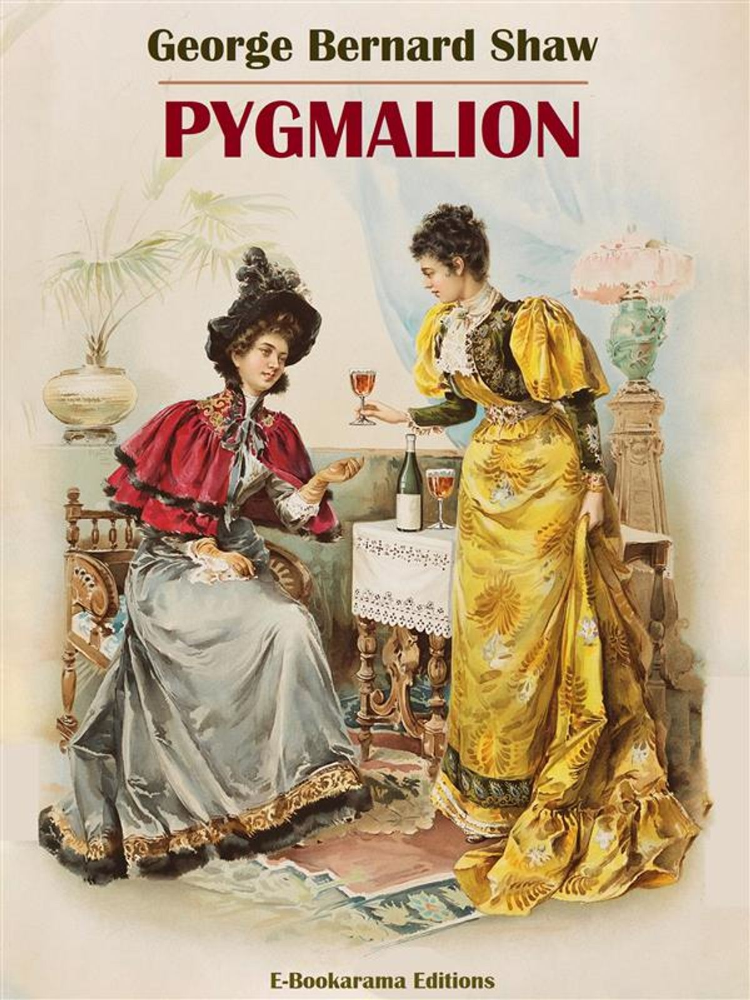

0
стр. з
0
сторінок

завантаження...

Джордж Бернард Шоу
Пигмалион
Пьесу адаптировал Сергей Андреевский
Метод чтения Ильи Франка
Сontents
Act I
Covent Garden at 11.15 p.m. (Ковент-Гарден, четверть двенадцатого вечера; Covent Garden /зд./ — Ковент-Гарден /площадь, где был расположен овощной и цветочный рынок в Лондоне/; p.m. = post meridiem /лат./ — после полудня). Torrents of heavy summer rain (льет сильный летний дождь: «потоки сильного летнего дождя»; heavy — тяжелый; сильный, интенсивный). Cab whistles blowing frantically in all directions (во всех направлениях = со всех сторон бешено свистят кэбы; to blow — дуть, веять /о ветре/; свистеть /о сирене, свистке/). Pedestrians running for shelter into the market and under the portico of St. Paul’s Church (пешеходы бегут в поисках убежища к рынку и под портик Церкви святого Павла; for /предл./ — в пространственном значении указывает на объект стремления, поисков и т.п.; St. = Saint), where there are already several people (где уже стоят: «находятся» несколько человек), among them a lady and her daughter in evening dress (среди них — дама с дочерью, /обе/ в вечерних платьях).
heavy ['hevI], whistle ['wIs(q)l], daughter ['dO:tq]
Covent Garden at 11.15 p.m. Torrents of heavy summer rain. Cab whistles blowing frantically in all directions. Pedestrians running for shelter into the market and under the portico of St. Paul’s Church, where there are already several people, among them a lady and her daughter in evening dress.
They are all peering out gloomily at the rain (все они угрюмо вглядываются в дождь), except one man with his back turned to the rest (кроме одного человека, повернувшегося спиной к остальным), who seems wholly preoccupied with a notebook (внимание которого, по-видимому, целиком поглощено записной книжкой; to seem — казаться, представляться; to preoccupy — занимать, захватывать раньше других; занимать, поглощать внимание) in which he is writing busily (в которой он энергично /что-то/ пишет; busily — деловито; энергично).
The church clock strikes the first quarter (часы на церковной /башне/ отбивают первую четверть /двенадцатого/).
The Daughter (дочь) [in the space between the central pillars (/стоит/ «в пространстве» между центральными колоннами), close to the one on her left (ближе к той, что от нее слева) ] I’m getting chilled to the bone (холод меня пробирает: «я становлюсь замерзшей» до костей; to chill — охлаждать, студить). What can Freddy be doing all this time (что Фредди может делать все это время)? He’s been gone twenty minutes (он ушел двадцать минут назад).
wholly ['hqVllI], preoccupy [prI'OkjVpaI], quarter ['kwO:tq]
They are all peering out gloomily at the rain, except one man with his back turned to the rest, who seems wholly preoccupied with a notebook in which he is writing busily.
The church clock strikes the first quarter.
The Daughter [in the space between the central pillars, close to the one on her left] I’m getting chilled to the bone. What can Freddy be doing all this time? He’s been gone twenty minutes.
The Mother (мать) [on her daughter’s right (справа от «своей» дочери) ] Not so long (/нет/, не так давно). But he ought to have got us a cab by this (но к этому времени он бы уже должен найти для нас такси; to get — доставать, добывать; cab — наемный экипаж, кэб; такси; by this — к этому времени).
A Bystander (прохожий; bystander — сторонний наблюдатель) [on the lady’s right (справа от дамы) ] He won’t get no cab not until half-past eleven, missus (никакого такси он не найдет до половины двенадцатого: «до половины после одиннадцати», госпожа), when they come back after dropping their theatre fares (когда они будут возвращаться, после того как развезут своих пассажиров-театралов; to drop — капать стекать каплями; ссаживать, высаживать /кого-л. где-л./; fare — плата за проезд; седок, пассажир).
The Mother (мать). But we must have a cab (но нам обязательно нужно: «но мы должны» найти такси; to have — иметь; получать). We can’t stand here until half-past eleven (мы не можем стоять здесь до половины двенадцатого). It’s too bad (это никуда не годится: «это слишком плохо»).
The Bystander (Прохожий). Well, it ain’t my fault, missus (ну, это не моя вина, госпожа; ain’t /прост./ = is not, are not, has not, have not).
missus ['mIsIz], until [qn'tIl], fault [fO:lt]
The Mother [on her daughter’s right] Not so long. But he ought to have got us a cab by this.
A Bystander [on the lady’s right] He won’t get no cab not until half-past eleven, missus, when they come back after dropping their theatre fares.
The Mother. But we must have a cab. We can’t stand here until half-past eleven. It’s too bad.
The Bystander. Well, it ain’t my fault, missus.
The Daughter (дочь). If Freddy had a bit of gumption (если бы Фредди имел /хоть/ немного сообразительности; bit — кусок, кусочек; небольшое количество, чуть-чуть), he would have got one at the theatre door (он бы взял его у входа в театр; door — дверь; вход в помещение).
The Mother. What could he have done, poor boy (что он мог /тогда/ сделать, бедный мальчик)?
The Daughter. Other people got cabs (другие «люди» брали такси). Why couldn’t he (почему же он не мог)?
Freddy rushes in out of the rain from the Southampton Street side (со стороны Саутгемптон-стрит из дождя вылетает Фредди; to rush — бросаться, мчаться), and comes between them closing a dripping umbrella (и становится между ними, закрывая зонтик, с которого стекает /вода/; to drip — капать; стекать). He is a young man of twenty, in evening dress (это молодой человек лет двадцати, в вечернем костюме; dress — одежда, платье), very wet around the ankles (/брюки/ совсем мокрые у лодыжек).
The Daughter. Well, haven’t you got a cab (итак, ты не нашел такси)?
Freddy. There’s not one to be had for love or money (вообще нет ни одного, /кого можно было бы/ нанять; for love or money — любой ценой).
gumption [gAmpSn], Southampton [saVT'xm(p)tqn], umbrella [Am'brelq]
The Daughter. If Freddy had a bit of gumption, he would have got one at the theatre door.
The Mother. What could he have done, poor boy?
The Daughter. Other people got cabs. Why couldn’t he?
Freddy rushes in out of the rain from the Southampton Street side, and comes between them closing a dripping umbrella. He is a young man of twenty, in evening dress, very wet around the ankles.
The Daughter. Well, haven’t you got a cab?
Freddy. There’s not one to be had for love or money.
The Mother. Oh, Freddy, there must be one (ах, Фредди, должно же быть /хоть/ одно). You can’t have tried (ты, наверное, и не пытался искать: «не может быть, чтобы ты пытался»).
The Daughter. It’s too tiresome (это так утомительно). Do you expect us to go and get one ourselves (ты предлагаешь нам самим пойти и найти себе такси; to expect — ждать, ожидать; требовать)?
Freddy. I tell you they’re all engaged (говорю же вам, они все заняты; to engage — брать на себя обязательство, обещать; нанимать). The rain was so sudden: nobody was prepared (дождь так внезапно начался: «был столь неожиданным», никто не был /к этому/ готов); and everybody had to take a cab (и всем: «каждому» пришлось брать такси). I’ve been to Charing Cross one way (я прошел до Чаринг-Кросс в одну сторону; one way — в одном направлении) and nearly to Ludgate Circus the other (и почти до Ладгейт-Серкес в другую); and they were all engaged (и они все были заняты).
The Mother. Did you try Trafalgar Square (а ты на Трафальгар-Сквер проверял; to try — испытывать, подвергать испытанию; пробовать, проверять)?
Freddy. There wasn’t one at Trafalgar Square (на Трафальгар-Сквер не было ни одного).
The Daughter. Did you try (а ты проверял)?
tiresome ['taIqsqm], circus ['sE:kqs], square [skwEq]
The Mother. Oh, Freddy, there must be one. You can’t have tried.
The Daughter. It’s too tiresome. Do you expect us to go and get one ourselves?
Freddy. I tell you they’re all engaged. The rain was so sudden: nobody was prepared; and everybody had to take a cab. I’ve been to Charing Cross one way and nearly to Ludgate Circus the other; and they were all engaged.
The Mother. Did you try Trafalgar Square?
Freddy. There wasn’t one at Trafalgar Square.
The Daughter. Did you try?
Freddy. I tried as far as Charing Cross Station (я проверял /даже/ у самого Чарингкросского вокзала; as far as — “так далеко как”, до самого). Did you expect me to walk to Hammersmith (ты ожидала, что я пойду пешком в Хаммерсмит)?
The Daughter. You haven’t tried at all (ты вообще не проверял; at all — нисколько, ничуть).
The Mother. You really are very helpless, Freddy (от тебя и вправду совсем мало толку, Фредди; very — очень, весьма; helpless — беспомощный; бесполезный). Go again; and don’t come back until you have found a cab (отправляйся снова и не возвращайся, пока не найдешь такси).
Freddy. I shall simply get soaked for nothing (я просто понапрасну промокну: «стану промокшим»; for nothing — зря, без пользы).
The Daughter. And what about us (а что же насчет нас)? Are we to stay here all night in this draught (мы что, должны стоять здесь всю ночь на этом сквозняке; draught — тяга, тяговое усилие; сквозняк), with next to nothing on (почти раздетые; next to nothing — почти ничего; on /нареч./ — указывает на нахождение на поверхности чего-л.; указывает на надевание одежды или наличие ее на ком-л.). You selfish pig (ты эгоистичный свинтус) —
Hammersmith ['hxmqsmIT], found [faund], draught [drRft]
Freddy. I tried as far as Charing Cross Station. Did you expect me to walk to Hammersmith?
The Daughter. You haven’t tried at all.
The Mother. You really are very helpless, Freddy. Go again; and don’t come back until you have found a cab.
Freddy. I shall simply get soaked for nothing.
The Daughter. And what about us? Are we to stay here all night in this draught, with next to nothing on. You selfish pig —
Freddy. Oh, very well: I’ll go, I’ll go (ну, ладно: я иду /уже/, иду; oh, very well — ну ладно). [He opens his umbrella and dashes off Strandwards (он открывает зонтик и бросается в сторону Стрэнда; - wards /суф./ — образует прилагательные и наречия со значением направления движения в какую-л. сторону), but comes into collision with a flower girl (но сталкивается: «приходит в столкновение» с девушкой-цветочницей), who is hurrying in for shelter (которая спешит в укрытие), knocking her basket out of her hands (и выбивает корзинку /с цветами/ у нее из рук). A blinding flash of lightning (ослепительная вспышка молнии), followed instantly by a rattling peal of thunder (за которой тут же следует раскатистый удар грома; rattling — грохочущий; шумный; peal — звон колоколов, перезвон; раскат /грома/), orchestrates the incident (сопровождает это происшествие; to orchestrate — инструментовать, оркестровать) ]
The Flower Girl (Цветочница). Nah then, Freddy: look wh’ y’ gowin, deah (эй, Фредди, смотри, куда идешь, дорогой; nah then /диал./ = now then — эй, послушайте!; wh’ y’ gowin /диал./ = where you going; deah = dear).
Freddy. Sorry [he rushes off] (простите [убегает прочь]).
lightning ['laItnIN], thunder ['TAndq], orchestrate ['O:kIstreIt]
Freddy. Oh, very well: I’ll go, I’ll go. [He opens his umbrella and dashes off Strandwards, but comes into collision with a flower girl, who is hurrying in for shelter, knocking her basket out of her hands. A blinding flash of lightning, followed instantly by a rattling peal of thunder, orchestrates the incident]
The Flower Girl. Nah then, Freddy: look wh’ y’ gowin, deah.
Freddy. Sorry [he rushes off].
The Flower Girl (цветочница) [picking up her scattered flowers and replacing them in the basket (поднимая разбросанные цветы и укладывая их обратно в корзинку; to replace — класть, возвращать на место) ] There’s menners f’ yer (ну и манеры у тебя; menners f’ yer /искаж./ = manners for you)! Te-oo banches o voylets trod into the mad (два букетика фиалок втоптаны в грязь; te-oo banches o voylets /диал./ = two bunches of violets; bunch — связка, пучок; букет /цветов/; to tread — ступать, шагать; топтать, давить; mad /зд., диал./ = mud). [She sits down on the plinth of the column, sorting her flowers, on the lady’s right (она садится на цоколь колонны, перебирая свои цветы, справа от дамы). She is not at all an attractive person (она совсем не привлекательна; person — человек, особа). She is perhaps eighteen, perhaps twenty, hardly older (она лет восемнадцати, возможно двадцати, вряд ли старше). She wears a little sailor hat of black straw (носит маленькую шляпку из почерневшей соломки; sailor hat — бескозырка; соломенная шляпка с низкой тульей и узкими полями) that has long been exposed to the dust and soot of London (которую долгое время подвергали воздействию пыли и копоти Лондона; to expose — выставлять напоказ; подвергать воздействию /непогоды и т.п./) and has seldom if ever been brushed (и редко — если вообще когда-либо — чистили щеткой).
column ['kOlqm], perhaps [pq'hxps], straw [strO:]
The Flower Girl [picking up her scattered flowers and replacing them in the basket] There’s menners f’ yer! Te-oo banches o voylets trod into the mad. [She sits down on the plinth of the column, sorting her flowers, on the lady’s right. She is not at all an attractive person. She is perhaps eighteen, perhaps twenty, hardly older. She wears a little sailor hat of black straw that has long been exposed to the dust and soot of London and has seldom if ever been brushed.
Her hair needs washing rather badly (ее волосы очень нуждаются в мытье; rather — скорее, точнее; весьма; badly — плохо; крайне /эмоц.-усил./): its mousy color can hardly be natural (их мышиный цвет едва ли может быть природным). She wears a shoddy black coat (на ней надето: «она носит» черное дешевенькое пальто из шодди; shoddy — сделанный из регенерированной шерсти; низкопробный, дешевый) that reaches nearly to her knees and is shaped to her waist (которое затянуто в талии и едва достает ей до колен; to shape — придавать/принимать форму). She has a brown skirt with a coarse apron (на ней /также/ коричневая юбка и передник из грубой /материи/). Her boots are much the worse for wear (ее башмаки совсем изношены; to look the worse for wear — выглядеть сильно поношенным). She is no doubt as clean as she can afford to be (несомненно, она чистоплотна, насколько это в ее силах; clean — чистый; опрятный, чистоплотный; can afford to do smth. — быть в состоянии позволить себе делать что-л.); but compared to the ladies she is very dirty (но в сравнении с /нашими/ дамами она выглядит неопрятно: «она очень грязная»). Her features are no worse than theirs (черты ее лица не хуже, чем у них); but their condition leaves something to be desired (но состоянием кожи не мешало бы заняться: «но их состояние оставляет желать лучшего»; to leave something to be desired — оставлять желать лучшего); and she needs the services of a dentist (и она нуждается в услугах дантиста) ].
knee [ni:], doubt [daut], features ['fi:tSqz]
Her hair needs washing rather badly: its mousy color can hardly be natural. She wears a shoddy black coat that reaches nearly to her knees and is shaped to her waist. She has a brown skirt with a coarse apron. Her boots are much the worse for wear. She is no doubt as clean as she can afford to be; but compared to the ladies she is very dirty. Her features are no worse than theirs; but their condition leaves something to be desired; and she needs the services of a dentist].
The Mother. How do you know that my son’s name is Freddy, pray (откуда вы знаете, что имя моего сына Фредди; to pray — молить, просить; pray /как вводное слово/ — скажите на милость!)?
The Flower Girl. Ow, eez ye-ooa san, is e (а, это ваш сын, так; ow, eez ye-ooa san, is e /искаж./ = oh, he’s your son, is he)? Wal, fewd dan y’ de-ooty bawmz a mather should (если б вы выполняли свои обязанности по отношению к нему, как положено матери; wal, fewd dan y’ de-ooty bawmz a mather should /искаж./ = well, if you’d done your duty by him as a mother should), eed now bettern to spawl a pore gel’s flahrzn than ran awy atbaht pyin (он бы не испортил бедной девушке ее цветы, а потом не удрал бы, не заплатив; he’d know better than to spoil poor girl’s flowers and then run away without paying; to know better — быть не настолько глупым, чтобы). Will ye-oo py me f’them (вы не хотите заплатить мне за них; will ye-oo py me f’them = will you pay me for them)? [Here, with apologies (тут, с /нашими/ извинениями), this desperate attempt to represent her dialect without a phonetic alphabet (от этой отчаянной попытки воспроизвести ее речь без фонетического алфавита; dialect — диалект, говор) must be abandoned as unintelligible outside London (/нам/ придется отказаться, поскольку за пределами Лондона /ее речь никто/ не поймет; unintelligible — неразборчивый, непонятный) ].
The Daughter. Do nothing of the sort, mother (не делайте ничего подобного, мама). The idea (вот еще; the idea! — употребляется, чтобы выразить свое несогласие, возмущение)!
dialect ['daIqlekt], unintelligible ["AnIn'telIdZqb(q)l], idea [aI'dIq]
The Mother. How do you know that my son’s name is Freddy, pray?
The Flower Girl. Ow, eez ye-ooa san, is e? Wal, fewd dan y’ de-ooty bawmz a mather should, eed now bettern to spawl a pore gel’s flahrzn than ran awy atbaht pyin. Will ye-oo py me f’them? [Here, with apologies, this desperate attempt to represent her dialect without a phonetic alphabet must be abandoned as unintelligible outside London.]
The Daughter. Do nothing of the sort, mother. The idea!
The Mother. Please allow me, Clara (пожалуйста, позволь /решать/ мне, Клара). Have you any pennies (у тебя есть мелкие монеты: «у тебя есть пенсы»)?
The Daughter. No. I’ve nothing smaller than sixpence (нет, ничего меньше монеты в шести пенсов у меня нет).
The Flower Girl (цветочница) [hopefully (с надеждой) ] I can give you change for a tanner, kind lady (я могу дать вам сдачи с шестипенсовика, добрая леди; change — перемена, изменение; размен /денег/; сдача; tanner /разг./ — шестипенсовик).
The Mother (мать) [to Clara] Give it to me (дай мне ее = монету). [Clara parts reluctantly (Клара неохотно отдает; to part — разделять, отделять; расставаться /с чем-л./) ]. Now [to the girl (девушке) ] This is for your flowers (вот, это за ваши цветы).
The Flower Girl. Thank you kindly, lady (от всего сердца благодарю, леди).
The Daughter. Make her give you the change (пускай даст тебе сдачу; to make smb. do smth. — вынуждать, побуждать кого-л. cделать что-л.). These things are only a penny a bunch (эти цветы стоят всего лишь пенни за букет; thing — вещь, предмет).
The Mother. Do hold your tongue, Clara (попридержи-ка свой язык, Клара; do /зд./ — употребляется для усиления значения глагола). [To the girl (девушке) ]. You can keep the change (сдачу можете оставить себе; to keep — держать, хранить; не возвращать, оставлять себе).
The Flower Girl. Oh, thank you, lady (о, спасибо вам, леди).
allow [q'laV], reluctantly [rI'lAktqntlI], tongue [tAN]
The Mother. Please allow me, Clara. Have you any pennies?
The Daughter. No. I’ve nothing smaller than sixpence.
The Flower Girl [hopefully] I can give you change for a tanner, kind lady.
The Mother [to Clara] Give it to me. [Clara parts reluctantly]. Now [to the girl] This is for your flowers.
The Flower Girl. Thank you kindly, lady.
The Daughter. Make her give you the change. These things are only a penny a bunch.
The Mother. Do hold your tongue, Clara. [To the girl]. You can keep the change.
The Flower Girl. Oh, thank you, lady.
The Mother. Now tell me how you know that young gentleman’s name (а теперь расскажите мне, откуда вы знаете имя того джентльмена).
The Flower Girl. I didn’t (я не знала).
The Mother. I heard you call him by it (я слышала, как вы назвали его по имени; to hear). Don’t try to deceive me (не пытайтесь обмануть меня).
The Flower Girl [protesting (протестуя) ] Who’s trying to deceive you (кто пытается обмануть вас)? I called him Freddy or Charlie same as you might yourself (я назвала его Фредди или Чарли точно так же, как вы могли бы и сами; same as — точно так же, таким же образом) if you was talking to a stranger and wished to be pleasant (если бы разговаривали с незнакомцем и хотели быть вежливой: «приятной»). [She sits down beside her basket (она садится рядом со своей корзинкой) ].
The Daughter. Sixpence thrown away (шесть пенсов выброшены на ветер; to throw — бросать, швырять; to throw away money — тратить деньги впустую)! Really, mamma, you might have spared Freddy that (право, мама, вы могли бы избавить Фредди от этого; really — действительно, на самом деле; по правде говоря; to spare — беречь, сберегать; щадить, избавлять /от чего-л./). [She retreats in disgust behind the pillar (она возмущенно удаляется за колонну; disgust — отвращение; недовольство, раздражение) ].
heard [hE:d], deceive [dI'si:v], might [maIt]
The Mother. Now tell me how you know that young gentleman’s name.
The Flower Girl. I didn’t.
The Mother. I heard you call him by it. Don’t try to deceive me.
The Flower Girl [protesting] Who’s trying to deceive you? I called him Freddy or Charlie same as you might yourself if you was talking to a stranger and wished to be pleasant. [She sits down beside her basket].
The Daughter. Sixpence thrown away! Really, mamma, you might have spared Freddy that. [She retreats in disgust behind the pillar].
An elderly gentleman of the amiable military type rushes into shelter (пожилой джентльмен с приятной /внешностью старого/ вояки вбегает под крышу: «в укрытие»; military — военный, воинский; type — типичный образец/представитель), and closes a dripping umbrella (и закрывает зонтик, с которого стекают капли). He is in the same plight as Freddy (он в таком же положении, как и Фредди; plight — состояние, положение /обычно плохое, затруднительное/), very wet about the ankles (/его брюки/ внизу насквозь промокли: «очень мокрые у лодыжек»). He is in evening dress, with a light overcoat (он в вечернем костюме и легком пальто). He takes the place left vacant by the daughter’s retirement (он становится на освободившееся после ухода дочери место; to take — брать; занимать /место/; to leave — оставлять, покидать; vacant — пустой, незаполненный; незанятый, свободный; to retire — удаляться, уходить).
The Gentleman (джентльмен). Phew (уф)!
The Mother [to the gentleman (джентльмену) ] Oh, sir, is there any sign of its stopping (ах, сэр, нет ли каких признаков, что это прекратится)?
The Gentleman. I’m afraid not (боюсь, что нет). It started worse than ever about two minutes ago (минуты две назад он припустил: «начался» еще сильнее, чем прежде; to start — вскакивать, резко начинать движение; начинаться; worse — хуже; сильнее, больше /в значении “хуже того”/; ever — когда-либо). [He goes to the plinth beside the flower girl (он подходит к цоколю рядом с цветочницей); puts up his foot on it (ставит на него ногу); and stoops to turn down his trouser ends (и нагибается, чтобы отвернуть края брючины; to turn down — отворачивать, загибать вниз) ].
amiable ['eImIqb(q)l], retirement [rI'taIqmqnt], trousers ['traVzqz]
An elderly gentleman of the amiable military type rushes into shelter, and closes a dripping umbrella. He is in the same plight as Freddy, very wet about the ankles. He is in evening dress, with a light overcoat. He takes the place left vacant by the daughter’s retirement.
The Gentleman. Phew!
The Mother [to the gentleman] Oh, sir, is there any sign of its stopping?
The Gentleman. I’m afraid not. It started worse than ever about two minutes ago. [He goes to the plinth beside the flower girl; puts up his foot on it; and stoops to turn down his trouser ends].
The Mother. Oh, dear (о, Боже; oh, dear! — Боже мой!, вот так так!)! [She retires sadly and joins her daughter (с унылым /видом/ отходит и присоединяется к своей дочери) ].
The Flower Girl [taking advantage of the military gentleman’s proximity (пользуется соседством старого ветерана: «военного джентльмена»; to take advantage — использовать в своих интересах, с выгодой для себя) to establish friendly relations with him (чтобы установить с ним дружеские отношения) ]. If it’s worse it’s a sign it’s nearly over (если полил сильнее, то это признак того, что он почти закончился; to be over — окончиться, завершиться). So cheer up, Captain; and buy a flower off a poor girl (так что не расстраивайтесь, капитан, и купите цветок у бедной девушки; cheer up! — приободрись, не падай духом).
The Gentleman. I’m sorry, I haven’t any change (к сожалению, у меня нет мелочи).
The Flower Girl. I can give you change, Captain (я могу дать вам сдачи, капитан).
The Gentlemen. For a sovereign (с соверена)? I’ve nothing less (меньше у меня нет).
The Flower Girl. Garn (ух ты!; garn — ну да!, иди ты! /выражает удивление, досаду/)! Oh do buy a flower off me, Captain (ну, правда, купите у меня цветочек, капитан). I can change half-a-crown (я могу разменять полкроны). Take this for tuppence (возьмите вот этот за два пенса; tuppence = twopence).
proximity [prOk'sImItI], sign [saIn], sovereign ['sOvrIn]
The Mother. Oh, dear! [She retires sadly and joins her daughter].
The Flower Girl [taking advantage of the military gentleman’s proximity to establish friendly relations with him]. If it’s worse it’s a sign it’s nearly over. So cheer up, Captain; and buy a flower off a poor girl.
The Gentleman. I’m sorry, I haven’t any change.
The Flower Girl. I can give you change, Captain,
The Gentlemen. For a sovereign? I’ve nothing less.
The Flower Girl. Garn! Oh do buy a flower off me, Captain. I can change half-a-crown. Take this for tuppence.
The Gentleman. Now don’t be troublesome: there’s a good girl (ну, не будьте назойливой, это нехорошо; troublesome — причиняющий беспокойство; назойливый, докучливый; there’s a good boy/girl — будь умницей). [Trying his pockets (проверяет свои карманы = роется в карманах; to try — пытаться; проверять) ] I really haven’t any change (у меня действительно нет мелочи) — Stop: here’s three hapence (постойте-ка, вот есть три монетки по полпенса; hapence = halfpence /мн.ч. от halfpenny — полупенсовик, полпенни/), if that’s any use to you (если вас это устраивает; to be any use — оказаться полезным /кому-л./) [he retreats to the other pillar (он отступает к другой колонне) ].
The Flower Girl [disappointed, but thinking three halfpence better than nothing (разочарованная, но решившая, что полтора пенса: «три полупенсовика» лучше, чем ничего; to think — думать, размышлять; полагать, считать) ] Thank you, sir (спасибо, сэр).
The Bystander (прохожий) [to the girl (девушке) ] You be careful: give him a flower for it (будьте осторожны, дайте ему за них цветок). There’s a bloke here behind (вон там какой-то тип сзади) taking down every blessed word you’re saying (записывает каждое чертово слово, что вы говорите; to take down — записывать; blessed — благословенный, освященный; проклятый, чертов /разг., эмоц.-усил./). [All turn to the man who is taking notes (все поворачиваются к человеку, который делает заметки) ].
troublesome ['trAb(q)ls(q)m], halfpence ['heIpqns], turn [tɜ:n]
The Gentleman. Now don’t be troublesome: there’s a good girl. [Trying his pockets] I really haven’t any change — Stop: here’s three hapence, if that’s any use to you [he retreats to the other pillar].
The Flower Girl [disappointed, but thinking three halfpence better than nothing] Thank you, sir.
The Bystander [to the girl] You be careful: give him a flower for it. There’s a bloke here behind taking down every blessed word you’re saying. [All turn to the man who is taking notes].
The Flower Girl [springing up terrified (в ужасе подпрыгивает) ] I ain’t done nothing wrong by speaking to the gentleman (я не сделала ничего плохого, поговорив с этим джентльменом; ain’t /прост./ = is not, are not, has not, have not). I’ve a right to sell flowers if I keep off the kerb (я имею право продавать цветы, если не лезу на проезжую часть; to keep off — держаться в отдалении, не приближаться; kerb — край тротуара). [Hysterically (истерично) ] I’m a respectable girl (я порядочная девушка; respectable — почтенный, уважаемый; приличный): so help me, I never spoke to him except to ask him to buy a flower off me (ей-богу, я ни о чем таком: «никогда» не говорила с ним, кроме того, что просила купить цветок; so help me! — честное слово! /в уверениях, клятвах/). [General hubbub, mostly sympathetic to the flower girl (всеобщий гам, большая часть /собравшихся/ сочувствует цветочнице; sympathetic — сочувственный, полный сочувствия), but deprecating her excessive sensibility (но осуждает ее чрезмерную чувствительность). Cries of (/слышны/ выкрики) Don’t start hollerin (хватит вопить: «не начинай кричать»; to holler /разг./ — кричать, орать). Who’s hurting you (кто тебя обижает)? Nobody’s going to touch you (никто тебя не тронет; to be going to do smth. — намереваться сделать что-л.; to touch — трогать, прикасаться; наносить вред, ранить). What’s the good of fussing (чего зря переживать: «что хорошего в волнении»; to fuss — волноваться по пустякам)? Steady on (угомонись; to steady — укреплять, придавать устойчивость; успокаивать).
terrify ['terIfaI], hubbub ['hAbAb], excessive [Ik'sesIv]
The Flower Girl [springing up terrified] I ain’t done nothing wrong by speaking to the gentleman. I’ve a right to sell flowers if I keep off the kerb. [Hysterically] I’m a respectable girl: so help me, I never spoke to him except to ask him to buy a flower off me. [General hubbub, mostly sympathetic to the flower girl, but deprecating her excessive sensibility. Cries of Don’t start hollerin. Who’s hurting you? Nobody’s going to touch you. What’s the good of fussing? Steady on.
Easy, easy, etc., come from the elderly staid spectators (“полегче, спокойнее”, и тому подобное слышится от пожилых степенных наблюдателей; easy — легко; спокойно; etc. /сокр./ = etcetera /лат./ — и так далее; to come — приходить; доходить, доноситься), who pat her comfortingly (которые ободряюще похлопывали ее). Less patient ones bid her shut her head (менее терпеливые просили ее заткнуться; to shut one’s head — заткнуть рот /груб./), or ask her roughly what is wrong with her (или грубо спрашивали, что с ней такое: «что с ней не так»; wrong — неверный, неправильный). A remoter group, not knowing what the matter is (стоящие в отдалении: «более отдаленная группа», не зная, в чем дело; remote — отдаленный, дальний; group — группа /людей, предметов/), crowd in and increase the noise with question and answer (протискиваются поближе и усиливают /общий/ гам /своими/ вопросами и ответами; to crowd in — набиваться толпой в небольшое помещение): What’s the row (что за шум)? What she do (что она наделала)? Where is he (где он)? A tec taking her down (ее забирает сыскарь; ’ tec /сокр., разг./ = detective — агент сыскной полиции). What! him (кто? он?; what — что, какой)? Yes: him over there (да, он вон там): Took money off the gentleman, etc. (“Забрала деньги у джентльмена”, и все такое прочее).
spectator [spek'teItq], patient ['peISnt], roughly ['rAflI]
Easy, easy, etc., come from the elderly staid spectators, who pat her comfortingly. Less patient ones bid her shut her head, or ask her roughly what is wrong with her. A remoter group, not knowing what the matter is, crowd in and increase the noise with question and answer: What’s the row? What she do? Where is he? A tec taking her down. What! him? Yes: him over there: Took money off the gentleman, etc.
The flower girl, distraught and mobbed (в смятении цветочница, окруженная толпой; to mob — толпиться; окружать толпой), breaks through them to the gentleman, crying mildly (продирается сквозь нее к джентльмену, жалобно повизгивая; to break through — прорываться, пробиваться; to cry — кричать, визжать; молить, взывать; mild — мягкий, милосердный; мягкий, кроткий) ] Oh, sir, don’t let him charge me (о, сэр, не позвольте ему донести на меня; to charge — нагружать, загружать; обвинять, предъявлять обвинение). You dunno what it means to me (вы не знаете, что это для меня значит; dunno /прост./ = don’t know). They’ll take away my character and drive me on the streets (у меня отберут разрешение /на торговлю/ и выгонят на улицу; to take — брать; забирать, отбирать; away — означает движение от, в сторону; character — знак, символ; письменная рекомендация, аттестация; to drive — гнать, погонять; прогонять) for speaking to gentlemen (за то, что пристаю к джентльменам: «разговариваю с джентльменами»). They (они) —
The Note Taker (человек, делавший заметки) [coming forward on her right (выходит вперед справа от нее), the rest crowding after him (остальные толпятся вокруг него) ] There, there, there, there (эй, эй; there — служит для привлечения внимания /в грамм. знач. междометия/)! Who’s hurting you, you silly girl (кто вас обижает, глупая девчонка)? What do you take me for (за кого вы меня принимаете; to take smb. for — принимать кого-л. за кого-л./что-л.)?
distraught [dIs'trO:t], character ['kærqktq], crowd [kraud]
The flower girl, distraught and mobbed, breaks through them to the gentleman, crying mildly] Oh, sir, don’t let him charge me. You dunno what it means to me. They’ll take away my character and drive me on the streets for speaking to gentlemen. They —
The Note Taker [coming forward on her right, the rest crowding after him] There, there, there, there! Who’s hurting you, you silly girl? What do you take me for?
The Bystander (прохожий). It’s all right: he’s a gentleman: look at his boots (все в порядке, это джентльмен: посмотрите на его ботинки). [Explaining to the Note taker (объясняет человеку, делавшему заметки) ] She thought you was a copper’s nark, sir (она думала, что вы стукач у легавых, сэр; copper /зд./ — полицейский /разг./; доносчик /сл./).
The Note Taker [with quick interest (с живым интересом; quick — быстрый, скорый; живой, энергичный) ] What’s a copper’s nark (а что это такое “стукач у легавых”)?
The Bystander [inept at definition (не в состоянии /найти/ определение; inept — неподходящий, непригодный; неумелый) ] It’s a — well, it’s a copper’s nark, as you might say (это… ну, это такой стукач у легавых, я бы сказал; as you might say — если можно так сказать). What else would you call it (как еще его назовешь)? A sort of informer (что-то вроде осведомителя; sort of — подобие чего-то, что-то вроде /разг./).
The Flower Girl [still hysterical (все еще истерично) ] I take my Bible oath I never said a word (я клянусь на Библии, что не говорила ни слова; to take oath — давать клятву) —
The Note Taker [overbearing but good-humored (повелительно, но добродушно; good — подходящий, полезный; добрый; humor — влага, жидкость /как основное начало в живом теле/; душевный настрой) ] Oh, shut up, shut up (эй, помолчите-ка; to shut up — плотно закрыть; замолчать /груб./). Do I look like a policeman (разве я похож на полицейского; to look like — выглядеть как, быть похожим на /кого-л., что-л./)?
thought [TO:t], hysterical [hI'sterIk(q)l], good-humored ["gVd'hju:mqd]
The Bystander. It’s all right: he’s a gentleman: look at his boots. [Explaining to the note taker] She thought you was a copper’s nark, sir.
The Note Taker [with quick interest] What’s a copper’s nark?
The Bystander [inept at definition] It’s a — well, it’s a copper’s nark, as you might say. What else would you call it? A sort of informer.
The Flower Girl [still hysterical] I take my Bible oath I never said a word —
The Note Taker [overbearing but good-humored] Oh, shut up, shut up. Do I look like a policeman?
The Flower Girl [far from reassured (отнюдь не успокоенная; far from — далеко не, вовсе не; to reassure — вновь заверять, убеждать; успокаивать, утешать) ] Then what did you take down my words for (тогда зачем же вы записывали мои слова)? How do I know whether you took me down right (откуда мне знать, что вы правильно за мной записывали)? You just show me what you’ve wrote about me (просто покажите мне, что вы обо мне написали; to write /зд. в Present Perfect 2-я форма “wrote” употреблена неверно, нужно употреблять 3-ю форму “written”; этим автор подчеркивает неграмотность речи цветочницы/). [The note taker opens his book (человек, делавший заметки, открывает /записную/ книжку) and holds it steadily under her nose (и долго ее держит у нее перед носом; steadily — прочно, устойчиво; неизменно, непрерывно), though the pressure of the mob trying to read it over his shoulders (хотя натиск толпы, пытающейся читать через его плечо; pressure — давление, надавливание) would upset a weaker man (уже с ног свалил бы человека послабее; to upset — опрокидывать) ]. What’s that (что это)? That ain’t proper writing (да это какие-то непонятные каракули; proper — личный, собственный /устар./; правильный, надлежащий; writing — писание /процесс/; система письма). I can’t read that (я не могу это прочитать).
The Note Taker. I can (я могу). [Reads, reproducing her pronunciation exactly (читает, в точности воспроизводя ее произношение) ] “Cheer ap, Keptin; n’ haw ya flahr orf a pore gel (не расстраивайтесь, капитан, и купите цветок у бедной девушки; cheer up, Captain; and have you flower off a poor girl /диал./).”
reassure ["ri:q'SVq], pressure ['preSq], pronunciation [prq"nAnsI'eIS(q)n]
The Flower Girl [far from reassured] Then what did you take down my words for? How do I know whether you took me down right? You just show me what you’ve wrote about me. [The note taker opens his book and holds it steadily under her nose, though the pressure of the mob trying to read it over his shoulders would upset a weaker man]. What’s that? That ain’t proper writing. I can’t read that.
The Note Taker. I can. [Reads, reproducing her pronunciation exactly] “Cheer ap, Keptin; n’ haw ya flahr orf a pore gel.”
The Flower Girl [much distressed (очень встревоженная; to distress — причинять страдание; мучить, тревожить) ] It’s because I called him Captain (это потому что я назвала его капитаном). I meant no harm (у меня в мыслях ничего дурного не было; to mean — намереваться, иметь в виду; думать, подразумевать; harm — беда, зло). [To the gentleman (джентльмену) ] Oh, sir, don’t let him lay a charge agen me for a word like that (о, сэр, пусть он не предъявляет мне обвинений только за одно такое слово: «за слово, подобное тому»; to lay a charge — выдвигать обвинение; agen /диал./ = against). You (вы) —
The Gentleman. Charge! I make no charge (обвинение? я не выдвигаю никакого обвинения). [To the note taker (человеку, делавшему заметки) ] Really, sir, if you are a detective (правда, сэр, если вы сыщик), you need not begin protecting me against molestation by young women (вам не нужно «начинать» защищать меня от приставаний молодых женщин) until I ask you (пока я сам не попрошу вас). Anybody could see that the girl meant no harm (все могли видеть, что эта девушка не замышляла ничего плохого; anybody — всякий, любой /в утвердительных предложениях/; to mean).
because [bI'kOz], meant [ment], molestation ["mqVle'steIS(q)n]
The Flower Girl [much distressed] It’s because I called him Captain. I meant no harm. [To the gentleman] Oh, sir, don’t let him lay a charge agen me for a word like that. You —
The Gentleman. Charge! I make no charge. [To the note taker] Really, sir, if you are a detective, you need not begin protecting me against molestation by young women until I ask you. Anybody could see that the girl meant no harm.
The Bystanders generally (голоса из толпы; bystander — очевидец, свидетель /происходящих событий/; generally — большей частью) [demonstrating against police espionage (выражающие /недовольство/ полицейским шпионажем) ] Course they could (конечно, могли). What business is it of yours (что вам до этого: «какое ваше дело»)? You mind your own affairs (занимайтесь своими делами; to mind — помнить /устар./; обращать внимание). He wants promotion, he does (он хочет повышения, точно /говорю/; promotion — продвижение по службе). Taking down people’s words (записывает, кто что говорит: «записывает слова людей»)! Girl never said a word to him (девчонка не сказала ему ни слова). What harm if she did (а что за беда, если и сказала)? Nice thing a girl can’t shelter from the rain without being insulted, etc., etc., etc. (“Вот это да! девушка от дождя не может укрыться, чтоб ее не оскорбили”, и тому подобное; nice thing! — хорошенькое дело! вот так-так!). [She is conducted by the more sympathetic demonstrators back to her plinth (более сострадательные из возмущающихся отводят ее назад к цоколю; demonstrator — тот, кто что-л. показывает, демонстрирует; участник демонстрации), where she resumes her seat and struggles with her emotion (где она усаживается на свое /прежнее/ место и пытается успокоиться: «и борется со своим волнением»; to resume — получать, вновь обретать) ].
business ['bIznIs], espionage ['espIqnQ:Z], sympathetic ["sImpq'TetIk]
The Bystanders generally [demonstrating against police espionage] Course they could. What business is it of yours? You mind your own affairs. He wants promotion, he does. Taking down people’s words! Girl never said a word to him. What harm if she did? Nice thing a girl can’t shelter from the rain without being insulted, etc., etc., etc. [She is conducted by the more sympathetic demonstrators back to her plinth, where she resumes her seat and struggles with her emotion].
The Bystander (прохожий). He ain’t a tec (он не сыскарь). He’s a blooming busybody: that’s what he is (он чертов любитель всюду совать свой нос; вот он кто; blooming — цветущий; blooming /зд., эвф./ = bloody /бран./ — проклятый; busybody — человек, вмешивающийся не в свои дела). I tell you, look at his boots (говорю же вам, посмотрите на его ботинки).
The Note Taker [turning on him genially (оборачиваясь к нему, участливо; genially — радушно, сердечно) ] And how are all your people down at Selsey (а как /поживают/ все ваши в Селси; people — народ, нация; родные, родственники)?
The Bystander [suspiciously (подозрительно) ] Who told you my people come from Selsey (кто вам сказал, что мои родственники из Селси; to tell; to come — приходить; происходить, иметь происхождение)?
The Note Taker. Never you mind (неважно; never you mind — это вас не касается). They did (они же оттуда). [To the girl (девушке) ] How do you come to be up so far east (как случилось, что вы оказались так далеко на востоке; to come /зд./ — случаться, происходить; up /зд./ — указывает на движение в столицу, крупный город из глубинки)? You were born in Lisson Grove (ведь вы родились в Лиссон-Гроув; to bear — нести, носить; рожать).
The Flower Girl [appalled (в смятении) ] Oh, what harm is there in my leaving Lisson Grove (ой, а что дурного в том, что я уехала из Лиссон-Гроув; to leave — оставлять, покидать; уезжать)? It wasn’t fit for a pig to live in (там и свинье-то было жить негоже; fit — пригодный, подходящий); and I had to pay four-and-six a week (а мне приходилось платить четыре шиллинга шесть пенсов в неделю). [In tears (/заливаясь/ слезами) ] Oh, boo — hoo — oo —
genially ['dZi:nIqlI], suspiciously [sq'spISqslI], appalled [q'pO:ld]
The Bystander. He ain’t a tec. He’s a blooming busybody: that’s what he is. I tell you, look at his boots.
The Note Taker [turning on him genially] And how are all your people down at Selsey?
The Bystander [suspiciously] Who told you my people come from Selsey?
The Note Taker. Never you mind. They did. [To the girl] How do you come to be up so far east? You were born in Lisson Grove.
The Flower Girl [appalled] Oh, what harm is there in my leaving Lisson Grove? It wasn’t fit for a pig to live in; and I had to pay four-and-six a week. [In tears] Oh, boo — hoo — oo —
The Note Taker. Live where you like; but stop that noise (живите, где вам нравится, только прекратите этот шум).
The Gentleman [to the girl (девушке) ] Come, come! he can’t touch you (право же, он вас не тронет: «он не может тронуть вас»; come! — полноте!, ну, ну! /выражает приказание, поощрение или порицание/; to touch — трогать, прикасаться; наносить вред, ранить): you have a right to live where you please (вы имеете право жить, где вам нравится).
A Sarcastic Bystander (язвительный прохожий) [thrusting himself between the note taker and the gentleman (протискиваясь между человеком, делавшим заметки, и джентльменом]; to thrust — тыкать, толкать; пробиваться, лезть) Park Lane, for instance (на Парк-Лейн, к примеру; Park Lane — улица в лондонском Уэст-Энде /известна своими фешенебельными гостиницами и особняками/). I’d like to go into the Housing Question with you, I would (я бы хотел /вместе/ с вами заняться /решением/ жилищного вопроса; to like — любить, предпочитать /что-л./; хотеть, желать; to go into — тщательно вникать, рассматривать /что-л./).
The Flower Girl [subsiding into a brooding melancholy over her basket (усаживается в унылой задумчивости над своей корзинкой; to subside — садиться, опускаться; to brood — высиживать яйца; размышлять /особ. с грустью/; melancholy — уныние, грусть), and talking very low-spiritedly to herself (и удрученно говорит сама себе) ] I’m a good girl, I am (я честная девушка, да, честная).
touch [tAtS], melancholy ['melqnk(q)lI], subside [sqb'saId]
The Note Taker. Live where you like; but stop that noise.
The Gentleman [to the girl] Come, come! he can’t touch you: you have a right to live where you please.
A Sarcastic Bystander [thrusting himself between the note taker and the gentleman] Park Lane, for instance. I’d like to go into the Housing Question with you, I would.
The Flower Girl [subsiding into a brooding melancholy over her basket, and talking very low-spiritedly to herself] I’m a good girl, I am.
The Sarcastic Bystander (язвительный прохожий) [not attending to her (не обращая на нее внимания; to attend — уделять внимание, заботиться) ] Do you know where I come from (а вы знаете, откуда я родом)?
The Note Taker [promptly (тут же; promptly — быстро, немедленно) ] Hoxton (Хокстон).
Titterings (хихиканье /в толпе/). Popular interest in the note taker’s performance increases (интерес публики к человеку, делавшему заметки, возрастает; popular — народный; массовый; performance — исполнение, выполнение; поведение).
The Sarcastic One [amazed (в изумлении; to amaze — изумлять, поражать) ] Well, who said I didn’t (ну, кто же скажет, что это не так)? Bly me! You know everything, you do (чтоб мне лопнуть, вы все знаете, верно; bly me! = blind me! — “/чтоб/ мне ослепнуть!”, вот это да!).
The Flower Girl [still nursing her sense of injury (все еще питая чувство обиды; to nurse — кормить, выкармливать /ребенка/; таить, питать /о чувствах/) ] Ain’t no call to meddle with me, he ain’t (нет у него такого права, чтоб приставать ко мне, нету; call — крик, зов; полномочие, право; to meddle — трогать то, что не положено).
The Bystander [to her (ей) ] Of course he ain’t (конечно, нету). Don’t you stand it from him (не /вздумайте/ сносить такое от него; to stand — стоять; выносить, терпеть). [To the note taker (человеку, делавшему заметки) ] See here: what call have you to know about people (послушайте: «смотрите сюда», какое право вы имеете знать о людях то) what never offered to meddle with you (что вас совершенно не касается; to offer — предлагать)? Where’s your warrant (где ваше удостоверение; warrant — полномочие; удостоверение, свидетельство)?
increase ['INkri:s], injury ['IndZqrI], warrant ['wOrqnt]
The Sarcastic Bystander [not attending to her] Do you know where I come from?
The Note Taker [promptly] Hoxton.
Titterings. Popular interest in the note taker’s performance increases.
The Sarcastic One [amazed] Well, who said I didn’t? Bly me! You know everything, you do.
The Flower Girl [still nursing her sense of injury] Ain’t no call to meddle with me, he ain’t.
The Bystander [to her] Of course he ain’t. Don’t you stand it from him. [To the note taker] See here: what call have you to know about people what never offered to meddle with you? Where’s your warrant?
Several Bystanders (несколько прохожих) [encouraged by this seeming point of law (воодушевленные этой кажущейся /ссылкой/ на статью закона; point — точка; пункт, момент) ] Yes: where’s your warrant (да, где ваше удостоверение)?
The Flower Girl. Let him say what he likes (пусть говорит: «позвольте ему говорить», что ему нравится). I don’t want to have no truck with him (я вообще знать его не хочу; truck — обмен, меновая торговля; отношения).
The Bystander. You take us for dirt under your feet, don’t you (вы принимаете нас за грязь у вас под ногами, верно; to take smb., smth. for smb., smth. — принимать, считать кого-л./что-л. за кого-л./что-л.)? Catch you taking liberties with a gentleman (/взглянуть бы/, как вы такое себе позволите с джентльменом; to catch smb. doing smth. — застигнуть кого-л. в момент совершения какого-л. действия; to take liberties — позволять себе вольности, обращаться бесцеремонно /с кем-л., чем-л./)!
The Sarcastic Bystander. Yes: tell him where he come from if you want to go fortune-telling (да = точно, и скажите, откуда вот он, если уж хотите поворожить; to go /зд./ — в сочетании с последующим герундием выражает действие, соответствующее значению герундия; to fortune-tell — гадать, ворожить).
The Note Taker. Cheltenham, Harrow, Cambridge, and India (Челтенхем, Харроу, Кембридж, и /потом/ Индия).
dirt [dE:t], fortune ['fO:tS(q)n], Cheltenham ['tSeltnqm]
Several Bystanders [encouraged by this seeming point of law] Yes: where’s your warrant?
The Flower Girl. Let him say what he likes. I don’t want to have no truck with him.
The Bystander. You take us for dirt under your feet, don’t you? Catch you taking liberties with a gentleman!
The Sarcastic Bystander. Yes: tell him where he come from if you want to go fortune-telling.
The Note Taker. Cheltenham, Harrow, Cambridge, and India.
The Gentleman. Quite right (совершенно верно). [Great laughter (взрыв хохота: «огромный смех»). Reaction in the note taker’s favor (симпатии /публики/ уже на стороне человека, делавшего заметки; reaction — ответное действие; отклик, мнение; in smb.’s favor — в чью-л. пользу). Exclamations of (/слышны/ восклицания вроде) He knows all about it (он все знает об этом). Told him proper (/все/ верно ему рассказал). Hear him tell the toff where he come from? etc. (“Слыхали, как он рассказал этому фраеру, откуда он?”, и все в том же роде; toff /разг./ — франт, щеголь /пренебр./) ]. May I ask, sir (можно мне спросить, сэр), do you do this for your living at a music hall (вы зарабатываете этим на жизнь в мюзик-холле; to do smth. for living — зарабатывать чем-л. на жизнь; living — средства к существованию)?
The Note Taker. I’ve thought of that (я уже подумывал об этом). Perhaps I shall some day (возможно, когда-нибудь буду).
The rain has stopped (дождь прекратился); and the persons on the outside of the crowd begin to drop off (и люди с внешней стороны толпы начинают расходиться; person — человеческое существо; особа, субъект; to drop off — уходить по одному, расходиться).
The Flower Girl [resenting the reaction (недовольная реакцией /публики/; to resent — обижаться, возмущаться) ] He’s no gentleman, he ain’t, to interfere with a poor girl (он совсем не джентльмен, нет, что обижает бедную девушку; to interfere — сталкиваться, пересекаться; причинять вред).
quite [kwaIt], laughter ['lQ:ftq], interfere ["Intq'fIq]
The Gentleman. Quite right. [Great laughter. Reaction in the note taker’s favor. Exclamations of He knows all about it. Told him proper. Hear him tell the toff where he come from? etc.]. May I ask, sir, do you do this for your living at a music hall?
The Note Taker. I’ve thought of that. Perhaps I shall some day.
The rain has stopped; and the persons on the outside of the crowd begin to drop off.
The Flower Girl [resenting the reaction] He’s no gentleman, he ain’t, to interfere with a poor girl.
The Daughter [out of patience, pushing her way rudely to the front (окончательно потеряв терпение, грубо проталкивается вперед; out of patience — потерявший всякое терпение; push one’s way — прокладывать себе путь, протискиваться) and displacing the gentleman (и выталкивает джентльмена; to displace — перемещать, передвигать /на другое место/; вытеснять), who politely retires to the other side of the pillar (который вежливо отходит к другой стороне колонны) ] What on earth is Freddy doing (и что же это Фредди делает = и где же этого Фредди носит; on earth /эмоц.-усил./ — же, просто, все-таки /после вопросительных слов и выражений с отрицательным значением/)? I shall get pneumonia if I stay in this draught any longer (я получу пневмонию, если еще «дольше» простою на этом сквозняке; to stay — оставаться, не уходить).
The Note Taker [to himself, hastily making a note of her pronunciation of “monia” (про себя, поспешно делая пометку, как она произнесла /слово/ “невмония”) ] Earlscourt (Эрлскорт).
The Daughter [violently (резко; violently — насильственно; неистово, яростно) ] Will you please keep your impertinent remarks to yourself (не будете так любезны держать свои дерзкие замечания при себе)?
The Note Taker. Did I say that out loud (а я произнес это вслух)? I didn’t mean to (я не хотел; to mean — намереваться, иметь в виду). I beg your pardon (прошу прощения). Your mother’s Epsom, unmistakeably (ваша мать, несомненно: «безошибочно», из Эпсома).
patience ['peIS(q)ns], retire [rI'taIq], violently ['vaIqlqntlI]
The Daughter [out of patience, pushing her way rudely to the front and displacing the gentleman, who politely retires to the other side of the pillar] What on earth is Freddy doing? I shall get pneumonia if I stay in this draught any longer.
The Note Taker [to himself, hastily making a note of her pronunciation of “monia”] Earlscourt.
The Daughter [violently] Will you please keep your impertinent remarks to yourself?
The Note Taker. Did I say that out loud? I didn’t mean to. I beg your pardon. Your mother’s Epsom, unmistakeably.
The Mother [advancing between her daughter and the note taker (подходит /и становится/ между своей дочерью и человеком, делавшим заметки) ] How very curious (забавно: «как очень любопытно»)! I was brought up in Largelady Park, near Epsom (меня воспитали в Ладжлейди-Парк, что недалеко от Эпсома; to bring up — воспитывать, растить; large — большой, крупный; lady — леди, дама).
The Note Taker [uproariously amused (разражаясь громким хохотом; uproarious — шумный, бурный; вызывающий громкий смех; to amuse — позабавить, развеселить) ] Ha! ha! What a devil of a name (ха-ха! черт /побери/, что за название; name — имя, фамилия; название, наименование)! Excuse me (простите меня). [To the daughter (дочери) ] You want a cab, do you (вам нужен кэб, не так ли)?
The Daughter. Don’t dare speak to me (не смейте заговаривать со мной).
The Mother. Oh, please, please Clara (о, пожалуйста, Клара). [Her daughter repudiates her with an angry shrug and retires haughtily (дочь, не глядя на нее, раздраженно пожимает плечами и надменно отходит /в сторону/; to repudiate — отвергать, отказываться; shrug — пожимание плечами) ]. We should be so grateful to you, sir (мы были бы вам так благодарны, сэр), if you found us a cab (если бы вы нашли нам такси; to find).
curious ['kjV(q)rIqs], uproariously [Ap'rO:rIqslI], haughtily ['hO:tIlI]
The Mother [advancing between her daughter and the note taker] How very curious! I was brought up in Largelady Park, near Epsom.
The Note Taker [uproariously amused] Ha! ha! What a devil of a name! Excuse me. [To the daughter] You want a cab, do you?
The Daughter. Don’t dare speak to me.
The Mother. Oh, please, please Clara. [Her daughter repudiates her with an angry shrug and retires haughtily.] We should be so grateful to you, sir, if you found us a cab.
[The note taker produces a whistle (человек, делавший заметки, достает свисток; to produce — представлять, предъявлять) ]. Oh, thank you (о, благодарю вас). [She joins her daughter (она присоединяется к дочери) ]. The note taker blows a piercing blast (человек, делавший заметки, издает пронзительный свист; to blow — дуть, веять /о ветре/; дуть /в свисток/; blast — сильный порыв /ветра/; гудок, сирена).
The Sarcastic Bystander (язвительный прохожий). There! I knowed he was a plain-clothes copper (ну вот! я так и знал, что он легавый в штатском; there! — вот так!, ну конечно!; plain-clothes — носящий штатскую одежду).
The Bystander. That ain’t a police whistle: that’s a sporting whistle (это же не полицейский свисток, это спортивный свисток).
The Flower Girl [still preoccupied with her wounded feelings (все еще поглощена своими оскорбленными чувствами) ] He’s no right to take away my character (нет у него права забирать у меня разрешение). My character is the same to me as any lady’s (для меня мое разрешение означает то же самое, что и для любой леди).
The Note Taker. I don’t know whether you’ve noticed it (не знаю, заметили ли вы); but the rain stopped about two minutes ago (но дождь прекратился минуты две назад).
The Bystander. So it has (верно, прекратился). Why didn’t you say so before (чего ж вы не сказали об этом раньше)? and us losing our time listening to your silliness (и мы теряем время, слушая ваши глупости). [He walks off towards the Strand (уходит по направлению к Стрэнду) ].
piercing['pIqsIN], wounded ['wu:ndId], minute ['mInIt]
[The note taker produces a whistle]. Oh, thank you. [She joins her daughter]. The note taker blows a piercing blast.
The Sarcastic Bystander. There! I knowed he was a plain-clothes copper.
The Bystander. That ain’t a police whistle: that’s a sporting whistle.
The Flower Girl [still preoccupied with her wounded feelings] He’s no right to take away my character. My character is the same to me as any lady’s.
The Note Taker. I don’t know whether you’ve noticed it; but the rain stopped about two minutes ago.
The Bystander. So it has. Why didn’t you say so before? and us losing our time listening to your silliness. [He walks off towards the Strand].
The Sarcastic Bystander. I can tell where you come from (а я могу сказать, откуда вы приехали). You come from Anwell (вы из Ануэлла; Anwell = Hanwell — Хануэлл /район Лондона, где находилась психиатрическая лечебница для бедняков/). Go back there (возвращайтесь туда).
The Note Taker [helpfully (вежливо /поправляет/; helpfully — услужливо, с целью помочь; любезно) ] Hanwell (Из Хануэлла).
The Sarcastic Bystander [affecting great distinction of speech (/пытается/ сымитировать безупречность речи; to affect — притворяться, делать вид; имитировать, подражать; distinction — различение, распознавание; исключительность, безупречность) ] Thenk you, teacher (спасибо, учитель). Haw haw! So long (гм-гм, бывайте; haw — м-м, м-да /выражает нерешительность/; so long — пока! /разг./) [he touches his hat with mock respect and strolls off] (с насмешливой почтительностью прикасается к своей шляпе и шагает прочь).
The Flower Girl. Frightening people like that (вот так пугает людей; like that — подобным образом)! How would he like it himself (как бы ему самому это понравилось).
The Mother. It’s quite fine now, Clara (/небо/ уже совсем посветлело, Клара; fine — высококачественный; ясный /о погоде/). We can walk to a motor bus (мы можем пройти к автобусу). Come (пойдем). [She gathers her skirts above her ankles and hurries off towards the Strand (подбирает юбки: «над лодыжками» и спешит прочь по направлению к Стрэнду; to gather — собирать, собираться; подбирать, поднимать /с пола, с земли/) ].
speech [spi:tS], frighten [fraItn], skirt [skE:t]
The Sarcastic Bystander. I can tell where you come from. You come from Anwell. Go back there.
The Note Taker [helpfully] Hanwell.
The Sarcastic Bystander [affecting great distinction of speech] Thenk you, teacher. Haw haw! So long [he touches his hat with mock respect and strolls off].
The Flower Girl. Frightening people like that! How would he like it himself.
The Mother. It’s quite fine now, Clara. We can walk to a motor bus. Come. [She gathers her skirts above her ankles and hurries off towards the Strand].
The Daughter. But the cab (но ведь такси) —[her mother is out of hearing (но мать ее уже не слышит) ]. Oh, how tiresome (ах, как /это все/ утомительно)! [She follows angrily (сердито следует /за нею/) ].
All the rest have gone except the note taker, the gentleman, and the flower girl (все остальные уже разошлись, кроме человека, делавшего заметки, джентльмена и цветочницы), who sits arranging her basket, and still pitying herself in murmurs (которая сидит и раскладывает /цветы/ в корзинке, продолжая жалостливо бормотать себе /под нос/; to arrange — располагать в определенном порядке; приводить в порядок, расставлять; still — все еще, по-прежнему; to pity — жалеть; in murmurs — вполголоса, шепотом).
The Flower Girl. Poor girl (бедная девушка)! Hard enough for her to live without being worrited and chivied (/ей/ и без того, чтоб ее дергали и досаждали, жить достаточно тяжело; to worrit — беспокоить, волновать).
The Gentleman [returning to his former place on the note taker’s left (возвращается на свое прежнее место, слева от человека, делавшего заметки) ] How do you do it, if I may ask (как вы это делаете = как это у вас получается, могу я вас спросить)?
murmur ['mE:mq], enough [I'nAf], chivy ['tSIvI]
The Daughter. But the cab —[her mother is out of hearing]. Oh, how tiresome! [She follows angrily].
All the rest have gone except the note taker, the gentleman, and the flower girl, who sits arranging her basket, and still pitying herself in murmurs.
The Flower Girl. Poor girl! Hard enough for her to live without being worrited and chivied.
The Gentleman [returning to his former place on the note taker’s left] How do you do it, if I may ask?
The Note Taker. Simply phonetics (простая фонетика). The science of speech (наука об устной речи). That’s my profession; also my hobby (это моя профессия, а также мое увлечение). Happy is the man who can make a living by his hobby (счастлив тот человек, который зарабатывает на хлеб своим увлечением; to make a living — зарабатывать на жизнь)! You can spot an Irishman or a Yorkshireman by his brogue (вы можете узнать ирландца или йоркширца по его акценту; to spot — пятнать, покрывать пятнами; определить; brogue — провинциальный /обыкн. ирландский/ акцент). I can place any man within six miles (а я могу определить, /откуда родом/ человек, с точностью до шести миль; to place — ставить, помещать; определять местоположение; within — внутри; не дальше чем, в пределах). I can place him within two miles in London (в Лондоне могу определить это с точностью до двух миль). Sometimes within two streets (иногда в пределах двух улиц).
The Flower Girl. Ought to be ashamed of himself, unmanly coward (/вам/ должно быть стыдно за самого себя, презренный трус; unmanly — несвойственный человеку; недостойный мужчины; малодушный, трусливый)!
The Gentleman. But is there a living in that (и этим можно заработать на жизнь)?
science ['saIqns], Yorkshire ['jO:kS(I)q], ought [O:t]
The Note Taker. Simply phonetics. The science of speech. That’s my profession; also my hobby. Happy is the man who can make a living by his hobby! You can spot an Irishman or a Yorkshireman by his brogue. I can place any man within six miles. I can place him within two miles in London. Sometimes within two streets.
The Flower Girl. Ought to be ashamed of himself, unmanly coward!
The Gentleman. But is there a living in that?
The Note Taker. Oh yes. Quite a fat one (о, да, и на довольно сытую жизнь; fat — жирный, сальный; откормленный, упитанный). This is an age of upstarts (сейчас время выскочек; age — возраст; век, эпоха). Men begin in Kentish Town with 80 pounds a year (люди начинают в Кентиш-Таун с восьмьюдесятью фунтами в год; Kentish Town — район на северо-западе Лондона), and end in Park Lane with a hundred thousand (и заканчивают на Парк-Лейн с сотней тысяч). They want to drop Kentish Town (они хотят избавиться от /всего, что связывает их с/ Кентиш-Тауном; to drop — капать, стекать каплями; оставлять, бросать); but they give themselves away every time they open their mouths (но выдают себя каждый раз, когда открывают рот; to give away — предавать, выдавать /разг./). Now I can teach them (ну, а я могу научить их) —
The Flower Girl. Let him mind his own business and leave a poor girl (пусть занимается своим делом и оставит бедную девушку /в покое/; to mind — помнить /устар./; обращать внимание) —
The Note Taker [explosively (не сдержавшись; explosive — взрывчатый; вспыльчивый, несдержанный /о человеке, характере/) ] Woman: cease this detestable boohooing instantly (женщина, прекратите эти отвратительные завывания сейчас же; to boohoo — громко рыдать); or else seek the shelter of some other place of worship (иначе ищите /себе/ приют в какой-то другой церкви; or else — иначе, а не то; place of worship — “место поклонения”; храм, молитвенный дом).
mouth [maVT], explosively [Ik'splqVsIvlI], boohooing ["bu:'hu:iN]
The Note Taker. Oh yes. Quite a fat one. This is an age of upstarts. Men begin in Kentish Town with 80 pounds a year, and end in Park Lane with a hundred thousand. They want to drop Kentish Town; but they give themselves away every time they open their mouths. Now I can teach them —
The Flower Girl. Let him mind his own business and leave a poor girl —
The Note Taker [explosively] Woman: cease this detestable boohooing instantly; or else seek the shelter of some other place of worship.
The Flower Girl [with feeble defiance (с неуверенным вызовом /в голосе/; feeble — слабый, хилый; незначительный) ] I’ve a right to be here if I like, same as you (ежели мне хочется, я имею право находится здесь, как и вы).
The Note Taker. A woman who utters such depressing and disgusting sounds (женщина, которая издает такие унылые и омерзительные звуки) has no right to be anywhere (нигде не имеет права находиться) — no right to live (/даже/ не имеет права жить). Remember that you are a human being (вспомните, что вы — человеческое существо) with a soul and the divine gift of articulate speech (с душой и с божественным даром членораздельной речи): that your native language is the language of Shakespear and Milton and The Bible (что ваш родной язык — это язык Шекспира, Мильтона и Библии); and don’t sit there crooning like a bilious pigeon (и не сидите там и не стоните, как умирающая голубица; to croon — мычать, реветь; стонать /шотл./; bilious — желчный; страдающий от разлития желчи).
The Flower Girl [quite overwhelmed (совершенно потрясенная), and looking up at him in mingled wonder and deprecation (смотрит на него исподлобья со смешанным /чувством/ удивления и неодобрения; to look up — поднимать глаза) without daring to raise her head (не осмеливаясь поднять головы) ] Ah — ah — ah — ow — ow — oo (а-а-а… оу-оу… у-у)!
defiance [dI'faIqns], bilious ['bIlIqs], overwhelmed ["qVvq'welmd]
The Flower Girl [with feeble defiance] I’ve a right to be here if I like, same as you.
The Note Taker. A woman who utters such depressing and disgusting sounds has no right to be anywhere — no right to live. Remember that you are a human being with a soul and the divine gift of articulate speech: that your native language is the language of Shakespear and Milton and The Bible; and don’t sit there crooning like a bilious pigeon.
The Flower Girl [quite overwhelmed, and looking up at him in mingled wonder and deprecation without daring to raise her head] Ah — ah — ah — ow — ow — oo!
The Note Taker [whipping out his book (выхватывая свою записную книжку; to whip out — выхватить неожиданно или резко /оружие, кошелек и т.п./) ] Heavens! what a sound (Боже! что за звуки; heavens! — Боже мой!, черт возьми! /выражает восхищение, досаду, испуг/; heaven — небеса, небесный свод)! [He writes; then holds out the book and reads (пишет, затем, держа записную книжку на вытянутой руке, читает; to hold out — протягивать /руку/), reproducing her vowels exactly (в точности воспроизводя ее гласные звуки) ] Ah — ah — ah — ow — ow — ow — oo!
The Flower Girl [tickled by the performance, and laughing in spite of herself (впечатленная представлением, сама того не желая, смеется; to tickle — легко касаться /чего-л./; забавлять, веселить; in spite of oneself — вопреки себе) ] Garn (ух ты)!
The Note Taker. You see this creature with her kerbstone English (вы видите это создание с ее уличным английским; kerbstone — бордюрный камень; край тротуара): the English that will keep her in the gutter to the end of her days (таким английским, который продержит ее на в сточной канаве = на дне общества до конца дней; gutter — желоб; сточная канава; дно /общества/). Well, sir, in three months I could pass that girl off as a duchess (так вот, сэр, через три месяца я смог бы выдать эту девушку за герцогиню; to pass off — выдавать /за кого-л./) at an ambassador’s garden party (на приеме у любого посла; garden party — светский прием в саду). I could even get her a place as lady’s maid or shop assistant (я смог бы даже заполучить для нее место камеристки или продавщицы в магазине; lady’s maid — камеристка, личная горничная; maid — девица, дева /устар./; служанка; assistant — помощник; работник), which requires better English (где требуется еще лучший английский).
vowel ['vaVql], creature ['kri:tSq], require [rI'kwaIq]
The Note Taker [whipping out his book] Heavens! what a sound! [He writes; then holds out the book and reads, reproducing her vowels exactly] Ah — ah — ah — ow — ow — ow — oo!
The Flower Girl [tickled by the performance, and laughing in spite of herself] Garn!
The Note Taker. You see this creature with her kerbstone English: the English that will keep her in the gutter to the end of her days. Well, sir, in three months I could pass that girl off as a duchess at an ambassador’s garden party. I could even get her a place as lady’s maid or shop assistant, which requires better English.
That’s the sort of thing I do for commercial millionaires (подобного рода вещи я делаю = подобного рода услуги я оказываю торгашам-миллионерам; commercial — торговый, коммерческий). And on the profits of it I do genuine scientific work in phonetics (а на доходы от этого я занимаюсь истинной научной деятельностью в /области/ фонетики; profit — польза, выгода; прибыль доход), and a little as a poet on Miltonic lines (и понемногу пишу стихи в духе Мильтона; as — в качестве, как; poet — поэт, стихотворец; Miltonic — характерный/напоминающий литературный стиль поэта Джона Мильтона; line — веревка, шнур; строка; lines — стихи, поэзия).
The Gentleman. I am myself a student of Indian dialects; and (я сам изучаю индийские диалекты, и; student — изучающий /что-л./) —
The Note Taker [eagerly (нетерпеливо; eagerly — усердно, рьяно; нетерпеливо) ] Are you (правда)? Do you know Colonel Pickering, the author of Spoken Sanscrit (а вы знаете полковника Пиккеринга, автора “Разговорного санскрита”)?
The Gentleman. I am Colonel Pickering (я — полковник Пиккеринг). Who are you (а кто вы)?
The Note Taker. Henry Higgins, author of Higgins’s Universal Alphabet (Генри Хиггинс, автор Универсального алфавита Хиггинса).
Pickering (Пиккеринг) [with enthusiasm (с воодушевлением) ] I came from India to meet you (я приехал из Индии, чтобы познакомиться с вами; to meet — встречать/ся/; знакомиться).
millionaire ["mIljq'nFq], genuine ['dZenjVIn], author ['O:Tq]
That’s the sort of thing I do for commercial millionaires. And on the profits of it I do genuine scientific work in phonetics, and a little as a poet on Miltonic lines.
The Gentleman. I am myself a student of Indian dialects; and —
The Note Taker [eagerly] Are you? Do you know Colonel Pickering, the author of Spoken Sanscrit?
The Gentleman. I am Colonel Pickering. Who are you?
The Note Taker. Henry Higgins, author of Higgins’s Universal Alphabet.
Pickering [with enthusiasm] I came from India to meet you.
Higgins. I was going to India to meet you (а я собирался в Индию, чтобы познакомиться с вами; to be going to do smth. — намереваться сделать что-л.).
Pickering. Where do you live (где вы живете)?
Higgins. 27A Wimpole Street (Уимпол-стрит, двадцать семь “а”). Come and see me tomorrow (приходите повидать меня завтра).
Pickering. I’m at the Carlton (я остановился: «нахожусь» в “Карлтоне”). Come with me now and let’s have a jaw over some supper (пойдемте-ка со мной сейчас и давайте поболтаем за ужином; to have a jaw — поболтать; jaw — челюсть; болтовня, треп).
Higgins. Right you are (годится; right you are — ладно, так и быть).
The Flower Girl [to Pickering, as he passes her (/обращается/ к Пиккерингу, когда он проходит мимо нее) ] Buy a flower, kind gentleman (купите цветочек, добрый джентльмен). I’m short for my lodging (мне нужно платить за жилье; to be short — нуждаться /в чем-л./).
Pickering. I really haven’t any change (у меня правда нет мелочи). I’m sorry (мне жаль) [he goes away (уходит) ].
Higgins [shocked at girl’s mendacity (потрясенный лживостью девушки) ] Liar (лгунья). You said you could change half-a-crown (вы говорили, что можете разменять полкроны).
jaw [dZO:], mendacity [men'dxsItI], liar ['laIq]
Higgins. I was going to India to meet you.
Pickering. Where do you live?
Higgins. 27A Wimpole Street. Come and see me tomorrow.
Pickering. I’m at the Carlton. Come with me now and let’s have a jaw over some supper.
Higgins. Right you are.
The Flower Girl [to Pickering, as he passes her] Buy a flower, kind gentleman. I’m short for my lodging.
Pickering. I really haven’t any change. I’m sorry [he goes away].
Higgins [shocked at girl’s mendacity] Liar. You said you could change half-a-crown.
The Flower Girl [rising in desperation (вскакивает в отчаянии) ] You ought to be stuffed with nails, you ought (вас нужно заколотить гвоздями, вот что; to stuff — набивать, наполнять). [Flinging the basket at his feet (бросает корзинку к его ногам) ] Take the whole blooming basket for sixpence (забирайте всю эту чертову корзину за шесть пенсов).
The church clock strikes the second quarter (часы на церковной /башне/ отбивают половину двенадцатого: «вторую четверть»).
Higgins [hearing in it the voice of God (слыша в этом глас Божий), rebuking him for his Pharisaic want of charity to the poor girl (укоряющий его за фарисейское отсутствие сострадания к бедной девушке; want — недостаток, нехватка /чего-л./; charity — благотворительность; милосердие, отзывчивость) ] A reminder (напоминание). [He raises his hat solemnly (он торжественно приподнимает шляпу); then throws a handful of money into the basket and follows Pickering (затем бросает горсть монет: «денег» в корзинку и идет вслед за Пиккерингом; to follow — следовать за /кем-л., чем-л./) ].
church [tSE:tS], Pharisaic ["fxrI'seIIk], solemnly ['sOlqmlI]
The Flower Girl [rising in desperation] You ought to be stuffed with nails, you ought. [Flinging the basket at his feet] Take the whole blooming basket for sixpence.
The church clock strikes the second quarter.
Higgins [hearing in it the voice of God, rebuking him for his Pharisaic want of charity to the poor girl] A reminder. [He raises his hat solemnly; then throws a handful of money into the basket and follows Pickering].
The Flower Girl [picking up a half-crown (поднимая полкроны) ] Ah — ow — ooh (ах… оу… ух)! [Picking up a couple of florins (поднимая пару флоринов) ] Aaah — ow — ooh! [Picking up several coins (поднимая несколько монет) ] Aaaaaah — ow — ooh! [Picking up a half-sovereign (поднимая полсоверена) ] Aasaaaaaaaaah — ow — ooh!!!
Freddy (Фредди) [springing out of a taxicab (выпрыгивая из таксомотора) ] Got one at last (наконец-то нашел одно). Hallo (эй)! [To the girl (девушке) ] Where are the two ladies that were here (а где те две дамы, что были здесь)?
The Flower Girl. They walked to the bus when the rain stopped (они пошли к автобусу, когда дождь прекратился).
Freddy. And left me with a cab on my hands (и оставили меня с нанятым такси; to leave; on one’s hands — на ответственности кого-л.). Damnation (проклятие)!
half-crown ["hQ:f'kraVn], couple ['kAp(q)l], damnation [dxm'neIS(q)n]
The Flower Girl [picking up a half-crown] Ah — ow — ooh! [Picking up a couple of florins] Aaah — ow — ooh! [Picking up several coins] Aaaaaah — ow — ooh! [Picking up a half-sovereign] Aasaaaaaaaaah — ow — ooh!!!
Freddy [springing out of a taxicab] Got one at last. Hallo! [To the girl] Where are the two ladies that were here?
The Flower Girl. They walked to the bus when the rain stopped.
Freddy. And left me with a cab on my hands. Damnation!
The Flower Girl [with grandeur (величаво; grandeur — грандиозность, великолепие; величие) ] Never you mind, young man (не беспокойтесь, молодой человек; to mind /зд./ — беспокоиться, тревожиться). I’m going home in a taxi (я поеду домой на такси). [She sails off to the cab (она проплывает к такси; to sail — плавать под парусом; плавно двигаться, шествовать). The driver puts his hand behind him and holds the door firmly shut against her (водитель протягивает руку назад: «позади себя» и держит дверцу перед нею крепко закрытой; to put — класть; помещать, размещать). Quite understanding his mistrust (всецело понимая его недоверие), she shows him her handful of money (она показывает ему пригоршню денег) ]. Eightpence ain’t no object to me, Charlie (восемь пенсов для меня не проблема, Чарли; no object — не имеет значения). [He grins and opens the door (он склабится и открывает дверцу; to grin — скалить зубы; ухмыляться) ]. Angel Court, Drury Lane, round the corner of Micklejohn’s oil shop (Эйнджел-Корт, Друри-Лейн, за керосиновой лавкой Миклджона; round the corner — за углом; oil — масло; нефть). Let’s see how fast you can make her hop it (давай-ка поглядим, как быстро ты домчишь туда: «как быстро ты заставишь ее = машину долететь до нее»; to hop — подпрыгивать; заскочить, подскочить; долететь; to make smb./smth. do smth. — заставить кого-л. сделать что-л.). [She gets in and pulls the door to with a slam as the taxicab starts (она садится в /машину/ и хлопает дверцей: «тянет дверцу с хлопком», когда такси трогается; to get in — входить, влезать) ].
Freddy. Well, I’m dashed (ну, ничего себе, будь я проклят; to dash /зд., эвф./ = to damn — проклинать)!
grandeur ['grxndZq], behind [bI'haInd], court [kO:t]
The Flower Girl [with grandeur] Never you mind, young man. I’m going home in a taxi. [She sails off to the cab. The driver puts his hand behind him and holds the door firmly shut against her. Quite understanding his mistrust, she shows him her handful of money]. Eightpence ain’t no object to me, Charlie. [He grins and opens the door]. Angel Court, Drury Lane, round the corner of Micklejohn’s oil shop. Let’s see how fast you can make her hop it. [She gets in and pulls the door to with a slam as the taxicab starts].
Freddy. Well, I’m dashed!
Act II
Next day at 11 a.m. (на следующий день в одиннадцать утра; a.m. /сокр./ = ante meridiem /лат./ — до полудня). Higgins’s laboratory in Wimpole Street (лаборатория Хиггинса на Уимпол-стрит). It is a room on the first floor, looking on the street (это комната на первом этаже, выходящая окнами на улицу; to look — смотреть; выходить, быть обращенным /куда-л., в какую-л. сторону/), and was meant for the drawing-room (/изначально/ предназначавшаяся под гостиную; to mean for — предназначать /что-л./ для /кого-л.,чего-л./). The double doors are in the middle of the back hall (в дальнем /конце/ коридора посередине находится двойная дверь; back — задний; отдаленный, дальний; hall — зал, холл; коридор, передняя); and persons entering find in the corner to their right two tall file cabinets (и входящие /через нее/ люди, видят в углу справа от себя два высоких картотечных шкафа; to find — находить, отыскивать; обнаруживать) at right angles to one another against the walls (/стоящих/ вдоль стен под прямым углом друг к другу; at right angles — перпендикулярно, под прямым углом).
laboratory [lq'bOrqtrI], drawing ['drO:IN], cabinet ['kxb(I)nIt]
Next day at 11 a.m. Higgins’s laboratory in Wimpole Street. It is a room on the first floor, looking on the street, and was meant for the drawing-room. The double doors are in the middle of the back hall; and persons entering find in the corner to their right two tall file cabinets at right angles to one another against the walls.
In this corner stands a flat writing-table (в этом же углу стоит плоский письменный стол), on which are a phonograph, a laryngoscope (на котором расположились фонограф, ларингоскоп), a row of tiny organ pipes with a bellows (ряд крошечных органных трубочек с мехами), a set of lamp chimneys for singing flames (комплект ламповых стекол для поющего пламени; lamp chimney — ламповое стекло; singing flame — поющее пламя /явление возникновения звуковых колебаний стеклянной трубки под действием вибрационного режима нагрева заключенного в ней газа/) with burners attached to a gas plug in the wall by an indiarubber tube (с горелками, подсоединенными к газовому крану на стене посредством каучуковой трубки; plug — пробка, заглушка; кран), several tuning-forks of different sizes (несколько камертонов различных размеров; to tune — настраивать /инструмент/; tune — мелодия, напев; строй /музыкального инструмента/; fork — вилка), a life-size image of half a human head, showing in section the vocal organs (модель половины человеческой головы в полную величину, демонстрирующая речевые органы в разрезе; life-size — в натуральную величину; image — подобие, копия; vocal — голосовой; речевой), and a box containing a supply of wax cylinders for the phonograph (и коробка, содержащая запас восковых валиков для фонографа; cylinder — цилиндр; валик, ролик).
Further down the room, on the same side, is a fireplace (дальше в комнате по ту же сторону находится камин), with a comfortable leather-covered easy-chair at the side of the hearth nearest the door (с удобным кожаным: «покрытым кожей» креслом со стороны очага, ближе к двери; easy — легкий, нетрудный; удобный, приятный; chair — стул; кресло), and a coal-scuttle (и ящиком для угля).
indiarubber ["IndIq'rAbq], hearth [hQ:T], cylinder ['sIlIndq]
In this corner stands a flat writing-table, on which are a phonograph, a laryngoscope, a row of tiny organ pipes with a bellows, a set of lamp chimneys for singing flames with burners attached to a gas plug in the wall by an indiarubber tube, several tuning-forks of different sizes, a life-size image of half a human head, showing in section the vocal organs, and a box containing a supply of wax cylinders for the phonograph.
Further down the room, on the same side, is a fireplace, with a comfortable leather-covered easy-chair at the side of the hearth nearest the door, and a coal-scuttle.
There is a clock on the mantelpiece (на каминной полке — часы). Between the fireplace and the phonograph table is a stand for newspapers (между камином и столом с фонографом — журнальный столик; newspaper — газета; stand — стойка, подставка; столик /газетный, журнальный/).
On the other side of the central door, to the left of the visitor (с другой стороны от центральных дверей, слева от посетителя), is a cabinet of shallow drawers (стоит шкафчик с неглубокими ящичками; drawer — выдвижной ящик; to draw — тащить, тянуть). On it is a telephone and the telephone directory (на нем — телефон и телефонный справочник; telephone directory — телефонная книга). The corner beyond, and most of the side wall, is occupied by a grand piano (/весь/ угол дальше и большую часть боковой стены занимает рояль; beyond — вне, за пределами; дальше, вдали), with the keyboard at the end furthest from the door (/повернутый/ клавиатурой к дальнему от дверей концу /комнаты/), and a bench for the player extending the full length of the keyboard (и скамья для исполнителя во всю длину клавиатуры; player — тот, кто играет; музыкант; to extend — простираться, тянуться; full — полный, заполненный; в полном объеме, во всю величину). On the piano is a dessert dish heaped with fruit and sweets, mostly chocolates (на рояле — десертное блюдо с фруктами и сладостями, в основном шоколадными конфетами; to heap — нагромождать, сваливать в кучу; нагружать, наполнять; chocolate — шоколад; chocolates — шоколадные конфеты).
mantelpiece ['mxntlpi:s], fruit [fru:t], chocolate ['tSOklIt]
There is a clock on the mantelpiece. Between the fireplace and the phonograph table is a stand for newspapers.
On the other side of the central door, to the left of the visitor, is a cabinet of shallow drawers. On it is a telephone and the telephone directory. The corner beyond, and most of the side wall, is occupied by a grand piano, with the keyboard at the end furthest from the door, and a bench for the player extending the full length of the keyboard. On the piano is a dessert dish heaped with fruit and sweets, mostly chocolates.
The middle of the room is clear (середина комнаты пуста; clear — светлый, ясный; свободный, незанятый). Besides the easy chair, the piano bench, and two chairs at the phonograph table (помимо кресла, скамейки у рояля и двух стульев у стола с фонографом), there is one stray chair (/еще/ имеется один свободный стул; stray — заблудившийся, бесприютный; бесхозный). It stands near the fireplace (он стоит возле камина). On the walls, engravings; mostly Piranesis and mezzotint portraits (на стенах — гравюры, в основном /работы/ Пиранези, и портреты меццо-тинто; mezzotint — меццо-тинто /один из станковых способов изготовления форм глубокой печати/). No paintings (картин нет).
Pickering is seated at the table (Пиккеринг сидит за столом), putting down some cards and a tuning-fork (кладет /на стол/ карточки и камертон) which he has been using (которыми только что пользовался). Higgins is standing up near him, closing two or three file drawers (Хиггинс стоит рядом с ним и закрывает несколько картотечных ящиков; two or three — «два или три», несколько) which are hanging out (которые /еще/ выдвинуты; to hang out — высовываться).
chair [tSFq], engraving [In'greIvIN], portrait ['pO:trIt]
The middle of the room is clear. Besides the easy chair, the piano bench, and two chairs at the phonograph table, there is one stray chair. It stands near the fireplace. On the walls, engravings; mostly Piranesis and mezzotint portraits. No paintings.
Pickering is seated at the table, putting down some cards and a tuning-fork which he has been using. Higgins is standing up near him, closing two or three file drawers which are hanging out.
He appears in the morning light as a robust, vital, appetizing sort of man of forty or thereabouts (при свете утра он имеет вид крепкого, подвижного, привлекательного: «аппетитного» мужчины лет сорока или около того; to appear — появляться, показываться; выглядеть, иметь вид; vital — жизненный; энергичный, полный жизни; sort — вид, сорт; тип человека; thereabouts — неподалеку, поблизости; приблизительно, в этом роде), dressed in a professional-looking black frock-coat (одетого в приличествующий его занятиям: «профессионально выглядящий» черный сюртук) with a white linen collar and black silk tie (с белым льняным воротничком и черным шелковым галстуком). He is of the energetic, scientific type, heartily, even violently interested in everything (он того типа энергичных ученых, которые искренне, даже яростно, интересуются всем; violently — насильственно; неистово, яростно; violence — насилие, принуждение; неистовство) that can be studied as a scientific subject (что подлежит научному изучению: «что может изучаться как научный предмет»), and careless about himself and other people, including their feelings (но невнимательны к себе и к остальным людям, а также и к их чувствам; including — включая, в том числе).
appetizing ['xpItaIzIN], thereabouts ["De(q)rq'baVts], tie [taI]
He appears in the morning light as a robust, vital, appetizing sort of man of forty or thereabouts, dressed in a professional-looking black frock-coat with a white linen collar and black silk tie. He is of the energetic, scientific type, heartily, even violently interested in everything that can be studied as a scientific subject, and careless about himself and other people, including their feelings.
He is, in fact, but for his years and size (он, по сути, если забыть о его возрасте и росте: «и размерах»; in fact — фактически, в сущности; but for — если бы не, если не считать), rather like a very impetuous baby “taking notice” eagerly and loudly (весьма похож на неугомонного ребенка, реагирующего на все окружающее бурно и шумно; impetuous — порывистый, бурный; to take notice — реагировать на окружающий мир /о ребенке/; eagerly /зд./ — страстно, пылко), and requiring almost as much watching (и требующего почти такого же присмотра; as much — столько же, не меньше; to watch — бодрствовать, не спать; сторожить; присматривать) to keep him out of unintended mischief (чтоб уберечь его от неумышленного вреда = чтоб он ненароком не наделал беды; to keep out — не позволять /чего-л./). His manner varies from genial bullying when he is in a good humor (его поведение меняется: от добродушно-задиристого, когда он в хорошем настроении; genial — способ, метод; манера, поведение; to bully — пугать, запугивать; задирать) to stormy petulance when anything goes wrong (до яростно-вздорного, когда что-то идет не так; stormy — бурный, грозовой; неистовый, буйный; petulance — раздражительность, вздорность; to go wrong — идти не так, как надо; wrong /нареч./ — неправильно, неверно); but he is so entirely frank and void of malice (но он настолько искренен и совершенно лишен злобы; entirely — всецело, полностью; void — пустой, незанятый; лишенный /чего-л./) that he remains likeable even in his least reasonable moments (что остается симпатичен даже в свои самые безрассудные моменты; reasonable — разумный, обладающий разумом; благоразумный, рассудительный).
impetuous [Im'petSVqs], mischief ['mIstSIf], petulance ['petjVlqns]
He is, in fact, but for his years and size, rather like a very impetuous baby “taking notice” eagerly and loudly, and requiring almost as much watching to keep him out of unintended mischief. His manner varies from genial bullying when he is in a good humor to stormy petulance when anything goes wrong; but he is so entirely frank and void of malice that he remains likeable even in his least reasonable moments.
Higgins [as he shuts the last drawer (закрывая = задвигая последний ящик) ] Well, I think that’s the whole show (ну, думаю, вот и все представление; show — показ, демонстрация; зрелище, спектакль).
Pickering. It’s really amazing (это и в самом деле поразительно). I haven’t taken half of it in, you know (я и половины из этого не понял, знаете ли; to take in — понять сущность /чего-л./).
Higgins. Would you like to go over any of it again (не хотите ли еще раз прослушать что-нибудь из этого; to go over — перечитывать /книгу/, повторять /что-л./; again — снова, опять)?
Pickering [rising and coming to the fireplace (поднимается и подходит к камину), where he plants himself with his back to the fire (где становится спиной к огню; to plant — сажать, сеять; размещать, располагать) ] No, thank you; not now (нет, спасибо, не сейчас). I’m quite done up for this morning (для сегодняшнего утра я уже порядком устал; to be done up — вымотаться /разг./).
Higgins [following him, and standing beside him on his left (следует за ним и становится рядом, слева от него) ] Tired of listening to sounds (устали слушать звуки)?
drawer ['drO:q], amazing [q'meIzIN], beside [bI'saId]
Higgins [as he shuts the last drawer] Well, I think that’s the whole show.
Pickering. It’s really amazing. I haven’t taken half of it in, you know.
Higgins. Would you like to go over any of it again?
Pickering [rising and coming to the fireplace, where he plants himself with his back to the fire] No, thank you; not now. I’m quite done up for this morning.
Higgins [following him, and standing beside him on his left] Tired of listening to sounds?
Pickering. Yes. It’s a fearful strain (да, ужасное напряжение; strain — натяжение; нагрузка, напряжение). I rather fancied myself (а я-то изрядно гордился собой; rather — лучше, скорее; до некоторой степени, довольно; to fancy — воображать, представлять себе; быть высокого мнения о себе) because I can pronounce twenty-four distinct vowel sounds (потому что могу отчетливо произнести двадцать четыре гласных звука); but your hundred and thirty beat me (но ваши сто тридцать /просто/ сразили меня наповал; to beat — бить, ударять; приводить в замешательство, сразить). I can’t hear a bit of difference between most of them (я не могу услышать ни малейшей разницы между большинством из них; a bit — немного, чуть-чуть).
Higgins [chuckling, and going over to the piano to eat sweets (усмехаясь, подходит к роялю, чтобы поесть сладостей) ] Oh, that comes with practice (о, это приходит с тренировкой; practice — практика, выполнение; тренировка, упражнение). You hear no difference at first (поначалу вы не слышите разницы); but you keep on listening (но вы продолжаете вслушиваться; to keep on doing smth. — продолжать делать что-л.), and presently you find they’re all as different as A from B (и вскоре обнаруживаете, что все они настолько же разные, как “А” и “Б”). [Mrs. Pearce looks in: she is Higgins’s housekeeper (миссис Пирс, экономка Хиггинса, заглядывает в /двери/) ] What’s the matter (в чем дело; matter — вещество, материал; дело, вопрос)?
fearful ['fIqf(q)l], vowel ['vaVql], practice ['prxktIs]
Pickering. Yes. It’s a fearful strain. I rather fancied myself because I can pronounce twenty-four distinct vowel sounds; but your hundred and thirty beat me. I can’t hear a bit of difference between most of them.
Higgins [chuckling, and going over to the piano to eat sweets] Oh, that comes with practice. You hear no difference at first; but you keep on listening, and presently you find they’re all as different as A from B. [Mrs. Pearce looks in: she is Higgins’s housekeeper] What’s the matter?
Mrs. Pearce [hesitating, evidently perplexed (колеблется и явно в растерянности; evidently — видимо, очевидно; несомненно) ] A young woman wants to see you, sir (какая-то молодая женщина хочет видеть вас, сэр; to want — нуждаться, испытывать потребность; хотеть, желать).
Higgins. A young woman (молодая женщина)! What does she want (а что ей угодно)?
Mrs. Pearce. Well, sir, she says you’ll be glad to see her (ну, она говорит, сэр, что вы будете рады видеть ее; well /межд./ — ну! /выражает удивление, сомнение, чувство облегчения и т.п./) when you know what she’s come about (когда узнаете, по какому вопросу она пришла; about /зд./ — относительно, насчет /указывает на объект разговора, обсуждения/). She’s quite a common girl, sir (это совсем простая девушка, сэр; common — общий, всеобщий; обыкновенный, простой). Very common indeed (очень даже = совсем уж простая; indeed — в самом деле, в действительности; даже). I should have sent her away (мне бы следовало ее прогнать = мне бы не следовало ее впускать; to send away — отсылать; прогонять), only I thought perhaps you wanted her to talk into your machines (только я подумала, что вы, возможно, хотели бы, что она поговорила в ваши аппараты; machine — механизм, машина). I hope I’ve not done wrong (надеюсь, я не поступила неправильно); but really you see such queer people sometimes (но, право, иногда вы общаетесь с такими странными людьми; to see — видеть, смотреть; видеться, встречаться) — you’ll excuse me, I’m sure, sir (думаю: «уверена», вы меня извините, сэр) —
perplex [pq'pleks], machine [mq'Si:n], queer [kwIq]
Mrs. Pearce [hesitating, evidently perplexed] A young woman wants to see you, sir.
Higgins. A young woman! What does she want?
Mrs. Pearce. Well, sir, she says you’ll be glad to see her when you know what she’s come about. She’s quite a common girl, sir. Very common indeed. I should have sent her away, only I thought perhaps you wanted her to talk into your machines. I hope I’ve not done wrong; but really you see such queer people sometimes — you’ll excuse me, I’m sure, sir —
Higgins. Oh, that’s all right, Mrs. Pearce (о, все нормально, миссис Пирс). Has she an interesting accent (а есть ли у нее интересный акцент)?
Mrs. Pearce. Oh, something dreadful, sir, really (ах, /это/ и вправду нечто ужасное, сэр). I don’t know how you can take an interest in it (не знаю, как это может интересовать вас; to take an interest — интересоваться, проявлять интерес).
Higgins [to Pickering] Let’s have her up (давайте пригласим ее; to have up — приглашать /кого-л. наверх, к начальству и т.п./). Show her up, Mrs. Pearce (приведите ее, миссис Пирс; to show — показывать; провожать, сопровождать /кого-л. куда-л./) [he rushes across to his working table (он резко наклоняется над своим рабочим столом; to rush — бросаться, устремляться) and picks out a cylinder to use on the phonograph (и достает валик, чтобы использовать /его/ в фонографе; to pick out — вытаскивать, выдергивать) ].
Mrs. Pearce [only half resigned to it (подчиняется с большой неохотой: «лишь наполовину подчинившись этому»; to resign — оставлять пост, уходить в отставку; подчиняться, покоряться) ] Very well, sir. It’s for you to say (очень хорошо, сэр, как скажете: «это вам говорить»). [She goes downstairs (идет вниз по лестнице) ].
accent ['xks(q)nt], resign ["ri:'saIn], downstairs ["daVn'stFqz]
Higgins. Oh, that’s all right, Mrs. Pearce. Has she an interesting accent?
Mrs. Pearce. Oh, something dreadful, sir, really. I don’t know how you can take an interest in it.
Higgins [to Pickering] Let’s have her up. Show her up, Mrs. Pearce [he rushes across to his working table and picks out a cylinder to use on the phonograph].
Mrs. Pearce [only half resigned to it] Very well, sir. It’s for you to say. [She goes downstairs].
Higgins. This is rather a bit of luck (похоже, нам повезло; rather — отчасти, пожалуй; bit — кусок, кусочек; частица, доля; luck — удача, успех). I’ll show you how I make records (я вам покажу, как делаю записи). We’ll set her talking (мы заставим ее говорить; to set — ставить, устанавливать; приводить в определенное состояние); and I’ll take it down first in Bell’s visible Speech (и я запишу ее сначала по системе видимой речи Белла; to take down — записывать; visible speech — видимая речь /система фонетической транскрипции Белла/); then in broad Romic (затем — в расширенной латинской транскрипции; broad Romic — расширенная латинская транскрипция); and then we’ll get her on the phonograph (а потом уже мы запишем ее на фонограф; to get — получать, добывать; помещать, ставить) so that you can turn her on as often as you like (так что вы сможете включать ее /запись/ так часто, как вам нравится; to turn on — включать /радио, свет и т.п./; to turn — поворачивать) with the written transcript before you (а написанная транскрипция /будет лежать/ перед вами).
Mrs. Pearce [returning (возвращается) ] This is the young woman, sir (вот эта молодая женщина, сэр).
The flower girl enters in state (входит цветочница при полном параде; in state — помпезно; при полном параде). She has a hat with three ostrich feathers, orange, sky-blue, and red (на ней /надета/ шляпа с тремя страусовыми перьями: оранжевым, небесно-голубым и красным).
rather ['rQ:Dq], ostrich ['OstrItS], feather ['feDq]
Higgins. This is rather a bit of luck. I’ll show you how I make records. We’ll set her talking; and I’ll take it down first in Bell’s visible Speech; then in broad Romic; and then we’ll get her on the phonograph so that you can turn her on as often as you like with the written transcript before you.
Mrs. Pearce [returning] This is the young woman, sir.
The flower girl enters in state. She has a hat with three ostrich feathers, orange, sky-blue, and red.
She has a nearly clean apron (на ней почти чистый передник), and the shoddy coat has been tidied a little (а пальтишко из шодди немного приведено в порядок; shoddy — шодди /регенерированная шерсть/). The pathos of this deplorable figure (пафос этой жалкой фигуры; deplorable — достойный сожаления; pathos — пафос /эмоциональный оттенок, используемый при чтении драматического текста/; что-л., вызывающее грусть, печаль, сострадание), with its innocent vanity and consequential air (с ее простодушным тщеславием и заносчивым видом; innocent — невинный, непорочный; наивный, бесхитростный; consequential — логический, последовательный; полный самомнения; air — воздух; внешний вид; важничанье), touches Pickering (трогает Пиккеринга; to touch — трогать, прикасаться; трогать, волновать), who has already straightened himself in the presence of Mrs. Pearce (который распрямился еще в присутствии миссис Пирс). But as to Higgins, the only distinction he makes between men and women is that (но что касается Хиггинса, то единственное различие, которое он делает между мужчинами и женщинами, заключается в том; as to — в отношении, что касается) when he is neither bullying nor exclaiming to the heavens against some featherweight cross (что, когда он не шумит и не жалуется небесам на какие-нибудь незначительные страдания; to bully — запугивать, стращать; to exclaim — восклицать; роптать; грубо обращаться; featherweight — “вес пера”, очень легкий вес; cross — крест; испытания, страдания), he coaxes women as a child coaxes its nurse (он заискивает перед женщинами, как ребенок заискивает перед своей нянькой) when it wants to get anything out of her (когда хочет что-то от нее получить).
figure ['fIgq], consequential ["kOnsI'kwenS(q)l], coax [kqVks]
She has a nearly clean apron, and the shoddy coat has been tidied a little. The pathos of this deplorable figure, with its innocent vanity and consequential air, touches Pickering, who has already straightened himself in the presence of Mrs. Pearce. But as to Higgins, the only distinction he makes between men and women is that when he is neither bullying nor exclaiming to the heavens against some featherweight cross, he coaxes women as a child coaxes its nurse when it wants to get anything out of her.
Higgins [brusquely, recognizing her with unconcealed disappointment (узнает ее, бесцеремонно, с неприкрытым разочарованием), and at once, baby-like, making an intolerable grievance of it (и тут же, /совершенно/ по-детски, превращая это в нестерпимую обиду; at once — тотчас же; baby — ребенок; -like /суф./ — подобный чему-л.; напоминающий что-л.; to make — делать, изготавливать; to make smth. of smth. — превращать что-л. во что-л.) ] Why, this is the girl I jotted down last night (да ведь это же та девчонка, которую я записал прошлым вечером; why /межд./ — выражает удивление; to jot — сделать краткую запись). She’s no use (от нее никакой пользы /не будет/; to be no use — быть бесполезным): I’ve got all the records I want of the Lisson Grove lingo (у меня есть все нужные мне записи: «записи, которые мне нужны» лиссонгроувского диалекта; lingo — малопонятный жаргон); and I’m not going to waste another cylinder on it (и я не намерен расходовать еще один валик на него; to be going to do smth. — намереваться что-л. сделать). [To the girl (девушке) ] Be off with you: I don’t want you (убирайтесь, вы мне не нужны; be off with you! — пошел вон!).
The Flower Girl. Don’t you be so saucy (не будьте таким нахалом; saucy — пикантный; дерзкий, наглый). You ain’t heard what I come for yet (вы еще не слышали, ради чего я пришла). [To Mrs. Pearce, who is waiting at the door for further instruction (/обращается/ к миссис Пирс, которая ждет у дверей дальнейших указаний) ] Did you tell him I come in a taxi (вы сказали ему, что я приехала на такси)?
brusquely [bru(:)sklI], unconcealed ["Ankqn'si:ld], saucy ['sO:sI]
Higgins [brusquely, recognizing her with unconcealed disappointment, and at once, baby-like, making an intolerable grievance of it] Why, this is the girl I jotted down last night. She’s no use: I’ve got all the records I want of the Lisson Grove lingo; and I’m not going to waste another cylinder on it. [To the girl] Be off with you: I don’t want you.
The Flower Girl. Don’t you be so saucy. You ain’t heard what I come for yet. [To Mrs. Pearce, who is waiting at the door for further instruction] Did you tell him I come in a taxi?
Mrs. Pearce. Nonsense, girl (/какой/ вздор, девушка; nonsense — бессмыслица; вздор, чепуха)! what do you think a gentleman like Mr. Higgins cares what you came in (вы что же, думаете, что джентльмена, подобного мистеру Хиггинсу, волнует на чем вы приехали)?
The Flower Girl. Oh, we are proud (ах, /какие/ мы гордые)! He ain’t above giving lessons, not him (но ему же не зазорно давать уроки; to be above — быть выше /чего-л./, не брезговать /чем-л./): I heard him say so (я слышала, как он это говорил). Well, I ain’t come here to ask for any compliment (да ведь я же не любезничать: «не просить любезностей» сюда пришла); and if my money’s not good enough I can go elsewhere (и если мои деньги не годятся: «не достаточно хороши», я могу пойти куда-нибудь еще = к кому-нибудь другому).
Higgins. Good enough for what (не годятся для чего)?
The Flower Girl. Good enough for ye — oo (не годятся для ва-а-ас). Now you know, don’t you (теперь вы понимаете, верно)? I’m come to have lessons, I am (я пришла, чтобы брать уроки, вот что). And to pay for em too: make no mistake (и платить за них тоже /буду/, не сомневайтесь; ‘ em /разг./ = them; make no mistake — будьте уверены; mistake — ошибка).
Higgins [stupent (поражен) ] Well (итак)!!! [Recovering his breath with a gasp (с трудом переводит дыхание; to recover — вновь обретать, получать обратно; gasp — затрудненное дыхание) ] What do you expect me to say to you (что же вы ожидаете, я вам скажу)?
The Flower Girl. Well, if you was a gentleman, you might ask me to sit down, I think (ну, если б вы были джентльменом, то могли бы предложить мне сесть, я полагаю; to ask — спрашивать; приглашать). Don’t I tell you I’m bringing you business (разве я не говорю, что предлагаю вам заработать; to bring — приносить, доставлять; business — дело, занятие; коммерческая сделка)?
proud [praVd], elsewhere ['els'wFq], breath [breT]
Mrs. Pearce. Nonsense, girl! what do you think a gentleman like Mr. Higgins cares what you came in?
The Flower Girl. Oh, we are proud! He ain’t above giving lessons, not him: I heard him say so. Well, I ain’t come here to ask for any compliment; and if my money’s not good enough I can go elsewhere.
Higgins. Good enough for what?
The Flower Girl. Good enough for ye — oo. Now you know, don’t you? I’m come to have lessons, I am. And to pay for em too: make no mistake.
Higgins [stupent] Well!!! [Recovering his breath with a gasp] What do you expect me to say to you?
The Flower Girl. Well, if you was a gentleman, you might ask me to sit down, I think. Don’t I tell you I’m bringing you business?
Higgins. Pickering: shall we ask this baggage to sit down (Пиккеринг, мы предложим сесть этой нахалке; baggage — багаж; шутливо или пренебрежительно говорится о любой девушке или молодой женщине) or shall we throw her out of the window (или выбросим ее из окна)?
The Flower Girl [running away in terror to the piano (в ужасе отбегает к роялю), where she turns at bay (где занимает оборонительную позицию; to turn at bay — отчаянно защищаться /как загнанный зверь/) ] Ah — ah — ah — ow — ow — ow — oo! [Wounded and whimpering (разобиженная, хнычет; wounded — раненый; уязвленный, оскорбленный) ] I won’t be called a baggage (не хочу, чтоб меня звали нахалкой) when I’ve offered to pay like any lady (если я предложила заплатить, как любая другая леди).
Motionless, the two men stare at her from the other side of the room, amazed (застыв /на месте/, двое мужчин смотрят на нее с другого конца комнаты в крайнем удивлении; motionless — неподвижный, без движения; amazed — изумленный, пораженный).
Pickering [gently (мягко) ] What is it you want, my girl (чего же вы хотите, моя милая: «моя девушка»)?
baggage ['bxgIdZ], piano [pI'xnqV], stare [stFq]
Higgins. Pickering: shall we ask this baggage to sit down or shall we throw her out of the window?
The Flower Girl [running away in terror to the piano, where she turns at bay] Ah — ah — ah — ow — ow — ow — oo! [Wounded and whimpering] I won’t be called a baggage when I’ve offered to pay like any lady.
Motionless, the two men stare at her from the other side of the room, amazed.
Pickering [gently] What is it you want, my girl?
The Flower Girl. I want to be a lady in a flower shop (я хочу быть продавщицей в цветочном магазине; lady /зд./ = saleslady — продавщица) stead of selling at the corner of Tottenham Court Road (вместо того, чтоб торговать: «продавать» на углу Тоттнем-Корт-Роуд; stead of /диал./= instead of — вместо, взамен /чего-л./). But they won’t take me unless I can talk more genteel (но они не возьмут меня, пока я не смогу разговаривать более воспитанно; genteel /прост., устар./ — благородный; с хорошими манерами). He said he could teach me (он сказал, что смог бы научить меня). Well, here I am ready to pay him (и вот я здесь, и готова заплатить ему) — not asking any favor (и не прошу никакого одолжения; favor — благосклонность, расположение; одолжение, милость) — and he treats me as if I was dirt (а он обходится со мной, будто я дрянь /какая-то/; dirt — грязь; гадость, мерзость).
Mrs. Pearce. How can you be such a foolish ignorant girl (как вы можете быть такой глупой и невежественной девушкой) as to think you could afford to pay Mr. Higgins (чтобы полагать, будто вам по карману платить мистеру Хиггинсу; can afford — быть в состоянии позволить себе)?
The Flower Girl. Why shouldn’t I (почему бы и нет)? I know what lessons cost as well as you do (я, так же как и вы, знаю, сколько стоят уроки); and I’m ready to pay (и я готова платить).
Higgins. How much (и сколько же: «как много»)?
Tottenham ['tOtnqm], genteel [dZen'ti:l], could [kVd]
The Flower Girl. I want to be a lady in a flower shop stead of selling at the corner of Tottenham Court Road. But they won’t take me unless I can talk more genteel. He said he could teach me. Well, here I am ready to pay him — not asking any favor — and he treats me as if I was dirt.
Mrs. Pearce. How can you be such a foolish ignorant girl as to think you could afford to pay Mr. Higgins?
The Flower Girl. Why shouldn’t I? I know what lessons cost as well as you do; and I’m ready to pay.
Higgins. How much?
The Flower Girl [coming back to him, triumphant (возвращается к нему, торжествующе) ] Now you’re talking (ну вот вы и заговорили)! I thought you’d come off it (я /так и/ думала, что вы одумаетесь; to come off it — прекратить глупо разговаривать или действовать) when you saw a chance of getting back a bit (когда увидите возможность получить назад /хоть/ немного того; chance — случайность, случай; шанс, возможность) of what you chucked at me last night (что швырнули мне прошлым вечером). [Confidentially (доверительно) ] You’d had a drop in, hadn’t you (перед тем маленько приняли внутрь, верно; to have a drop — выпить спиртного; drop — капля; глоток спиртного)?
Higgins [peremptorily (/тоном/, не допускающим возражений; peremptory — безапелляционный, категорический) ] Sit down (сядьте).
The Flower Girl. Oh, if you’re going to make a compliment of it (о, если вы намерены этим оказать мне любезность: «сделать из этого любезность») —
Higgins [thundering at her (кричит на нее громовым /голосом/; to thunder — греметь, грохотать; говорить громко, гневно) ] Sit down (сядьте).
Mrs. Pearce [severely (строго) ] Sit down, girl (сядьте девушка). Do as you’re told (делайте, как вам говорят). [She places the stray chair near the hearthrug between Higgins and Pickering (ставит свободный стул рядом с каминным ковриком между Хиггинсом и Пиккерингом), and stands behind it waiting for the girl to sit down (и становится позади него, ожидая, когда девушка сядет) ].
triumphant [traI'Amf(q)nt], confidentially ["kOnfI'denS(q)lI], peremptorily [pq'rempt(q)rI]
The Flower Girl [coming back to him, triumphant] Now you’re talking! I thought you’d come off it when you saw a chance of getting back a bit of what you chucked at me last night. [Confidentially] You’d had a drop in, hadn’t you?
Higgins [peremptorily] Sit down.
The Flower Girl. Oh, if you’re going to make a compliment of it —
Higgins [thundering at her] Sit down.
Mrs. Pearce [severely] Sit down, girl. Do as you’re told. [She places the stray chair near the hearthrug between Higgins and Pickering, and stands behind it waiting for the girl to sit down].
The Flower Girl. Ah — ah — ah — ow — ow — oo! [She stands, half rebellious, half bewildered (стоит, дерзкая и ошеломленная одновременно; half /нареч./ — наполовину; rebellious — мятежный, восставший; непокорный) ].
Pickering [very courteous (весьма учтиво) ] Won’t you sit down (не хотите ли присесть)?
Liza (Лайза) [coyly (робко) ]. Don’t mind if I do (не откажусь; don’t mind if I do = I don’t mind if I do — пожалуй, я не против /при принятии какого-л. предложения/). [She sits down (садится). Pickering returns to the hearthrug (Пиккеринг возвращается на каминный коврик) ].
Higgins. What’s your name (как вас зовут: «как ваше имя»)?
The Flower Girl. Liza Doolittle (Лайза Дулитл).
Higgins [declaiming gravely (декламирует с серьезным /видом/; to declaim — произносить с пафосом; читать с выражением /стихи/; gravely — мрачно; серьезно, важно) ] Eliza, Elizabeth, Betsy and Bess (Элайза, Элизабет, Бетси и Бесс; Eliza, Betsy, Bess — уменьшит. от Elizabeth), They went to the woods to get a birds nes’ (они пошли в лес за птичьим гнездом: «чтобы добыть птичье гнездо»; nes’ /зд./ = nest): Pickering. They found a nest with four eggs in it (они нашли гнездо с четырьмя яйцами в нем): Higgins. They took one apiece, and left three in it (каждая взяла по одному, а три остались в нем).
They laugh heartily at their own wit (они от всего сердца смеются, /радуясь/ собственному остроумию; wit — ум, разум; остроумие).
rebellious [rI'beljqs], courteous ['kE:tIqs], apiece [q'pi:s]
The Flower Girl. Ah — ah — ah — ow — ow — oo! [She stands, half rebellious, half bewildered].
Pickering [very courteous] Won’t you sit down?
Liza [coyly] Don’t mind if I do. [She sits down. Pickering returns to the hearthrug].
Higgins. What’s your name?
The Flower Girl. Liza Doolittle.
Higgins [declaiming gravely] Eliza, Elizabeth, Betsy and Bess, They went to the woods to get a birds nes’: Pickering. They found a nest with four eggs in it: Higgins. They took one apiece, and left three in it.
They laugh heartily at their own wit.
Liza (Лайза). Oh, don’t be silly (о, не глупите/не валяйте дурака).
Mrs. Pearce (миссис Пирс). You mustn’t speak to the gentleman like that (вы не должны разговаривать с джентльменом подобным образом; like that — подобным образом).
Liza. Well, why won’t he speak sensible to me (тогда почему бы и ему не разговаривать со мной по-человечески; sensible — чувствительный, восприимчивый; благоразумный, здравомыслящий)?
Higgins. Come back to business (вернемся к делу). How much do you propose to pay me for the lessons (сколько же вы предлагаете = намерены платить мне за уроки)?
Liza. Oh, I know what’s right (о, я знаю, сколько положено: «что /есть/ правильно»). A lady friend of mine gets French lessons (одна моя подруга берет уроки французского) for eighteenpence an hour from a real French gentleman (за восемнадцать пенсов в час у настоящего французского джентльмена). Well, you wouldn’t have the face to ask me the same (но у вас же не хватит наглости запросить то же самое; to have the face — иметь наглость) for teaching me my own language (за обучение меня моему собственному = родному языку) as you would for French (как вы бы запросили за /обучение/ французскому); so I won’t give more than a shilling (поэтому я не дам больше шиллинга). Take it or leave it (если да, то да, а нет — так нет; take it or leave it — “возьмите это или оставьте это”; либо да, либо нет).
sensible ['sensqb(q)l], know [nqV], hour ['aVq]
Liza. Oh, don’t be silly.
Mrs. Pearce. You mustn’t speak to the gentleman like that.
Liza. Well, why won’t he speak sensible to me?
Higgins. Come back to business. How much do you propose to pay me for the lessons?
Liza. Oh, I know what’s right. A lady friend of mine gets French lessons for eighteenpence an hour from a real French gentleman. Well, you wouldn’t have the face to ask me the same for teaching me my own language as you would for French; so I won’t give more than a shilling. Take it or leave it.
Higgins [walking up and down the room (ходит взад и вперед по комнате), rattling his keys and his cash in his pockets (позвякивая ключами и мелочью в карманах; to rattle — грохотать, греметь; дребезжать, бренчать) ] You know, Pickering, if you consider a shilling, not as a simple shilling (знаете, Пиккеринг, если рассматривать шиллинг не просто как шиллинг), but as a percentage of this girl’s income (а как процент с дохода этой девушки), it works out as fully equivalent to sixty or seventy guineas from a millionaire (то он окажется равен шестидесяти-семидесяти гинеям от какого-нибудь миллионера; to work out — составлять, выражаться /в такой-то цифре/; fully — полностью, совсем; equivalent — эквивалент, равноценный заменитель).
Pickering. How so (как так)?
Higgins. Figure it out (а посчитайте; to figure out — вычислять). A millionaire has about 150 pounds a day (миллионер имеет примерно сто пятьдесят фунтов в день). She earns about half-a-crown (она зарабатывает примерно полкроны).
Liza [haughtily (заносчиво) ] Who told you I only (кто вам сказал, что я только) —
percentage [pq'sentIdZ], equivalent [I'kwIv(q)lqnt], haughtily ['hO:tIlI]
Higgins [walking up and down the room, rattling his keys and his cash in his pockets] You know, Pickering, if you consider a shilling, not as a simple shilling, but as a percentage of this girl’s income, it works out as fully equivalent to sixty or seventy guineas from a millionaire.
Pickering. How so?
Higgins. Figure it out. A millionaire has about 150 pounds a day. She earns about half-a-crown.
Liza [haughtily] Who told you I only —
Higgins [continuing (продолжает) ] She offers me two-fifths of her day’s income for a lesson (она предлагает мне за урок две пятых своего дневного дохода). Two-fifths of a millionaire’s income for a day (две пятых дневного дохода миллионера) would be somewhere about 60 pounds (составит где-то шестьдесят фунтов; somewhere — где-нибудь; около, приблизительно). It’s handsome (щедро; handsome — красивый, статный /о мужчине/; обильный, щедрый). By George, it’s enormous (черт возьми, это грандиозно; by George! — клянусь святым Георгием!, ей-богу!)! it’s the biggest offer I ever had (это самая высокая плата, которую мне когда-либо предлагали: «которую я когда-либо имел»; big — большой, крупный; значительный; offer — предложение; предложение цены).
Liza [rising, terrified (в ужасе поднимается) ] Sixty pounds (шестьдесят фунтов)! What are you talking about (о чем вы говорите)? I never offered you sixty pounds (я никогда не предлагала вам шестьдесят фунтов). Where would I get (и где бы я взяла) —
Higgins. Hold your tongue (попридержите-ка язык).
Liza [weeping (/почти/ плача) ] But I ain’t got sixty pounds (но у меня нет шестидесяти фунтов). Oh —
Mrs. Pearce. Don’t cry, you silly girl (не плачьте, вы, глупая девчонка). Sit down (сядьте). Nobody is going to touch your money (никто не собирается прикасаться к вашим деньгам).
continue [kqn'tInju:], George [dZO:dZ], enormous [I'nO:mqs]
Higgins [continuing] She offers me two-fifths of her day’s income for a lesson. Two-fifths of a millionaire’s income for a day would be somewhere about 60 pounds. It’s handsome. By George, it’s enormous! it’s the biggest offer I ever had.
Liza [rising, terrified] Sixty pounds! What are you talking about? I never offered you sixty pounds. Where would I get —
Higgins. Hold your tongue.
Liza [weeping] But I ain’t got sixty pounds. Oh —
Mrs. Pearce. Don’t cry, you silly girl. Sit down. Nobody is going to touch your money.
Higgins. Somebody is going to touch you, with a broomstick (кое-кто собирается прикоснуться к вам метлой; broomstick — ручка метлы, метловище), if you don’t stop snivelling (если вы не прекратите хныкать). Sit down (сядьте).
Liza [obeying slowly (медленно подчиняется) ] Ah — ah — ah — ow — oo — o! One would think you was my father (можно подумать, что вы мне отец).
Higgins. If I decide to teach you (если я решу = возьмусь обучать вас), I’ll be worse than two fathers to you (я окажусь хуже для вас, чем двое отцов). Here (вот, /возьмите/; here — здесь, в этом месте; вот) [he offers her his silk handkerchief (предлагает ей свой шелковый носовой платок) ]!
Liza. What’s this for (это зачем)?
Higgins. To wipe your eyes (чтобы вы вытерли глаза). To wipe any part of your face that feels moist (чтобы вы вытерли любую часть лица, на которой ощущаете влагу). Remember: that’s your handkerchief; and that’s your sleeve (запомните: это — ваш носовой платок, а это — ваш рукав). Don’t mistake the one for the other (не перепутайте одно с другим; to mistake — ошибаться; принимать /за другого, за другое/) if you wish to become a lady in a shop (если желаете стать продавщицей в магазине).
Liza, utterly bewildered, stares helplessly at him (Лайза, совсем сбитая с толку, беспомощно смотрит на него; to stare — пристально смотреть, уставиться).
decide [dI'saId], handkerchief ['hxNkqtSIf], utterly ['AtqlI]
Higgins. Somebody is going to touch you, with a broomstick, if you don’t stop snivelling. Sit down.
Liza [obeying slowly] Ah — ah — ah — ow — oo — o! One would think you was my father.
Higgins. If I decide to teach you, I’ll be worse than two fathers to you. Here [he offers her his silk handkerchief]!
Liza. What’s this for?
Higgins. To wipe your eyes. To wipe any part of your face that feels moist. Remember: that’s your handkerchief; and that’s your sleeve. Don’t mistake the one for the other if you wish to become a lady in a shop.
Liza, utterly bewildered, stares helplessly at him.
Mrs. Pearce. It’s no use talking to her like that, Mr. Higgins (бесполезно разговаривать с ней подобным образом, мистер Хиггинс; it’s no use — бесполезно): she doesn’t understand you (она вас не понимает). Besides, you’re quite wrong (кроме того, вы совершенно не правы): she doesn’t do it that way at all (она так вообще не делает = она вообще не утирается; that way — так, таким образом; at all — нисколько, никогда) [she takes the handkerchief (берет носовой платок) ].
Liza [snatching it (вырывает его; to snatch — хватать, выхватывать) ] Here! You give me that handkerchief (эй! вы же мне дали этот платок; here /межд./ — эй!, послушай!). He give it to me, not to you (он дал его мне, а не вам).
Pickering [laughing (смеясь) ] He did (верно: «он /так/ сделал»). I think it must be regarded as her property, Mrs. Pearce (полагаю, /теперь/ он должен считаться ее собственностью, миссис Пирс; to regard — принимать во внимание; расценивать, рассматривать /как что-л./).
Mrs. Pearce [resigning herself (/нехотя/ подчиняется; to resign oneself — уступать, подчиняться) ] Serve you right, Mr. Higgins (так вам и надо, мистер Хиггинс; serve you right = it serves you right — так вам и надо; to serve — служить, быть слугой).
regard [rI'gQ:d], property ['prOpqtI], serve [sE:v]
Mrs. Pearce. It’s no use talking to her like that, Mr. Higgins: she doesn’t understand you. Besides, you’re quite wrong: she doesn’t do it that way at all [she takes the handkerchief].
Liza [snatching it] Here! You give me that handkerchief. He give it to me, not to you.
Pickering [laughing] He did. I think it must be regarded as her property, Mrs. Pearce.
Mrs. Pearce [resigning herself] Serve you right, Mr. Higgins.
Pickering. Higgins: I’m interested (Хиггинс, мне /становится/ интересно). What about the ambassador’s garden party (как насчет приема у посла)? I’ll say you’re the greatest teacher alive (я скажу, что вы величайший учитель из ныне здравствующих; alive — живой, в живых; существующий) if you make that good (если вам это удастся; to make good — осуществлять, справляться /с чем-л./). I’ll bet you all the expenses of the experiment (держу пари на все расходы /во время/ эксперимента) you can’t do it (что вы не сможете этого сделать). And I’ll pay for the lessons (и я заплачу за уроки).
Liza. Oh, you are real good (о, вы и вправду добры). Thank you, Captain (благодарю вас, капитан).
Higgins [tempted, looking at her (заинтригованный, смотрит на нее; to tempt — соблазнять, искушать) ] It’s almost irresistible (против этого трудно устоять: «это почти непреодолимо»). She’s so deliciously low — so horribly dirty (она так восхитительно вульгарна, так ужасно грязна; low — низкий, невысокий; грубый, невоспитанный) —
Liza [protesting extremely (крайне возмущена; to protest — заявлять протест, возражать) ] Ah — ah — ah — ah — ow — ow — oooo!!! I ain’t dirty (я не грязная): I washed my face and hands afore I come, I did (я вымыла лицо и руки, перед тем как прийти, правда; afore /диал./ = before).
ambassador [xm'bxsqdq], expenses [Ik'spensIz], irresistible ["IrI'zIstqb(q)l]
Pickering. Higgins: I’m interested. What about the ambassador’s garden party? I’ll say you’re the greatest teacher alive if you make that good. I’ll bet you all the expenses of the experiment you can’t do it. And I’ll pay for the lessons.
Liza. Oh, you are real good. Thank you, Captain.
Higgins [tempted, looking at her] It’s almost irresistible. She’s so deliciously low — so horribly dirty —
Liza [protesting extremely] Ah — ah — ah — ah — ow — ow — oooo!!! I ain’t dirty: I washed my face and hands afore I come, I did.
Pickering. You’re certainly not going to turn her head with flattery, Higgins (вы определенно не вскружите ей голову лестью, Хиггинс; to turn smb.’s head — вскружить кому-л. голову).
Mrs. Pearce [uneasy (тревожно; uneasy — неловкий, неудобный; тревожный) ] Oh, don’t say that, sir (о, не говорите так, сэр): there’s more ways than one of turning a girl’s head (есть много способов: «есть больше способов, чем один», чтобы вскружить девушке голову; way — путь, дорога; метод, способ); and nobody can do it better than Mr. Higgins (и никто не может сделать этого лучше, чем мистер Хиггинс), though he may not always mean it (хоть он может и не всегда делать это намеренно; to mean — намереваться, иметь в виду). I do hope, sir, you won’t encourage him to do anything foolish (я очень надеюсь, сэр, что вы не /станете/ подбивать его на какие-нибудь глупости: «делать что-нибудь глупое»; do /зд./ — употребляется для усиления значения действия; to encourage — ободрять, вселять мужество; поощрять, подстрекать).
Higgins [becoming excited as the idea grows on him (все больше оживляется: «становится взволнованным» по мере того, как эта идея завладевает им) ] What is life but a series of inspired follies (что есть жизнь, как не череда вдохновенных глупостей; series — ряд, последовательность)? The difficulty is to find them to do (трудность в том, чтобы их найти, «чтобы сделать»). Never lose a chance (никогда не упускайте свой шанс; to lose — терять; упустить, не воспользоваться): it doesn’t come every day (он выпадает не каждый день; to come — приходить; появляться, возникать). I shall make a duchess of this draggletailed guttersnipe (я сделаю герцогиню из этой уличной замарашки; draggletailed — замызганный, запачканный; guttersnipe — собиратель мусора; беспризорник; gutter — сточная канава; snipe — бекас; окурок; to snipe — стрелять из укрытия; стрелять, тщательно прицеливаясь).
certainly ['sE:tnlI], excite [Ik'saIt], guttersnipe ['gAtqsnaIp]
Pickering. You’re certainly not going to turn her head with flattery, Higgins.
Mrs. Pearce [uneasy] Oh, don’t say that, sir: there’s more ways than one of turning a girl’s head; and nobody can do it better than Mr. Higgins, though he may not always mean it. I do hope, sir, you won’t encourage him to do anything foolish.
Higgins [becoming excited as the idea grows on him] What is life but a series of inspired follies? The difficulty is to find them to do. Never lose a chance: it doesn’t come every day. I shall make a duchess of this draggletailed guttersnipe.
Liza [strongly deprecating this view of her (решительно протестуя против подобного: «этого» суждения о ней; view — вид, пейзаж; оценка, суждение) ] Ah — ah — ah — ow — ow — oo!
Higgins [carried away (увлеченно; to carry away — увлекать, охватывать /о чувстве/) ] Yes: in six months (да: через шесть месяцев) — in three if she has a good ear and a quick tongue (через три, если у нее хороший слух и хорошо развитая речевая /способность/; ear — ухо; слух; quick — быстрый; хорошо развитый; tongue — язык /орган/; способность речи) — I’ll take her anywhere and pass her off as anything (я возьму = отвезу ее куда угодно и выдам за кого угодно; to pass off — выдавать /за кого-л./; anywhere — где-нибудь, куда-нибудь; где угодно, куда угодно). We’ll start today: now! this moment (мы начнем сегодня, сейчас, сию минуту)! Take her away and clean her, Mrs. Pearce (уведите ее, миссис Пирс, и отмойте: «почистите»; to take away — убирать, уводить). Monkey Brand, if it won’t come off any other way (/возьмите/ “Манки-брэнд”, если по-другому не выйдет; Monkey Brand — марка мыла, которое применялось исключительно для чистки и полировки столовых приборов и металлических предметов; to come off — получаться, удаваться). Is there a good fire in the kitchen (на кухне хорошо растопили печь; good fire — сильный огонь)?
Mrs. Pearce [protesting (протестуя) ]. Yes; but (да, но) —
deprecate ['deprIkeIt], view [vju:], fire ['faIq]
Liza [strongly deprecating this view of her] Ah — ah — ah — ow — ow — oo!
Higgins [carried away] Yes: in six months — in three if she has a good ear and a quick tongue — I’ll take her anywhere and pass her off as anything. We’ll start today: now! this moment! Take her away and clean her, Mrs. Pearce. Monkey Brand, if it won’t come off any other way. Is there a good fire in the kitchen?
Mrs. Pearce [protesting]. Yes; but —
Higgins [storming on (продолжая шуметь; to storm — бушевать, свирепствовать /о буре/; горячиться, буйствовать; on /нареч./ — указывает на продолжение действия) ] Take all her clothes off and burn them (снимите с нее всю одежду и сожгите ее; to take off — снимать, сбрасывать). Ring up Whiteley or somebody for new ones (позвоните Уайтли или еще кому-нибудь, чтобы /прислали/ новые /вещи/; to ring up — звонить, вызывать по телефону). Wrap her up in brown paper till they come (заверните ее в оберточную бумагу, пока они не прибудут; brown paper — грубая оберточная бумага).
Liza. You’re no gentleman, you’re not, to talk of such things (вы не джентльмен, вовсе нет, коль говорите такие вещи). I’m a good girl, I am (я девушка честная, вот так); and I know what the like of you are, I do (и знаю, что /из себя/ представляют похожие на вас, /отлично/ знаю; like — нечто подобное, похожее).
Higgins. We want none of your Lisson Grove prudery here, young woman (нам не нужно здесь вашего лиссонгроувского ханжества, барышня: «молодая женщина»). You’ve got to learn to behave like a duchess (вам придется учиться вести себя как герцогиня). Take her away, Mrs. Pearce (уведите ее, миссис Пирс). If she gives you any trouble wallop her (если она доставит вам беспокойство, /просто/ отлупите ее; to wallop — нестись, мчаться /устар./; лупить, колотить).
brown [braVn], duchess ['dAtSIs], wallop ['wOlqp]
Higgins [storming on] Take all her clothes off and burn them. Ring up Whiteley or somebody for new ones. Wrap her up in brown paper till they come.
Liza. You’re no gentleman, you’re not, to talk of such things. I’m a good girl, I am; and I know what the like of you are, I do.
Higgins. We want none of your Lisson Grove prudery here, young woman. You’ve got to learn to behave like a duchess. Take her away, Mrs. Pearce. If she gives you any trouble wallop her.
Liza [springing up and running between Pickering and Mrs. Pearce for protection (вскакивает и мечется: «бегает» между Пиккерингом и миссис Пирс, /ища/ защиты) ] No! I’ll call the police, I will (нет! я вызову полицию, точно /вам говорю/).
Mrs. Pearce. But I’ve no place to put her (но у меня нет места, чтобы ее разместить; to put — класть, ставить; помещать, размещать).
Higgins. Put her in the dustbin (разместите ее в корзине для мусора).
Liza. Ah — ah — ah — ow — ow — oo!
Pickering. Oh come, Higgins! be reasonable (ну что вы, Хиггинс, будьте благоразумны).
Mrs. Pearce [resolutely (твердо) ] You must be reasonable, Mr. Higgins: really you must (вы должны быть благоразумны, мистер Хиггинс, в самом деле должны). You can’t walk over everybody like this (вы не можете третировать людей подобным образом; to walk over — «переступать, идти по /чему-л., кому-л./»; третировать /кого-л./; everybody — каждый, всякий /человек/).
Higgins, thus scolded, subsides (Хиггинс, отчитанный таким образом, утихает; to subside — опускаться, понижаться; затихать, стихать). The hurricane is succeeded by a zephyr of amiable surprise (ураган сменяется неожиданно приятным ветерком; to succeed — следовать за /кем-л., чем-л./, сменять /кого-л., что-л./; amiable — дружелюбный; милый, симпатичный; zephyr — западный ветер /устар./; зефир, легкий ветерок; surprise — неожиданное нападение; неожиданность, сюрприз).
police [pq'li:s], succeed [sqk'si:d], zephyr ['zefq]
Liza [springing up and running between Pickering and Mrs. Pearce for protection] No! I’ll call the police, I will.
Mrs. Pearce. But I’ve no place to put her.
Higgins. Put her in the dustbin.
Liza. Ah — ah — ah — ow — ow — oo!
Pickering. Oh come, Higgins! be reasonable.
Mrs. Pearce [resolutely] You must be reasonable, Mr. Higgins: really you must. You can’t walk over everybody like this.
Higgins, thus scolded, subsides. The hurricane is succeeded by a zephyr of amiable surprise.
Higgins [with professional exquisiteness of modulation (с профессиональным изяществом модуляций) ] I walk over everybody (я всех третирую)! My dear Mrs. Pearce, my dear Pickering (моя дорогая миссис Пирс, мой дорогой Пиккеринг), I never had the slightest intention of walking over anyone (у меня никогда не было и малейшего намерения третировать кого бы то ни было). All I propose is that we should be kind to this poor girl (все, что я предлагаю, это то, что нам следует быть добрыми к этой бедной девушке). We must help her to prepare and fit herself for her new station in life (мы должны помочь ей подготовиться к тому, чтобы соответствовать своему новому положению в жизни; to fit — быть впору, подходить; быть подходящим, соответствовать /чему-л./). If I did not express myself clearly it was because (если я не выразился /достаточно/ ясно, так это потому) I did not wish to hurt her delicacy, or yours (что не хотел задеть ее чувств, или ваших; delicacy — утонченность, изысканность; чуткость).
Liza, reassured, steals back to her chair (Лайза, успокоившись, пробирается назад к своему стулу; to steal — красть, воровать; красться, прокрадываться).
Mrs. Pearce [to Pickering] Well, did you ever hear anything like that, sir (нет, ну слыхали ли вы что-либо подобное, сэр)?
Pickering [laughing heartily (искренне смеется) ] Never, Mrs. Pearce: never (никогда, миссис Пирс, никогда).
exquisiteness [Ik'skwIzItnIs, 'ekskwIzItnIs], delicacy ['delIkqsI], reassure ["ri:q'SVq]
Higgins [with professional exquisiteness of modulation] I walk over everybody! My dear Mrs. Pearce, my dear Pickering, I never had the slightest intention of walking over anyone. All I propose is that we should be kind to this poor girl. We must help her to prepare and fit herself for her new station in life. If I did not express myself clearly it was because I did not wish to hurt her delicacy, or yours.
Liza, reassured, steals back to her chair.
Mrs. Pearce [to Pickering] Well, did you ever hear anything like that, sir?
Pickering [laughing heartily] Never, Mrs. Pearce: never.
Higgins [patiently (терпеливо) ] What’s the matter (а в чем дело)?
Mrs. Pearce. Well, the matter is, sir, that you can’t take a girl up like that (ну, дело в том, сэр, что вы не можете подобрать девушку вот так; to take up — поднимать) as if you were picking up a pebble on the beach (как будто подбираете камушек на пляже; to pick up — поднимать, подбирать; pebble — галька, гравий).
Higgins. Why not (почему нет)?
Mrs. Pearce. Why not (почему нет)! But you don’t know anything about her (но вы же ничего о ней не знаете). What about her parents (кто ее родители: «что насчет ее родителей»)? She may be married (она может быть замужем).
Liza. Garn (еще чего)!
Higgins. There! As the girl very properly says, Garn (вот! как эта девушка очень правильно говорит: “Еще чего”)! Married indeed (замужем, как же; indeed /межд./ — выражает интерес, сомнение, иронию и т.п.)! Don’t you know that a woman of that class (а вы разве не знаете, что женщина этого класса; class — общественный класс) looks a worn out drudge of fifty (выглядит как изнуренная трудяга пятидесяти лет; to wear out — изнашивать; изнурять, изматывать; drudge — человек, выполняющий тяжелую работу) a year after she’s married (год спустя после замужества).
Liza. Who’d marry me (кто бы на мне женился)?
patiently ['peIS(q)ntlI], beach [bi:tS], married ['mxrId]
Higgins [patiently] What’s the matter?
Mrs. Pearce. Well, the matter is, sir, that you can’t take a girl up like that as if you were picking up a pebble on the beach.
Higgins. Why not?
Mrs. Pearce. Why not! But you don’t know anything about her. What about her parents? She may be married.
Liza. Garn!
Higgins. There! As the girl very properly says, Garn! Married indeed! Don’t you know that a woman of that class looks a worn out drudge of fifty a year after she’s married.
Liza. Who’d marry me?
Higgins [suddenly resorting to the most thrillingly beautiful low tones (внезапно переходит на самые волнующе-прекрасные низкие интонации голоса; to resort — прибегать, обращаться /к чему-л./; tone — тон, звук; эмоциональный оттенок голоса) in his best elocutionary style (в своем лучшем ораторском стиле) ] By George, Eliza, the streets will be strewn with the bodies of men (ей-богу, Элайза, улицы будут завалены телами мужчин; to strew — разбрасывать, рассыпать) shooting themselves for your sake (застрелившихся из-за вас; for smb.’s sake — ради кого-л.) before I’ve done with you (прежде чем я закончу ваше /обучение/; to have done with — покончить с /кем-л., чем-л./).
Mrs. Pearce. Nonsense, sir (глупости, сэр). You mustn’t talk like that to her (вы не должны так с ней разговаривать).
Liza [rising and squaring herself determinedly (решительно встает и выпрямляется; to rise — подниматься, восходить; вставать /на ноги/; to square — придавать квадратную форму; распрямлять, выпрямлять) ] I’m going away (я ухожу: «иду прочь»). He’s off his chump, he is (он точно умом тронулся; to be off one’s chump — спятить, “тронуться”; chump — колода, чурбан; башка). I don’t want no balmies teaching me (я не желаю, чтоб всякие недоумки меня учили; balmy — ароматный, благоухающий; глупый, слабоумный /разг./; balm — бальзам; благоухание).
beautiful ['bju:tIf(q)l], elocutionary ["elq'kju:Sqn(q)rI], determinedly [dI'tE:mIndlI]
Higgins [suddenly resorting to the most thrillingly beautiful low tones in his best elocutionary style] By George, Eliza, the streets will be strewn with the bodies of men shooting themselves for your sake before I’ve done with you.
Mrs. Pearce. Nonsense, sir. You mustn’t talk like that to her.
Liza [rising and squaring herself determinedly] I’m going away. He’s off his chump, he is. I don’t want no balmies teaching me.
Higgins [wounded in his tenderest point by her insensibility to his elocution (задетый за живое ее бесчувственностью к его красноречию; tender — мягкий, нежный; чувствительный, уязвимый; point — точка, пятнышко; место; insensibility — нечувствительность; безразличие, равнодушие) ] Oh, indeed (о, действительно)! I’m mad, am I (я сумасшедший, да)? Very well, Mrs. Pearce (очень хорошо, миссис Пирс): you needn’t order the new clothes for her (не нужно заказывать для нее новую одежду). Throw her out (/просто/ вышвырните ее).
Liza [whimpering (хнычет) ] Nah — ow (о-ох, нет; nah /разг., диал./ = no). You got no right to touch me (вы не имеете права трогать меня; got /зд./ = have got — иметь, обладать).
Mrs. Pearce. You see now what comes of being saucy (теперь вы видите, к чему приводит дерзость; to come of — быть результатом /чего-л./). [Indicating the door (указывает на дверь) ] This way, please (сюда: «этот путь», пожалуйста).
Liza [almost in tears (чуть не плачет: «почти в слезах») ] I didn’t want no clothes (я не хотела никакой /новой/ одежды). I wouldn’t have taken them (я бы и не взяла ее) [she throws away the handkerchief (отбрасывает /от себя/ носовой платок) ]. I can buy my own clothes (я сама себе могу купить одежду: «я могу купить свою собственную одежду»).
whimper ['wImpq], almost ['O:lmqVst], own [qVn]
Higgins [wounded in his tenderest point by her insensibility to his elocution] Oh, indeed! I’m mad, am I? Very well, Mrs. Pearce: you needn’t order the new clothes for her. Throw her out.
Liza [whimpering] Nah — ow. You got no right to touch me.
Mrs. Pearce. You see now what comes of being saucy. [Indicating the door] This way, please.
Liza [almost in tears] I didn’t want no clothes. I wouldn’t have taken them [she throws away the handkerchief]. I can buy my own clothes.
Higgins [deftly retrieving the handkerchief (ловко подхватывает платок; to retrieve — взять обратно, вернуть себе) and intercepting her on her reluctant way to the door (и встает у нее на пути, когда она неуверенно идет к дверям: «на ее неохотном пути к дверям»; to intercept — перехватить; заслонять, загораживать; reluctant — делающий что-л. с неохотой) ] You’re an ungrateful wicked girl (вы неблагодарная гадкая девчонка; wicked — злой, порочный; плохой, дурной). This is my return for offering to take you out of the gutter (это мне в благодарность за то, что предложил вытащить вас из сточной канавы; return — возвращение; отдача, возмещение; to take out — вынимать) and dress you beautifully and make a lady of you (красиво одеть и сделать из вас леди).
Mrs. Pearce. Stop, Mr. Higgins (прекратите, мистер Хиггинс). I won’t allow it (я не позволю этого). It’s you that are wicked (кто гадкий, так это вы). Go home to your parents, girl (идите домой к родителям, девушка); and tell them to take better care of you (и скажите им, чтобы получше о вас заботились; to take care of — заботиться о /ком-л./).
Liza. I ain’t got no parents (нет у меня родителей). They told me I was big enough to earn my own living and turned me out (они сказали, что я уже достаточно взрослая: «большая», чтобы самой себе зарабатывать на жизнь, и выгнали меня; to turn out — выгонять).
retrieve [rI'tri:v], intercept ['Intqsept], ungrateful [An'greItf(q)l]
Higgins [deftly retrieving the handkerchief and intercepting her on her reluctant way to the door] You’re an ungrateful wicked girl. This is my return for offering to take you out of the gutter and dress you beautifully and make a lady of you.
Mrs. Pearce. Stop, Mr. Higgins. I won’t allow it. It’s you that are wicked. Go home to your parents, girl; and tell them to take better care of you.
Liza. I ain’t got no parents. They told me I was big enough to earn my own living and turned me out.
Mrs. Pearce. Where’s your mother (где же ваша мать)?
Liza. I ain’t got no mother (нет у меня матери). Her that turned me out was my sixth stepmother (та, которая меня выгнала, была моей шестой /по счету/ мачехой). But I done without them (но я и без них обхожусь; to do without — обходиться без /чего-л./). And I’m a good girl, I am (и я девушка честная, да, честная).
Higgins. Very well, then, what on earth is all this fuss about (очень хорошо! тогда, к чему же вся эта возня; on earth /эмоц.-усил./ — же, просто, все-таки)? The girl doesn’t belong to anybody (девушка не принадлежит никому) — is no use to anybody but me (и никому не нужна, кроме меня). [He goes to Mrs. Pearce and begins coaxing (он подходит к миссис Пирс и начинает /ее/ уговаривать) ]. You can adopt her, Mrs. Pearce (вы могли бы удочерить ее, миссис Пирс; to adopt — выбирать для себя; усыновлять, удочерять): I’m sure a daughter would be a great amusement to you (уверен, дочь стала бы для вас большой радостью; amusement — развлечение, забава; удовольствие). Now don’t make any more fuss (а сейчас не создавайте больше суматохи; now /союз/ — так вот, и вот). Take her downstairs; and (отведите ее вниз и) —
Mrs. Pearce. But what’s to become of her (но что с ней станется)? Is she to be paid anything (нужно ли ей платить)? Do be sensible, sir (будьте же благоразумны, сэр).
fuss [fAs], sure [SVq], amusement [q'mju:zmqnt]
Mrs. Pearce. Where’s your mother?
Liza. I ain’t got no mother. Her that turned me out was my sixth stepmother. But I done without them. And I’m a good girl, I am.
Higgins. Very well, then, what on earth is all this fuss about? The girl doesn’t belong to anybody — is no use to anybody but me. [He goes to Mrs. Pearce and begins coaxing]. You can adopt her, Mrs. Pearce: I’m sure a daughter would be a great amusement to you. Now don’t make any more fuss. Take her downstairs; and —
Mrs. Pearce. But what’s to become of her? Is she to be paid anything? Do be sensible, sir.
Higgins. Oh, pay her whatever is necessary (ну, платите ей сколько необходимо; whatever — что бы ни): put it down in the housekeeping book (заносите это в расходную книгу; to put down — записать на /чей-л./ счет; housekeeping — домашнее хозяйство). [Impatiently (нетерпеливо) ] What on earth will she want with money (а зачем ей понадобятся деньги)? She’ll have her food and her clothes (у нее будет и еда и одежда). She’ll only drink if you give her money (она только запьет, если вы дадите ей деньги).
Liza [turning on him (поворачивается к нему) ] Oh you are a brute (ну вы и скотина; brute — животное, зверь; жестокий или тупой человек). It’s a lie (это ложь): nobody ever saw the sign of liquor on me (никто никогда не видывал, чтобы я хоть грамм спиртного выпила: «и признака спиртного на мне»). [She goes back to her chair and plants herself there defiantly (она идет назад к своему стулу и вызывающе = с дерзким видом усаживается на него; to plant — сажать, сеять; размещать, располагать) ].
Pickering [in good-humored remonstrance (возражает добродушно; remonstrance — выражение протеста; возражение) ] Does it occur to you, Higgins, that the girl has some feelings (а вам не приходит в голову, Хиггинс, что у девушки есть какие-то чувства; to occur — случаться происходить; приходить на ум)?
Higgins [looking critically at her (критично осматривает ее) ] Oh no, I don’t think so (о, нет, я так не думаю). Not any feelings that we need bother about (никаких чувств, о каких нам нужно волноваться = достойных внимания/стоящих упоминания). [Cheerily (весело; to cheer — подбадривать; веселить) ] Have you, Eliza (есть /они/ у вас, Элайза)?
whatever [wO'tevq], liquor ['lIkq], occur [q'kE:]
Higgins. Oh, pay her whatever is necessary: put it down in the housekeeping book. [Impatiently] What on earth will she want with money? She’ll have her food and her clothes. She’ll only drink if you give her money.
Liza [turning on him] Oh you are a brute. It’s a lie: nobody ever saw the sign of liquor on me. [She goes back to her chair and plants herself there defiantly].
Pickering [in good-humored remonstrance] Does it occur to you, Higgins, that the girl has some feelings?
Higgins [looking critically at her] Oh no, I don’t think so. Not any feelings that we need bother about. [Cheerily] Have you, Eliza?
Liza. I got my feelings same as anyone else (у меня есть такие же чувства, как у любого другого: «как у любого еще»).
Higgins [to Pickering, reflectively (задумчиво) ] You see the difficulty (вы видите трудность)?
Pickering. Eh? What difficulty (что, какую трудность)?
Higgins. To get her to talk grammar (заставить = научить ее говорить грамотно; to get smb. to do smth. — заставить, убеждать кого-л. сделать что-л.; grammar — грамматика; грамматические навыки; правильная речь). The mere pronunciation is easy enough (простому произношению /выучиться/ достаточно легко; mere — чистый, полный /устар./; простой, не более чем).
Liza. I don’t want to talk grammar (я не хочу говорить грамотно). I want to talk like a lady (я хочу говорить, как леди).
Mrs. Pearce. Will you please keep to the point, Mr. Higgins (не могли бы вы держаться ближе к делу, мистер Хиггинс; to keep to the point — придерживаться сути, говорить по существу). I want to know on what terms the girl is to be here (мне нужно знать, на каких условиях девушка останется здесь: «должна находиться здесь»). Is she to have any wages (будет ли она получать жалованье)? And what is to become of her (и что станется с ней) when you’ve finished your teaching (когда вы закончите ее обучать)? You must look ahead a little (вы должны смотреть немного вперед).
Higgins [impatiently (нетерпеливо) ] What’s to become of her if I leave her in the gutter (а что станется с ней, если я оставлю ее в сточной канаве; gutter — сточная канава; дно /общества/)? Tell me that, Mrs. Pearce (скажите-ка мне это, миссис Пирс).
anyone ['enIwAn], difficulty ['dIfIk(q)ltI], ahead [q'hed]
Liza. I got my feelings same as anyone else.
Higgins [to Pickering, reflectively] You see the difficulty?
Pickering. Eh? What difficulty?
Higgins. To get her to talk grammar. The mere pronunciation is easy enough.
Liza. I don’t want to talk grammar. I want to talk like a lady.
Mrs. Pearce. Will you please keep to the point, Mr. Higgins. I want to know on what terms the girl is to be here. Is she to have any wages? And what is to become of her when you’ve finished your teaching? You must look ahead a little.
Higgins [impatiently] What’s to become of her if I leave her in the gutter? Tell me that, Mrs. Pearce.
Mrs. Pearce. That’s her own business, not yours, Mr. Higgins (это ее личное: «собственное» дело, не ваше, мистер Хиггинс).
Higgins. Well, when I’ve done with her (ну, когда я с ней закончу; to have done with — разделаться, покончить с), we can throw her back into the gutter (мы можем вышвырнуть ее назад в сточную канаву); and then it will be her own business again (и тогда это снова станет ее личным делом); so that’s all right (так что все в порядке).
Liza. Oh, you’ve no feeling heart in you (ах, у вас совсем нет сердца: «у вас нет чувствительного сердца в вас»): you don’t care for nothing but yourself (вас не волнует ничто /другое/, кроме вас /самих/) [she rises and takes the floor resolutely (она встает и решительно заявляет; to take the floor — «брать пол /о танцорах/ = выйти на площадку и начать танцевать; брать слово) ]. Here (послушайте; here /межд./ — вот! послушай!)! I’ve had enough of this (с меня этого достаточно). I’m going (я ухожу) [making for the door (направляется к двери; to make for — идти в, направиться к) ]. You ought to be ashamed of yourself, you ought (вам должно быть стыдно за себя, вот так).
Higgins [snatching a chocolate cream from the piano (хватает шоколадную конфету: «шоколадный крем» с рояля), his eyes suddenly beginning to twinkle with mischief (его глаза вдруг начинают озорно светиться; to twinkle — мигать, подмигивать; блестеть, сверкать; mischief — беда, зло; озорство, проказы) ] Have some chocolates, Eliza (возьмите шоколадку, Элайза).
Liza [halting, tempted (останавливается, поддаваясь искушению; tempted — соблазненный, искушенный) ] How do I know what might be in them (откуда: «как» мне знать, что в них «может быть»)? I’ve heard of girls being drugged by the like of you (я слыхала о девушках, которых одурманили подобные вам; to drug — оказывать воздействие, подобное наркотическому; drug — лекарственный препарат, снадобье; наркотик).
heart [hQ:t], cream [kri:m], halt [hO:lt]
Mrs. Pearce. That’s her own business, not yours, Mr. Higgins.
Higgins. Well, when I’ve done with her, we can throw her back into the gutter; and then it will be her own business again; so that’s all right.
Liza. Oh, you’ve no feeling heart in you: you don’t care for nothing but yourself [she rises and takes the floor resolutely]. Here! I’ve had enough of this. I’m going [making for the door]. You ought to be ashamed of yourself, you ought.
Higgins [snatching a chocolate cream from the piano, his eyes suddenly beginning to twinkle with mischief] Have some chocolates, Eliza.
Liza [halting, tempted] How do I know what might be in them? I’ve heard of girls being drugged by the like of you.
Higgins whips out his penknife (Хиггинс резким движением вынимает свой перочинный ножик; to whip out — выхватить неожиданно /оружие и т.п./); cuts a chocolate in two (разрезает шоколадку на две половинки; in two — пополам, надвое); puts one half into his mouth and bolts it (кладет одну половинку себе в рот и жует; to bolt — выстреливать, стрелять; запирать на засов; заглатывать пищу /разг./); and offers her the other half (а другую половинку предлагает = протягивает ей).
Higgins. Pledge of good faith, Eliza (в залог добрых намерений, Элайза; good faith — верность, преданность; добрые намерения). I eat one half you eat the other (я ем одну половину, вы едите другую).
[Liza opens her mouth to retort (Лайза открывает рот, чтобы возразить): he pops the half chocolate into it (он сует в него половинку шоколадки; to pop — хлопать, лопаться с треском; быстро всунуть /разг./) ]. You shall have boxes of them, barrels of them, every day (будете получать их коробками, тоннами, каждый день; to have /зд./ — получать; barrel — бочка, бочонок; баррель /мера веса/). You shall live on them. Eh (будете только ими и питаться: «вы будете жить на них», ну)?
Liza [who has disposed of the chocolate after being nearly choked by it (которая дожевала шоколад, после того как чуть не подавилась им; to dispose — располагать, размещать; разделаться /съесть, выпить и т.п./; to choke — душить, сдавливать горло; давиться, подавиться) ] I wouldn’t have ate it (я бы и не съела бы его; to eat), only I’m too ladylike to take it out of my mouth (только я слишком похожа на леди, чтобы вытаскивать его изо рта).
Higgins. Listen, Eliza (послушайте, Элайза). I think you said you came in a taxi (мне показалось, вы сказали, что приехали на такси; to think — думать, мыслить; представлять себе, воображать).
penknife ['pennaIf], ladylike ['leIdIlaIk], listen ['lIs(q)n]
Higgins whips out his penknife; cuts a chocolate in two; puts one half into his mouth and bolts it; and offers her the other half.
Higgins. Pledge of good faith, Eliza. I eat one half you eat the other.
[Liza opens her mouth to retort: he pops the half chocolate into it]. You shall have boxes of them, barrels of them, every day. You shall live on them. Eh?
Liza [who has disposed of the chocolate after being nearly choked by it] I wouldn’t have ate it, only I’m too ladylike to take it out of my mouth.
Higgins. Listen, Eliza. I think you said you came in a taxi.
Liza. Well, what if I did (ну и что ж, если я так и сделала)? I’ve as good a right to take a taxi as anyone else (у меня есть точно такое же право брать такси, как и у любого другого; as good as — все равно что, почти).
Higgins. You have, Eliza (есть, Элайза, верно); and in future you shall have as many taxis as you want (и в будущем у вас будет столько такси, сколько захотите). You shall go up and down and round the town in a taxi every day (вы будете ездить и туда, и сюда, и вокруг по городу на такси каждый день; up and down — “вверх и вниз”, туда и сюда, взад и вперед). Think of that, Eliza (подумайте об этом, Элайза).
Mrs. Pearce. Mr. Higgins: you’re tempting the girl (мистер Хиггинс, вы искушаете девушку). It’s not right (так не годится: «это не правильно»). She should think of the future (ей стоит подумать о будущем).
Higgins. At her age (в ее возрасте)! Nonsense (чепуха)! Time enough to think of the future (достаточно времени, чтобы думать о будущем /тогда/) when you haven’t any future to think of (когда у вас нет будущего, о котором думать). No, Eliza: do as this lady does (нет, Элайза, делайте так, как делает эта леди): think of other people’s futures (думайте о будущем других людей); but never think of your own (но никогда не думайте о своем собственном). Think of chocolates, and taxis, and gold, and diamonds (думайте о шоколадках, о такси, о золоте и о бриллиантах).
future ['fju:tSq], other ['ADq], diamond ['daIqmqnd]
Liza. Well, what if I did? I’ve as good a right to take a taxi as anyone else.
Higgins. You have, Eliza; and in future you shall have as many taxis as you want. You shall go up and down and round the town in a taxi every day. Think of that, Eliza.
Mrs. Pearce. Mr. Higgins: you’re tempting the girl. It’s not right. She should think of the future.
Higgins. At her age! Nonsense! Time enough to think of the future when you haven’t any future to think of. No, Eliza: do as this lady does: think of other people’s futures; but never think of your own. Think of chocolates, and taxis, and gold, and diamonds.
Liza. No: I don’t want no gold and no diamonds (нет, не нужно мне ни золота, ни бриллиантов). I’m a good girl, I am (я порядочная девушка, вот так). [She sits down again, with an attempt at dignity (она садится снова, пытаясь /сделать это/ с чувством собственного достоинства; attempt — попытка, проба; dignity — достоинство; чувство собственного достоинства) ].
Higgins. You shall remain so, Eliza, under the care of Mrs. Pearce (вы такой и останетесь, Элайза, под присмотром миссис Пирс; care — забота, попечение; наблюдение /медицинское и т.п./). And you shall marry an officer in the Guards, with a beautiful moustache (и вы выйдете замуж за офицера гвардии с пышными: «прекрасными» усами): the son of a marquis, who will disinherit him for marrying you (сына какого-нибудь маркиза, который лишит его наследства за женитьбу на вас), but will relent when he sees your beauty and goodness (но смягчится, когда увидит вашу красоту и добродетели) —
Pickering. Excuse me, Higgins; but I really must interfere (простите меня, Хиггинс, но я действительно должен вмешаться). Mrs. Pearce is quite right (миссис Пирс совершенно права). If this girl is to put herself in your hands for six months for an experiment in teaching (если эта девушка доверится вам: «поместит себя в ваши руки», на шесть месяцев эксперимента по обучению), she must understand thoroughly what she’s doing (она должна до конца понимать, что делает; thoroughly — вполне, совершенно).
beautiful ['bju:tIf(q)l], moustache [mq'stQ:S], thoroughly ['TArqlI]
Liza. No: I don’t want no gold and no diamonds. I’m a good girl, I am. [She sits down again, with an attempt at dignity].
Higgins. You shall remain so, Eliza, under the care of Mrs. Pearce. And you shall marry an officer in the Guards, with a beautiful moustache: the son of a marquis, who will disinherit him for marrying you, but will relent when he sees your beauty and goodness —
Pickering. Excuse me, Higgins; but I really must interfere. Mrs. Pearce is quite right. If this girl is to put herself in your hands for six months for an experiment in teaching, she must understand thoroughly what she’s doing.
Higgins. How can she (как она может)? She’s incapable of understanding anything (она не способна понять /хоть/ что-нибудь). Besides, do any of us understand what we are doing (кроме того, кто-то из нас /вообще/ понимает, что мы делаем)? If we did, would we ever do it (если бы мы понимали, делали бы мы это когда-либо)?
Pickering. Very clever, Higgins; but not sound sense (очень умно, Хиггинс, но не здравомысленно: «не здравый смысл»). [To Eliza] Miss Doolittle (мисс Дулитл) —
Liza [overwhelmed (потрясенная) ] Ah — ah — ow — oo!
Higgins. There! That’s all you get out of Eliza (вот! это все, чего вы можете добиться от Элайзы; to get out — вынимать, вытаскивать). Ah — ah — ow — oo! No use explaining (нет смысла объяснять). As a military man you ought to know that (как человек военный, вы должны это понимать; to know — знать, иметь представление; понимать). Give her her orders: that’s what she wants (отдавайте ей приказания, - это все, что ей нужно). Eliza: you are to live here for the next six months (Элайза, вы должны прожить здесь следующие шесть месяцев), learning how to speak beautifully (/и/ учиться говорить красиво), like a lady in a florist’s shop (как продавщица в цветочном магазине). If you’re good and do whatever you’re told (если будете хорошо /себя вести/ и делать то, что вам говорят), you shall sleep in a proper bedroom, and have lots to eat (то будете спать в приличной спальне, и у вас будет много еды; proper — подходящий, соответствующий; пристойный, приличный), and money to buy chocolates and take rides in taxis (и денег, чтобы покупать шоколадки и разъезжать на такси; to take /зд./ — в сочетании с последующим отглагольным существительным выражает единичный акт или кратковременное действие, соответствующее значению существительного; ride — езда, поездка).
incapable [In'keIpqb(q)l], sound [saVnd], learn [lE:n]
Higgins. How can she? She’s incapable of understanding anything. Besides, do any of us understand what we are doing? If we did, would we ever do it?
Pickering. Very clever, Higgins; but not sound sense. [To Eliza] Miss Doolittle —
Liza [overwhelmed] Ah — ah — ow — oo!
Higgins. There! That’s all you get out of Eliza. Ah — ah — ow — oo! No use explaining. As a military man you ought to know that. Give her her orders: that’s what she wants. Eliza: you are to live here for the next six months, learning how to speak beautifully, like a lady in a florist’s shop. If you’re good and do whatever you’re told, you shall sleep in a proper bedroom, and have lots to eat, and money to buy chocolates and take rides in taxis.
If you’re naughty and idle (если вы будете непослушной и ленивой) you will sleep in the back kitchen among the black beetles (будете спать на на задней кухне с черными тараканами; back kitchen — «задняя кухня», помещение для мытья посуды и для предварительной подготовки /очистки, разделывания/ продуктов, буфетная; among — среди, посреди /группы предметов или лиц/; beetle — жук; таракан /разг./), and be walloped by Mrs. Pearce with a broomstick (а миссис Пирс будет лупить /вас/ метлой; broomstick — метловище, ручка от метлы). At the end of six months you shall go to Buckingham Palace in a carriage (а в конце /этих/ шести месяцев вы поедете в Букингемский дворец в карете), beautifully dressed (прекрасно одетой). If the King finds out you’re not a lady (если король догадается, что вы не леди; to find out — раскрыть /обман, тайну/, разоблачить), you will be taken by the police to the Tower of London (полиция отправит вас в Лондонский Тауэр; to take — доставлять, отвозить кого-л., что-л. куда-л.), where your head will be cut off (где вам отрубят: «отрежут» голову) as a warning to other presumptuous flower girls (как предупреждение другим самонадеянным продавщицам цветов). If you are not found out, you shall have a present of seven-and-sixpence (если вас не разоблачат, вы получите в подарок семь шиллингов шесть пенсов) to start life with as a lady in a shop (чтобы с /ними/ начать жизнь в качестве продавщицы в магазине). If you refuse this offer (если вы откажетесь от этого предложения) you will be a most ungrateful and wicked girl (то окажетесь самой неблагодарной и безнравственной девушкой; wicked — злой, порочный; безнравственный); and the angels will weep for you (и ангелы будут рыдать по вам). [To Pickering] Now are you satisfied, Pickering (теперь вы удовлетворены, Пиккеринг)? [To Mrs. Pearce (/обращается/ к миссис Пирс) ] Can I put it more plainly and fairly, Mrs. Pearce (могу я это изложить /еще/ более ясно и честно, миссис Пирс; to put — класть, ставить; выражать, формулировать /мысли, замечания и т.п./)?
naughty ['nO:tI], presumptuous [prI'zAmptSVqs], fairly ['fFqlI]
If you’re naughty and idle you will sleep in the back kitchen among the black beetles, and be walloped by Mrs. Pearce with a broomstick. At the end of six months you shall go to Buckingham Palace in a carriage, beautifully dressed. If the King finds out you’re not a lady, you will be taken by the police to the Tower of London, where your head will be cut off as a warning to other presumptuous flower girls. If you are not found out, you shall have a present of seven-and-sixpence to start life with as a lady in a shop. If you refuse this offer you will be a most ungrateful and wicked girl; and the angels will weep for you. [To Pickering] Now are you satisfied, Pickering? [To Mrs. Pearce] Can I put it more plainly and fairly, Mrs. Pearce?
Mrs. Pearce [patiently (терпеливо) ] I think you’d better let me speak to the girl properly in private (думаю, лучше бы вы позволили мне поговорить с девушкой с глазу на глаз; in private — частным порядком, наедине). I don’t know that I can take charge of her or consent to the arrangement at all (я не знаю, смогу ли я взять на себя заботу о ней и вообще на /это/ согласиться; to take charge — принимать на себя ответственность; charge — нагрузка; забота, попечение; arrangement — приведение в порядок, расположение; договоренность, соглашение). Of course I know you don’t mean her any harm (я, конечно же знаю, что вы не намерены /причинить/ ей никакого вреда); but when you get what you call interested in people’s accents (но когда вы получаете то, что вы называете интересным в произношении людей), you never think or care what may happen to them or you (вы никогда не думаете и не волнуетесь о том, что может случиться с ними или с вами). Come with me, Eliza (пойдемте со мной, Элайза).
Higgins. That’s all right (да, все правильно). Thank you, Mrs. Pearce (спасибо вам, миссис Пирс). Bundle her off to the bath-room (отведите ее в ванную комнату; to bundle off — спроваживать, отсылать; bundle — связка, вязанка).
private ['praIvIt], course [kO:s], care [kFq]
Mrs. Pearce [patiently] I think you’d better let me speak to the girl properly in private. I don’t know that I can take charge of her or consent to the arrangement at all. Of course I know you don’t mean her any harm; but when you get what you call interested in people’s accents, you never think or care what may happen to them or you. Come with me, Eliza.
Higgins. That’s all right. Thank you, Mrs. Pearce. Bundle her off to the bath-room.
Liza [rising reluctantly and suspiciously (поднимается с неохотой; подозрительно) ] You’re a great bully, you are (вы настоящий грубиян, вот вы кто; bully — задира, обидчик). I won’t stay here if I don’t like (я не останусь здесь, если не захочу). I won’t let nobody wallop me (я никому не позволю лупить меня). I never asked to go to Bucknam Palace, I didn’t (я никогда не просилась поехать в Букнэмский дворец, это точно). I was never in trouble with the police, not me (у меня никогда не было проблем с полицией, точно не было). I’m a good girl (я порядочная девушка) —
Mrs. Pearce. Don’t answer back, girl (не пререкайтесь, девушка; to answer back — дерзить, грубить /в ответ на замечание/). You don’t understand the gentleman (вы не понимаете этого джентльмена). Come with me (пойдемте со мной). [She leads the way to the door (она первой идет к двери; to lead the way — идти впереди), and holds it open for Eliza (и держит ее открытой для Элайзы) ].
Liza [as she goes out (пока выходит) ] Well, what I say is right (но что я сказала, это правда). I won’t go near the king (я никогда и близко не подойду к королю), not if I’m going to have my head cut off (даже если мне голову отрубят). If I’d known what I was letting myself in for (да кабы я знала, во что меня втянут; to let oneself in for — втягивать, вовлекать /кого-л. во что что-л./), I wouldn’t have come here (дак никогда не пришла бы сюда).
suspiciously [sq'spISqslI], bully ['bVlI], known [nqVn]
Liza [rising reluctantly and suspiciously] You’re a great bully, you are. I won’t stay here if I don’t like. I won’t let nobody wallop me. I never asked to go to Bucknam Palace, I didn’t. I was never in trouble with the police, not me. I’m a good girl —
Mrs. Pearce. Don’t answer back, girl. You don’t understand the gentleman. Come with me. [She leads the way to the door, and holds it open for Eliza].
Liza [as she goes out] Well, what I say is right. I won’t go near the king, not if I’m going to have my head cut off. If I’d known what I was letting myself in for, I wouldn’t have come here.
I always been a good girl (я всегда была порядочной девушкой); and I never offered to say a word to him (и я никогда не пыталась и слова ему сказать; to offer — предлагать; пытаться, пробовать); and I don’t owe him nothing (и я ему ничего не должна); and I don’t care; and I won’t be put upon (и мне все равно, и меня не проведешь; to care — проявлять участие, интерес; беспокоиться, тревожиться; to put upon — обманывать); and I have my feelings the same as anyone else (и у меня такие же чувства, как у любого другого) —
Mrs. Pearce shuts the door (миссис Пирс затворяет дверь); and Eliza’s plaints are no longer audible (и причитания Элайзы больше не слышны). Pickering comes from the hearth to the chair (Пиккеринг идет от камина к стулу) and sits astride it with his arms on the back (и садится на него верхом, /сцепив/ руки за спиной).
Pickering. Excuse the straight question, Higgins (извините за прямой вопрос, Хиггинс). Are you a man of good character where women are concerned (вы человек порядочный в отношениях с женщинами: «/там/, где женщины вовлечены»; good character — хорошая репутация)?
Higgins [moodily (угрюмо) ] Have you ever met a man of good character where women are concerned (а вы когда-либо встречали порядочного человека в отношениях с женщинами)?
Pickering. Yes: very frequently (да, и очень часто).
audible ['O:dIb(q)l], straight [streIt], frequently ['fri:kwqntlI]
I always been a good girl; and I never offered to say a word to him; and I don’t owe him nothing; and I don’t care; and I won’t be put upon; and I have my feelings the same as anyone else —
Mrs. Pearce shuts the door; and Eliza’s plaints are no longer audible. Pickering comes from the hearth to the chair and sits astride it with his arms on the back.
Pickering. Excuse the straight question, Higgins. Are you a man of good character where women are concerned?
Higgins [moodily] Have you ever met a man of good character where women are concerned?
Pickering. Yes: very frequently.
Higgins [dogmatically, lifting himself on his hands to the level of the piano (категорично, приподнимается на руках до уровня рояля), and sitting on it with a bounce (и прыжком садится на него) ] Well, I haven’t (ну, а я нет). I find that the moment I let a woman make friends with me (я замечаю, что в тот момент, когда я позволяю женщине сойтись со мной; to find — находить, отыскивать; убеждаться, приходить к заключению; to make friends with — подружиться с /кем-л./), she becomes jealous, exacting, suspicious, and a damned nuisance (она становится ревнивой, требовательной, подозрительной и чертовски занудной; nuisance — досада, неприятность; нудный человек). I find that the moment I let myself make friends with a woman (я замечаю, что в тот момент, когда я позволяю себе сойтись с женщиной), I become selfish and tyrannical (я становлюсь эгоистичным и деспотичным). Women upset everything (женщины все переворачивают вверх ногами; to upset — опрокидывать; расстраивать, нарушать /порядок и т.п./). When you let them into your life (когда ты позволяешь женщине войти в твою жизнь; to let — позволять, разрешать; допускать, впускать), you find that the woman is driving at one thing (ты замечаешь, что женщина клонит к одному = добивается одного; to drive — гнать; подразумевать, иметь в виду; клонить к /чему-л./: just what are you driving at? — что ты собственно имеешь в виду?) and you’re driving at another (а ты добиваешься /совсем/ другого).
jealous ['dZelqs], nuisance ['nju:s(q)ns], tyrannical [tI'rxnIk(q)l]
Higgins [dogmatically, lifting himself on his hands to the level of the piano, and sitting on it with a bounce] Well, I haven’t. I find that the moment I let a woman make friends with me, she becomes jealous, exacting, suspicious, and a damned nuisance. I find that the moment I let myself make friends with a woman, I become selfish and tyrannical. Women upset everything. When you let them into your life, you find that the woman is driving at one thing and you’re driving at another.
Pickering. At what, for example (чего /именно/, к примеру)?
Higgins [coming off the piano restlessly (беспокойно спрыгивает с рояля; rest — покой, отдых) ] Oh, Lord knows (ах, лишь Господу ведомо)! I suppose the woman wants to live her own life (полагаю, что женщина хочет жить своей собственной жизнью); and the man wants to live his (а мужчина хочет жить своей); and each tries to drag the other on to the wrong track (и каждый старается перетащить другого на путь, /совершенно/ тому ненужный; wrong — неправильный; неподходящий; track — след, отпечаток; путь, дорога). One wants to go north and the other south (один хочет отправиться на север, другой — на юг); and the result is that both have to go east (а результат таков, что обоим приходится ехать на восток), though they both hate the east wind (хотя они оба не выносят восточного ветра). [He sits down on the bench at the keyboard (садится на скамейку за клавиатуру) ]. So here I am, a confirmed old bachelor, and likely to remain so (так что, вот он я, закоренелый старый холостяк, и, вероятно, останусь таким; confirmed — подтвержденный, установленный; убежденный).
Pickering [rising and standing over him gravely (поднимается и, стоя над ним, серьезно) ] Come, Higgins (да бросьте, Хиггинс)! You know what I mean (вы понимаете, что я имею в виду). If I’m to be in this business I shall feel responsible for that girl (если мне предстоит участвовать в этом деле, я буду чувствовать ответственность: «/себя/ ответственным» за девушку). I hope it’s understood that no advantage is to be taken of her position (я надеюсь, понятно, что /вы/ не должны воспользоваться ее положением; to take an advantage of — воспользоваться /чем-л./; advantage — преимущество).
keyboard ['ki:bO:d], bachelor ['bxtS(q)lq], advantage [qd'vQ:ntIdZ]
Pickering. At what, for example?
Higgins [coming off the piano restlessly] Oh, Lord knows! I suppose the woman wants to live her own life; and the man wants to live his; and each tries to drag the other on to the wrong track. One wants to go north and the other south; and the result is that both have to go east, though they both hate the east wind. [He sits down on the bench at the keyboard]. So here I am, a confirmed old bachelor, and likely to remain so.
Pickering [rising and standing over him gravely] Come, Higgins! You know what I mean. If I’m to be in this business I shall feel responsible for that girl. I hope it’s understood that no advantage is to be taken of her position.
Higgins. What! That thing (что? так вот в чем дело!)! Sacred, I assure you (/это/ священно, уверяю вас). [Rising to explain (встает, чтобы объяснить) ] You see, she’ll be a pupil (видите ли, она будет учеником); and teaching would be impossible unless pupils were sacred (а обучение было бы невозможно, если бы ученики не были священны). I’ve taught scores of American millionairesses how to speak English (я научил дюжины: «двадцатки» американских миллионерш, как говорить по-английски): the best looking women in the world (а эти женщины выглядят лучше всех в мире). I’m seasoned (я закаленный; seasoned — приправленный /о пище/; бывалый, закаленный). They might as well be blocks of wood (с тем же успехом они могли бы быть деревянными колодами; as well — также, тоже; с таким же успехом). I might as well be a block of wood (с тем же успехом и я мог бы быть деревянным чурбаном). It’s (это) —
Mrs. Pearce opens the door (миссис Пирс открывает дверь). She has Eliza’s hat in her hand (в руке у нее шляпа Элайзы). Pickering retires to the easy-chair at the hearth and sits down (Пиккеринг возвращается в кресло возле камина и садится /в него/).
Higgins [eagerly (нетерпеливо) ] Well, Mrs. Pearce: is it all right (ну, миссис Пирс, все в порядке)?
taught [tO:t], millionairess ['mIljqn(q)res], eagerly ['i:gqlI]
Higgins. What! That thing! Sacred, I assure you. [Rising to explain] You see, she’ll be a pupil; and teaching would be impossible unless pupils were sacred. I’ve taught scores of American millionairesses how to speak English: the best looking women in the world. I’m seasoned. They might as well be blocks of wood. I might as well be a block of wood. It’s —
Mrs. Pearce opens the door. She has Eliza’s hat in her hand. Pickering retires to the easy-chair at the hearth and sits down.
Higgins [eagerly] Well, Mrs. Pearce: is it all right?
Mrs. Pearce [at the door (у двери) ] I just wish to trouble you with a word (я буквально на пару слов: «я просто хочу побеспокоить вас одним словом»), if I may, Mr. Higgins (если можно, мистер Хиггинс).
Higgins. Yes, certainly. Come in (да, конечно, входите). [She comes forward (она идет вперед) ]. Don’t burn that, Mrs. Pearce (не сжигайте это, миссис Пирс). I’ll keep it as a curiosity (я сохраню ее как музейную редкость; curiosity — любознательность, пытливость; диковина, антикварная редкость). [He takes the hat (берет шляпу) ].
Mrs. Pearce. Handle it carefully, sir, please (обращайтесь с нею осторожно, сэр, прошу). I had to promise her not to burn it (мне пришлось пообещать ей, что не сожгу это); but I had better put it in the oven for a while (но лучше бы положить ее ненадолго в печь, /чтобы прокалить/).
Higgins [putting it down hastily on the piano (поспешно кладет ее на рояль) ] Oh! thank you (о, благодарю вас). Well, what have you to say to me (итак, что же вы имеете мне сказать)?
Pickering. Am I in the way (я не мешаю; to be in the way — стоять на пути, крутиться под ногами)?
Mrs. Pearce. Not at all, sir (ни в коей мере, сэр; not at all — ничуть, нисколько). Mr. Higgins: will you please be very particular what you say before the girl (мистер Хиггинс, пожалуйста, будьте очень разборчивы в выражениях, когда рядом девушка: «будьте очень разборчивы в том, что говорите перед девушкой»; will you please — пожалуйста, будьте так любезны; particular — частный, отдельный; разборчивый, аккуратный)?
curiosity ["kjV(q)rI'OsItI], while [waIl], particular [pq'tIkjVlq]
Mrs. Pearce [at the door] I just wish to trouble you with a word, if I may, Mr. Higgins.
Higgins. Yes, certainly. Come in. [She comes forward]. Don’t burn that, Mrs. Pearce. I’ll keep it as a curiosity. [He takes the hat].
Mrs. Pearce. Handle it carefully, sir, please. I had to promise her not to burn it; but I had better put it in the oven for a while.
Higgins [putting it down hastily on the piano] Oh! thank you. Well, what have you to say to me?
Pickering. Am I in the way?
Mrs. Pearce. Not at all, sir. Mr. Higgins: will you please be very particular what you say before the girl?
Higgins [sternly (строго) ] Of course (само собой). I’m always particular about what I say (я всегда разборчив в выражениях). Why do you say this to me (зачем вы говорите это мне)?
Mrs. Pearce [unmoved (бесстрастно; unmoved — неподвижный; непреклонный) ] No, sir: you’re not at all particular (нет, сэр, вы совершенно не разборчивы) when you’ve mislaid anything or when you get a little impatient (когда что-нибудь /куда-нибудь/ засунете или когда теряете терпение: «становитесь немного нетерпеливым»; to mislay — положить не на место). Now it doesn’t matter before me (теперь для меня это уже не важно; to matter — иметь значение): I’m used to it (я к этому привыкла; to be used to smth. — привыкнуть к чему-либо). But you really must not swear before the girl (но вы, право, не должны ругаться перед девушкой; to swear — клясться, присягать; ругаться, богохульствовать).
Higgins [indignantly (с негодованием) ] I swear (я ругаюсь)! [Most emphatically (самым категоричным /тоном/; emphatically — подчеркнуто; решительно, категорически) ] I never swear (я никогда не ругаюсь). I detest the habit (я ненавижу эту привычку). What the devil do you mean (что, черт побери, вы имеете в виду)?
Mrs. Pearce [stolidly (бесстрастно) ] That’s what I mean, sir (вот это-то я и имею в виду, сэр). You swear a great deal too much (вы ругаетесь много, слишком много). I don’t mind your damning and blasting (я не обращаю внимания на ваши ругательства и проклятия; to blast — выдувать, продувать; проклинать, ругать), and what the devil and where the devil and who the devil (и “что за черт”, и “где, черт возьми”, и “кто, черт возьми”) —
unmoved [An'mu:vd], swear [swFq], emphatically [Im'fxtIk(q)lI]
Higgins [sternly] Of course. I’m always particular about what I say. Why do you say this to me?
Mrs. Pearce [unmoved] No, sir: you’re not at all particular when you’ve mislaid anything or when you get a little impatient. Now it doesn’t matter before me: I’m used to it. But you really must not swear before the girl.
Higgins [indignantly] I swear! [Most emphatically] I never swear. I detest the habit. What the devil do you mean?
Mrs. Pearce [stolidly] That’s what I mean, sir. You swear a great deal too much. I don’t mind your damning and blasting, and what the devil and where the devil and who the devil —
Higgins. Really! Mrs. Pearce: this language from your lips (ого! миссис Пирс, такие слова: «этот язык» из ваших уст; really — действительно, в самом деле; разве?, вот как! /выражает интерес, удивление и т.п./; lip — губа)!
Mrs. Pearce [not to be put off (не отстает; to put off — отделаться /от кого-л./) ]— but there is a certain word I must ask you not to use (но есть определенное слово, которое, я должна просить вас, не употреблять). The girl has just used it herself (девушка только что сама его употребила) because the bath was too hot (потому что /вода/ в ванне оказалась слишком горячая). It begins with the same letter as bath (оно начинается с той же буквы, что и ванна; имеется в виду наречие bloody /груб./ — чертовски). She knows no better (она не знает ничего лучшего = ей другие слова могут быть неизвестны): she learnt it at her mother’s knee (она узнала его еще в глубоком детстве; to learn smth. at one’s mother’s knee — узнать, усвоить что-л. с пеленок; knee — колено /область ноги/). But she must not hear it from your lips (но она не должна слышать его из ваших уст).
Higgins [loftily (высокомерно) ] I cannot charge myself with having ever uttered it, Mrs. Pearce (не могу признать, что когда-либо произносил его, миссис Пирс; to charge oneself with — взять на себя ответственность за /что-л./). [She looks at him steadfastly (она пристально смотрит на него; steadfastly — постоянно, непоколебимо). He adds, hiding an uneasy conscience with a judicial air (он добавляет, /принимая/ рассудительный вид, за которым прячет нечистую совесть; uneasy — неудобный; смущенный; conscience — сознание; совесть; judicial — судебный; рассудительный, беспристрастный) ] Except perhaps in a moment of extreme and justifiable excitement (разве что, возможно, в минуты крайнего и праведного возмущения; except — за исключением, кроме; justifiable — заслуживающий оправдания).
steadfastly ['stedfQ:stlI], conscience ['kOnS(q)ns], justifiable ['dZAstIfaIqb(q)l]
Higgins. Really! Mrs. Pearce: this language from your lips!
Mrs. Pearce [not to be put off]— but there is a certain word I must ask you not to use. The girl has just used it herself because the bath was too hot. It begins with the same letter as bath. She knows no better: she learnt it at her mother’s knee. But she must not hear it from your lips.
Higgins [loftily] I cannot charge myself with having ever uttered it, Mrs. Pearce. [She looks at him steadfastly. He adds, hiding an uneasy conscience with a judicial air] Except perhaps in a moment of extreme and justifiable excitement.
Mrs. Pearce. Only this morning, sir, you applied it to your boots (только сегодня утром вы применили его к своим ботинкам), to the butter, and to the brown bread (к маслу и к хлебу; brown bread — серый хлеб из непросеянной муки /в Англии/; brown — коричневый; бурый).
Higgins. Oh, that (ах, это)! Mere alliteration, Mrs. Pearce, natural to a poet (просто аллитерация, миссис Пирс, естественная для поэта).
Mrs. Pearce. Well, sir, whatever you choose to call it (итак, сэр, как бы вам не нравилось называть это; to choose — выбирать; предпочитать), I beg you not to let the girl hear you repeat it (умоляю вас, пусть девушка не услышит, как вы повторяете его).
Higgins. Oh, very well, very well (согласен, договорились; very well — очень хорошо, отлично; ваша взяла /разг./). Is that all (это все)?
Mrs. Pearce. No, sir (нет, сэр). We shall have to be very particular with this girl as to personal cleanliness (с девушкой нам придется быть очень внимательными в отношении личной чистоплотности; cleanliness — чистота; опрятность).
Higgins. Certainly (конечно). Quite right (/вы/ совершенно правы). Most important (/это/ очень важно).
Mrs. Pearce. I mean not to be slovenly about her dress (я имею в виду, чтоб она не была неряшливой в одежде) or untidy in leaving things about (и не оставляла = не разбрасывала повсюду вещи в беспорядке; untidy — неопрятный, неаккуратный; нарушающий порядок).
apply [q'plaI], alliteration [q"lItq'reIS(q)n], untidy [An'taIdI]
Mrs. Pearce. Only this morning, sir, you applied it to your boots, to the butter, and to the brown bread.
Higgins. Oh, that! Mere alliteration, Mrs. Pearce, natural to a poet.
Mrs. Pearce. Well, sir, whatever you choose to call it, I beg you not to let the girl hear you repeat it.
Higgins. Oh, very well, very well. Is that all?
Mrs. Pearce. No, sir. We shall have to be very particular with this girl as to personal cleanliness.
Higgins. Certainly. Quite right. Most important.
Mrs. Pearce. I mean not to be slovenly about her dress or untidy in leaving things about.
Higgins [going to her solemnly (торжественно идет к ней) ] Just so (именно так). I intended to call your attention to that (я намеревался обратить ваше внимание на это; to call smb.’s attention to smb./smth. — обратить чье-л. внимание на кого-л./что-л.) [He passes on to Pickering (он идет дальше к Пиккерингу; to pass — проходить /мимо/; on /нареч., зд./ — указывает на продолжение действия), who is enjoying the conversation immensely (который безмерно наслаждается этим разговором) ]. It is these little things that matter, Pickering (именно эти маленькие детали = такие мелочи много значат, Пиккеринг; thing — вещь, предмет; деталь, особенность; to matter — иметь значение). Take care of the pence and the pounds will take care of themselves (побереги пенсы, а фунты сами себя сберегут; to take care — проявлять заботу, беречь) is as true of personal habits as of money (/эта пословица/ справедлива в отношении индивидуальных привычек так же, как и в отношении денег). [He comes to anchor on the hearthrug (он бросает якорь возле камина; to come to anchor — становиться на якорь), with the air of a man in an unassailable position (с видом человека, неуязвимого для нападок: «человека неприступного положения»; to assail — наступать, атаковать) ].
Mrs. Pearce. Yes, sir. Then might I ask you not to come down to breakfast in your dressing-gown (тогда могу я попросить вас не спускаться к завтраку в халате), or at any rate not to use it as a napkin to the extent you do, sir (или, по меньшей мере, не пользоваться им как салфеткой так часто, как вы это делаете, сэр; at any rate — во всяком случае; to the extent — в той мере, насколько).
conversation ["kOnvq'seIS(q)n], unassailable ["Anq'seIlqb(q)l], air [Fq]
Higgins [going to her solemnly] Just so. I intended to call your attention to that [He passes on to Pickering, who is enjoying the conversation immensely]. It is these little things that matter, Pickering. Take care of the pence and the pounds will take care of themselves is as true of personal habits as of money. [He comes to anchor on the hearthrug, with the air of a man in an unassailable position].
Mrs. Pearce. Yes, sir. Then might I ask you not to come down to breakfast in your dressing-gown, or at any rate not to use it as a napkin to the extent you do, sir.
And if you would be so good as not to eat everything off the same plate (и если бы вы были так добры = любезны и не ели все с одной и той же тарелки), and to remember not to put the porridge saucepan out of your hand on the clean tablecloth (и помнили, что не /нужно/ ставить кастрюльку с овсянкой «из вашей руки» на чистую скатерть), it would be a better example to the girl (это было бы лучшим примером для девушки). You know you nearly choked yourself with a fishbone in the jam only last week (вы знаете = вспомните, как всего лишь на прошлой неделе вы чуть не подавились рыбьей косточкой в варенье).
Higgins [routed from the hearthrug and drifting back to the piano (обращенный в бегство с каминного коврика, дрейфуя назад к роялю; to rout — разбивать наголову; обращать в беспорядочное бегство; hearthrug = hearth rug — коврик перед камином) ] I may do these things sometimes in absence of mind (иногда в рассеянности я могу совершать подобные вещи; absence of mind — рассеянность; absence — отсутствие; mind — ум, разум; память); but surely I don’t do them habitually (но, несомненно, я не делаю их в силу привычки). [Angrily (сердито) ] By the way: my dressing-gown smells most damnably of benzine (к слову сказать, от моего халата самым дьявольским /образом/ разит бензином; by the way — кстати, между прочим; to smell — чувствовать запах, обонять; вонять, дурно пахнуть).
saucepan ['sO:spxn], habitually [hq'bItSVqlI], benzine ['benzi:n, ben'zi:n]
And if you would be so good as not to eat everything off the same plate, and to remember not to put the porridge saucepan out of your hand on the clean tablecloth, it would be a better example to the girl. You know you nearly choked yourself with a fishbone in the jam only last week.
Higgins [routed from the hearthrug and drifting back to the piano] I may do these things sometimes in absence of mind; but surely I don’t do them habitually. [Angrily] By the way: my dressing-gown smells most damnably of benzine.
Mrs. Pearce. No doubt it does, Mr. Higgins (нет сомнений, что так оно и есть, мистер Хиггинс). But if you will wipe your fingers (но если вы будете вытирать свои пальцы) —
Higgins [yelling (кричит) ] Oh very well, very well (ну, хорошо, хорошо): I’ll wipe them in my hair in future (впредь я буду вытирать их о свои волосы; in future — “в будущем”, в дальнейшем).
Mrs. Pearce. I hope you’re not offended, Mr. Higgins (надеюсь, вы не обиделись, мистер Хиггинс).
Higgins [shocked at finding himself thought (в ужасе обнаруживая, что о нем подумали; shocked — потрясенный; to think) capable of an unamiable sentiment (/будто он/ способен на /такое/ несимпатичное чувство) ] Not at all, not at all (отнюдь, ни в коей мере). You’re quite right, Mrs. Pearce (вы совершенно правы, миссис Пирс): I shall be particularly careful before the girl (я буду чрезвычайно осмотрителен при девушке; careful — заботливый; осторожный, осмотрительный). Is that all (это все)?
Mrs. Pearce. No, sir (нет, сэр). Might she use some of those Japanese dresses (можно ей попользоваться некоторыми из тех японских халатов) you brought from abroad (которые вы привезли из-за границы)? I really can’t put her back into her old things (я, право, не могу одеть ее в ее старые вещи; to put into — вставлять).
Higgins. Certainly (конечно). Anything you like (/берите/, что пожелаете; anything /в утвердит. предложениях/ — все, что угодно; to like — любить, одобрительно относиться; хотеть, желать). Is that all (это все)?
doubt [daVt], unamiable [An'eImIqb(q)l], Japanese ["dZxpq'ni:z]
Mrs. Pearce. No doubt it does, Mr. Higgins. But if you will wipe your fingers —
Higgins [yelling] Oh very well, very well: I’ll wipe them in my hair in future.
Mrs. Pearce. I hope you’re not offended, Mr. Higgins.
Higgins [shocked at finding himself thought capable of an unamiable sentiment] Not at all, not at all. You’re quite right, Mrs. Pearce: I shall be particularly careful before the girl. Is that all?
Mrs. Pearce. No, sir. Might she use some of those Japanese dresses you brought from abroad? I really can’t put her back into her old things.
Higgins. Certainly. Anything you like. Is that all?
Mrs. Pearce. Thank you, sir (спасибо, сэр). That’s all (это все). [She goes out (уходит) ].
Higgins. You know, Pickering, that woman has the most extraordinary ideas about me (знаете, Пиккеринг, у этой женщины весьма странное понятие обо мне; idea — мысль, мысленный образ; представление, понятие; extraordinary — выдающийся, исключительный; необычный, удивительный). Here I am, a shy, diffident sort of man (вот он я, человек застенчивый, робкий; sort — род, сорт; тип человека). I’ve never been able to feel really grown-up and tremendous, like other chaps (я никогда не был способен почувствовать себя по-настоящему взрослым и /таким же/ большим, как другие парни; tremendous — жуткий, страшный; огромный, гигантский). And yet she’s firmly persuaded (и однако же она глубоко убеждена; firmly — твердо, крепко; непоколебимо) that I’m an arbitrary overbearing bossing kind of person (что я деспотичный, заносчивый, властный человек; kind — класс, сорт; вид, разновидность; to overbear — одолеть, пересилить; превосходить; to boss — хозяйничать, распоряжаться). I can’t account for it (объяснить этого я не могу; to account — считать, признавать; объяснять).
Mrs. Pearce returns (возвращается миссис Пирс).
Mrs. Pearce. If you please, sir, the trouble’s beginning already (с вашего позволения, сэр, уже начинаются неприятности). There’s a dustman downstairs, Alfred Doolittle, wants to see you (там внизу мусорщик Элфрид Дулитл, который хочет вас видеть). He says you have his daughter here (он говорит, что вы держите здесь его дочь).
extraordinary [Ik'strO:d(q)n(q)rI], tremendous [trI'mendqs], return [rI'tE:n]
Mrs. Pearce. Thank you, sir. That’s all. [She goes out].
Higgins. You know, Pickering, that woman has the most extraordinary ideas about me. Here I am, a shy, diffident sort of man. I’ve never been able to feel really grown-up and tremendous, like other chaps. And yet she’s firmly persuaded that I’m an arbitrary overbearing bossing kind of person. I can’t account for it.
Mrs. Pearce returns.
Mrs. Pearce. If you please, sir, the trouble’s beginning already. There’s a dustman downstairs, Alfred Doolittle, wants to see you. He says you have his daughter here.
Pickering [rising (поднимаясь) ] Phew! I say (уф! ну и ну; I say! — ну и дела! во те на!)! [He retreats to the hearthrug (отступает на коврик у камина) ].
Higgins [promptly (сразу же) ] Send the blackguard up (пригласите этого мерзавца «наверх»; to send — посылать; отсылать, направлять).
Mrs. Pearce. Oh, very well, sir (о, слушаюсь, сэр). [She goes out (уходит) ].
Pickering. He may not be a blackguard, Higgins (он может оказаться и не мерзавцем, Хиггинс).
Higgins. Nonsense (чепуха). Of course he’s a blackguard (конечно же, он мерзавец).
Pickering. Whether he is or not (так это или нет), I’m afraid we shall have some trouble with him (боюсь, у нас будут с ним кое-какие неприятности).
Higgins [confidently (уверенно) ] Oh no: I think not (о, нет, полагаю, что нет). If there’s any trouble he shall have it with me, not I with him (если и будут какие-то неприятности, то у него со мной, а не у меня с ним). And we are sure to get something interesting out of him (и наверняка мы услышим: «получим» от него что-нибудь интересное).
Pickering. About the girl (насчет девушки)?
Higgins. No. I mean his dialect (нет, я имею в виду его говор).
Pickering. Oh!
Mrs. Pearce [at the door (в дверях) ] Doolittle, sir (Дулитл, сэр). [She admits Doolittle and retires (она впускает Дулитла и удаляется) ].
phew [fju:], blackguard ['blxgQ:d], dialect ['daIqlekt]
Pickering [rising] Phew! I say! [He retreats to the hearthrug].
Higgins [promptly] Send the blackguard up.
Mrs. Pearce. Oh, very well, sir. [She goes out].
Pickering. He may not be a blackguard, Higgins.
Higgins. Nonsense. Of course he’s a blackguard.
Pickering. Whether he is or not, I’m afraid we shall have some trouble with him.
Higgins [confidently] Oh no: I think not. If there’s any trouble he shall have it with me, not I with him. And we are sure to get something interesting out of him.
Pickering. About the girl?
Higgins. No. I mean his dialect.
Pickering. Oh!
Mrs. Pearce [at the door] Doolittle, sir. [She admits Doolittle and retires].
Alfred Doolittle is an elderly but vigorous dustman (Элфрид Дулитл — это пожилой, но еще энергичный мусорщик), clad in the costume of his profession (в рабочей одежде: «одетый в костюм своей профессии»; to clothe — одевать), including a hat with a back brim covering his neck and shoulders (включая шляпу, поля которой сзади прикрывают его шею и плечи; brim — край /сосуда/; поле /шляпы/). He has well marked and rather interesting features (у него четко обозначенные и довольно интересные черты лица; well marked — заметный, отчетливый), and seems equally free from fear and conscience (и /он/, похоже, в равной степени лишен и страха и совести; to seem — казаться, представляться; free — свободный, вольный; лишенный /чего-л./, свободный /от чего-л./). He has a remarkably expressive voice (у него необыкновенно выразительный голос; remarkably — замечательно; необыкновенно), the result of a habit of giving vent to his feelings without reserve (результат привычки безудержно давать выход своим чувствам; to give vent — давать выход /чувствам/; reserve — запас, резерв; сдержанность). His present pose is that of wounded honor and stern resolution (его нынешняя поза /говорит/ об оскорбленном достоинстве и непреклонной решимости; wounded — раненый; уязвленный; stern — строгий, суровый; стойкий, твердый).
Doolittle [at the door, uncertain (/останавливается/ в дверях, неуверенный) which of the two gentlemen is his man (который из двоих джентльменов тот, кто ему нужен: «его человек») ] Professor Higgins (профессор Хиггинс)?
Higgins. Here (здесь = это я). Good morning (доброе утро). Sit down (садитесь).
vigorous ['vIg(q)rqs], equally ['i:kwqlI], reserve [rI'zE:v]
Alfred Doolittle is an elderly but vigorous dustman, clad in the costume of his profession, including a hat with a back brim covering his neck and shoulders. He has well marked and rather interesting features, and seems equally free from fear and conscience. He has a remarkably expressive voice, the result of a habit of giving vent to his feelings without reserve. His present pose is that of wounded honor and stern resolution.
Doolittle [at the door, uncertain which of the two gentlemen is his man] Professor Higgins?
Higgins. Here. Good morning. Sit down.
Doolittle. Morning, Governor (/доброе/ утро, хозяин; morning /зд./ = good morning; governor — правитель; хозяин /разг./). [He sits down magisterially (величаво садится; magisterial — судебный, судейский; повелительный, властный) ] I come about a very serious matter, Governor (я пришел по весьма серьезному делу, хозяин; matter — материя, вещество; дело, вопрос).
Higgins [to Pickering] Brought up in Hounslow (вырос в Ханслоу; to bring up — воспитывать, растить). Mother Welsh, I should think (мать из Уэллса, я полагаю). [Doolittle opens his mouth, amazed (Дулитл от удивления раскрывает рот). Higgins continues (Хиггинс продолжает) ] What do you want, Doolittle (что вам нужно, Дулитл)?
Doolittle [menacingly (с угрозой) ] I want my daughter: that’s what I want (мне нужна моя дочь, вот что мне нужно). See (/вам/ ясно; to see — видеть; понимать, сознавать)?
Higgins. Of course you do (конечно, она вам нужна). You’re her father, aren’t you (вы же ее отец, не так ли)? You don’t suppose anyone else wants her, do you (вы же не думаете, что она нужна кому-то еще, правда)? I’m glad to see you have some spark of family feeling left (я рад видеть, что в вас еще осталась искорка родительских: «семейных» чувств; to leave — оставлять). She’s upstairs (она наверху). Take her away at once (забирайте ее сейчас же).
Doolittle [rising, fearfully taken aback (ошеломленный, встает; taken aback — ошеломленный, захваченный врасплох; aback — назад) ] What (что)!
Higgins. Take her away (забирайте ее). Do you suppose I’m going to keep your daughter for you (/или/ вы полагаете, что я намерен содержать ее за вас; to keep — держать, хранить; содержать, обеспечивать)?
magisterially ["mxdZI'stI(q)rIqlI] serious ['sI(q)rIqs], menacingly ['menIsINlI]
Doolittle. Morning, Governor. [He sits down magisterially] I come about a very serious matter, Governor.
Higgins [to Pickering] Brought up in Hounslow. Mother Welsh, I should think. [Doolittle opens his mouth, amazed. Higgins continues] What do you want, Doolittle?
Doolittle [menacingly] I want my daughter: that’s what I want. See?
Higgins. Of course you do. You’re her father, aren’t you? You don’t suppose anyone else wants her, do you? I’m glad to see you have some spark of family feeling left. She’s upstairs. Take her away at once.
Doolittle [rising, fearfully taken aback] What!
Higgins. Take her away. Do you suppose I’m going to keep your daughter for you?
Doolittle [remonstrating (протестующе) ] Now, now, look here, Governor (ну-ну, послушайте: «посмотрите сюда», хозяин; governor — правитель, губернатор; /разг./ хозяин, начальник, господин). Is this reasonable (разве это благоразумно)? Is it fair to take advantage of a man like this (разве это по-честному, вот так обращаться с человеком; to take advantage — использовать в своих интересах; обманывать: «брать преимущество»)? The girl belongs to me (девушка принадлежит мне). You got her (вы взяли ее). Where do I come in (куда же мне идти)? [He sits down again (снова садится) ].
Higgins. Your daughter had the audacity to come to my house (ваша дочь имела наглость придти в мой дом; audacity — смелость, отвага; дерзость) and ask me to teach her how to speak properly (и просить меня научить ее говорить правильно) so that she could get a place in a flower-shop (чтобы она смогла получить место продавщицы в цветочном магазине). This gentleman and my housekeeper have been here all the time (этот джентльмен и моя экономка находились здесь все это время). [Bullying him (наседает на него; to bully — запугивать, стращать) ] How dare you come here and attempt to blackmail me (как вы смеете приходить сюда и пытаться меня шантажировать)? You sent her here on purpose (вы нарочно послали ее сюда; to send; on purpose — нарочно; purpose — цель).
Doolittle [protesting (протестуя) ] No, Governor (нет, хозяин).
Higgins. You must have (вы должны были /так сделать/). How else could you possibly know that she is here (откуда же еще вы могли узнать, что она здесь; possibly — возможно, вероятно; в любом случае, любым путем /усил./)?
Doolittle. Don’t take a man up like that, Governor (не /надо/ так толковать с людьми, хозяин; to take up /зд./ — упрекать, отчитывать; like that — подобным образом).
reasonable ['ri:z(q)nqb(q)l], audacity [O:'dxsItI], attempt [q'tempt]
Doolittle [remonstrating] Now, now, look here, Governor. Is this reasonable? Is it fair to take advantage of a man like this? The girl belongs to me. You got her. Where do I come in? [He sits down again].
Higgins. Your daughter had the audacity to come to my house and ask me to teach her how to speak properly so that she could get a place in a flower-shop. This gentleman and my housekeeper have been here all the time. [Bullying him] How dare you come here and attempt to blackmail me? You sent her here on purpose.
Doolittle [protesting] No, Governor.
Higgins. You must have. How else could you possibly know that she is here?
Doolittle. Don’t take a man up like that, Governor.
Higgins. The police shall take you up (в полиции с вами потолкуют; to take up /зд./ — арестовывать). This is a plant (это же мошенничество; plant — растение; обман, надувательство) — a plot to extort money by threats (задумка выудить деньги угрозами; plot — участок земли, делянка; интрига, заговор; to extort — вырывать /силой/; вымогать /деньги/). I shall telephone for the police (я позвоню в полицию) [he goes resolutely to the telephone and opens the directory (он решительно идет к телефону и открывает телефонный справочник) ].
Doolittle. Have I asked you for a brass farthing (разве я попросил у вас хоть медный фартинг)? I leave it to the gentleman here (я обращаюсь к джентльмену, /присутствующему/ тут; to leave — оставлять, покидать; предоставить): have I said a word about money (сказал ли я хоть слово о деньгах)?
Higgins [throwing the book aside and marching down on Doolittle with a poser (отбрасывает справочник в сторону справочник и подступает к Дулитлу с коварным вопросом; to march — маршировать, идти строем; резко, демонстративно вышагивать; poser — трудный вопрос, трудная задача) ] What else did you come for (зачем: «для чего» же еще вы пришли)?
Doolittle [sweetly (любезно; sweetly — сладко; нежно, ласково) ] Well, what would a man come for (ну, зачем человек обычно приходит)? Be human, governor (будьте же великодушны, хозяин; human — человеческий, человечный).
Higgins [disarmed (обезоруженный) ] Alfred: did you put her up to it (Элфрид, это вы подбили ее на это; to put up — побуждать, подстрекать)?
Doolittle. So help me, Governor, I never did (ей-богу, хозяин, не делал я /этого/; so help me — хотите верьте, хотите нет; never — никогда; никоим образом). I take my Bible oath I ain’t seen the girl these two months past (клянусь на Библии, что не видел дочку последние два месяца; to take oath — дать клятву; girl — девушка; дочка; past — прошлый, минувший).
extort [Ik'stO:t], police [pq'li:s], human ['hju:mqn]
Higgins. The police shall take you up. This is a plant — a plot to extort money by threats. I shall telephone for the police [he goes resolutely to the telephone and opens the directory].
Doolittle. Have I asked you for a brass farthing? I leave it to the gentleman here: have I said a word about money?
Higgins [throwing the book aside and marching down on Doolittle with a poser] What else did you come for?
Doolittle [sweetly] Well, what would a man come for? Be human, governor.
Higgins [disarmed] Alfred: did you put her up to it?
Doolittle. So help me, Governor, I never did. I take my Bible oath I ain’t seen the girl these two months past.
Higgins. Then how did you know she was here (тогда откуда вы узнали, что она здесь)?
Doolittle [“most musical, most melancholy (звучнейше, печальнейше; “… most musical, most melancholy bird…” — строка из стихотворения “Соловей” английского поэта Сэмюэла Тейлора Кольриджа) ”] I’ll tell you, Governor, if you’ll only let me get a word in (послушайте, хозяин, только дайте мне слово вставить; to get a word in — вставить слово). I’m willing to tell you (я склонен рассказать вам; to will — проявлять волю, желание). I’m wanting to tell you (я хочу рассказать вам). I’m waiting to tell you (я жду, чтобы рассказать вам).
Higgins. Pickering: this chap has a certain natural gift of rhetoric (Пиккеринг, у этого малого определенно природный дар ораторствовать; rhetoric — ораторское искусство). Observe the rhythm of his native woodnotes wild (обратите внимание, как естественна ритмичность в его фразе; to observe — наблюдать, следить; замечать, обращать внимание на /что-л./; native — родной; врожденный, природный; woodnote — голос леса, пение птиц; наивная поэзия; wild — дикий, дикорастущий). “I’m willing to tell you: I’m wanting to tell you: I’m waiting to tell you (я склонен рассказать вам, я хочу рассказать вам, я жду, чтобы рассказать вам).” Sentimental rhetoric (сентиментальная риторика)! That’s the Welsh strain in him (это благодаря его уэльским корням; strain — происхождение, род; наследственная черта). It also accounts for his mendacity and dishonesty (ими же объясняется его /склонностью/ к лживости и мошенничеству; dishonest — нечестный; мошеннический).
Pickering. Oh, PLEASE, Higgins: I’m west country myself (о, прошу вас, Хиггинс, я ведь сам с запада; west country — графство, расположенное к юго-западу от Лондона, западная часть страны). [To Doolittle] How did you know the girl was here if you didn’t send her (откуда же вы узнали, что девушка находится здесь, если вы ее не посылали)?
melancholy ['melqnk(q)lI], rhetoric ['retqrIk], rhythm ['rID(q)m]
Higgins. Then how did you know she was here?
Doolittle [“most musical, most melancholy”] I’ll tell you, Governor, if you’ll only let me get a word in. I’m willing to tell you. I’m wanting to tell you. I’m waiting to tell you.
Higgins. Pickering: this chap has a certain natural gift of rhetoric. Observe the rhythm of his native woodnotes wild. “I’m willing to tell you: I’m wanting to tell you: I’m waiting to tell you.” Sentimental rhetoric! That’s the Welsh strain in him. It also accounts for his mendacity and dishonesty.
Pickering. Oh, PLEASE, Higgins: I’m west country myself. [To Doolittle] How did you know the girl was here if you didn’t send her?
Doolittle. It was like this, Governor (это = дело было так, хозяин). The girl took a boy in the taxi to give him a jaunt (дочка взяла в такси мальчишку, чтобы покатать его; jaunt — увеселительная прогулка). Son of her landlady, he is (он — сын ее квартирной хозяйки). He hung about on the chance of her giving him another ride home (он болтался неподалеку в надежде, что она повезет его еще раз домой; to hang about — бродить неподалеку, околачиваться; on the chance — на /всякий/ случай). Well, she sent him back for her luggage (вот она и послала его назад за своим багажом) when she heard you was willing for her to stop here (когда услышала, что вы готовы оставить ее здесь). I met the boy at the corner of Long Acre and Endell Street (я встретил мальчишку на углу Лонг-Эйкр и Энделл-стрит; to meet).
Higgins. Public house. Yes (/там/ пивная, да)?
Doolittle. The poor man’s club, Governor (клуб бедного человека, хозяин): why shouldn’t I (почему бы мне не /ходить туда/)?
Pickering. Do let him tell his story, Higgins (позвольте же ему рассказать = закончить свою историю, Хиггинс).
jaunt [dZO:nt], luggage ['lAgIdZ], Acre ['eIkq]
Doolittle. It was like this, Governor. The girl took a boy in the taxi to give him a jaunt. Son of her landlady, he is. He hung about on the chance of her giving him another ride home. Well, she sent him back for her luggage when she heard you was willing for her to stop here. I met the boy at the corner of Long Acre and Endell Street.
Higgins. Public house. Yes?
Doolittle. The poor man’s club, Governor: why shouldn’t I?
Pickering. Do let him tell his story, Higgins.
Doolittle. He told me what was up (он рассказал мне, что случилось; to be up — случаться, происходить). And I ask you, what was my feelings and my duty as a father (и я спрашиваю вас, какими были мои чувства и мои обязанности как отца; duty — долг, моральное обязательство; функция, обязанность)? I says to the boy (я говорю мальчишке), “You bring me the luggage,” I says (ты принеси мне багаж, — говорю я) —
Pickering. Why didn’t you go for it yourself (почему же вы не пошли за ним сами)?
Doolittle. Landlady wouldn’t have trusted me with it, Governor (квартирная хозяйка не доверила бы мне его, хозяин). She’s that kind of woman: you know (она такого рода женщина, ну, вы понимаете). I had to give the boy a penny (мне пришлось дать мальчишке пенни) afore he trusted me with it, the little swine (прежде чем он мне его доверил, маленький свиненыш; afore /зд./ = before). I brought it to her just to oblige you like, and make myself agreeable (я принес его ей, просто чтобы услужить вам и попытаться угодить; to oblige — обязывать, связывать /обязательством, клятвой/; оказывать услугу, помощь; to make oneself agreeable — стараться понравиться, угодить /кому-л./). That’s all (вот и все).
Higgins. How much luggage (как велик багаж)?
afore [q'fO:], oblige [q'blaIdZ], agreeable [q'gri:qb(q)l]
Doolittle. He told me what was up. And I ask you, what was my feelings and my duty as a father? I says to the boy, “You bring me the luggage,” I says —
Pickering. Why didn’t you go for it yourself?
Doolittle. Landlady wouldn’t have trusted me with it, Governor. She’s that kind of woman: you know. I had to give the boy a penny afore he trusted me with it, the little swine. I brought it to her just to oblige you like, and make myself agreeable. That’s all.
Higgins. How much luggage?
Doolittle. Musical instrument, Governor (музыкальный инструмент, хозяин). A few pictures, a trifle of jewelry, and a bird-cage (несколько фотографий, парочка побрякушек и птичья клетка; picture — картина, рисунок; фотография; trifle — мелочь, пустяк; небольшое количество; jewelry — драгоценности; ювелирные изделия). She said she didn’t want no clothes (она сказала, что одежды ей никакой не надобно). What was I to think from that, Governor (что я должен был подумать после этого, хозяин)? I ask you as a parent what was I to think (я спрашиваю вас как родитель, что я должен был подумать)?
Higgins. So you came to rescue her from worse than death, eh (значит, вы пришли, чтобы спасти ее от /того, что/ похуже смерти, а)?
Doolittle [appreciatively: relieved at being understood (благодарно и с облегчением, что его поняли; to understand) ] Just so, Governor (в точности так, хозяин). That’s right (все верно).
Pickering. But why did you bring her luggage (но зачем вы принесли ее багаж) if you intended to take her away (если намеревались забрать ее /отсюда/; to take away — забирать, уводить)?
Doolittle. Have I said a word about taking her away (разве я сказал хоть слово о том, чтоб забрать ее)? Have I now (говорил я сейчас /такое/)?
Higgins [determinedly (решительно) ] You’re going to take her away, double quick (вы заберете ее, /притом/ немедленно; double quick — очень быстро /брит., разг./). [He crosses to the hearth and rings the bell (он пересекает /комнату, подходит/ к камину и звонит в колокольчик) ].
jewelry ['dZu:qlrI], rescue ['reskju:], appreciatively [q'pri:SqtIvlI]
Doolittle. Musical instrument, Governor. A few pictures, a trifle of jewelry, and a bird-cage. She said she didn’t want no clothes. What was I to think from that, Governor? I ask you as a parent what was I to think?
Higgins. So you came to rescue her from worse than death, eh?
Doolittle [appreciatively: relieved at being understood] Just so, Governor. That’s right.
Pickering. But why did you bring her luggage if you intended to take her away?
Doolittle. Have I said a word about taking her away? Have I now?
Higgins [determinedly] You’re going to take her away, double quick. [He crosses to the hearth and rings the bell].
Doolittle [rising (поднимаясь) ] No, Governor. Don’t say that (нет, хозяин, не говорите так). I’m not the man to stand in my girl’s light (я не такой человек, чтобы встать своей дочке поперек дороги; to stand in smb.’s light — заслонять кому-л. свет; стоять на чьей-л. дороге, препятствовать кому-л.). Here’s a career opening for her, as you might say; and (перед ней тут открывается карьера, если можно так сказать, и) —
Mrs. Pearce opens the door and awaits orders (миссис Пирс открывает двери и ожидает приказаний).
Higgins. Mrs. Pearce: this is Eliza’s father (миссис Пирс, это отец Элайзы). He has come to take her away (он пришел, чтобы забрать ее). Give her to him (отдайте ее ему). [He goes back to the piano (идет назад к роялю), with an air of washing his hands of the whole affair (с таким видом, будто умывает руки после всего этого дела) ].
Doolittle. No. This is a misunderstanding (нет, это недоразумение). Listen here (послушайте /меня/) —
Mrs. Pearce. He can’t take her away, Mr. Higgins: how can he (он не может забрать ее, мистер Хиггинс, никак не может: «как он может»)? You told me to burn her clothes (вы же сказали мне сжечь ее одежду).
Doolittle. That’s right (это верно). I can’t carry the girl through the streets like a blooming monkey, can I (я же не могу повести дочку по улицам, будто чертову мартышку, верно; blooming — цветущий; /зд., эвф./ = bloody /груб./ — проклятый, чертов)? I put it to you (судить вам; to put /зд./ — ставить вопрос /на обсуждение/).
career [kq'rIq], whole [hqVl], affair [q'fFq]
Doolittle [rising] No, Governor. Don’t say that. I’m not the man to stand in my girl’s light. Here’s a career opening for her, as you might say; and —
Mrs. Pearce opens the door and awaits orders.
Higgins. Mrs. Pearce: this is Eliza’s father. He has come to take her away. Give her to him. [He goes back to the piano, with an air of washing his hands of the whole affair].
Doolittle. No. This is a misunderstanding. Listen here —
Mrs. Pearce. He can’t take her away, Mr. Higgins: how can he? You told me to burn her clothes.
Doolittle. That’s right. I can’t carry the girl through the streets like a blooming monkey, can I? I put it to you.
Higgins. You have put it to me that you want your daughter (вы предлагали судить мне о том, как вам нужна ваша дочь). Take your daughter (забирайте свою дочь). If she has no clothes go out and buy her some (если у нее нет одежды, пойдите и купите ей какую-нибудь).
Doolittle [desperate (в отчаянии) ] Where’s the clothes she come in (где та одежда, в которой она пришла)? Did I burn them or did your missus here (это я сжег ее или вон ваша хозяйка; missus = missis — миссис, хозяйка)?
Mrs. Pearce. I am the housekeeper, if you please (я экономка, если вам угодно). I have sent for some clothes for your girl (я уже послала за одеждой для вашей дочки). When they come you can take her away (когда они придут = когда ее принесут, вы сможете забрать ее). You can wait in the kitchen (можете подождать на кухне). This way, please (сюда, пожалуйста).
Doolittle, much troubled, accompanies her to the door (Дулитл, весьма обеспокоенный, сопровождает ее до дверей); then hesitates (потом /недолго/ колеблется); finally turns confidentially to Higgins (и в конце концов доверительно поворачивается к Хиггинсу; confidence — доверие).
Doolittle. Listen here, Governor (послушайте, хозяин). You and me is men of the world, ain’t we (вы и я = мы с вами люди светские, верно; man of the world — светский человек)?
desperate ['desp(q)rIt], accompany [q'kAmp(q)nI], finally ['faInqlI]
Higgins. You have put it to me that you want your daughter. Take your daughter. If she has no clothes go out and buy her some.
Doolittle [desperate] Where’s the clothes she come in? Did I burn them or did your missus here?
Mrs. Pearce. I am the housekeeper, if you please. I have sent for some clothes for your girl. When they come you can take her away. You can wait in the kitchen. This way, please.
Doolittle, much troubled, accompanies her to the door; then hesitates; finally turns confidentially to Higgins.
Doolittle. Listen here, Governor. You and me is men of the world, ain’t we?
Higgins. Oh! Men of the world, are we (ага! светские люди, да)? You’d better go, Mrs. Pearce (вам лучше уйти, миссис Пирс).
Mrs. Pearce. I think so, indeed, sir (конечно, сэр, я тоже так думаю). [She goes, with dignity (она с достоинством уходит) ].
Pickering. The floor is yours, Mr. Doolittle (вам слово, мистер Дулитл; floor — пол, настил; право выступления, слово).
Doolittle [to Pickering] I thank you, Governor (благодарю вас, хозяин). [To Higgins, who takes refuge on the piano bench (Хиггинсу, который ретировался на скамейку у рояля; to take refuge — найти пристанище; refuge — убежище; прибежище), a little overwhelmed by the proximity of his visitor (слегка ошеломленный близостью своего гостя); for Doolittle has a professional flavor of dust about him (ибо Дулитл распространяет вокруг себя аромат, свойственный его профессии: «профессиональный аромат пыли») ]. Well, the truth is, I’ve taken a sort of fancy to you, Governor (ну, по правде говоря: «истина такова», я испытал нечто вроде расположения к вам; fancy — фантазия, воображение; склонность, пристрастие /к чему-л./); and if you want the girl (и если вам нужна девчонка), I’m not so set on having her back home again (я не так уж и настаиваю на ее возвращении домой; to be set on doing smth. — твердо решить сделать что-л.; back — обратно, назад; again — снова, опять) but what I might be open to an arrangement (и со мной можно было бы договориться: «я мог бы быть открытым для договоренности»; arrangement — приведение в порядок; соглашение; to arrange — приводить в порядок; устраивать).
indeed [In'di:d], refuge ['refju:dZ], flavor ['fleIvq]
Higgins. Oh! Men of the world, are we? You’d better go, Mrs. Pearce.
Mrs. Pearce. I think so, indeed, sir. [She goes, with dignity].
Pickering. The floor is yours, Mr. Doolittle.
Doolittle [to Pickering] I thank you, Governor. [To Higgins, who takes refuge on the piano bench, a little overwhelmed by the proximity of his visitor; for Doolittle has a professional flavor of dust about him]. Well, the truth is, I’ve taken a sort of fancy to you, Governor; and if you want the girl, I’m not so set on having her back home again but what I might be open to an arrangement.
Regarded in the light of a young woman (если рассматривать ее как молодую женщину; to regard in the light of — рассматривать в свете, с точки зрения /чего-л./), she’s a fine handsome girl (она славная, красивая девушка; fine — прекрасный, превосходный; красивый, имеющий привлекательную внешность). As a daughter she’s not worth her keep (а как дочь — так она не стоит того, чтоб ее содержать; keep — прокорм, содержание); and so I tell you straight (и это я вам прямо говорю). All I ask is my rights as a father (все, о чем я прошу, это /соблюдение/ моих родительских прав); and you’re the last man alive to expect me to let her go for nothing (а вы — последний человек из живущих, который /станет/ ожидать, что я уступлю ее за бесценок; to go for nothing — продаваться за бесценок); for I can see you’re one of the straight sort, Governor (поскольку я вижу, что вы человек честный, хозяин; one /зд./ — в значении “человек”; straight — прямой, неизогнутый; честный, прямой). Well, what’s a five pound note to you (ну, что для вас значит банкнота в пять фунтов; note — короткое письмо, записка; банковский билет)? And what’s Eliza to me (и что значит Элайза для меня)? [He returns to his chair and sits down judicially (возвращается к своему стулу и с безразличным /видом/ садится; judicial — судебный; беспристрастный) ].
Pickering. I think you ought to know, Doolittle (полагаю, вам следует понять, Дулитл), that Mr. Higgins’s intentions are entirely honorable (что у мистера Хиггинса всецело благородные намерения).
handsome ['hxns(q)m], alive [q'laIv], honorable ['On(q)rqbl]
Regarded in the light of a young woman, she’s a fine handsome girl. As a daughter she’s not worth her keep; and so I tell you straight. All I ask is my rights as a father; and you’re the last man alive to expect me to let her go for nothing; for I can see you’re one of the straight sort, Governor. Well, what’s a five pound note to you? And what’s Eliza to me? [He returns to his chair and sits down judicially].
Pickering. I think you ought to know, Doolittle, that Mr. Higgins’s intentions are entirely honorable.
Doolittle. Course they are, Governor (конечно, благородные, хозяин). If I thought they wasn’t, I’d ask fifty (если бы я думал, что это не так, я бы запросил пятьдесят).
Higgins [revolted (с отвращением; to revolt — восстать, взбунтоваться; чувствовать отвращение) ] Do you mean to say, you callous rascal (не хотите ли вы сказать, бессердечный негодяй; callous — загрубелый, мозолистый; черствый, бесчувственный), that you would sell your daughter for 50 pounds (что продали бы свою дочь за пятьдесят фунтов)?
Doolittle. Not in a general way I wouldn’t (нет, обычным путем не продал бы; in a general way — обычным путем); but to oblige a gentleman like you I’d do a good deal, I do assure you (но чтобы услужить такому джентльмену, как вы, я бы сделал и не такое: «я бы сделал очень много», уверяю вас; do /зд./ — употребляется для усиления значения действия).
Pickering. Have you no morals, man (у вас /совсем/ нет моральных принципов, приятель; man — человек, мужчина; приятель /пренебр./)?
Doolittle [unabashed (ничуть не смутившись; to abash — смущать, приводить в замешательство) ] Can’t afford them, Governor (не могу их себе позволить, хозяин; to afford — быть в состоянии /сделать что-л./; позволить себе /что-л./). Neither could you if you was as poor as me (как не могли бы и вы, если бы были бедны, как я; neither — также не, тоже не). Not that I mean any harm, you know (я же никому не желаю зла, вы понимаете; not that — не то, чтобы; to mean — намереваться, иметь в виду). But if Liza is going to have a bit out of this, why not me too (но если Элайза получит немного от этого, почему бы и мне тоже не /воспользоваться случаем/)?
callous ['kxlqs], assure [q'SVq], neither ['naIDq]
Doolittle. Course they are, Governor. If I thought they wasn’t, I’d ask fifty.
Higgins [revolted] Do you mean to say, you callous rascal, that you would sell your daughter for 50 pounds?
Doolittle. Not in a general way I wouldn’t; but to oblige a gentleman like you I’d do a good deal, I do assure you.
Pickering. Have you no morals, man?
Doolittle [unabashed] Can’t afford them, Governor. Neither could you if you was as poor as me. Not that I mean any harm, you know. But if Liza is going to have a bit out of this, why not me too?
Higgins [troubled (сбитый с толку; troubled — беспокойный; испытывающий затруднения) ] I don’t know what to do, Pickering (я не знаю, что делать, Пиккеринг). There can be no question (не может быть никаких сомнений) that as a matter of morals it’s a positive crime to give this chap a farthing (что с точки зрения морали дать этому малому хоть фартинг — это несомненное преступление; matter — материал, вещество; повод, основание). And yet I feel a sort of rough justice in his claim (и, однако же, я ощущаю некую жизненную справедливость в его требованиях; rough — грубый, жесткий /о шерсти/; суровый /об условиях жизни/).
Doolittle. That’s it, Governor (то-то и оно, хозяин). That’s all I say (об этом «всем» и я говорю). A father’s heart, as it were (отцовское сердце, так сказать; as it were — так сказать).
Pickering. Well, I know the feeling; but really it seems hardly right (я понимаю ваше чувство, но на самом деле это едва ли кажется правильным) —
Doolittle. Don’t say that, Governor (не говорите так, хозяин). Don’t look at it that way (взгляните на это по-другому: «не смотрите на это таким образом»; that way — таким образом, в этом плане). What am I, Governors both (что я из себя представляю, оба хозяина)? I ask you, what am I (я спрашиваю вас, что я из себя представляю)? I’m one of the undeserving poor: that’s what I am (я один из недостойных бедняков — вот, кто я такой; undeserving — не заслуживающий /чего-л./; недостойный). Think of what that means to a man (подумайте, что это означает для человека).
crime [kraIm], rough [rAf], justice ['dZAstIs]
Higgins [troubled] I don’t know what to do, Pickering. There can be no question that as a matter of morals it’s a positive crime to give this chap a farthing. And yet I feel a sort of rough justice in his claim.
Doolittle. That’s it, Governor. That’s all I say. A father’s heart, as it were.
Pickering. Well, I know the feeling; but really it seems hardly right —
Doolittle. Don’t say that, Governor. Don’t look at it that way. What am I, Governors both? I ask you, what am I? I’m one of the undeserving poor: that’s what I am. Think of what that means to a man.
It means that he’s up agen middle class morality all the time (это означает, что он постоянно сталкивается с буржуазной моралью; to be up against — иметь дело, столкнуться с /кем-л./; agen /зд. диал./ = against; middle class — средний класс / средняя буржуазия и верхушка мелкой буржуазии, а также интеллигенция, верхние слои чиновничества и т.п./; all the time — все время, постоянно). If there’s anything going (если появляется что-то /интересное/; to go — идти, ходить; происходить, случаться), and I put in for a bit of it, it’s always the same story (и я позарюсь на малую толику от этого, всегда одна и та же история; to put in — претендовать на /что-л./): “You’re undeserving; so you can’t have it (ты недостойный, поэтому этого ты иметь не можешь).” But my needs is as great as the most deserving widow’s (но мои потребности так же велики, как и у наидостойнейшей вдовы) that ever got money out of six different charities in one week (которая постоянно получает деньги от шести разных благотворительных обществ в одну неделю; ever — когда-либо; всегда, вечно; charity — благотворительность; благотворительное общество) for the death of the same husband (за смерть одного и того же мужа). I don’t need less than a deserving man (мне нужно не меньше, чем достойному человеку): I need more (мне нужно больше). I don’t eat less hearty than him (я не ем менее охотно, чем он; hearty — сердечный, искренний; здоровый, сильный; обильный, плотный /о еде/); and I drink a lot more (а пью я много больше). I want a bit of amusement, cause I’m a thinking man (мне требуется немного развлечься, поскольку я — человек мыслящий; amusement — отвлечение, приятное занятие). I want cheerfulness and a song and a band when I feel low (мне нужно веселье, и песня, и компания, когда у меня паршиво на душе; band — отряд, группа людей; to feel low — быть в подавленном настроении).
charity ['tSxrItI], husband ['hAzbqnd], cheerfulness ['tSIqf(q)lnIs]
It means that he’s up agen middle class morality all the time. If there’s anything going, and I put in for a bit of it, it’s always the same story: “You’re undeserving; so you can’t have it.” But my needs is as great as the most deserving widow’s that ever got money out of six different charities in one week for the death of the same husband. I don’t need less than a deserving man: I need more. I don’t eat less hearty than him; and I drink a lot more. I want a bit of amusement, cause I’m a thinking man. I want cheerfulness and a song and a band when I feel low.
Well, they charge me just the same for everything as they charge the deserving (ну, а за все требуют с меня ту же цену, что и с достойного; to charge — нагружать, загружать; требовать, взимать /плату/). What is middle class morality (что же это за буржуазная мораль)? Just an excuse for never giving me anything (просто повод, чтобы ничего мне давать; excuse — отговорка, оправдание). Therefore, I ask you, as two gentlemen, not to play that game on me (поэтому я прошу вас, как двух джентльменов, не играть со мной в эти игры; game — забава, развлечение; игра). I’m playing straight with you (я с вами играю честно). I ain’t pretending to be deserving (я не притворяюсь достойным). I’m undeserving; and I mean to go on being undeserving (я недостойный и намерен продолжать быть недостойным). I like it; and that’s the truth (мне это нравится = мне нравится им быть, и это правда). Will you take advantage of a man’s nature (неужели вы обманете душу человека; to take advantage — использовать корыстно, обманывать; nature — природа; человеческая душа) to do him out of the price of his own daughter (не дав ему /настоящей/ цены за его собственную дочь; to do out — отбирать, отнимать обманом) what he’s brought up and fed and clothed by the sweat of his brow (которую он растил, кормил и одевал в поте лица своего; to bring up — воспитывать, растить; to feed; brow — бровь; лоб, чело /поэт./) until she’s growed big enough to be interesting to you two gentlemen (пока она не стала взрослой, чтобы заинтересовать вас, двух джентльменов; growed /диал./ = grown — взрослый)?
being ['bi:IN], truth [tru:T], nature ['neItSq]
Well, they charge me just the same for everything as they charge the deserving. What is middle class morality? Just an excuse for never giving me anything. Therefore, I ask you, as two gentlemen, not to play that game on me. I’m playing straight with you. I ain’t pretending to be deserving. I’m undeserving; and I mean to go on being undeserving. I like it; and that’s the truth. Will you take advantage of a man’s nature to do him out of the price of his own daughter what he’s brought up and fed and clothed by the sweat of his brow until she’s growed big enough to be interesting to you two gentlemen?
Is five pounds unreasonable (разве пять фунтов это слишком много; unreasonable — неразумный, безрассудный; чрезмерный)? I put it to you; and I leave it to you (я ставлю этот вопрос перед вами и предоставляю вам судить).
Higgins [rising, and going over to Pickering (поднимается и подходит к Пиккерингу) ] Pickering: if we were to take this man in hand for three months (Пиккеринг, если бы мы поработали над этим человеком месяца три; to take in hand — взяться, приняться за /кого-л., что-л./), he could choose between a seat in the Cabinet (он смог бы выбирать между местом в кабинете министров; seat — место /для сидения/; место в парламенте; cabinet — небольшая комната /устар./; the Cabinet — кабинет министров, правительство) and a popular pulpit in Wales (и общественной кафедрой в Уэллсе; pulpit — кафедра проповедника).
Pickering. What do you say to that, Doolittle (что вы на это скажете, Дулитл)?
Doolittle. Not me, Governor, thank you kindly (/только/ не я, хозяин, благодарю покорнейше; kindly — сердечно, доброжелательно). I’ve heard all the preachers and all the prime ministers (я переслушал всех проповедников и всех премьер-министров) — for I’m a thinking man (ибо я человек мыслящий) and game for politics or religion or social reform same as all the other amusements (и игры в политику, или в религию, или в социальные преобразования являются в точности такими же, как и все другие развлечения) — and I tell you it’s a dog’s life anyway you look at it (и я говорю вам, что это собачья жизнь, как бы вы на это ни посмотрели).
unreasonable [An'ri:z(q)nqb(q)l], pulpit ['pVlpIt], social ['sqVS(q)l]
Is five pounds unreasonable? I put it to you; and I leave it to you.
Higgins [rising, and going over to Pickering] Pickering: if we were to take this man in hand for three months, he could choose between a seat in the Cabinet and a popular pulpit in Wales.
Pickering. What do you say to that, Doolittle?
Doolittle. Not me, Governor, thank you kindly. I’ve heard all the preachers and all the prime ministers — for I’m a thinking man and game for politics or religion or social reform same as all the other amusements — and I tell you it’s a dog’s life anyway you look at it.
Undeserving poverty is my line (недостойная бедность — вот, что я выбираю; line — веревка, шнур; линия поведения, образ действий). Taking one station in society with another (если взять все положения в обществе; taken one with another — вместе взятые), it’s — it’s — well, it’s the only one that has any ginger in it, to my taste (это… это… ну, это единственное, в котором есть изюминка, как на мой вкус; ginger — имбирь; пикантность, “изюминка”).
Higgins. I suppose we must give him a fiver (полагаю, мы можем дать ему пятерку).
Pickering. He’ll make a bad use of it, I’m afraid (боюсь, он истратит ее впустую; to make use — использовать, употреблять; bad — плохой, скверный; неудачный, неправильный).
Doolittle. Not me, Governor, so help me I won’t (/только/ не я, хозяин, ей-богу, не я). Don’t you be afraid that I’ll save it and spare it and live idle on it (не бойтесь, что я сэкономлю ее и стану потихоньку тратить, чтобы в праздности жить на нее; to spare — беречь, щадить; расходовать экономно; idle — бесполезный, тщетный; ленивый, праздный). There won’t be a penny of it left by Monday (от нее к понедельнику и пенни не останется): I’ll have to go to work same as if I’d never had it (мне придется пойти на работу в точности так же, будто у меня ее никогда и не было).
society [sq'saIqtI], ginger ['dZIndZq], idle [aIdl]
Undeserving poverty is my line. Taking one station in society with another, it’s — it’s — well, it’s the only one that has any ginger in it, to my taste.
Higgins. I suppose we must give him a fiver.
Pickering. He’ll make a bad use of it, I’m afraid.
Doolittle. Not me, Governor, so help me I won’t. Don’t you be afraid that I’ll save it and spare it and live idle on it. There won’t be a penny of it left by Monday: I’ll have to go to work same as if I’d never had it.
It won’t pauperize me, you bet (она не доведет меня до нищеты, не сомневайтесь; you bet — будьте уверены; to bet — держать пари, биться об заклад). Just one good spree for myself and the missus (просто одна хорошая пирушка для меня и /моей/ хозяйки), giving pleasure to ourselves and employment to others (которая /доставит/ удовольствие нам, даст заработать другим; employment — работа /по найму/), and satisfaction to you to think it’s not been throwed away (и /принесет/ удовлетворение вам, когда подумаете о том, что деньги не выброшены /на ветер/; throwed = thrown; to throw). You couldn’t spend it better (вы /и сами/ не смогли бы истратить их лучше).
Higgins [taking out his pocket book and coming between Doolittle and the piano (вынимает свой бумажник и становится между Дулитлом и роялем; pocket book — записная книжка; бумажник, кошелек) ] This is irresistible (это неповторимо: «неотразимо»). Let’s give him ten (давайте дадим ему десятку). [He offers two notes to the dustman (предлагает две банкноты мусорщику) ].
Doolittle. No, Governor (нет, хозяин). She wouldn’t have the heart to spend ten (у нее бы не хватило духу потратить десятку; heart — сердце; смелость, отвага); and perhaps I shouldn’t neither (и, вероятно, у меня тоже). Ten pounds is a lot of money (десять фунтов — это много денег): it makes a man feel prudent like (они делают человека расчетливым; prudent — предусмотрительный; расчетливый, бережливый); and then goodbye to happiness (и тогда прощай счастье). You give me what I ask you, Governor (вы дайте мне, сколько я прошу, хозяин): not a penny more, and not a penny less (ни пенни больше, ни пенни меньше).
pauperize ['pO:pqraIz], pleasure ['pleZq], between [bI'twi:n]
It won’t pauperize me, you bet. Just one good spree for myself and the missus, giving pleasure to ourselves and employment to others, and satisfaction to you to think it’s not been throwed away. You couldn’t spend it better.
Higgins [taking out his pocket book and coming between Doolittle and the piano] This is irresistible. Let’s give him ten. [He offers two notes to the dustman].
Doolittle. No, Governor. She wouldn’t have the heart to spend ten; and perhaps I shouldn’t neither. Ten pounds is a lot of money: it makes a man feel prudent like; and then goodbye to happiness. You give me what I ask you, Governor: not a penny more, and not a penny less.
Pickering. Why don’t you marry that missus of yours (почему вы не женитесь на своей хозяйке)? I rather draw the line at encouraging that sort of immorality (я бы предпочел не потворствовать этому виду безнравственности; rather /зд./ = would rather — предпочитать; to draw the line — подвести черту, положить конец; to encourage — вселять мужество, воодушевлять; поощрять, поддерживать).
Doolittle. Tell her so, Governor: tell her so (ей это скажите, хозяин). I’m willing (я готов; to will — проявлять волю, желание). It’s me that suffers by it (ведь именно я страдаю от этого). I’ve no hold on her (у меня нет над ней власти; hold — удержание, захват; власть, влияние). I got to be agreeable to her (мне приходится /во всем/ с ней соглашаться; agreeable — приятный, милый; выражающий согласие, согласный /разг./). I got to give her presents (приходится дарить ей подарки; to give — давать; дарить, одаривать). I got to buy her clothes something sinful (мне приходится покупать ей эти ужасные платья; sinful — греховный, грешный; ужасный, страшный /в усилительном значении/; sin — грех). I’m a slave to that woman, Governor (для этой женщины я являюсь рабом, хозяин), just because I’m not her lawful husband (только потому что я не являюсь ей законным мужем). And she knows it too (и она тоже это понимает). Catch her marrying me (поглядел бы я, как она за меня выходит; to catch smb. doing smth. — застигнуть кого-л. в момент совершения какого-л. действия; to catch — поймать, схватить)! Take my advice, Governor (примите мой совет, хозяин): marry Eliza while she’s young and don’t know no better (женитесь на Элайзе, пока она молодая, и не знает ничего лучше).
immorality ["Imq'rxlItI], suffer ['sAfq], lawful ['lO:f(q)l]
Pickering. Why don’t you marry that missus of yours? I rather draw the line at encouraging that sort of immorality.
Doolittle. Tell her so, Governor: tell her so. I’m willing. It’s me that suffers by it. I’ve no hold on her. I got to be agreeable to her. I got to give her presents. I got to buy her clothes something sinful. I’m a slave to that woman, Governor, just because I’m not her lawful husband. And she knows it too. Catch her marrying me! Take my advice, Governor: marry Eliza while she’s young and don’t know no better.
If you don’t you’ll be sorry for it after (если не /женитесь/, впоследствии жалеть об этом будете). If you do, she’ll be sorry for it after (если женитесь, впоследствии она об этом пожалеет); but better you than her, because you’re a man (но пусть лучше она жалеет: «но лучше вам, чем ей», потому что вы мужчина), and she’s only a woman and don’t know how to be happy anyhow (а она всего лишь женщина и вообще не понимает, как быть счастливой; anyhow — как бы то ни было; никак /в отрицательных предложениях/).
Higgins. Pickering: if we listen to this man another minute (Пиккеринг, если мы послушаем этого человека еще с минуту), we shall have no convictions left (у нас не останется никаких убеждений). [To Doolittle] Five pounds I think you said (пять фунтов, мне помнится, вы сказали).
Doolittle. Thank you kindly, Governor (премного благодарен, хозяин; kindly — любезно; сердечно).
Higgins. You’re sure you won’t take ten (вы уверены, что не возьмете десять)?
Doolittle. Not now (не сейчас). Another time, Governor (в другой раз, хозяин).
Higgins [handing him a five-pound note (протягивает ему пятифунтовую банкноту) ] Here you are (вот, пожалуйста; here you are — вот возьмите).
Doolittle. Thank you, Governor (спасибо, хозяин). Good morning (доброго дня: «доброго утра»).
conviction [kqn'vIkS(q)n], kindly ['kaIndlI], another [q'nADq]
If you don’t you’ll be sorry for it after. If you do, she’ll be sorry for it after; but better you than her, because you’re a man, and she’s only a woman and don’t know how to be happy anyhow.
Higgins. Pickering: if we listen to this man another minute, we shall have no convictions left. [To Doolittle] Five pounds I think you said.
Doolittle. Thank you kindly, Governor.
Higgins. You’re sure you won’t take ten?
Doolittle. Not now. Another time, Governor.
Higgins [handing him a five-pound note] Here you are.
Doolittle. Thank you, Governor. Good morning.
[He hurries to the door, anxious to get away with his booty (он спешит к двери, стремясь улизнуть со своей добычей; anxious — озабоченный, беспокоящийся; сильно желающий; to get away — удрать, улизнуть). When he opens it he is confronted with a dainty and exquisitely clean young Japanese lady (когда он открывает ее, то сталкивается с изящной и чрезвычайно опрятной молодой японкой: «японской дамой»; exquisite — отборный, наилучший; clean — чистый, опрятный) in a simple blue cotton kimono (в простом голубом хлопчатобумажном кимоно) printed cunningly with small white jasmine blossoms (с искусно тиснеными /на нем/ маленькими белыми цветочками жасмина; to print — оставлять отпечаток; выбивать рисунок /на ткани/; cunningly — ловко, хитро; искусно; blossom — цвет, цветение /плодовых деревьев/; цветок). Mrs. Pearce is with her (с нею /рядом/ — миссис Пирс). He gets out of her way deferentially and apologizes (он почтительно уступает ей дорогу и извиняется; to get out of smb.’s way — уйти с чьей-л. дороги) ]. Beg pardon, miss (прошу прощения, мисс).
The Japanese Lady (японка). Garn! Don’t you know your own daughter (ну вот! не узнаешь своей собственной дочери)?
Doolittle { Bly me! it’s Eliza (ах, чтоб тебя, это же Элайза)!
Higgins { What’s that! This (что это? это /она/)!
Pickering { By Jove (Боже милостивый; by Jove! — Боже мой!; Jove — Юпитер)!
Liza. Don’t I look silly (я выгляжу глупо)?
Higgins. Silly (глупо)?
anxious ['xNkSqs], jasmine ['dZxzmIn], deferentially ["defq'renS(q)lI]
[He hurries to the door, anxious to get away with his booty. When he opens it he is confronted with a dainty and exquisitely clean young Japanese lady in a simple blue cotton kimono printed cunningly with small white jasmine blossoms. Mrs. Pearce is with her. He gets out of her way deferentially and apologizes]. Beg pardon, miss.
The Japanese Lady. Garn! Don’t you know your own daughter?
Doolittle { Bly me! it’s Eliza!
Higgins { What’s that! This!
Pickering { By Jove!
Liza. Don’t I look silly?
Higgins. Silly?
Mrs. Pearce [at the door (в дверях) ] Now, Mr. Higgins, please don’t say anything (а теперь, мистер Хиггинс, не говорите ничего) to make the girl conceited about herself (чтобы девушка не возомнила о себе /лишнего/; to make smth. of oneself — строить, делать из себя что-л.; conceited — самодовольный, самоуверенный; тщеславный).
Higgins [conscientiously (добросовестно) ] Oh! Quite right, Mrs. Pearce (о, совершенно верно, миссис Пирс). [To Eliza] Yes: damned silly (да, чертовски глупо).
Mrs. Pearce. Please, sir (пожалуйста, сэр).
Higgins [correcting himself (поправляясь) ] I mean extremely silly (я имел в виду, чрезвычайно глупо).
Liza. I should look all right with my hat on (я буду выглядеть как полагается, если надену шляпку; all right — приемлемо, как нужно). [She takes up her hat; puts it on (она берет шляпку, надевает ее); and walks across the room to the fireplace with a fashionable air (и идет через комнату к камину с видом светской дамы; fashionable — модный, стильный; светский) ].
Higgins. A new fashion, by George (новая мода, клянусь небом; by George! — клянусь святым Георгием! ей-богу!)! And it ought to look horrible (а должно бы было выглядеть ужасно)!
Doolittle [with fatherly pride (с отцовской гордостью) ] Well, I never thought she’d clean up as good looking as that, Governor (но я никогда бы не подумал, что она сможет почиститься/отмыться, чтобы настолько хорошо выглядеть, хозяин: «сможет почиститься настолько хорошо выглядящей»). She’s a credit to me, ain’t she (я могу ею гордиться, верно; to be a credit to smb. — делать честь кому-л.)?
conceit [kqn'si:t], conscientiously ["kOnSI'enSqslI], fashionable ['fxS(q)nqb(q)l]
Mrs. Pearce [at the door] Now, Mr. Higgins, please don’t say anything to make the girl conceited about herself.
Higgins [conscientiously] Oh! Quite right, Mrs. Pearce. [To Eliza] Yes: damned silly.
Mrs. Pearce. Please, sir.
Higgins [correcting himself] I mean extremely silly.
Liza. I should look all right with my hat on. [She takes up her hat; puts it on; and walks across the room to the fireplace with a fashionable air].
Higgins. A new fashion, by George! And it ought to look horrible!
Doolittle [with fatherly pride] Well, I never thought she’d clean up as good looking as that, Governor. She’s a credit to me, ain’t she?
Liza. I tell you, it’s easy to clean up here (говорю вам, здесь легко мыться). Hot and cold water on tap, just as much as you like, there is (там в кране горячей и холодной воды столько, сколько хочешь: «так много, как тебе нравится»). Woolly towels, there is (есть шерстяные полотенца); and a towel horse so hot, it burns your fingers (а сушилка для них такая горячая, что пальцы обжигает; towel horse — полотенцесушитель; towel — полотенце; horse — конь; рама, станок, козлы). Soft brushes to scrub yourself (мягкие щетки, чтобы себя поскрести), and a wooden bowl of soap smelling like primroses (и деревянная миска с мылом, пахнущим примулой). Now I know why ladies is so clean (теперь я понимаю, почему леди такие чистые). Washing’s a treat for them (мытье — для них удовольствие; treat — угощение, пир; удовольствие; наслаждение). Wish they saw what it is for the like of me (хотелось бы, чтоб они посмотрели, что оно значит для таких, как я)!
Higgins. I’m glad the bath-room met with your approval (я рад, что ванная комната вам понравилась; to meet — встречать/ся/; отвечать, соответствовать /желаниям, требованиям/).
Liza. It didn’t: not all of it (не понравилась, /вернее/, не все в ней); and I don’t care who hears me say it (и мне безразлично, если кто слышит, что я это говорю). Mrs. Pearce knows (миссис Пирс знает).
towel ['taVql], bowl [bqVl], approval [q'pru:v(q)l]
Liza. I tell you, it’s easy to clean up here. Hot and cold water on tap, just as much as you like, there is. Woolly towels, there is; and a towel horse so hot, it burns your fingers. Soft brushes to scrub yourself, and a wooden bowl of soap smelling like primroses. Now I know why ladies is so clean. Washing’s a treat for them. Wish they saw what it is for the like of me!
Higgins. I’m glad the bath-room met with your approval.
Liza. It didn’t: not all of it; and I don’t care who hears me say it. Mrs. Pearce knows.
Higgins. What was wrong, Mrs. Pearce (что было не так, миссис Пирс)?
Mrs. Pearce [blandly (любезно; blandly — ласково, мягко) ] Oh, nothing, sir (о, пустяки, сэр; nothing — ничего, ничто; мелочь, пустяк). It doesn’t matter (не имеет значения).
Liza. I had a good mind to break it (/сначала/ я хотела его разбить; to have a good mind to do smth. — иметь твердое намерение сделать что-л.). I didn’t know which way to look (я не знала в какую сторону смотреть; way — путь, дорога; направление). But I hung a towel over it, I did (но я поверх его навесила полотенце).
Higgins. Over what (поверх чего)?
Mrs. Pearce. Over the looking-glass, sir (поверх зеркала, сэр).
Higgins. Doolittle: you have brought your daughter up too strictly (Дулитл, вы воспитали свою дочь слишком строго; to bring up — воспитывать, растить).
Doolittle. Me! I never brought her up at all (я! я вообще никогда ее не воспитывал), except to give her a lick of a strap now and again (разве что иногда давал ей ремня; except — за исключением, кроме; lick — облизывание, лизание; сильный удар /разг./; now and again — время от времени). Don’t put it on me, Governor (не вините меня в том, хозяин; to put /зд./ — свалить /вину, ответственность/). She ain’t accustomed to it, you see: that’s all (видите ли, она не привычная к этому, вот и все). But she’ll soon pick up your free-and-easy ways (но скоро она усвоит эти ваши фривольные манеры; to pick up /зд./ — научиться /чему-л./; free-and-easy — вольный, непринужденный; way /зд./ — манера поведения).
wrong [rON], looking-glass ['lVkINglQ:s], accustom [q'kAstqm]
Higgins. What was wrong, Mrs. Pearce?
Mrs. Pearce [blandly] Oh, nothing, sir. It doesn’t matter.
Liza. I had a good mind to break it. I didn’t know which way to look. But I hung a towel over it, I did.
Higgins. Over what?
Mrs. Pearce. Over the looking-glass, sir.
Higgins. Doolittle: you have brought your daughter up too strictly.
Doolittle. Me! I never brought her up at all, except to give her a lick of a strap now and again. Don’t put it on me, Governor. She ain’t accustomed to it, you see: that’s all. But she’ll soon pick up your free-and-easy ways.
Liza. I’m a good girl, I am (я честная девушка, вот что); and I won’t pick up no free and easy ways (и не стану усваивать никаких фривольных манер).
Higgins. Eliza: if you say again that you’re a good girl (Элайза, если вы еще раз скажете, что вы порядочная девушка), your father shall take you home (ваш отец заберет вас домой).
Liza. Not him (только не он). You don’t know my father (вы не знаете моего отца). All he come here for was to touch you for some money to get drunk on (все, ради чего он сюда пришел, — это чтобы выпросить денег да на /них/ напиться; to touch smb. for smth. — выпрашивать, клянчить что-л. у кого-л.; drunk — пьяный; to get drunk — напиваться: «становиться пьяным»).
Doolittle. Well, what else would I want money for (ну, а для чего же еще мне нужны деньги)? To put into the plate in church, I suppose (наверное: «я полагаю», положить в церкви на тарелку для пожертвований; plate — тарелка; блюдо для сбора пожертвований /в церкви/). [She puts out her tongue at him (она показывает ему язык; to put out — вытягивать, высовывать). He is so incensed by this (он приходит в такую ярость от этого) that Pickering presently finds it necessary to step between them (что Пиккеринг тут же становится между ними: «находит необходимым шагнуть между ними») ]. Don’t you give me none of your lip (ты мне дерзить тут прекрати; lip — губа; дерзость, нахальный ответ); and don’t let me hear you giving this gentleman any of it neither (и не дай /бог/ мне услышать, как ты дерзишь этим джентльменам; neither — так же не, тоже не), or you’ll hear from me about it (иначе ты от меня такое услышишь насчет этого). See (поняла)?
touch [tAtS], incense [In'sens], necessary ['nesIs(q)rI]
Liza. I’m a good girl, I am; and I won’t pick up no free and easy ways.
Higgins. Eliza: if you say again that you’re a good girl, your father shall take you home.
Liza. Not him. You don’t know my father. All he come here for was to touch you for some money to get drunk on.
Doolittle. Well, what else would I want money for? To put into the plate in church, I suppose. [She puts out her tongue at him. He is so incensed by this that Pickering presently finds it necessary to step between them]. Don’t you give me none of your lip; and don’t let me hear you giving this gentleman any of it neither, or you’ll hear from me about it. See?
Higgins. Have you any further advice to give her before you go, Doolittle (есть ли у вас еще какие советы, чтобы дать ей, прежде чем вы уйдете, Дулитл; further — более отдаленный, дальний; дополнительный, добавочный)? Your blessing, for instance (ваше благословение, например).
Doolittle. No, Governor: I ain’t such a mug (нет, хозяин, я не такой простофиля) as to put up my children to all I know myself (чтобы рассказывать своим детям все, что знаю сам; to put up to — знакомить, ознакомлять /кого-л. с чем-л./). Hard enough to hold them in without that (и без этого довольно трудно держать их /в узде/; to hold in — сдерживать, удерживать). If you want Eliza’s mind improved, Governor (ежели хотите улучшить = вправить Элайзе мозги), you do it yourself with a strap (сделайте это сами при /помощи/ ремня). So long, gentlemen (бывайте, джентльмены; so long! — пока!, счастливо!). [He turns to go (поворачивается, чтобы уйти) ].
Higgins [impressively (внушительно) ] Stop (стойте). You’ll come regularly to see your daughter (будете регулярно приходить повидаться с дочерью). It’s your duty, you know (это ваша обязанность, как вы понимаете). My brother is a clergyman (у меня есть брат, он священник); and he could help you in your talks with her (и мог бы помочь вам в беседах с нею).
further ['fE:Dq], improve [Im'pru:v], clergyman ['klE:dZImqn]
Higgins. Have you any further advice to give her before you go, Doolittle? Your blessing, for instance.
Doolittle. No, Governor: I ain’t such a mug as to put up my children to all I know myself. Hard enough to hold them in without that. If you want Eliza’s mind improved, Governor, you do it yourself with a strap. So long, gentlemen. [He turns to go].
Higgins [impressively] Stop. You’ll come regularly to see your daughter. It’s your duty, you know. My brother is a clergyman; and he could help you in your talks with her.
Doolittle [evasively (уклончиво) ] Certainly (непременно). I’ll come, Governor (я приду, хозяин). Not just this week, because I have a job at a distance (только не на этой неделе, потому что у меня работа далековато; at a distance — вдали: «на расстоянии»). But later on you may depend on me (но впоследствии можете на меня рассчитывать; later on — позднее, потом). Afternoon, gentlemen (до свидания, джентльмены; afternoon /зд./ = good afternoon). Afternoon, ma’am (до свидания, мэм). [He takes off his hat to Mrs. Pearce (снимает шляпу перед миссис Пирс; to take off — поднимать, снимать /трубку, шляпу и т.п./), who disdains the salutation and goes out (которая никак не реагирует на это приветствие и выходит; to disdain — пренебрегать, презирать). He winks at Higgins (он подмигивает Хиггинсу), thinking him probably a fellow sufferer from Mrs. Pearce’s difficult disposition (считая, что тот, вероятно, тоже страдает от тяжелого нрава миссис Пирс; fellow — товарищ, собрат; sufferer — страдалец; difficult — трудный; тяжелый; disposition — расположение, размещение в каком-л. порядке; нрав, характер), and follows her (и следует за нею) ].
Liza. Don’t you believe the old liar (вы не верьте этому старому лжецу). He’d as soon you set a bull-dog on him as a clergyman (ему бы лучше, чтоб вы на него бульдога натравили, чем священника; as soon as — столь же охотно; to set on — натравливать). You won’t see him again in a hurry (в ближайшее время вы его не увидите; again — снова, опять; in a hurry — наспех, второпях; скоро, без промедления; hurry — спешка).
salutation ["sxljV'teIS(q)n], liar ['laIq], hurry ['hArI]
Doolittle [evasively] Certainly. I’ll come, Governor. Not just this week, because I have a job at a distance. But later on you may depend on me. Afternoon, gentlemen. Afternoon, ma’am. [He takes off his hat to Mrs. Pearce, who disdains the salutation and goes out. He winks at Higgins, thinking him probably a fellow sufferer from Mrs. Pearce’s difficult disposition, and follows her].
Liza. Don’t you believe the old liar. He’d as soon you set a bull-dog on him as a clergyman. You won’t see him again in a hurry.
Higgins. I don’t want to, Eliza (а я и не хочу /его видеть/, Элайза). Do you (а вы)?
Liza. Not me (только не я). I don’t want never to see him again, I don’t (я больше никогда не хочу его видеть, вот так). He’s a disgrace to me, he is (он позорит меня, вот что; disgrace — позор, бесчестье), collecting dust, instead of working at his trade (собирает мусор: «пыль», вместо того, чтоб работать по своей профессии; trade — обычный ход событий; обычай, привычка; занятие, ремесло).
Pickering. What is his trade, Eliza (а что у него за профессия, Элайза)?
Liza. Talking money out of other people’s pockets into his own (заговаривает людям /зубы/, чтоб выманить деньги из их карманов и /положить/ в свой). His proper trade’s a navvy (а настоящая его профессия — землекоп; proper — присущий, свойственный; настоящий); and he works at it sometimes too — for exercise (иногда он им и работает, чтоб поразмяться; exercise — применение, использование; упражнение, тренировка) — and earns good money at it (и зарабатывает этим хорошие деньги). Ain’t you going to call me Miss Doolittle any more (вы больше не собираетесь звать меня мисс Дулитл)?
Pickering. I beg your pardon, Miss Doolittle (прошу прощения, мисс Дулитл). It was a slip of the tongue (/просто/ оговорился; slip of the tongue — обмолвка, оговорка; slip — скольжение, сползание; ошибка, промах; tongue — язык /орган/; язык, речь).
want [wOnt], disgrace [dIs'greIs], exercise ['eksqsaIz]
Higgins. I don’t want to, Eliza. Do you?
Liza. Not me. I don’t want never to see him again, I don’t. He’s a disgrace to me, he is, collecting dust, instead of working at his trade.
Pickering. What is his trade, Eliza?
Liza. Talking money out of other people’s pockets into his own. His proper trade’s a navvy; and he works at it sometimes too — for exercise — and earns good money at it. Ain’t you going to call me Miss Doolittle any more?
Pickering. I beg your pardon, Miss Doolittle. It was a slip of the tongue.
Liza. Oh, I don’t mind; only it sounded so genteel (да ничего страшного, просто это звучит так благородно; to mind /зд./ — возражать, иметь что-л. против). I should just like to take a taxi to the corner of Tottenham Court Road (мне бы хотелось взять такси /и съездить/ на угол Тоттнем-Корт-Роуд; to like — любить, предпочитать /что-л./; хотеть, желать) and get out there and tell it to wait for me (выйти там и велеть ему подождать меня; to get out — выходить, высаживаться; to tell), just to put the girls in their place a bit (просто, чтоб немножко поставить /тамошних/ девчонок на место). I wouldn’t speak to them, you know (и вы знаете, я не стану с ними разговаривать).
Pickering. Better wait til we get you something really fashionable (лучше подождите, пока мы не купим вам что-нибудь по-настоящему модное).
Higgins. Besides, you shouldn’t cut your old friends now (кроме того, вам не стоит чураться своих старых друзей; to cut — резать; игнорировать /разг./) that you have risen in the world (потому что ваша звезда вдруг поднялась выше; to rise in the world — преуспеть в жизни, сделать карьеру). That’s what we call snobbery (это как раз то, что мы называем снобизмом).
corner ['kO:nq], road [rqVd], snobbery ['snOb(q)rI]
Liza. Oh, I don’t mind; only it sounded so genteel. I should just like to take a taxi to the corner of Tottenham Court Road and get out there and tell it to wait for me, just to put the girls in their place a bit. I wouldn’t speak to them, you know.
Pickering. Better wait til we get you something really fashionable.
Higgins. Besides, you shouldn’t cut your old friends now that you have risen in the world. That’s what we call snobbery.
Liza. You don’t call the like of them my friends now (теперь не называйте подобных им моими друзьями), I should hope (я бы надеялась /на это/). They’ve took it out of me often enough with their ridicule (они довольно часто насмехались надо мною; to take it out — срывать на /ком-л./ злость, раздражение; ridicule — предмет насмешек /устар./; осмеяние, насмешка) when they had the chance (когда у них имелась такая возможность); and now I mean to get a bit of my own back (а теперь я намерена отыграться; to get a bit of own back — отомстить: «получить немного своего обратно»). But if I’m to have fashionable clothes, I’ll wait (но, ежели у меня будут модные платья, я подожду). I should like to have some (мне бы хотелось их иметь; some — какой-нибудь, какой-то; несколько). Mrs. Pearce says you’re going to give me some (миссис Пирс говорит, вы дадите: «собираетесь дать» мне что-то) to wear in bed at night different to what I wear in the daytime (чтобы надевать: «носить» в постель по ночам, в отличие от тех, которые я ношу в дневное время); but it do seem a waste of money (но это, похоже, совершенно пустая трата денег; do — при глаголе употребляется для усиления высказывания; to seem — казаться, представляться) when you could get something to show (когда ты мог бы надеть что-то напоказ). Besides, I never could fancy changing into cold things on a winter night (кроме того, я никогда не смогла бы и представить себе, /что нужно будет/ переодеваться в холодные вещи зимними ночами; to change — менять, изменять; переодеваться).
friend [frend], ridicule ['rIdIkju:l], chance [tSQ:ns]
Liza. You don’t call the like of them my friends now, I should hope. They’ve took it out of me often enough with their ridicule when they had the chance; and now I mean to get a bit of my own back. But if I’m to have fashionable clothes, I’ll wait. I should like to have some. Mrs. Pearce says you’re going to give me some to wear in bed at night different to what I wear in the daytime; but it do seem a waste of money when you could get something to show. Besides, I never could fancy changing into cold things on a winter night.
Mrs. Pearce [coming back (возвращается) ] Now, Eliza (вот, Элайза). The new things have come for you to try on (принесли новые вещи, чтобы вы /их/ примерили; to try on — примерять /одежду/).
Liza. Ah — ow — oo — ooh! [She rushes out (бросается вон /из комнаты/) ].
Mrs. Pearce [following her (следует за нею) ] Oh, don’t rush about like that, girl (не бегите так быстро, девушка; to rush about — метаться) [She shuts the door behind her (закрывает за собой дверь) ].
Higgins. Pickering: we have taken on a stiff job (Пиккеринг, за трудное же дело мы взялись; to take on — браться /за дело и т.п./; stiff — жесткий; трудный; job — труд, работа; трудное дело /разг./).
Pickering [with conviction (с убеждением) ] Higgins: we have (это уж точно, Хиггинс).
follow ['fOlqV], behind [bI'haInd], conviction [kqn'vIkS(q)n]
Mrs. Pearce [coming back] Now, Eliza. The new things have come for you to try on.
Liza. Ah — ow — oo — ooh! [She rushes out].
Mrs. Pearce [following her] Oh, don’t rush about like that, girl [She shuts the door behind her].
Higgins. Pickering: we have taken on a stiff job.
Pickering [with conviction] Higgins: we have.
Act III
It is Mrs. Higgins’s at-home day (день, когда миссис Хиггинс принимает гостей; at-home — прием гостей в определенные дни и часы). Nobody has yet arrived (еще никто не прибыл = не пришел). Her drawing-room, in a flat on Chelsea embankment (ее гостиная в квартире на набережной Челси), has three windows looking on the river (имеет три окна, выходящих на реку; to look — смотреть, глядеть; выходить, быть обращенным /куда-л., в какую-л. сторону/); and the ceiling is not so lofty (и потолок в ней не такой высокий) as it would be in an older house of the same pretension (каким был бы в точно таком же доме, /только/ более старой /постройки/; pretension — претензия, притязание). The windows are open (окна открыты), giving access to a balcony with flowers in pots (давая доступ к балкону, /заставленному/ цветами в горшках). If you stand with your face to the windows (если вы встанете лицом к окнам), you have the fireplace on your left and the door in the right-hand wall (то камин будет слева от вас, а справа — дверь в стене) close to the corner nearest the windows (рядом с ближайшим к окнам углом).
embankment [Im'bxnkmqnt], ceiling ['si:lIN], access ['xkses]
It is Mrs. Higgins’s at-home day. Nobody has yet arrived. Her drawing-room, in a flat on Chelsea embankment, has three windows looking on the river; and the ceiling is not so lofty as it would be in an older house of the same pretension. The windows are open, giving access to a balcony with flowers in pots. If you stand with your face to the windows, you have the fireplace on your left and the door in the right-hand wall close to the corner nearest the windows.
Mrs. Higgins was brought up on Morris and Burne Jones (миссис Хиггинс воспитывалась на Моррисе и Берн-Джонсе; to bring up — воспитывать; Уильям Моррис — английский поэт и живописец; Эдвард Берн-Джонс — английский живописец и иллюстратор); and her room, which is very unlike her son’s room in Wimpole Street (и ее комната, которая совершенно непохожа на комнату ее сына на Уимпол-стрит), is not crowded with furniture and little tables and nicknacks (не заставлена мебелью, столиками: «маленькими столами» и безделушками; to crowd — толпиться, тесниться; переполнять, нагромождать; crowd — толпа). In the middle of the room there is a big ottoman (посередине комнаты стоит большая тахта); and this, with the carpet, the Morris wall-papers (и она, ковер, моррисовские обои), and the Morris chintz window curtains (моррисовские оконные занавески из индийского коленкора; chintz — чинц /индийский набивной коленкор ручной работы/) and brocade covers of the ottoman and its cushions (и парчовые покрывала тахты и ее подушек), supply all the ornament, and are much too handsome (дополняют общее убранство и уж слишком хороши; to supply — восполнять, возмещать; ornament — украшение, декорирующий аксессуар; handsome — удобный для пользования /устар./; симпатичный, красивый) to be hidden by odds and ends of useless things (чтобы их скрывать за грудой бесполезных вещей; to hide — прятать, скрывать; odds and ends — всякая всячина, разрозненные вещи).
furniture ['fE:nItSq], curtain ['kE:tn], cushion ['kVS(q)n]
Mrs. Higgins was brought up on Morris and Burne Jones; and her room, which is very unlike her son’s room in Wimpole Street, is not crowded with furniture and little tables and nicknacks. In the middle of the room there is a big ottoman; and this, with the carpet, the Morris wall-papers, and the Morris chintz window curtains and brocade covers of the ottoman and its cushions, supply all the ornament, and are much too handsome to be hidden by odds and ends of useless things.
A few good oil-paintings from the exhibitions in the Grosvenor Gallery thirty years ago (несколько хороших картин, написанных маслом, с выставки тридцатилетней давности в Галерее Гроувнер) (the Burne Jones, not the Whistler side of them (в духе Берн-Джонса, а не Уистлера; Джеймс Уистлер — художник и гравер; side — сторона, одна из поверхностей; аспект, черта)) are on the walls (висят на стенах). The only landscape is a Cecil Lawson on the scale of a Rubens (единственный пейзаж — /кисти/ Сесила Лоусона в масштабах Рубенса; scale /зд./ — градация, шкала; масштаб). There is a portrait of Mrs. Higgins (имеется портрет миссис Хиггинс) as she was when she defied fashion in her youth (какой она была, когда в молодости, бросая вызов моде) in one of the beautiful Rossettian costumes (/надевала/ один из тех прекрасных россетиевских костюмов) which, when caricatured by people who did not understand (которые, /будучи/ переняты людьми невежественными: «людьми, которые не понимали»; to caricature — изображать в карикатурном виде; неудачно подражать /кому-л., чему-л./), led to the absurdities of popular estheticism in the eighteen-seventies (привели к нелепостям общественного эстетизма семидесятых годов девятнадцатого столетия: «в тысяча восемьсот семидесятых»; to lead).
exhibition ["eksI'bIS(q)n], caricature ['kxrIkqtSVq], estheticism [i:s'TetIsIz(q)m]
A few good oil-paintings from the exhibitions in the Grosvenor Gallery thirty years ago (the Burne Jones, not the Whistler side of them) are on the walls. The only landscape is a Cecil Lawson on the scale of a Rubens. There is a portrait of Mrs. Higgins as she was when she defied fashion in her youth in one of the beautiful Rossettian costumes which, when caricatured by people who did not understand, led to the absurdities of popular estheticism in the eighteen-seventies.
In the corner diagonally opposite the door (в углу, диагонально напротив = наискосок от двери) Mrs. Higgins, now over sixty and long past taking the trouble to dress out of the fashion (миссис Хиггинс, которой ныне за шестьдесят, и которая давно /уже/ не утруждает себя одеваться наперекор моде; to take the trouble — взять на себя труд; past /предл./ — позже, после; вне /указывает на выход за рамки, пределы/), sits writing at an elegantly simple writing-table (сидит и /что-то/ пишет за элегантно простеньким письменным столиком) with a bell button within reach of her hand (с кнопкой звонка у нее под рукой; within reach — в пределах досягаемости). There is a Chippendale chair further back in the room (чиппендейловский стул стоит: «находится» дальше в глубине комнаты; Томас Чиппендейл — крупнейший мастер английского мебельного искусства эпохи рококо и раннего классицизма) between her and the window nearest her side (между нею и ближайшим к ней окном; side — сторона, одна из поверхностей; сторона, бок). At the other side of the room, further forward (на другой стороне комнаты, дальше вперед), is an Elizabethan chair roughly carved in the taste of Inigo Jones (стоит кресло елизаветинских /времен/, покрытое грубой резьбой в манере Иниго Джонса; taste — вкус /чувство/; манеры, стиль; Иниго Джонс — английский архитектор, дизайнер, художник, который стоял у истоков британской архитектурной традиции). On the same side a piano in a decorated case (по ту же сторону — рояль в /богато/ украшенном чехле; case — ящик, коробка; футляр, чехол).
diagonally [daI'xgqnqlI], opposite ['OpqzIt], elegantly ['elIgqntlI]
In the corner diagonally opposite the door Mrs. Higgins, now over sixty and long past taking the trouble to dress out of the fashion, sits writing at an elegantly simple writing-table with a bell button within reach of her hand. There is a Chippendale chair further back in the room between her and the window nearest her side. At the other side of the room, further forward, is an Elizabethan chair roughly carved in the taste of Inigo Jones. On the same side a piano in a decorated case.
The corner between the fireplace and the window is occupied by a divan (угол между камином и окном занят диванчиком) cushioned in Morris chintz (с подушками, /обитыми/ моррисовским коленкором; to cushion — снабжать подушкой).
It is between four and five in the afternoon (/время/ — между четырьмя и пятью пополудни).
The door is opened violently (дверь рывком распахивается; violently — насильственно; сильно, яростно); and Higgins enters with his hat on (и входит Хиггинс в шляпе).
Mrs. Higgins [dismayed (испуганно) ] Henry [scolding him (журя его) ]! What are you doing here to-day (что ты здесь делаешь сегодня)? It is my at home day: you promised not to come (это же мой приемный день, и ты обещал не приходить). [As he bends to kiss her (когда он наклоняется поцеловать ее), she takes his hat off, and presents it to him (она снимает с него шляпу и подает ему; to present — преподносить, представлять /вниманию/; подавать, вручать) ].
Higgins. Oh bother (проклятие; oh bother! — о Господи!, черт возьми!)! [He throws the hat down on the table (он швыряет шляпу на стол) ].
Mrs. Higgins. Go home at once (отправляйся домой сейчас же).
Higgins [kissing her (целуя ее) ] I know, mother (я знаю, мама). I came on purpose (я пришел нарочно).
violently ['vaIqlqntlI], once [wAns], purpose ['pE:pqs]
The corner between the fireplace and the window is occupied by a divan cushioned in Morris chintz.
It is between four and five in the afternoon.
The door is opened violently; and Higgins enters with his hat on.
Mrs. Higgins [dismayed] Henry [scolding him]! What are you doing here to-day? It is my at home day: you promised not to come. [As he bends to kiss her, she takes his hat off, and presents it to him].
Higgins. Oh bother! [He throws the hat down on the table].
Mrs. Higgins. Go home at once.
Higgins [kissing her] I know, mother. I came on purpose.
Mrs. Higgins. But you mustn’t (но ты не должен /этого делать/). I’m serious, Henry (я серьезно, Генри). You offend all my friends (ты раздражаешь всех моих друзей; to offend — обижать, оскорблять): they stop coming whenever they meet you (они перестают приходить всякий раз, как знакомятся с тобой; whenever — когда бы ни; to meet — встречать/ся/; знакомиться).
Higgins. Nonsense (вздор)! I know I have no small talk (я знаю, что не /умею/ вести пустых разговоров; small talk — легкая светская беседа, разговор ни о чем; small — маленький, небольшой; незначительный); but people don’t mind (но людям все равно: «люди не обращают внимания/не придают значения»). [He sits on the settee (садится на канапе) ].
Mrs. Higgins. Oh! don’t they (ах, все равно)? Small talk indeed (пустые разговоры, как же)! What about your large talk (а как насчет серьезных разговоров; large — большой, крупный; важный, серьезный)? Really, dear, you mustn’t stay (правда, дорогой, тебе не нужно оставаться).
Higgins. I must (нужно). I’ve a job for you (у меня к вам дело; job — труд, работа; трудное дело /разг./). A phonetic job (дело, /касающееся/ фонетики).
Mrs. Higgins. No use, dear (бесполезно, дорогой). I’m sorry; but I can’t get round your vowels (сожалею, но я не разбираюсь в твоих гласных; to get round — добираться, доходить /до сути дела/); and though I like to get pretty postcards in your patent shorthand (и хоть мне и нравится получать по почте милые открытки, /написанные/ твоими запатентованными значками; shorthand — стенография; условное обозначение), I always have to read the copies in ordinary writing (мне всегда приходится читать расшифровки, /написанные/ обычным письмом; copy — копия, репродукция; writing — писание /процесс/; система письма) you so thoughtfully send me (которые ты столь заботливо посылаешь мне; thoughtfully — задумчиво; внимательно).
settee [se'ti:], ordinary ['O:d(q)nrI], thoughtfully ['TO:tf(q)lI]
Mrs. Higgins. But you mustn’t. I’m serious, Henry. You offend all my friends: they stop coming whenever they meet you.
Higgins. Nonsense! I know I have no small talk; but people don’t mind. [He sits on the settee].
Mrs. Higgins. Oh! don’t they? Small talk indeed! What about your large talk? Really, dear, you mustn’t stay.
Higgins. I must. I’ve a job for you. A phonetic job.
Mrs. Higgins. No use, dear. I’m sorry; but I can’t get round your vowels; and though I like to get pretty postcards in your patent shorthand, I always have to read the copies in ordinary writing you so thoughtfully send me.
Higgins. Well, this isn’t a phonetic job (ну значит, это дело не /связано/ с фонетикой).
Mrs. Higgins. You said it was (ты же сказал, что /связано/).
Higgins. Not your part of it (не с вашей стороны; part — часть, доля; участие /в работе и т.п./). I’ve picked up a girl (я нашел девушку; to pick up — поднимать, подбирать).
Mrs. Higgins. Does that mean that some girl has picked you up (значит ли это, что какая-то девушка нашла тебя)?
Higgins. Not at all (ничего подобного). I don’t mean a love affair (я не имею в виду любовную интрижку; affair — дело; роман, любовная история).
Mrs. Higgins. What a pity (как жаль: «что за жалость»)!
Higgins. Why (почему же)?
Mrs. Higgins. Well, you never fall in love with anyone under forty-five (но ты же никогда ни в кого не влюбляешься моложе сорока пяти; to fall in love with — влюбиться в /кого-л./). When will you discover that there are some rather nice-looking young women about (когда же ты поймешь, что есть довольно симпатичные молодые женщины; to discover — раскрывать /тайну/; выяснять, обнаруживать)?
under ['Andq], discover [dIs'kAvq], women ['wImIn]
Higgins. Well, this isn’t a phonetic job.
Mrs. Higgins. You said it was.
Higgins. Not your part of it. I’ve picked up a girl.
Mrs. Higgins. Does that mean that some girl has picked you up?
Higgins. Not at all. I don’t mean a love affair.
Mrs. Higgins. What a pity!
Higgins. Why?
Mrs. Higgins. Well, you never fall in love with anyone under forty-five. When will you discover that there are some rather nice-looking young women about?
Higgins. Oh, I can’t be bothered with young women (ах, я не могу возиться с молодыми женщинами; to bother — надоедать, докучать). My idea of a loveable woman is something as like you as possible (в моем представлении привлекательная женщина — это нечто, насколько возможно, похожее на вас; idea — представление, понятие). I shall never get into the way of seriously liking young women (мне никогда всерьез не будут нравиться молодые женщины; to get into the way of smth. — привыкнуть к чему-л.): some habits lie too deep to be changed (некоторые привычки укореняются: «лежат» слишком глубоко, чтобы /их/ менять). [Rising abruptly and walking about (резко вскакивает и /принимается/ расхаживать по /комнате/), jingling his money and his keys in his trouser pockets (позвякивая деньгами = мелочью и ключами в карманах брюк) ] Besides, they’re all idiots (кроме того, они все слабоумные).
Mrs. Higgins. Do you know what you would do if you really loved me, Henry (а знаешь, что бы ты сделал, если бы по-настоящему любил меня, Генри)?
Higgins. Oh bother (вот черт)! What (что)? Marry, I suppose (женился, я полагаю)?
Mrs. Higgins. No (нет). Stop fidgeting and take your hands out of your pockets (прекрати суетиться и вынь руки из карманов; to fidget — беспокойно двигаться). [With a gesture of despair, he obeys and sits down again (с жестом отчаяния он повинуется и снова усаживается) ]. That’s a good boy (вот и молодец: «хороший мальчик»). Now tell me about the girl (а теперь расскажи мне о девушке).
seriously ['sI(q)rIqslI], abruptly [q'brAptlI], gesture ['dZestSq]
Higgins. Oh, I can’t be bothered with young women. My idea of a loveable woman is something as like you as possible. I shall never get into the way of seriously liking young women: some habits lie too deep to be changed. [Rising abruptly and walking about, jingling his money and his keys in his trouser pockets] Besides, they’re all idiots.
Mrs. Higgins. Do you know what you would do if you really loved me, Henry?
Higgins. Oh bother! What? Marry, I suppose?
Mrs. Higgins. No. Stop fidgeting and take your hands out of your pockets. [With a gesture of despair, he obeys and sits down again]. That’s a good boy. Now tell me about the girl.
Higgins. She’s coming to see you (она придет к вам с визитом; to see — видеть; видеться, встречаться; быть на приеме /по делу и т.п./).
Mrs. Higgins. I don’t remember asking her (не помню, чтобы я приглашала ее; to ask — спрашивать, осведомляться; приглашать).
Higgins. You didn’t (вы нет). I asked her (я пригласил ее). If you’d known her you wouldn’t have asked her (кабы вы ее знали, то никогда бы не пригласили).
Mrs. Higgins. Indeed (да ну)! Why (почему)?
Higgins. Well, it’s like this (а дело вот в чем; like this — вот так, таким образом). She’s a common flower girl (она простая цветочница). I picked her off the kerbstone (я подобрал ее на панели; kerbstone — бордюрный камень, край тротуара).
Mrs. Higgins. And invited her to my at-home (и пригласил ее на мой прием)!
Higgins [rising and coming to her to coax her (поднимается и подходит к ней, чтобы ее задобрить) ] Oh, that’ll be all right (о, все будет в порядке). I’ve taught her to speak properly (я научил ее говорить правильно); and she has strict orders as to her behavior (и у нее есть четкие указания, что касается ее поведения). She’s to keep to two subjects (она должна придерживаться двух тем): the weather and everybody’s health (погоды и здоровья каждого /из присутствующих/) — Fine day and How do you do, you know (“Прекрасный денек” и “Как поживаете”, ну, вы понимаете) — and not to let herself go on things in general (и не позволять себе переходить к /обсуждению/ каких-либо тем в целом; to go on /зд., разг./ — переходить к /чему-л./; thing — вещь, предмет; положение дел; in general — вообще, в целом). That will be safe (это будет безопасно).
kerbstone ['kE:bstqVn], weather ['weDq], health [helT]
Higgins. She’s coming to see you.
Mrs. Higgins. I don’t remember asking her.
Higgins. You didn’t. I asked her. If you’d known her you wouldn’t have asked her.
Mrs. Higgins. Indeed! Why?
Higgins. Well, it’s like this. She’s a common flower girl. I picked her off the kerbstone.
Mrs. Higgins. And invited her to my at-home!
Higgins [rising and coming to her to coax her] Oh, that’ll be all right. I’ve taught her to speak properly; and she has strict orders as to her behavior. She’s to keep to two subjects: the weather and everybody’s health — Fine day and How do you do, you know — and not to let herself go on things in general. That will be safe.
Mrs. Higgins. Safe (безопасно)! To talk about our health! about our insides (поболтать о нашем здоровье! о наших внутренностях)! perhaps about our outsides (возможно, о наших внешностях)! How could you be so silly, Henry (как ты мог быть таким глупым, Генри)?
Higgins [impatiently (нетерпеливо) ] Well, she must talk about something (но она же должна о чем-то говорить). [He controls himself and sits down again (берет себя в руки и снова садится; to control — управлять, руководить; контролировать, владеть) ]. Oh, she’ll be all right: don’t you fuss (о, с ней неприятностей не возникнет: «с ней будет все хорошо», вы не волнуйтесь). Pickering is in it with me (Пиккеринг тоже принимает в этом участие: «Пиккеринг в этом со мной»). I’ve a sort of bet on that (я держал своего рода пари на то) I’ll pass her off as a duchess in six months (что через шесть месяцев выдам ее за герцогиню; to pass off as — выдавать за). I started on her some months ago (я начал с ней работать несколько месяцев назад; to start on — начинать работу над /чем-л./); and she’s getting on like a house on fire (и она делает просто поразительные успехи; to get on — преуспевать, делать успехи; like a house on fire — “как дом в огне”, быстро и легко). I shall win my bet (я выиграю свое пари). She has a quick ear (у нее отличный слух; quick ear — острый слух); and she’s been easier to teach than my middle-class pupils (и обучать ее легче, чем моих учеников-буржуа; middle-class — относящийся к средним слоям общества, буржуазии) because she’s had to learn a complete new language (потому что ей пришлось выучить совершенно новый язык; to complete — полный; совершенный, абсолютный). She talks English almost as you talk French (она говорит по-английски почти так, как вы говорите по-французски).
quick [kwIk], pupil ['pju:p(q)l], complete [kqm'pli:t]
Mrs. Higgins. Safe! To talk about our health! about our insides! perhaps about our outsides! How could you be so silly, Henry?
Higgins [impatiently] Well, she must talk about something. [He controls himself and sits down again]. Oh, she’ll be all right: don’t you fuss. Pickering is in it with me. I’ve a sort of bet on that I’ll pass her off as a duchess in six months. I started on her some months ago; and she’s getting on like a house on fire. I shall win my bet. She has a quick ear; and she’s been easier to teach than my middle-class pupils because she’s had to learn a complete new language. She talks English almost as you talk French.
Mrs. Higgins. That’s satisfactory, at all events (во всяком случае, это /уже/ неплохо: «удовлетворительно»; at all events — во всяком случае).
Higgins. Well, it is and it isn’t (и да и нет).
Mrs. Higgins. What does that mean (что это значит)?
Higgins. You see, I’ve got her pronunciation all right (видите ли, произношение я ей поставил; to get — получать, добывать; добиваться); but you have to consider not only how a girl pronounces (но приходится считаться не только с тем, как девушка произносит), but what she pronounces (но с тем, что она произносит); and that’s where (и вот как раз тут) —
They are interrupted by the parlor-maid, announcing guests (их прерывает /появление/ горничной; parlor — гостиная; maid — дева, девушка /поэт./; служанка, горничная).
The Parlor-Maid (горничная). Mrs. and Miss Eynsford Hill (миссис и мисс Эйнсфорд-Хилл). [She withdraws (уходит; to withdraw — отнимать, отдергивать; удаляться) ].
Higgins. Oh Lord (о Боже)! [He rises; snatches his hat from the table (он поднимается, хватает свою шляпу со стола); and makes for the door (и направляется к двери; to make for — направиться к); but before he reaches it his mother introduces him (но прежде чем он /успевает/ до нее добраться, мать уже представляет его; to reach — протягивать /руку/; достигать /места назначения/) ].
satisfactory ["sxtIs'fxkt(q)rI], announce [q'naVns], withdraw [wID'drO:]
Mrs. Higgins. That’s satisfactory, at all events.
Higgins. Well, it is and it isn’t.
Mrs. Higgins. What does that mean?
Higgins. You see, I’ve got her pronunciation all right; but you have to consider not only how a girl pronounces, but what she pronounces; and that’s where —
They are interrupted by the parlor-maid, announcing guests.
The Parlor-Maid. Mrs. and Miss Eynsford Hill. [She withdraws].
Higgins. Oh Lord! [He rises; snatches his hat from the table; and makes for the door; but before he reaches it his mother introduces him].
Mrs. and Miss Eynsford Hill are the mother and daughter (миссис и мисс Эйнсфорд-Хилл — это те мать с дочерью) who sheltered from the rain in Covent Garden (которые укрывались от дождя на Ковент-Гарден). The mother is well bred, quiet (мать хорошо воспитана, сдержанна; to breed — вынашивать /детенышей/; высиживать /птенцов/; воспитывать; quiet — тихий, спокойный; скромный, неброский), and has the habitual anxiety of straitened means (но пребывает в состоянии постоянного беспокойства, привычного людям, стесненным в средствах: «но имеет привычное беспокойство стесненных средств»). The daughter has acquired a gay air of being very much at home in society (дочь приобрела непринужденный вид /человека/, чувствующего себя в /светском/ обществе как дома; gay — веселый; беспечный; very much — значительно, очень; to be at home — чувствовать себя как дома): the bravado of genteel poverty (бравада благородной бедности).
Mrs. Eynsford Hill [to Mrs. Higgins] How do you do (здравствуйте; how do you do? — как поживаете?, здравствуйте! /вежливая формула приветствия /)? [They shake hands (здороваются за руку; to shake — трясти; пожимать /руку/) ].
Miss Eynsford Hill. How d’you do (добрый день)? [She shakes (здоровается) ].
Mrs. Higgins [introducing (представляет) ] My son Henry (мой сын Генри).
acquire [q'kwaIq], habitual [hq'bItSVql], anxiety [xN'zaIqtI]
Mrs. and Miss Eynsford Hill are the mother and daughter who sheltered from the rain in Covent Garden. The mother is well bred, quiet, and has the habitual anxiety of straitened means. The daughter has acquired a gay air of being very much at home in society: the bravado of genteel poverty.
Mrs. Eynsford Hill [to Mrs. Higgins] How do you do? [They shake hands].
Miss Eynsford Hill. How d’you do? [She shakes].
Mrs. Higgins [introducing] My son Henry.
Mrs. Eynsford Hill. Your celebrated son (ваш знаменитый сын)! I have so longed to meet you, Professor Higgins (я так мечтала познакомиться с вами; to long — страстно желать).
Higgins [glumly, making no movement in her direction (хмуро, и не делая никаких движений в ее направлении) ] Delighted (рад). [He backs against the piano and bows brusquely (он облокачивается на рояль и небрежно кивает; to back against — наклонять, прислонять /что-л./ к /чему-л./; to bow — гнуть/ся/, сгибать/ся/; кивать /в знак приветствия/; brusque — резкий, грубоватый; бесцеремонный) ].
Miss Eynsford Hill [going to him with confident familiarity (идет к нему с самоуверенной фамильярностью) ] How do you do (как поживаете)?
Higgins [staring at her (пристально смотрит на нее) ] I’ve seen you before somewhere (я вас раньше где-то видел). I haven’t the ghost of a notion where (не имею ни малейшего представления, где; ghost — дух, душа; тень, отдаленное напоминание); but I’ve heard your voice (но я уже слышал ваш голос). [Drearily (мрачно) ] It doesn’t matter (это не важно). You’d better sit down (вы бы присели; would better — лучше бы).
Mrs. Higgins. I’m sorry to say that my celebrated son has no manners (мне жаль /это/ говорить, но мой знаменитый сын не обладает /хорошими/ манерами). You mustn’t mind him (вы не должны = не стоит обращать на него внимания).
Miss Eynsford Hill [gaily (весело) ] I don’t (я не обращаю). [She sits in the Elizabethan chair (садится в елизаветинское кресло) ].
brusquely [bru(:)sklI], familiarity [fq"mIlI'xrItI], Elizabethan [I"lIzq'bi:T(q)n]
Mrs. Eynsford Hill. Your celebrated son! I have so longed to meet you, Professor Higgins.
Higgins [glumly, making no movement in her direction] Delighted. [He backs against the piano and bows brusquely].
Miss Eynsford Hill [going to him with confident familiarity] How do you do?
Higgins [staring at her] I’ve seen you before somewhere. I haven’t the ghost of a notion where; but I’ve heard your voice. [Drearily] It doesn’t matter. You’d better sit down.
Mrs. Higgins. I’m sorry to say that my celebrated son has no manners. You mustn’t mind him.
Miss Eynsford Hill [gaily] I don’t. [She sits in the Elizabethan chair].
Mrs. Eynsford Hill [a little bewildered (немного озадаченно) ] Not at all (совсем нет). [She sits on the ottoman between her daughter and Mrs. Higgins (садится на тахту между своей дочерью и миссис Хиггинс), who has turned her chair away from the writing-table (которая отвернула свое кресло от письменного столика) ].
Higgins. Oh, have I been rude (а разве я был груб)? I didn’t mean to be (я не хотел). [He goes to the central window (идет к центральному окну), through which, with his back to the company (сквозь которое, /стоя/ спиной к собравшимся: «к обществу»), he contemplates the river and the flowers in Battersea Park on the opposite bank (рассматривает реку и цветы в Баттерси-Парке на противоположном берегу так) as if they were a frozen desert (будто они являют собой ледяную: «замерзшую» пустыню; to freeze) ].
The parlor-maid returns, ushering in Pickering (возвращается горничная и вводит Пиккеринга).
The Parlor-Maid (горничная). Colonel Pickering (полковник Пиккеринг) [She withdraws (уходит) ].
Pickering. How do you do, Mrs. Higgins (здравствуйте, миссис Хиггинс)?
through [Tru:], parlor-maid ['pQ:lq"mqId], dessert [dI'zE:t]
Mrs. Eynsford Hill [a little bewildered] Not at all. [She sits on the ottoman between her daughter and Mrs. Higgins, who has turned her chair away from the writing-table].
Higgins. Oh, have I been rude? I didn’t mean to be. [He goes to the central window, through which, with his back to the company, he contemplates the river and the flowers in Battersea Park on the opposite bank as if they were a frozen dessert.]
The parlor-maid returns, ushering in Pickering.
The Parlor-Maid. Colonel Pickering [She withdraws].
Pickering. How do you do, Mrs. Higgins?
Mrs. Higgins. So glad you’ve come (очень рада, что вы пришли). Do you know Mrs. Eynsford Hill — Miss Eynsford Hill (вы знакомы с миссис Эйнсфорд-Хилл, мисс Эйнсфорд-Хилл)? [Exchange of bows (обмен поклонами). The Colonel brings the Chippendale chair a little forward between Mrs. Hill and Mrs. Higgins (полковник выдвигает: «приносит» чиппендейловский стул немного вперед, между миссис Хилл и миссис Хиггинс), and sits down (и садится) ].
Pickering. Has Henry told you what we’ve come for (Генри уже рассказал, зачем мы пришли)?
Higgins [over his shoulder (через плечо) ] We were interrupted: damn it (нас прервали, черт подери)!
Mrs. Higgins. Oh Henry, Henry, really (о, Генри, ну же)!
Mrs. Eynsford Hill [half rising (приподнимаясь: «поднимаясь наполовину») ] Are we in the way (мы мешаем; to be in the way — стоять поперек дороги, мешать)?
Mrs. Higgins [rising and making her sit down again (поднимаясь, снова усаживает ее; to make smb. do smth. — заставить кого-либо сделать что-либо) ] No, no (нет-нет). You couldn’t have come more fortunately (вы не могли бы прийти удачнее = вы пришли как нельзя вовремя): we want you to meet a friend of ours (мы хотим, чтобы вы познакомились с одной нашей приятельницей; friend — друг; приятель, знакомый).
Higgins [turning hopefully (с надеждой поворачивается) ] Yes, by George (да, черт возьми)! We want two or three people (нам нужны два-три человека). You’ll do as well as anybody else (вы сгодитесь, как и любой другой; to do /зд./ — подходить, годиться; as well as — так же как).
interrupt ["Intq'rApt], damn [dxm], fortunately ['fO:tS(q)nqtlI]
Mrs. Higgins. So glad you’ve come. Do you know Mrs. Eynsford Hill — Miss Eynsford Hill? [Exchange of bows. The Colonel brings the Chippendale chair a little forward between Mrs. Hill and Mrs. Higgins, and sits down].
Pickering. Has Henry told you what we’ve come for?
Higgins [over his shoulder] We were interrupted: damn it!
Mrs. Higgins. Oh Henry, Henry, really!
Mrs. Eynsford Hill [half rising] Are we in the way?
Mrs. Higgins [rising and making her sit down again] No, no. You couldn’t have come more fortunately: we want you to meet a friend of ours.
Higgins [turning hopefully] Yes, by George! We want two or three people. You’ll do as well as anybody else.
The parlor-maid returns, ushering Freddy (возвращается горничная и водит Фредди).
The Parlor-Maid. Mr. Eynsford Hill (мистер Эйнсфорд-Хилл).
Higgins [almost audibly, past endurance (почти вслух, потеряв терпение; past — сверх, свыше /указывает на выход за рамки, пределы, нормы/; endurance — выносливость, стойкость) ] God of Heaven! another of them (что за черт! еще один из них).
Freddy [shaking hands with Mrs. Higgins (здоровается с миссис Хиггинс) ] Ahdedo (драсьте; ahdedo /искаж./ = how do you do)?
Mrs. Higgins. Very good of you to come (очень хорошо, что вы пришли). [Introducing (представляет) ] Colonel Pickering (полковник Пиккеринг).
Freddy [bowing (кланяется) ] Ahdedo (драсьте)?
Mrs. Higgins. I don’t think you know my son, Professor Higgins (полагаю, вы не знакомы: «я не думаю, что вы знакомы» с моим сыном, профессором Хиггинсом).
Freddy [going to Higgins (идет к Хиггинсу) ] Ahdedo?
Higgins [looking at him much as if he were a pickpocket (пристально: «много» смотрит на него, как будто он карманный воришка) ] I’ll take my oath I’ve met you before somewhere (/могу/ поклясться, что встречал вас где-то раньше; to take /зд./ — в сочетании с существительным выражает действие, носящее общий характер). Where was it (где это было)?
Freddy. I don’t think so (я так не думаю).
almost ['O:lmqVst], endurance [In'djV(q)rqns], somewhere ['sAmweq]
The parlor-maid returns, ushering Freddy.
The Parlor-Maid. Mr. Eynsford Hill.
Higgins [almost audibly, past endurance] God of Heaven! another of them.
Freddy [shaking hands with Mrs. Higgins] Ahdedo?
Mrs. Higgins. Very good of you to come. [Introducing] Colonel Pickering.
Freddy [bowing] Ahdedo?
Mrs. Higgins. I don’t think you know my son, Professor Higgins.
Freddy [going to Higgins] Ahdedo?
Higgins [looking at him much as if he were a pickpocket] I’ll take my oath I’ve met you before somewhere. Where was it?
Freddy. I don’t think so.
Higgins [resignedly (безропотно = отчаявшись/махнув на все рукой) ] It don’t matter, anyhow (в любом случае, это не важно). Sit down (садитесь). He shakes Freddy’s hand (он пожимает Фредди руку), and almost slings him on the ottoman with his face to the windows (и почти что швыряет его на тахту лицом к окнам); then comes round to the other side of it (затем обходит ее с другой стороны).
Higgins. Well, here we are, anyhow (ну, как бы то ни было, вот мы здесь)! [He sits down on the ottoman next Mrs. Eynsford Hill (садится на тахту рядом с миссис Эйнсфорд-Хилл), on her left (слева от нее).] And now, what the devil are we going to talk about until Eliza comes (ну и о чем же, черт побери, мы будем говорить, пока не придет Элайза)?
Mrs. Higgins. Henry: you are the life and soul of the Royal Society’s soirees (Генри, на званых вечерах Королевского /научного/ общества ты — гвоздь программы; life and soul — душа общества); but really you’re rather trying on more commonplace occasions (но, по правде говоря, в менее торжественных случаях ты просто невыносим; to try on — испытывать /чью-л./ выдержку; commonplace — банальный, избитый; обыкновенный, рядовой).
Higgins. Am I (правда)? Very sorry (очень жаль). [Beaming suddenly (внезапно просияв; to beam — испускать лучи; улыбаться лучезарной улыбкой; beam — луч) ] I suppose I am, you know (а ты знаешь, полагаю, что так и есть). [Uproariously (разражается хохотом; uproarious — шумный, бурный; вызывающий громкий смех) ] Ha, ha (ха-ха)!
resignedly [rI'zaInIdlI], soiree ['swQ:reI], uproariously [Ap'rO:rIqslI]
Higgins [resignedly] It don’t matter, anyhow. Sit down. He shakes Freddy’s hand, and almost slings him on the ottoman with his face to the windows; then comes round to the other side of it.
Higgins. Well, here we are, anyhow! [He sits down on the ottoman next Mrs. Eynsford Hill, on her left.] And now, what the devil are we going to talk about until Eliza comes?
Mrs. Higgins. Henry: you are the life and soul of the Royal Society’s soirees; but really you’re rather trying on more commonplace occasions.
Higgins. Am I? Very sorry. [Beaming suddenly] I suppose I am, you know. [Uproariously] Ha, ha!
Miss Eynsford Hill [who considers Higgins quite eligible matrimonially (которая считает Хиггинса вполне подходящим с точки зрения супружеских отношений; eligible — имеющий право быть избранным; подходящий в качестве мужа /разг./; matrimonial — брачный, супружеский) ] I sympathize (поддерживаю; to sympathize — сочувствовать; разделять чувства). I haven’t any small talk (сама не веду никаких пустых разговоров). If people would only be frank and say what they really think (если бы только люди были честными и говорили то, что действительно думают)!
Higgins [relapsing into gloom (снова мрачнея; to relapse — снова впадать /в какое-л. состояние/; gloom — мрак, темнота; мрачность, уныние) ] Lord forbid (не приведи Боже; to forbid — запрещать, не позволять)!
Mrs. Eynsford Hill [taking up her daughter’s cue (подхватывает реплику дочери; to take up — принять, подхватить) ] But why (но почему)?
Higgins. What they think they ought to think is bad enough, Lord knows (видит: «знает» Бог, то, что, как они полагают, им надлежит думать, /уже/ достаточно дурно); but what they really think would break up the whole show (но то, что они на самом деле думают, /просто/ крушит все понятия о морали; show — показ, демонстрация; картина, вид). Do you suppose it would be really agreeable (вы полагаете, что вам и вправду будет приятно; agreeable — приемлемый, подходящий; приятный, милый) if I were to come out now with what I really think (если я сейчас стану говорить то, что в действительности думаю; to come out with — выступать /с заявлением, утверждением и т.п./)?
eligible ['elIdZqb(q)l], matrimonially ["mxtrI'mqVnIqlI], sympathize ['sImpqTaIz]
Miss Eynsford Hill [who considers Higgins quite eligible matrimonially] I sympathize. I haven’t any small talk. If people would only be frank and say what they really think!
Higgins [relapsing into gloom] Lord forbid!
Mrs. Eynsford Hill [taking up her daughter’s cue] But why?
Higgins. What they think they ought to think is bad enough, Lord knows; but what they really think would break up the whole show. Do you suppose it would be really agreeable if I were to come out now with what I really think?
Miss Eynsford Hill [gaily (весело) ] Is it so very cynical (это настолько цинично)?
Higgins. Cynical (цинично)! Who the dickens said it was cynical (кто, к чертям /собачьим/, сказал, что это цинично)? I mean it wouldn’t be decent (я имею в виду, что это было бы /вообще/ непристойно; decent — подходящий, подобающий; благопристойный).
Mrs. Eynsford Hill [seriously (серьезно) ] Oh! I’m sure you don’t mean that, Mr. Higgins (о, я уверена, вы не имеете этого в виду, мистер Хиггинс).
Higgins. You see, we’re all savages, more or less (видите ли, все мы дикари, более или менее). We’re supposed to be civilized and cultured (предполагается, что мы цивилизованны и культурны) — to know all about poetry and philosophy and art and science, and so on (знаем все о поэзии, философии, и искусстве, науке и так далее); but how many of us know even the meanings of these names (но многие ли из нас: «как много из нас» понимают хотя бы значения этих названий; even — даже)? [To Miss Hill (/обращается/ к мисс Хилл) ] What do you know of poetry (что вы знаете о поэзии)? [To Mrs. Hill (/обращается/ к миссис Хилл) ] What do you know of science (что вы знаете о науке)? [Indicating Freddy (указывает на Фредди) ] What does he know of art or science or anything else (что он понимает в искусстве, науке или в чем-либо еще)? What the devil do you imagine I know of philosophy (что, черт подери, вы полагаете, я знаю о философии; to imagine — воображать, представлять себе)?
cynical ['sInIk(q)l], civilized ['sIv(q)laIzd], philosophy [fI'lOsqfI]
Miss Eynsford Hill [gaily] Is it so very cynical?
Higgins. Cynical! Who the dickens said it was cynical? I mean it wouldn’t be decent.
Mrs. Eynsford Hill [seriously] Oh! I’m sure you don’t mean that, Mr. Higgins.
Higgins. You see, we’re all savages, more or less. We’re supposed to be civilized and cultured — to know all about poetry and philosophy and art and science, and so on; but how many of us know even the meanings of these names? [To Miss Hill] What do you know of poetry? [To Mrs. Hill] What do you know of science? [Indicating Freddy] What does he know of art or science or anything else? What the devil do you imagine I know of philosophy?
Mrs. Higgins [warningly (предостерегающе) ] Or of manners, Henry (или о /хороших/ манерах, Генри)?
The Parlor-Maid [opening the door (открывает дверь) ] Miss Doolittle. [She withdraws (уходит) ].
Higgins [rising hastily and running to Mrs. Higgins (поспешно поднимается и подбегает к миссис Хиггинс) ] Here she is, mother (вот она, мама). [He stands on tiptoe and makes signs over his mother’s head to Eliza (становится на цыпочки и делает Элайзе знаки над головой матери; tip — конец, верхушка; toe — палец ноги) to indicate to her which lady is her hostess (чтобы указать, которая из /присутствующих/ дам хозяйка дома: «ее хозяйка») ].
Eliza, who is exquisitely dressed (Элайза, изысканно одетая), produces an impression of such remarkable distinction and beauty as she enters (производит впечатление такой безупречной красоты, когда входит; distinction — различение, распознавание; исключительность, безупречность) that they all rise, quite flustered (что все встают в полном замешательстве; quite — совсем, полностью; to fluster — возбуждать, волновать; смущаться). Guided by Higgins’s signals (направляемая сигналами Хиггинса), she comes to Mrs. Higgins with studied grace (она подходит к миссис Хиггинс с заученной грацией).
warningly ['wO:nINlI], tiptoe ['tIptqV], fluster ['flAstq]
Mrs. Higgins [warningly] Or of manners, Henry?
The Parlor-Maid [opening the door] Miss Doolittle. [She withdraws].
Higgins [rising hastily and running to Mrs. Higgins] Here she is, mother. [He stands on tiptoe and makes signs over his mother’s head to Eliza to indicate to her which lady is her hostess].
Eliza, who is exquisitely dressed, produces an impression of such remarkable distinction and beauty as she enters that they all rise, quite flustered. Guided by Higgins’s signals, she comes to Mrs. Higgins with studied grace.
Liza [speaking with pedantic correctness of pronunciation (говорит, с педантичной точностью выговаривая /слова/; pronunciation — выговор, произношение) and great beauty of tone (и чрезвычайно прелестным голоском) ] How do you do, Mrs. Higgins (здравствуйте, миссис Хиггинс)? [She gasps slightly in making sure of the H in Higgins (она использует легкое придыхание: «слегка выдыхает», чтобы подчеркнуть /звук/ “х” в /слове/ “Хиггинс”; to make sure /зд./ — обеспечить), but is quite successful (но это /звучит/ весьма удачно) ]. Mr. Higgins told me I might come (мистер Хиггинс сказал мне, что я могу прийти).
Mrs. Higgins [cordially (сердечно) ] Quite right: I’m very glad indeed to see you (совершенно верно; я, право, очень рада вас видеть).
Pickering. How do you do, Miss Doolittle (как поживаете, мисс Дулитл)?
Liza [shaking hands with him (здоровается с ним за руку) ] Colonel Pickering, is it not (полковник Пиккеринг, не так ли)?
Mrs. Eynsford Hill. I feel sure we have met before, Miss Doolittle (я уверена: «чувствую уверенность», что мы встречались раньше, мисс Дулитл). I remember your eyes (я помню ваши глаза).
Liza. How do you do (здравствуйте)? [She sits down on the ottoman gracefully (грациозно садится на тахту) in the place just left vacant by Higgins (на то место, с которого только что встал Хиггинс; to leave — оставлять, покидать; vacant — пустой, незаполненный; незанятый, свободный) ].
beauty ['bju:tI], successful [sqk'sesf(q)l], eyes [aIz]
Liza [speaking with pedantic correctness of pronunciation and great beauty of tone] How do you do, Mrs. Higgins? [She gasps slightly in making sure of the H in Higgins, but is quite successful]. Mr. Higgins told me I might come.
Mrs. Higgins [cordially] Quite right: I’m very glad indeed to see you.
Pickering. How do you do, Miss Doolittle?
Liza [shaking hands with him] Colonel Pickering, is it not?
Mrs. Eynsford Hill. I feel sure we have met before, Miss Doolittle. I remember your eyes.
Liza. How do you do? [She sits down on the ottoman gracefully in the place just left vacant by Higgins].
Mrs. Eynsford Hill [introducing (представляет) ] My daughter Clara (моя дочь Клара).
Liza. How do you do?
Clara [impulsively (порывисто) ] How do you do? [She sits down on the ottoman beside Eliza (садится на тахту рядом с Элайзой), devouring her with her eyes (пожирая ее глазами) ].
Freddy [coming to their side of the ottoman (с их стороны подходит к тахте) ] I’ve certainly had the pleasure (я, несомненно, уже имел удовольствие).
Mrs. Eynsford Hill [introducing] My son Freddy (мой сын Фредди).
Liza. How do you do?
Freddy bows and sits down in the Elizabethan chair, infatuated (Фредди кланяется и садится в елизаветинское кресло, сгорая от страсти; to infatuate — сводить с ума; внушить сильную страсть).
Higgins [suddenly (внезапно) ] By George, yes: it all comes back to me (о Господи, да! я все вспомнил; to come back — вспомниться, всплывать в памяти)! [They stare at him (все смотрят на него) ]. Covent Garden (Ковент-Гарден)! [Lamentably (печально) ] What a damned thing (что за дьявольщина: «проклятая вещь»)!
Mrs. Higgins. Henry, please (Генри, пожалуйста)! [He is about to sit on the edge of the table (он намеревается усесться на край столика) ]. Don’t sit on my writing-table: you’ll break it (не садись на мой письменный стол: ты разломаешь его).
Higgins [sulkily (угрюмо) ] Sorry (виноват).
devour [dI'vaVq], infatuated [In'fxtSVeItId], lamentably ['lxmqntqblI, lq'mentqblI]
Mrs. Eynsford Hill [introducing] My daughter Clara.
Liza. How do you do?
Clara [impulsively] How do you do? [She sits down on the ottoman beside Eliza, devouring her with her eyes].
Freddy [coming to their side of the ottoman] I’ve certainly had the pleasure.
Mrs. Eynsford Hill [introducing] My son Freddy.
Liza. How do you do?
Freddy bows and sits down in the Elizabethan chair, infatuated.
Higgins [suddenly] By George, yes: it all comes back to me! [They stare at him]. Covent Garden! [Lamentably] What a damned thing!
Mrs. Higgins. Henry, please! [He is about to sit on the edge of the table]. Don’t sit on my writing-table: you’ll break it.
Higgins [sulkily] Sorry.
He goes to the divan (он идет к дивану), stumbling into the fender and over the fire-irons on his way (по дороге попадает ногой в каминную решетку и /задевает/ кочергу; to stumble — спотыкаться; натыкаться, наталкиваться; fire-irons — каминный прибор /кочерга, каминные щипцы, совок/); extricating himself with muttered imprecations (высвобождается, бормоча проклятия); and finishing his disastrous journey by throwing himself so impatiently on the divan (и заканчивает свое неудачное путешествие, столь нетерпеливо бросаясь на диван; disastrous — бедственный; крайне не удачный, провальный) that he almost breaks it (что чуть не ломает его). Mrs. Higgins looks at him (миссис Хиггинс смотрит на него), but controls herself and says nothing (но берет себя в руки и не говорит ничего).
A long and painful pause ensues (в итоге наступает длинная и тягостная пауза; painful — болезненный; мучительный, неприятный; to ensue — следовать; вытекать, проистекать).
Mrs. Higgins [at last, conversationally (/пытается/, наконец, завязать беседу; conversational — разговорный; разговорчивый, словоохотливый) ] Will it rain, do you think (будет дождь, вы полагаете)?
Liza. The shallow depression in the west of these islands (незначительная область пониженного атмосферного давления на западе этих = Британских островов; shallow — мелкий, неглубокий; depression — ослабление, понижение; область пониженного атмосферного давления) is likely to move slowly in an easterly direction (предположительно будет медленно перемещаться в восточном направлении; likely — вероятный, возможный). There are no indications of any great change in the barometrical situation (нет никаких указаний на то, что показания барометра существенно изменятся; great — огромный, громадный; значительный; change — перемена, изменение; situation — местоположение; состояние, положение).
imprecation ["ImprI'keIS(q)n], disastrous [dI'zQ:strqs], island ['aIlqnd]
He goes to the divan, stumbling into the fender and over the fire-irons on his way; extricating himself with muttered imprecations; and finishing his disastrous journey by throwing himself so impatiently on the divan that he almost breaks it. Mrs. Higgins looks at him, but controls herself and says nothing.
A long and painful pause ensues.
Mrs. Higgins [at last, conversationally] Will it rain, do you think?
Liza. The shallow depression in the west of these islands is likely to move slowly in an easterly direction. There are no indications of any great change in the barometrical situation.
Freddy. Ha! ha! how awfully funny (ха-ха! ужасно смешно)!
Liza. What is wrong with that, young man (что я сказала: «что с этим» не так, молодой человек)? I bet I got it right (держу пари, я все поняла правильно; to get /зд./ — понимать, постигать).
Freddy. Killing (умора/убиться можно; to kill — убивать, лишать жизни; уморить со смеху)!
Mrs. Eynsford Hill. I’m sure I hope it won’t turn cold (как хотелось бы надеяться: «я уверена, что я надеюсь», что не похолодает; to turn — поворачивать/ся/; становиться, делаться). There’s so much influenza about (кругом столько /случаев/ инфлюэнцы). It runs right through our whole family regularly every spring (регулярно каждую весну она поражает всю нашу семью; to run through — проткнуть, пронзить).
Liza [darkly (мрачно) ] My aunt died of influenza: so they said (моя тетка умерла от инфлюэнцы; так сказали).
Mrs. Eynsford Hill [clicks her tongue sympathetically (сочувствующе прищелкивает языком) ]!!!
Liza [in the same tragic tone (тем же трагическим тоном) ] But it’s my belief they done the old woman in (но я полагаю, что порешили старушку; to do in /разг./ — прикончить, укокошить).
Mrs. Higgins [puzzled (оторопело) ] Done her in (ее порешили)?
awfully ['O:f(q)lI], influenza ["InflV'enzq], aunt [Q:nt]
Freddy. Ha! ha! how awfully funny!
Liza. What is wrong with that, young man? I bet I got it right.
Freddy. Killing!
Mrs. Eynsford Hill. I’m sure I hope it won’t turn cold. There’s so much influenza about. It runs right through our whole family regularly every spring.
Liza [darkly] My aunt died of influenza: so they said.
Mrs. Eynsford Hill [clicks her tongue sympathetically]!!!
Liza [in the same tragic tone] But it’s my belief they done the old woman in.
Mrs. Higgins [puzzled] Done her in?
Liza. Y-e-e-e-es, Lord love you (да-а-а, земля ей пухом; Lord love you — царствия ему/ей небесного /при прощании с умершими/)! Why should she die of influenza (с чего бы ей помирать от инфлюэнцы)? She come through diphtheria right enough the year before (она довольно легко перенесла дифтерию в предыдущем году; to come through — перенести, пережить /что-л. неприятное или тяжелое/; right — правильный, правый; подходящий, надлежащий). I saw her with my own eyes (я видела ее своими собственными глазами). Fairly blue with it, she was (она была от нее совсем синяя; fairly — честно, справедливо; совершенно, явно). They all thought she was dead («они» все подумали, что она мертвая); but my father he kept ladling gin down her throat (но мой отец, он не переставая лил ей джин в глотку; to keep doing smth. — продолжать/не прекращать делать что-л.) til she came to so sudden that she bit the bowl off the spoon (пока она не очухалась так быстро, что даже ложку откусила; to come to — приходить в себя; sudden — внезапный, неожиданный; стремительный; to bite; bowl — кубок, чаша; чашеобразная часть /чего-л./).
Mrs. Eynsford Hill [startled (содрогается) ] Dear me (ну и ну; dear me! — Боже мой! вот те на!)!
die [daI], diphtheria [dIf'TI(q)rIq], sudden [sAdn]
Liza. Y-e-e-e-es, Lord love you! Why should she die of influenza? She come through diphtheria right enough the year before. I saw her with my own eyes. Fairly blue with it, she was. They all thought she was dead; but my father he kept ladling gin down her throat til she came to so sudden that she bit the bowl off the spoon.
Mrs. Eynsford Hill [startled] Dear me!
Liza [piling up the indictment (добавляет новые факты; to pile up — нагромождать, накапливать; indictment — официальное обвинение) ] What call would a woman with that strength in her have to die of influenza (с чего бы это женщине с такими в ней силами нужно было бы умирать от инфлюэнцы; what call — с какого перепуга)? What become of her new straw hat (что сталось с ее новой соломенной шляпой) that should have come to me (которая должна была достаться мне; to come — приходить, приезжать; доставаться)? Somebody pinched it (кто-то ее слямзил; to pinch — ущипнуть; украсть, стащить /разг./); and what I say is, them as pinched it done her in (и вот что я говорю: те, которые слямзили шляпу, и порешили ее).
Mrs. Eynsford Hill. What does doing her in mean (а что означает “порешили”)?
Higgins [hastily (поспешно) ] Oh, that’s the new small talk (о, это новый /стиль/ светской беседы). To do a person in means to kill them (“порешить” человека означает убить его).
Mrs. Eynsford Hill [to Eliza, horrified (Элайзе, в ужасе) ] You surely don’t believe that your aunt was killed (но вы же, конечно, не верите в то, что вашу тетку убили; surely — наверняка, несомненно; конечно, непременно /эмоц.-усил./)?
Liza. Do I not (да как же)! Them she lived with would have killed her for a hat-pin (те, что жили /рядом/ с нею, за шляпную булавку убили бы ее), let alone a hat (не то что за /саму/ шляпу; let alone — не говорю о том уже).
indictment [In'daItmqnt], straw [strO:], horrify ['hOrIfaI]
Liza [piling up the indictment] What call would a woman with that strength in her have to die of influenza? What become of her new straw hat that should have come to me? Somebody pinched it; and what I say is, them as pinched it done her in.
Mrs. Eynsford Hill. What does doing her in mean?
Higgins [hastily] Oh, that’s the new small talk. To do a person in means to kill them.
Mrs. Eynsford Hill [to Eliza, horrified] You surely don’t believe that your aunt was killed?
Liza. Do I not! Them she lived with would have killed her for a hat-pin, let alone a hat.
Mrs. Eynsford Hill. But it can’t have been right for your father (но это неправильно: «не может быть правильным», что ваш отец) to pour spirits down her throat like that (лил ей в горло спиртное подобным образом). It might have killed her (вот это могло бы ее убить).
Liza. Not her (/только/ не ее). Gin was mother’s milk to her (джин для нее был материнским молоком). Besides, he’d poured so much down his own throat (к тому же, он так много /всякого/ влил в собственную глотку) that he knew the good of it (что понимал в этом толк).
Mrs. Eynsford Hill. Do you mean that he drank (вы хотите сказать, что он пил; to drink)?
Liza. Drank (пил)! My word (да не то слово)! Something chronic (закладывал будь здоров; something /нареч./ — примерно, приблизительно; довольно, сильно /прост./; chronic — хронический, затяжной /о болезни/; постоянный).
Mrs. Eynsford Hill. How dreadful for you (как ужасно это для вас)!
Liza. Not a bit (ничуточки). It never did him no harm what I could see (это никогда не делало ему вреда, как я могла заметить). But then he did not keep it up regular (но, однако же, он не пил без передыху; but then — но зато, но с другой стороны; to keep up — продолжать, не прекращать; regular — правильный; регулярный, систематический). [Cheerfully (весело) ] On the burst, as you might say, from time to time (загуливал, можно так сказать, время от времени; to go on the burst — загулять, закутить). And always more agreeable when he had a drop in (и всегда был более покладистым: «приятным», когда глотнет изрядно; drop — капля; глоток спиртного).
pour [pO:], throat [TrqVt], chronic ['krOnIk]
Mrs. Eynsford Hill. But it can’t have been right for your father to pour spirits down her throat like that. It might have killed her.
Liza. Not her. Gin was mother’s milk to her. Besides, he’d poured so much down his own throat that he knew the good of it.
Mrs. Eynsford Hill. Do you mean that he drank?
Liza. Drank! My word! Something chronic.
Mrs. Eynsford Hill. How dreadful for you!
Liza. Not a bit. It never did him no harm what I could see. But then he did not keep it up regular. [Cheerfully] On the burst, as you might say, from time to time. And always more agreeable when he had a drop in.
When he was out of work (когда он был без работы), my mother used to give him fourpence (мать обычно давала ему четыре пенса) and tell him to go out and not come back (и говорила, чтоб он уходил и не возвращался) until he’d drunk himself cheerful and loving-like (пока не напьется /и не сделается/ веселым и вроде как ласковым; love — любовь; ласка, нежность; -like — подобный чему-л., напоминающий что-л.). There’s lots of women has to make their husbands drunk (есть много женщин, которым приходится напаивать своих мужей: «делать своих мужей пьяными») to make them fit to live with (чтобы с ними легче было уживаться: «чтобы сделать их подходящими для житья»). [Now quite at her ease (теперь совсем /уже/ непринужденно; at one’s ease — свободно, удобно) ] You see, it’s like this (видите ли, это примерно так). If a man has a bit of a conscience (если у человека есть хоть немного совести), it always takes him when he’s sober (она всегда мучит его, когда он трезвый; to take — овладевать, мучить /о чувствах/); and then it makes him low-spirited (и тогда он от этого делается удрученным). A drop of booze just takes that off and makes him happy (а глоток пойла /все/ как рукой снимает и делает его счастливым; booze — попойка; выпивка, спиртное /разг./; just — именно, как раз; совсем, абсолютно /эмоц.-усил./; to take off — убирать, снимать). [To Freddy, who is in convulsions of suppressed laughter (/обращается/ к Фредди, у которого /начались/ спазмы от еле сдерживаемого смеха; suppressed — подавленный; подавляемый, сдерживаемый) ] Here! what are you sniggering at (эй, а над чем вы там хихикаете)?
fourpence ['fO:p(q)ns], ease [i:z], convulsion [kqn'vAlS(q)n]
When he was out of work, my mother used to give him fourpence and tell him to go out and not come back until he’d drunk himself cheerful and loving-like. There’s lots of women has to make their husbands drunk to make them fit to live with. [Now quite at her ease] You see, it’s like this. If a man has a bit of a conscience, it always takes him when he’s sober; and then it makes him low-spirited. A drop of booze just takes that off and makes him happy. [To Freddy, who is in convulsions of suppressed laughter] Here! what are you sniggering at?
Freddy. The new small talk (этот новый /стиль/ светской беседы). You do it so awfully well (вы применяете его ужасно здорово).
Liza. If I was doing it proper, what was you laughing at (если я его применяю должным образом, над чем же вы смеетесь; proper — правильный, надлежащий)? [To Higgins] Have I said anything I oughtn’t (я сказала что-то, чего не следовало)?
Mrs. Higgins [interposing (вмешивается; to interpose — вставлять, помещать между; вклиниваться) ] Not at all, Miss Doolittle (вовсе нет, мисс Дулитл).
Liza. Well, that’s a mercy, anyhow (ну и слава богу; that’s a mercy! — это прямо счастье!; anyhow — как бы то ни было). [Expansively (откровенно; expansive — обширный /о территории/; общительный, откровенный; to expand — растягиваться, расширяться; становиться более общительным, откровенным) ] What I always say is (что я всегда говорю, так это) —
Higgins [rising and looking at his watch (поднимается и смотрит на часы) ] Ahem (гм-гм)!
Liza [looking round at him; taking the hint; and rising (оглядывается на него, понимает намек и встает) ] Well: I must go (что ж, я должна идти). [They all rise (все встают). Freddy goes to the door (Фредди идет к двери) ]. So pleased to have met you (так приятно было с вами познакомиться). Good-bye (до свидания). [She shakes hands with Mrs. Higgins (пожимает руку миссис Хиггинс) ].
Mrs. Higgins. Good-bye (до свидания).
mercy ['mE:sI], anyhow ['enIhaV], watch [wOtS]
Freddy. The new small talk. You do it so awfully well.
Liza. If I was doing it proper, what was you laughing at? [To Higgins] Have I said anything I oughtn’t?
Mrs. Higgins [interposing] Not at all, Miss Doolittle.
Liza. Well, that’s a mercy, anyhow. [Expansively] What I always say is —
Higgins [rising and looking at his watch] Ahem!
Liza [looking round at him; taking the hint; and rising] Well: I must go. [They all rise. Freddy goes to the door]. So pleased to have met you. Good-bye. [She shakes hands with Mrs. Higgins].
Mrs. Higgins. Good-bye.
Liza. Good-bye, Colonel Pickering (до свидания, полковник Пиккеринг).
Pickering. Good-bye, Miss Doolittle (до свидания, мисс Дулитл). [They shake hands (прощаются за руку) ].
Liza [nodding to the others (кивает остальным) ] Good-bye, all (всем до свидания).
Freddy [opening the door for her (открывает перед ней дверь) ] Are you walking across the Park, Miss Doolittle (вы идете через парк, мисс Дулитл)? If so (если да) —
Liza. Walk (иду)! Not bloody likely (да на кой черт). [Sensation (все поражены; sensation — ощущение, чувство; состояние потрясения) ]. I am going in a taxi (я еду на такси). [She goes out (выходит) ].
Pickering gasps and sits down (Пиккеринг /ртом/ ловит воздух и садится). Freddy goes out on the balcony (Фредди выбегает на балкон) to catch another glimpse of Eliza (чтобы еще раз взглянуть на Элайзу; glimpse — проблеск; быстрый взгляд).
Mrs. Eynsford Hill [suffering from shock (/все еще/ испытывая потрясение) ] Well, I really can’t get used to the new ways (я, право, не могу привыкнуть к этой новой манере /выражаться/; to get used to smth. — привыкнуть к чему-л.; way — путь, дорога; манера /поведения/).
Clara [throwing herself discontentedly into the Elizabethan chair (с досадой бросается в елизаветинское кресло) ]. Oh, it’s all right, mamma, quite right (да, все верно, мама, совершенно верно). People will think we never go anywhere or see anybody (люди подумают, мы никогда никуда не ходим и никого не видим) if you are so old-fashioned (если ты такая старомодная).
bloody ['blAdI], gasp [gQ:sp], discontentedly ["dIskqn'tentIdlI]
Liza. Good-bye, Colonel Pickering.
Pickering. Good-bye, Miss Doolittle. [They shake hands].
Liza [nodding to the others] Good-bye, all.
Freddy [opening the door for her] Are you walking across the Park, Miss Doolittle? If so —
Liza. Walk! Not bloody likely. [Sensation]. I am going in a taxi. [She goes out].
Pickering gasps and sits down. Freddy goes out on the balcony to catch another glimpse of Eliza.
Mrs. Eynsford Hill [suffering from shock] Well, I really can’t get used to the new ways.
Clara [throwing herself discontentedly into the Elizabethan chair]. Oh, it’s all right, mamma, quite right. People will think we never go anywhere or see anybody if you are so old-fashioned.
Mrs. Eynsford Hill. I daresay I am very old-fashioned (наверное, я очень старомодная; I daresay — осмелюсь сказать; полагаю, мне кажется); but I do hope you won’t begin using that expression, Clara (но я очень надеюсь, ты не начнешь использовать подобное выражение, Клара). I have got accustomed to hear you talking about men as rotters (я уже привыкла слышать, как ты говоришь о мужчинах как о подлецах), and calling everything filthy and beastly (и называешь все мерзким и свинским; filthy — грязный, немытый; мерзкий, отвратительный; beastly — животный; скотский, свинский); though I do think it horrible and unladylike (хотя я считаю это ужасным и неподобающим леди). But this last is really too much (но вот это последнее — уже действительно слишком). Don’t you think so, Colonel Pickering (вы так не считаете, полковник Пиккеринг)?
Pickering. Don’t ask me (не спрашивайте меня). I’ve been away in India for several years (я пробыл в Индии несколько лет); and manners have changed so much (и /понятия о хороших/ манерах изменились так сильно) that I sometimes don’t know (что я иногда не понимаю) whether I’m at a respectable dinner-table or in a ship’s forecastle (за обеденным ли я столом в почтенном /обществе/ или в матросском кубрике на корабле; forecastle — бак, полубак; носовой кубрик для матросов).
daresay ["dFq'seI], accustom [q'kAstqm], forecastle ['fqVks(q)l]
Mrs. Eynsford Hill. I daresay I am very old-fashioned; but I do hope you won’t begin using that expression, Clara. I have got accustomed to hear you talking about men as rotters, and calling everything filthy and beastly; though I do think it horrible and unladylike. But this last is really too much. Don’t you think so, Colonel Pickering?
Pickering. Don’t ask me. I’ve been away in India for several years; and manners have changed so much that I sometimes don’t know whether I’m at a respectable dinner-table or in a ship’s forecastle.
Clara. It’s all a matter of habit (это все вопрос привычки). There’s no right or wrong in it (в этом нет ни хорошего, ни плохого; right — правый, справедливый; правильный; wrong — неправильный, неверный; дурной, порочный). Nobody means anything by it (и никто ничего не выражает посредством этого; to mean — подразумевать, иметь в виду). And it’s so quaint, and gives such a smart emphasis to things (но это так оригинально и придает резкой выразительности вещам; quaint — необычный, своеобразный; emphasis — ударение, подчеркивание; яркость, выразительность) that are not in themselves very witty (которые сами по себе не очень-то остроумны). I find the new small talk delightful and quite innocent (я нахожу новый стиль беседы очаровательным и совершенно безобидным).
Mrs. Eynsford Hill [rising (встает) ] Well, after that, I think it’s time for us to go (за сим, полагаю, нам пора идти).
Pickering and Higgins rise (Пиккеринг и Хиггинс встают).
Clara [rising (поднимается) ] Oh yes: we have three at homes to go to still (о да, нам еще нужно сходить на три приема). Good-bye, Mrs. Higgins (до свидания, миссис Хиггинс). Good-bye, Colonel Pickering (до свидания, полковник Пиккеринг). Good-bye, Professor Higgins (до свидания, профессор Хиггинс).
quaint [kweInt], emphasis ['emfqsIs], delightful [dI'laItf(q)l]
Clara. It’s all a matter of habit. There’s no right or wrong in it. Nobody means anything by it. And it’s so quaint, and gives such a smart emphasis to things that are not in themselves very witty. I find the new small talk delightful and quite innocent.
Mrs. Eynsford Hill [rising] Well, after that, I think it’s time for us to go.
Pickering and Higgins rise.
Clara [rising] Oh yes: we have three at homes to go to still. Good-bye, Mrs. Higgins. Good-bye, Colonel Pickering. Good-bye, Professor Higgins.
Higgins [coming grimly at her from the divan (с кровожадным /видом/ идет от дивана к ней; grim — жестокий, беспощадный), and accompanying her to the door (и провожает ее до двери) ] Good-bye (до свидания). Be sure you try on that small talk at the three at-homes (обязательно испробуйте новый стиль /во время/ этих трех приемов; be sure! — не забудь!: «будь уверен»). Don’t be nervous about it (не стесняйтесь его; nervous — нервный, нервозный; боязливый, робкий). Pitch it in strong (жгите по полной; to pitch in — энергично браться за дело; strong /зд., напреч., разг./ — сильно).
Clara [all smiles (вся светится; all smiles — счастливый и улыбающийся) ] I will (обязательно). Good-bye (до свидания). Such nonsense, all this early Victorian prudery (все это старинное викторианское ханжество — такая глупость; early — ранний; старинный, древний; nonsense — бессмыслица; глупость)!
Higgins [tempting her (искушая ее; to tempt — проверять, испытывать /устар./; искушать, прельщать) ] Such damned nonsense (такая проклятая глупость)!
Clara. Such bloody nonsense (такая чертова глупость)!
Mrs. Eynsford Hill [convulsively (судорожно) ] Clara!
Clara. Ha! ha! [She goes out radiant, conscious of being thoroughly up to date (выходит, сияя от осознания того, что оказалась вполне современной; up to date — отвечающий современным требованиям), and is heard descending the stairs in a stream of silvery laughter (и слышно, как она спускается по лестнице, звонко смеясь: «в потоке серебряного смеха») ].
nervous ['nE:vqs], prudery ['pru:d(q)rI], descend [dI'send]
Higgins [coming grimly at her from the divan, and accompanying her to the door] Good-bye. Be sure you try on that small talk at the three at-homes. Don’t be nervous about it. Pitch it in strong.
Clara [all smiles] I will. Good-bye. Such nonsense, all this early Victorian prudery!
Higgins [tempting her] Such damned nonsense!
Clara. Such bloody nonsense!
Mrs. Eynsford Hill [convulsively] Clara!
Clara. Ha! ha! [She goes out radiant, conscious of being thoroughly up to date, and is heard descending the stairs in a stream of silvery laughter].
Freddy [to the heavens at large (/обращается/ к небесам; at large — во всем объеме, в целом) ] Well, I ask you (и что, я вас спрашиваю) [He gives it up, and comes to Mrs. Higgins (махнув рукой, подходит к миссис Хиггинс; to give up — сдаться, махнуть рукой) ]. Good-bye (до свидания).
Mrs. Higgins [shaking hands (жмут руки) ] Good-bye (до свидания). Would you like to meet Miss Doolittle again (вы бы хотели снова встретиться с мисс Дулитл)?
Freddy [eagerly (пылко) ] Yes, I should, most awfully (да, ужасно хочу).
Mrs. Higgins. Well, you know my days (что ж, вы знаете мои /приемные/ дни).
Freddy. Yes. Thanks awfully (да, огромное спасибо; awfully — ужасно; очень, крайне /эмоц.-усил./). Good-bye (до свидания). [He goes out (выходит) ].
Mrs. Eynsford Hill. Good-bye, Mr. Higgins (до свидания, мистер Хиггинс).
Higgins. Good-bye. Good-bye (до свидания).
Mrs. Eynsford Hill [to Pickering] It’s no use (это бесполезно). I shall never be able to bring myself to use that word (я никогда не смогу заставить себя употреблять такие слова; to bring smb. to do smth. — заставлять/вынуждать кого-л. сделать что-л.).
Pickering. Don’t (и не нужно). It’s not compulsory, you know (вы же понимаете, что это не обязательно). You’ll get on quite well without it (вы вполне неплохо проживете и без них; to get on well — жить хорошо).
Mrs. Eynsford Hill. Only, Clara is so down on me (вот только Клара сердится на меня; to be down on — злиться, сердиться на /кого-л., что-л./) if I am not positively reeking with the latest slang (если от меня буквально не несет новомодным жаргоном; positively — положительно, утвердительно; безусловно, без сомнений; to reek — дурно пахнуть; попахивать, отдавать /чем-л. дурным/; latest — самый поздний/последний; самый новый). Good-bye.
Pickering. Good-bye [They shake hands (пожимают /друг другу/ руки) ].
eagerly ['i:gqlI], compulsory [kqm'pAls(q)rI], without [wI'DaVt]
Freddy [to the heavens at large] Well, I ask you [He gives it up, and comes to Mrs. Higgins]. Good-bye.
Mrs. Higgins [shaking hands] Good-bye. Would you like to meet Miss Doolittle again?
Freddy [eagerly] Yes, I should, most awfully.
Mrs. Higgins. Well, you know my days.
Freddy. Yes. Thanks awfully. Good-bye. [He goes out].
Mrs. Eynsford Hill. Good-bye, Mr. Higgins.
Higgins. Good-bye. Good-bye.
Mrs. Eynsford Hill [to Pickering] It’s no use. I shall never be able to bring myself to use that word.
Pickering. Don’t. It’s not compulsory, you know. You’ll get on quite well without it.
Mrs. Eynsford Hill. Only, Clara is so down on me if I am not positively reeking with the latest slang. Good-bye.
Pickering. Good-bye [They shake hands].
Mrs. Eynsford Hill [to Mrs. Higgins] You mustn’t mind Clara (вы не должны сердиться на Клару; to mind — возражать, иметь /что-л./ против). [Pickering, catching from her lowered tone (Пиккеринг, понимая по ее понизившемуся голосу; to catch — поймать, схватить; уловить смысл, понять; to mean) that this is not meant for him to hear (что это не предназначено для чужих ушей: «для того, чтобы он слышал»), discreetly joins Higgins at the window (деликатно присоединяется к Хиггинсу, /стоящему/ у окна; discreetly — осторожно, осмотрительно; благоразумно) ]. We’re so poor (мы так бедны)! and she gets so few parties, poor child (она получает так мало /приглашений на/ приемы, бедный ребенок; party — сторона в сражении, споре и т.п.; вечеринка, прием)! She doesn’t quite know (она многого не понимает; quite — совершенно, полностью). [Mrs. Higgins, seeing that her eyes are moist (миссис Хиггинс, видя, что у нее глаза повлажнели; moist — сырой, влажный), takes her hand sympathetically and goes with her to the door (сочувственно берет ее за руку и идет с нею к двери) ]. But the boy is nice (но мальчик хороший). Don’t you think so (вы так не думаете)?
Mrs. Higgins. Oh, quite nice (о, действительно хороший; quite /зд./ — в самом деле, действительно /эмоц.-усил./). I shall always be delighted to see him (я всегда буду рада видеть его).
Mrs. Eynsford Hill. Thank you, dear (спасибо вам, дорогая). Good-bye (до свидания). [She goes out (выходит) ].
mind [maInd], discreetly [dIs'kri:tlI], child [tSaIld]
Mrs. Eynsford Hill [to Mrs. Higgins] You mustn’t mind Clara. [Pickering, catching from her lowered tone that this is not meant for him to hear, discreetly joins Higgins at the window]. We’re so poor! and she gets so few parties, poor child! She doesn’t quite know. [Mrs. Higgins, seeing that her eyes are moist, takes her hand sympathetically and goes with her to the door]. But the boy is nice. Don’t you think so?
Mrs. Higgins. Oh, quite nice. I shall always be delighted to see him.
Mrs. Eynsford Hill. Thank you, dear. Good-bye. [She goes out].
Higgins [eagerly (нетерпеливо) ] Well? Is Eliza presentable (ну? можно Элайзу выводить в свет; presentable — могущий быть предъявленным, представленным) [he swoops on his mother and drags her to the ottoman (он бросается к матери и тащит ее к тахте), where she sits down in Eliza’s place with her son on her left (где она садится на место Элайзы, а ее сын — слева от нее) ]?
Pickering returns to his chair on her right (Пиккеринг возвращается к своему стулу справа от нее).
Mrs. Higgins. You silly boy, of course she’s not presentable (глупый мальчик, конечно же, ее нельзя выводить в свет). She’s a triumph of your art and of her dressmaker’s (она — торжество искусства, твоего и ее портного); but if you suppose for a moment (но если ты хоть на мгновение предположил) that she doesn’t give herself away in every sentence she utters (что она не выдает себя каждой фразой, которую произносит; sentence — суждение; фраза, предложение), you must be perfectly cracked about her (то ты, должно быть, совершенно помешался на ней; to crack — трещать, скрипеть; сойти с ума, тронуться умом /разг./).
Pickering. But don’t you think something might be done (не думаете ли вы, что что-то можно сделать)? I mean something to eliminate the sanguinary element from her conversation (я имею в виду что-то, что удалит ругательную составляющую ее речи; sanguinary — кровавый; проклятый /эвф., употребляется вместо bloody/).
triumph ['traIqmf], utter ['Atq], sanguinary ['sxNgwIn(q)rI]
Higgins [eagerly] Well? Is Eliza presentable [he swoops on his mother and drags her to the ottoman, where she sits down in Eliza’s place with her son on her left]?
Pickering returns to his chair on her right.
Mrs. Higgins. You silly boy, of course she’s not presentable. She’s a triumph of your art and of her dressmaker’s; but if you suppose for a moment that she doesn’t give herself away in every sentence she utters, you must be perfectly cracked about her.
Pickering. But don’t you think something might be done? I mean something to eliminate the sanguinary element from her conversation.
Mrs. Higgins. Not as long as she is in Henry’s hands (нет, пока она в руках Генри; as long as — до тех пор, пока).
Higgins [aggrieved (оскорбленно) ] Do you mean that my language is improper (вы хотите сказать, что у меня неподходящая манера выражаться; language — язык, речь; манера, стиль речи)?
Mrs. Higgins. No, dearest: it would be quite proper (да, дражайший, она была бы подходящей) — say on a canal barge (скажем, на барже, /что ходит по/ каналу); but it would not be proper for her at a garden party (но она не будет подходящей для нее на /посольском/ приеме в саду).
Higgins [deeply injured (глубоко задетый) ] Well I must say (но я должен сказать) —
Pickering [interrupting him (прерывает его) ] Come, Higgins: you must learn to know yourself (бросьте, Хиггинс, вы должны научиться знать себя = должны познать самого себя). I haven’t heard such language as yours (я не слыхал такой манеры выражаться, как ваша) since we used to review the volunteers in Hyde Park twenty years ago (с тех пор как мы производили смотры добровольцев в Гайд-Парке двадцать лет назад; to review — рассматривать, пересматривать; производить смотр).
Higgins [sulkily (угрюмо) ] Oh, well, if you say so, I suppose I don’t always talk like a bishop (ну, если вы так говорите, вероятно: «я полагаю», я не всегда говорю, как епископ).
aggrieve [q'gri:v], volunteer ["vOl(q)n'tIq], ago [q'gqV]
Mrs. Higgins. Not as long as she is in Henry’s hands.
Higgins [aggrieved] Do you mean that my language is improper?
Mrs. Higgins. No, dearest: it would be quite proper — say on a canal barge; but it would not be proper for her at a garden party.
Higgins [deeply injured] Well I must say —
Pickering [interrupting him] Come, Higgins: you must learn to know yourself. I haven’t heard such language as yours since we used to review the volunteers in Hyde Park twenty years ago.
Higgins [sulkily] Oh, well, if you say so, I suppose I don’t always talk like a bishop.
Mrs. Higgins [quieting Henry with a touch (успокаивает его прикосновением) ] Colonel Pickering: will you tell me (полковник Пиккеринг, а не скажете ли мне) what is the exact state of things in Wimpole Street (какое истинное положение вещей на Уимпол-стрит)?
Pickering [cheerfully: as if this completely changed the subject (радостно, как-будто это полностью меняет тему) ] Well, I have come to live there with Henry (ну, я переехал туда, чтобы пожить /рядом/ с Генри). We work together at my Indian Dialects (мы работаем над моими “Индийскими диалектами”); and we think it more convenient (и мы думаем, что намного удобнее) —
Mrs. Higgins. Quite so (именно так). I know all about that (об этом я знаю все): it’s an excellent arrangement (это превосходное решение; arrangement — расположение в определенном порядке; договоренность, соглашение). But where does this girl live (но где живет эта девушка)?
Higgins. With us, of course (с нами, конечно). Where would she live (где ж ей еще жить)?
Mrs. Higgins. But on what terms (но на каких условиях = но в качестве кого)? Is she a servant (она служанка)? If not, what is she (если нет, то кто)?
Pickering [slowly (медленно) ] I think I know what you mean, Mrs. Higgins (мне кажется, я понимаю, что вы имеете в виду, миссис Хиггинс).
colonel ['kE:n(q)l], subject ['sAbdZIkt], excellent ['eks(q)lqnt]
Mrs. Higgins [quieting Henry with a touch] Colonel Pickering: will you tell me what is the exact state of things in Wimpole Street?
Pickering [cheerfully: as if this completely changed the subject] Well, I have come to live there with Henry. We work together at my Indian Dialects; and we think it more convenient —
Mrs. Higgins. Quite so. I know all about that: it’s an excellent arrangement. But where does this girl live?
Higgins. With us, of course. Where would she live?
Mrs. Higgins. But on what terms? Is she a servant? If not, what is she?
Pickering [slowly] I think I know what you mean, Mrs. Higgins.
Higgins. Well, dash me if I do (но будь я проклят, если я понимаю; dash /зд., эвф./ = damn — проклятие)! I’ve had to work at the girl every day for months (мне пришлось работать над девчонкой каждый день на протяжении /нескольких/ месяцев) to get her to her present pitch (чтобы поднять ее до нынешнего уровня; pitch — уклон, скат; степень, уровень). Besides, she’s useful (кроме того, она /оказалась/ полезной). She knows where my things are (она знает, где лежат мои вещи), and remembers my appointments and so forth (помнит о назначенных встречах и так далее; appointment — назначение /на должность и т.п./; встреча, свидание).
Mrs. Higgins. How does your housekeeper get on with her (а как с ней ладит твоя экономка; to get on /зд./ — ладить)?
Higgins. Mrs. Pearce (миссис Пирс)? Oh, she’s jolly glad to get so much taken off her hands (о, она чрезвычайно рада, что так много /забот/ свалилось с ее плеч; jolly /нареч., эмоц.-усил./п — очень, весьма; to take off one.’s hands — избавиться от /кого-л., чего-л./); for before Eliza came (поскольку до того, как появилась Элайза), she had to have to find things and remind me of my appointments (ей приходилось отыскивать: «находить» мои вещи и напоминать мне о назначенных встречах). But she’s got some silly bee in her bonnet about Eliza (но насчет Элайзы у нее голове засела какая-то безумная идея; to have a bee in one's bonnet — быть с причудами; быть помешанным на чем-л.; silly — глупый, неумный). She keeps saying “You don’t think, sir”: doesn’t she, Pick (она постоянно твердит: “Вы /ни о чем/ не думаете, сэр”, верно, Пик; to keep doing smth. — не прекращать что-л. делать)?
appointment [q'pOIntmqnt], remind [rI'maInd], housekeeper ['haVs"ki:pq]
Higgins. Well, dash me if I do! I’ve had to work at the girl every day for months to get her to her present pitch. Besides, she’s useful. She knows where my things are, and remembers my appointments and so forth.
Mrs. Higgins. How does your housekeeper get on with her?
Higgins. Mrs. Pearce? Oh, she’s jolly glad to get so much taken off her hands; for before Eliza came, she had to have to find things and remind me of my appointments. But she’s got some silly bee in her bonnet about Eliza. She keeps saying “You don’t think, sir”: doesn’t she, Pick?
Pickering. Yes: that’s the formula (да, это такая формула). “You don’t think, sir (вы /ни о чем/ не думаете, сэр).” That’s the end of every conversation about Eliza (таково завершение каждого разговора об Элайзе).
Higgins. As if I ever stop thinking about the girl and her confounded vowels and consonants (как если бы я когда-либо переставал думать о девушке и ее проклятых гласных и согласных; to confound — смущать, сбивать с толку; проклинать). I’m worn out, thinking about her (я /весь/ измотался, думая о ней; worn out — изношенный; изнуренный, усталый; to wear), and watching her lips and her teeth and her tongue (и наблюдая за ее губами, зубами и языком), not to mention her soul, which is the quaintest of the lot (не говоря уже о ее душе: «не упоминая ее душу», что и есть /в ней/ самое замысловатое; lot — жребий; the lot — всё, все).
Mrs. Higgins. You certainly are a pretty pair of babies, playing with your live doll (определенно, вы прелестная парочка детишек, которая играет со своей живой куклой).
Higgins. Playing (/ну да/, играем)! The hardest job I ever tackled (это самая трудная работа, за какую я когда-либо брался; to tackle — привязывать, закреплять /веревкой, снастями/; активно заниматься чем-л.): make no mistake about that, mother (не заблуждайтесь: «не делайте ошибки» насчет этого, мама).
mention ['menS(q)n], certainly ['sE:tnlI], pretty ['prItI]
Pickering. Yes: that’s the formula. “You don’t think, sir.” That’s the end of every conversation about Eliza.
Higgins. As if I ever stop thinking about the girl and her confounded vowels and consonants. I’m worn out, thinking about her, and watching her lips and her teeth and her tongue, not to mention her soul, which is the quaintest of the lot.
Mrs. Higgins. You certainly are a pretty pair of babies, playing with your live doll.
Higgins. Playing! The hardest job I ever tackled: make no mistake about that, mother.
But you have no idea how frightfully interesting it is (но вы даже не представляете, как это ужасно интересно) to take a human being and change her into a quite different human being (взять человеческое существо и изменить его, /превратив/ в совершенно другое человеческое существо) by creating a new speech for her (создав для него: «для нее» новую манеру говорить; speech — манера говорить). It’s filling up the deepest gulf (она = эта новая манера заполняет глубочайшую пропасть; gulf — морской залив; бездна, пропасть) that separates class from class and soul from soul (что отделяет класс от класса и человека от человека; soul — душа, дух; человек).
Pickering [drawing his chair closer to Mrs. Higgins (придвигает свой стул ближе к миссис Хиггинс) and bending over to her eagerly (и, разгорячившись, склоняется над нею; eagerly — усердно, охотно; пылко, страстно) ] Yes: it’s enormously interesting (да, это чрезвычайно интересно; enormous — громадный, грандиозный; невероятный, неимоверный). I assure you, Mrs. Higgins, we take Eliza very seriously (уверяю вас, миссис Хиггинс, мы воспринимаем Элайзу очень серьезно; to take — брать; воспринимать). Every week — every day almost (каждую неделю, почти что каждый день) — there is some new change (происходит какая-то новая перемена). [Closer again (снова /придвигается/ ближе) ] We keep records of every stage (мы сохраняем записи каждого этапа) — dozens of gramophone disks and photographs (дюжины граммофонных пластинок и фотографий) —
quite [kwaIt], enormously [I'nO:mqslI], dozen ['dAz(q)n]
But you have no idea how frightfully interesting it is to take a human being and change her into a quite different human being by creating a new speech for her. It’s filling up the deepest gulf that separates class from class and soul from soul.
Pickering [drawing his chair closer to Mrs. Higgins and bending over to her eagerly] Yes: it’s enormously interesting. I assure you, Mrs. Higgins, we take Eliza very seriously. Every week — every day almost — there is some new change. [Closer again] We keep records of every stage — dozens of gramophone disks and photographs —
Higgins [assailing her at the other ear (осаждает другое ее ухо) ] Yes, by George: it’s the most absorbing experiment I ever tackled (да, клянусь святым Георгием, это самый увлекательный эксперимент, за который я когда-либо принимался; absorbing — впитывающий, всасывающий; увлекательный, захватывающий; to absorb — впитывать). She regularly fills our lives up; doesn’t she, Pick (она полностью заполняет нашу жизнь, верно, Пик; regularly — правильно; полностью /разг./)?
Pickering. We’re always talking Eliza (мы всегда говорим об Элайзе).
Higgins. Teaching Eliza (учим Элайзу).
Pickering. Dressing Eliza (одеваем Элайзу).
Mrs. Higgins. What (что?)!
Higgins. Inventing new Elizas (изобретаем новых Элайз).
Higgins and Pickering, speaking together (Хиггинс и Пиккеринг произносят одновременно; together — вместе, сообща; одновременно):
Higgins. You know, she has the most extraordinary quickness of ear (знаете ли, у нее необычайно острый слух; quick ear — острый слух):
Pickering. I assure you, my dear Mrs. Higgins, that girl (уверяю вас, моя дорогая миссис Хиггинс, эта девушка).
Higgins. just like a parrot (в точности, как у попугая). I’ve tried her with every (я проверял ее на все).
Pickering. is a genius (гениальна). She can play the piano quite beautifully (она просто прекрасно умеет играть на рояле).
regularly ['regjVlqlI], extraordinary [Ik'strO:d(q)n(q)rI], genius ['dZi:nIqs]
Higgins [assailing her at the other ear] Yes, by George: it’s the most absorbing experiment I ever tackled. She regularly fills our lives up; doesn’t she, Pick?
Pickering. We’re always talking Eliza.
Higgins. Teaching Eliza.
Pickering. Dressing Eliza.
Mrs. Higgins. What!
Higgins. Inventing new Elizas.
Higgins and Pickering, speaking together:
Higgins. You know, she has the most extraordinary quickness of ear:
Pickering. I assure you, my dear Mrs. Higgins, that girl
Higgins. just like a parrot. I’ve tried her with every
Pickering. is a genius. She can play the piano quite beautifully
Higgins. possible sort of sound (возможные виды звуков) that a human being can make (которые умеет издавать человеческое существо) —
Pickering. We have taken her to classical concerts and to music (мы берем = водим ее на концерты классической /музыки/ и в мюзик-).
Higgins. Continental dialects, African dialects, Hottentot (европейские диалекты, африканские диалекты, готтентотские; Continental — континентальный, европейский).
Pickering. halls (холлы); and it’s all the same to her: she plays everything (а для нее никакой разницы нет: она играет все).
Higgins. clicks (прищелкивания), things it took me years to get hold of (на овладение которыми, я тратил годы; to take — требовать, отнимать /о времени/; to get — в сочетании с последующим существительным выражает действие, соответствующее значению существительного; hold — владение, обладание); and (а).
Pickering. she hears right off when she comes home (что слышит, тотчас же, когда приходит домой; right off — сразу, немедленно), whether it’s (будь то).
Higgins. she picks them up like a shot, right away (она усваивает их одним махом, тотчас же; to pick smth. up — научиться чему-л. быстро; like a shot — “как выстрел”, в два счета), as if she had (как будто она).
Pickering. Beethoven and Brahms or Lehar and Lionel Morickton (Бетховен или Брамс, Легар или Лайонел Мориктон);
Higgins. been at it all her life (занималась этим всю свою жизнь).
Pickering. though six months ago, she’d never as much as touched a piano (хотя шесть месяцев назад она к роялю и не прикасалась).
concert ['kOnsqt], Beethoven ['beI"tqVvqn], though [DqV]
Higgins. possible sort of sound that a human being can make —
Pickering. We have taken her to classical concerts and to music
Higgins. Continental dialects, African dialects, Hottentot
Pickering. halls; and it’s all the same to her: she plays everything
Higgins. clicks, things it took me years to get hold of; and
Pickering. she hears right off when she comes home, whether it’s
Higgins. she picks them up like a shot, right away, as if she had
Pickering. Beethoven and Brahms or Lehar and Lionel Morickton;
Higgins. been at it all her life.
Pickering. though six months ago, she’d never as much as touched a piano.
Mrs. Higgins [putting her fingers in her ears (затыкая пальцами уши), as they are by this time shouting one another down with an intolerable noise (поскольку они к этом времени перекрикивают друг друга, /создавая/ невыносимый шум) ] Sh — sh — sh — sh (ш-ш-ш-ш)! [They stop (они останавливаются) ].
Pickering. I beg your pardon (прошу прощения). [He draws his chair back apologetically (сконфуженно отодвигает свой стул назад; apologetic — извиняющийся, просящий прощения) ].
Higgins. Sorry (простите). When Pickering starts shouting nobody can get a word in edgeways (когда Пиккеринг начинает кричать, никто и слова вставить не может; to get a word in edgeways — ввернуть словечко).
Mrs. Higgins. Be quiet, Henry (помолчи: «будь тихим», Генри). Colonel Pickering: don’t you realize that when Eliza walked into Wimpole Street (полковник Пиккеринг, вы разве не понимаете, что, когда Элайза пришла на Уимпол-стрит), something walked in with her (кое-что пришло вместе с ней)?
Pickering. Her father did (ее отец приходил). But Henry soon got rid of him (но Генри вскоре его выпроводил; to get rid of — отделываться, избавляться от /кого-л., чего-л./).
pardon ['pQ:dn], apologetically [q"pOlq'dZetIk(q)lI], realize ['rIqlaIz]
Mrs. Higgins [putting her fingers in her ears, as they are by this time shouting one another down with an intolerable noise] Sh — sh — sh — sh! [They stop].
Pickering. I beg your pardon. [He draws his chair back apologetically].
Higgins. Sorry. When Pickering starts shouting nobody can get a word in edgeways.
Mrs. Higgins. Be quiet, Henry. Colonel Pickering: don’t you realize that when Eliza walked into Wimpole Street, something walked in with her?
Pickering. Her father did. But Henry soon got rid of him.
Mrs. Higgins. It would have been more to the point if her mother had (было бы более кстати, если бы ее мать пришла; to the point — в точку; уместно, кстати). But as her mother didn’t something else did (но раз ее мать не пришла, пришло кое-что другое).
Pickering. But what (но что)?
Mrs. Higgins [unconsciously dating herself by the word (этими словами невольно: «неумышленно» выдает свою принадлежность к /минувшей/ эпохе; to date —датировать, относить к определенному времени) ] A problem (проблема).
Pickering. Oh, I see (а, я понимаю). The problem of how to pass her off as a lady (проблема в том, как выдать ее за леди; to pass off — выдавать за /кого-л./).
Higgins. I’ll solve that problem (я решу эту проблему). I’ve half solved it already (я уже ее наполовину решил).
Mrs. Higgins. No, you two infinitely stupid male creatures (нет, вы двое бесконечно глупых существ мужского пола): the problem of what is to be done with her afterwards (проблема в том, что делать с нею впоследствии).
Higgins. I don’t see anything in that (не вижу в этом ничего /страшного/). She can go her own way (она может идти своей дорогой = будет жить, как захочет), with all the advantages I have given her (/пользуясь/ всеми преимуществами, которые я ей дал).
stupid ['stju:pId], creature ['kri:tSq], afterwards ['Q:ftqwqdz]
Mrs. Higgins. It would have been more to the point if her mother had. But as her mother didn’t something else did.
Pickering. But what?
Mrs. Higgins [unconsciously dating herself by the word] A problem.
Pickering. Oh, I see. The problem of how to pass her off as a lady.
Higgins. I’ll solve that problem. I’ve half solved it already.
Mrs. Higgins. No, you two infinitely stupid male creatures: the problem of what is to be done with her afterwards.
Higgins. I don’t see anything in that. She can go her own way, with all the advantages I have given her.
Mrs. Higgins. The advantages of that poor woman who was here just now (преимуществами той бедной женщины, которая только что побывала здесь)! The manners and habits that disqualify a fine lady from earning her own living (/дашь ей/ манеры и привычки, которые не позволят светской даме самой зарабатывать на жизнь; to disqualify — лишать права /на что-л./; fine lady — аристократка, светская дама) without giving her a fine lady’s income (не давая ей доходов светской дамы)! Is that what you mean (это ты имеешь в виду)?
Pickering [indulgently, being rather bored (снисходительно, уже начиная скучать: «будучи довольно скучающим») ] Oh, that will be all right, Mrs. Higgins (ах, все будет как полагается, миссис Хиггинс). [He rises to go (встает, чтобы уйти) ].
Higgins [rising also (тоже встает) ] We’ll find her some light employment (мы найдем ей какую-нибудь легкую работу).
Pickering. She’s happy enough (она /и так/ достаточно счастлива). Don’t you worry about her (не беспокойтесь о ней). Good-bye (до свидания). [He shakes hands as if he were consoling a frightened child (пожимает ей руку так, будто утешает испуганного ребенка), and makes for the door (и направляется к двери) ].
Higgins. Anyhow, there’s no good bothering now (в любом случае, сейчас уже нет /нужды/ волноваться). The thing’s done (дело сделано). Good-bye, mother (до свидания, мама). [He kisses her, and follows Pickering (целует ее и следует за Пиккерингом) ].
disqualify [dIs'kwOlIfaI], indulgently [In'dAldZ(q)ntlI], enough [I'nAf]
Mrs. Higgins. The advantages of that poor woman who was here just now! The manners and habits that disqualify a fine lady from earning her own living without giving her a fine lady’s income! Is that what you mean?
Pickering [indulgently, being rather bored] Oh, that will be all right, Mrs. Higgins. [He rises to go].
Higgins [rising also] We’ll find her some light employment.
Pickering. She’s happy enough. Don’t you worry about her. Good-bye. [He shakes hands as if he were consoling a frightened child, and makes for the door].
Higgins. Anyhow, there’s no good bothering now. The thing’s done. Good-bye, mother. [He kisses her, and follows Pickering].
Pickering [turning for a final consolation (оборачивается, чтобы окончательно ее утешить: «для заключительного утешения») ] There are plenty of openings (есть много мест, куда можно ее устроить; opening — открывание, раскрывание; вакантное место, вакансия). We’ll do what’s right (мы сделаем /все/, что полагается; right — правый, справедливый; надлежащий). Good-bye (до свидания).
Higgins [to Pickering as they go out together (Пиккерингу, когда они вместе вышли) ] Let’s take her to the Shakespear exhibition at Earls Court (давайте возьмем ее на Шекспировскую выставку в Эрлз-Корт).
Pickering. Yes: let’s (да, давайте). Her remarks will be delicious (ее замечания будут очень забавны; delicious — приятный, доставляющий удовольствие).
Higgins. She’ll mimic all the people for us when we get home (/потом/ она перед нами будет передразнивать публику: «людей», когда вернемся домой).
Pickering. Ripping (великолепно; ripping — рвущий, разрывающий; потрясающий, превосходный /устар., разг./). [Both are heard laughing as they go downstairs (слышно, как оба смеются, когда спускаются вниз по лестнице) ].
Mrs. Higgins [rises with an impatient bounce (нетерпеливо вскакивает; with a bounce — одним скачком), and returns to her work at the writing-table (и возвращается к своей работе за письменным столиком). She sweeps a litter of disarranged papers out of her way (отодвигает в сторону: «со своего пути» в беспорядке разбросанные бумаги; to sweep — мести, подметать; смахивать, сметать; litter — разбросанные вещи); snatches a sheet of paper from her stationery case; and tries resolutely to write (выхватывает лист бумаги из бювара и решительно пытается /что-то/ писать; stationery — канцелярские принадлежности; case — ящик, коробка). At the third line she gives it up (на третьей строке она бросает это /занятие/; line — веревка, шнур; строка; to give up — отказаться, оставить); flings down her pen (швыряет перо); grips the table angrily and exclaims (сердито хватается за /край/ стола и восклицает) ] Oh, men! men!! men (ах, мужчины, мужчины)!!!
Shakespear ["SeIk'spIq], delicious [dI'lISqs], bounce [baVns]
Pickering [turning for a final consolation] There are plenty of openings. We’ll do what’s right. Good-bye.
Higgins [to Pickering as they go out together] Let’s take her to the Shakespear exhibition at Earls Court.
Pickering. Yes: let’s. Her remarks will be delicious.
Higgins. She’ll mimic all the people for us when we get home.
Pickering. Ripping. [Both are heard laughing as they go downstairs].
Mrs. Higgins [rises with an impatient bounce, and returns to her work at the writing-table. She sweeps a litter of disarranged papers out of her way; snatches a sheet of paper from her stationery case; and tries resolutely to write. At the third line she gives it up; flings down her pen; grips the table angrily and exclaims] Oh, men! men!! men!!!
Act IV
The Wimpole Street laboratory (лаборатория на Уимпол-стрит). Midnight (полночь). Nobody in the room (в комнате — никого). The clock on the mantelpiece strikes twelve (часы на каминной полке отбивают двенадцать). The fire is not alight: it is a summer night (огонь не зажжен: это летняя ночь).
Presently Higgins and Pickering are heard on the stairs (вскоре на лестнице слышатся = раздаются /голоса/ Хиггинса и Пиккеринга; presently — сейчас, теперь; некоторое время спустя).
Higgins [calling down to Pickering (кричит Пиккерингу; to call down — звать стоящего внизу) ] I say, Pick: lock up, will you (послушайте, Пик, вы не запрете входную дверь; I say! /зд./ — эй!, послушайте! /оклик или восклицание для привлечения внимания/; to lock up — запереть все двери /в доме и т.п./). I shan’t be going out again (я больше /никуда/ выходить не буду).
Pickering. Right (хорошо). Can Mrs. Pearce go to bed (миссис Пирс может идти спать)? We don’t want anything more, do we (нам же больше ничего не нужно)?
Higgins. Lord, no (о, Боже, нет)!
Eliza opens the door and is seen on the lighted landing in opera cloak (Элайза открывает дверь, и появляется на освещенной площадке в манто; landing — высадка на берег; лестничная площадка; opera cloak — манто, накидка /поверх вечернего туалета/), brilliant evening dress, and diamonds (блестящем вечернем платье и бриллиантах), with fan, flowers, and all accessories (с веером, цветами и всеми /прочими/ аксессуарами).
mantelpiece ['mxntlpi:s], brilliant ['brIlIqnt], accessories [qk'sesqrIz]
The Wimpole Street laboratory. Midnight. Nobody in the room. The clock on the mantelpiece strikes twelve. The fire is not alight: it is a summer night.
Presently Higgins and Pickering are heard on the stairs.
Higgins [calling down to Pickering] I say, Pick: lock up, will you. I shan’t be going out again.
Pickering. Right. Can Mrs. Pearce go to bed? We don’t want anything more, do we?
Higgins. Lord, no!
Eliza opens the door and is seen on the lighted landing in opera cloak, brilliant evening dress, and diamonds, with fan, flowers, and all accessories.
She comes to the hearth, and switches on the electric lights there (она подходит к камину и включает там электрический свет; to switch on — включать). She is tired: her pallor contrasts strongly with her dark eyes and hair (она устала: ее бледность сильно контрастирует с ее темными глазами и волосами); and her expression is almost tragic (а выражение лица чуть ли не: «почти» трагическое; expression — выражение /мыслей, чувств и т.п./; выражение лица). She takes off her cloak (она снимает манто); puts her fan and flowers on the piano (кладет веер и цветы на рояль); and sits down on the bench, brooding and silent (и садится на скамейку, задумчивая и молчаливая). Higgins, in evening dress, with overcoat and hat, comes in (входит Хиггинс в вечернем костюме, пальто и шляпе), carrying a smoking jacket which he has picked up downstairs (в руках у него: «/он/ несет» домашнюю куртку, которую прихватил внизу; to pick up — поднимать, подбирать). He takes off the hat and overcoat (снимает шляпу и пальто); throws them carelessly on the newspaper stand (небрежно бросает их на журнальный столик); disposes of his coat in the same way; puts on the smoking jacket (аналогично поступает и с фраком, надевает домашнюю куртку; to dispose — располагать; расправляться, разделываться; in the same way — точно так же, таким же образом); and throws himself wearily into the easy-chair at the hearth (и устало падает: «бросается» в кресло у камина).
hearth [hQ:T], tired ['taIqd], wearily ['wI(q)rIlI]
She comes to the hearth, and switches on the electric lights there. She is tired: her pallor contrasts strongly with her dark eyes and hair; and her expression is almost tragic. She takes off her cloak; puts her fan and flowers on the piano; and sits down on the bench, brooding and silent. Higgins, in evening dress, with overcoat and hat, comes in, carrying a smoking jacket which he has picked up downstairs. He takes off the hat and overcoat; throws them carelessly on the newspaper stand; disposes of his coat in the same way; puts on the smoking jacket; and throws himself wearily into the easy-chair at the hearth.
Pickering, similarly attired, comes in (входит Пиккеринг, одетый так же = тоже в вечернем костюме). He also takes off his hat and overcoat (он тоже снимает шляпу и пальто), and is about to throw them on Higgins’s when he hesitates (и собирается бросить их на хиггинсовы, но передумывает; to hesitate — колебаться, сомневаться; не решаться).
Pickering. I say: Mrs. Pearce will row if we leave these things lying about in the drawing-room (послушайте, миссис Пирс задаст нам жару, если мы оставим эти вещи лежать /здесь/ в гостиной; to row — скандалить, шуметь; делать выговор, отчитывать).
Higgins. Oh, chuck them over the bannisters into the hall (ну, спустите их по перилам в холл). She’ll find them there in the morning and put them away all right (утром она найдет их там и уберет, куда положено; to put away — убирать, прятать). She’ll think we were drunk (она подумает, что мы были пьяны).
Pickering. We are, slightly (мы /и так/ слегка). Are there any letters (есть какие-нибудь письма)?
Higgins. I didn’t look (я не смотрел). [Pickering takes the overcoats and hats and goes down stairs (Пиккеринг берет пальто и шляпы и идет вниз по лестнице). Higgins begins half singing half yawning an air from La Fanciulla del Golden West (Хиггинс сквозь зевоту пытается напевать: «начинает наполовину петь, наполовину зевать» мотив из “Девушки с Золотого Запада”; air — ария; мелодия, мотив). Suddenly he stops and exclaims (внезапно он останавливается и восклицает) ] I wonder where the devil my slippers are (интересно, где, черт /возьми/, мои домашние туфли)!
attire [q'taIq], half [hQ:f], yawn [jO:n]
Pickering, similarly attired, comes in. He also takes off his hat and overcoat, and is about to throw them on Higgins’s when he hesitates.
Pickering. I say: Mrs. Pearce will row if we leave these things lying about in the drawing-room.
Higgins. Oh, chuck them over the bannisters into the hall. She’ll find them there in the morning and put them away all right. She’ll think we were drunk.
Pickering. We are, slightly. Are there any letters?
Higgins. I didn’t look. [Pickering takes the overcoats and hats and goes down stairs. Higgins begins half singing half yawning an air from La Fanciulla del Golden West. Suddenly he stops and exclaims] I wonder where the devil my slippers are!
Eliza looks at him darkly; then leaves the room (Элайза мрачно смотрит на него, затем покидает комнату).
Higgins yawns again, and resumes his song (Хиггинс снова зевает и продолжает /напевать/ свою песенку). Pickering returns, with the contents of the letter-box in his hand (Пиккеринг возвращается с содержимым почтового ящика в руке).
Pickering. Only circulars, and this coroneted billet-doux for you (только рекламные проспекты и для вас вот это любовное письмо с короной). [He throws the circulars into the fender (бросает проспекты в камин; fender — каминная решетка), and posts himself on the hearthrug, with his back to the grate (и становится на коврик у камина, спиной к решетке; to post — выставлять караул; ставить, расставлять) ].
Higgins [glancing at the billet-doux (взглянув на письмо; billet-doux — /франц./ любовное письмо) ] Money-lender (ростовщик; money — деньги; to lend — давать взаймы, на время; ссужать деньги под проценты). [He throws the letter after the circulars (бросает письмо вслед за проспектами) ].
Eliza returns with a pair of large down-at-heel slippers (Элайза возвращается с парой стоптанных домашних туфель; down-at-heel — стоптанный /об обуви/). She places them on the carpet before Higgins (кладет их на ковер перед Хиггинсом; to place — помещать, размещать), and sits as before without a word (и садится, как и прежде, /не говоря/ ни слова).
circular ['sE:kjVlq], billet-doux ["bIleI'du:], pair [pFq]
Eliza looks at him darkly; then leaves the room.
Higgins yawns again, and resumes his song. Pickering returns, with the contents of the letter-box in his hand.
Pickering. Only circulars, and this coroneted billet-doux for you. [He throws the circulars into the fender, and posts himself on the hearthrug, with his back to the grate].
Higgins [glancing at the billet-doux] Money-lender. [He throws the letter after the circulars].
Eliza returns with a pair of large down-at-heel slippers. She places them on the carpet before Higgins, and sits as before without a word.
Higgins [yawning again (снова зевает) ] Oh Lord (о Господи)! What an evening (что за вечер)! What a crew (что за публика; crew — отряд вооруженных людей /устар./; компания, шайка /пренебр./)! What a silly tomfoolery (что за глупое паясничанье)! [He raises his shoe to unlace it (поднимает /ногу/, чтобы расшнуровать ботинок), and catches sight of the slippers (и замечает домашние туфли; to catch sight of — заметить, вдруг увидеть /кого-л., что-л./). He stops unlacing and looks at them (он прекращает развязывать /шнурок/ и смотрит на них /так/) as if they had appeared there of their own accord (будто они появились там сами по себе; of own accord — добровольно, по собственной воле) ]. Oh! they’re there, are they (о! вон они, не так ли)?
Pickering [stretching himself (потягиваясь) ] Well, I feel a bit tired (чувствую себя немного уставшим). It’s been a long day (это был долгий день). The garden party, a dinner party, and the opera (прием в саду, званый обед, /а потом еще/ и опера)! Rather too much of a good thing (пожалуй, уж слишком много удовольствий: «хороших вещей»; rather). But you’ve won your bet, Higgins (но вы выиграли ваше пари, Хиггинс). Eliza did the trick, and something to spare, eh (Элайза сыграла свою роль, да еще и как сыграла, а; to do the trick — достичь цели, преуспеть; trick — хитрость, обман; to spare — беречь, экономить; иметь в избытке)?
crew [kru:], shoe [Su:], appear [q'pIq]
Higgins [yawning again] Oh Lord! What an evening! What a crew! What a silly tomfoollery! [He raises his shoe to unlace it, and catches sight of the slippers. He stops unlacing and looks at them as if they had appeared there of their own accord]. Oh! they’re there, are they?
Pickering [stretching himself] Well, I feel a bit tired. It’s been a long day. The garden party, a dinner party, and the opera! Rather too much of a good thing. But you’ve won your bet, Higgins. Eliza did the trick, and something to spare, eh?
Higgins [fervently (пылко) ] Thank God it’s over (благодаренье Богу, все закончилось)!
Eliza flinches violently; but they take no notice of her (Элайза сильно вздрагивает, но они не обращают на нее внимания; to flinch — уклоняться /от выполнения долга, намеченного пути и т. п./; вздрагивать /от боли, испуга/; to take notice of — замечать, обращать внимание); and she recovers herself and sits stonily as before (она берет себя в руки и сидит, как и прежде, с каменным выражением лица).
Pickering. Were you nervous at the garden party (вы волновались на приеме в саду; nervous — нервный, нервозный; нервничающий, взволнованный)? I was (я — да). Eliza didn’t seem a bit nervous (а Элайза, кажется, ничуть не волновалась).
Higgins. Oh, she wasn’t nervous (о, она не волновалась). I knew she’d be all right (я знал, что она справится). No, it’s the strain of putting the job through all these months (нет, эта напряженная работа /в течение/ всех этих месяцев; strain — натяжение; напряжение, нагрузка) that has told on me (/изрядно/ сказалась на мне; to put through — выполнить, осуществить; to tell on smb.’s health — сказаться на чьем-л. здоровье). It was interesting enough at first, while we were at the phonetics (поначалу это было довольно интересно, пока мы занимались фонетикой; at first — сначала, на первых порах); but after that I got deadly sick of it (но потом мне стало смертельно = до смерти скучно; sick — чувствующий тошноту; чувствующий скуку). If I hadn’t backed myself to do it (кабы я не заключил пари, что сделаю это; to back — двигать/ся/ назад, в обратном направлении; держать пари, ставить /на кого-л./) I should have chucked the whole thing up two months ago (я бы бросил все это дело еще месяца два назад; to chuck — бросать, швырять; бросать, отказываться от).
fervently ['fE:v(q)ntlI], deadly ['dedlI], chuck [tSAk]
Higgins [fervently] Thank God it’s over!
Eliza flinches violently; but they take no notice of her; and she recovers herself and sits stonily as before.
Pickering. Were you nervous at the garden party? I was. Eliza didn’t seem a bit nervous.
Higgins. Oh, she wasn’t nervous. I knew she’d be all right. No, it’s the strain of putting the job through all these months that has told on me. It was interesting enough at first, while we were at the phonetics; but after that I got deadly sick of it. If I hadn’t backed myself to do it I should have chucked the whole thing up two months ago.
It was a silly notion: the whole thing has been a bore (это была глупая идея: вся затея оказалась /невыносимо/ скучной; notion — представление, понятие; идея; bore — скука).
Pickering. Oh come! the garden party was frightfully exciting (да бросьте! прием в саду был чрезвычайно увлекательным; frightfully — ужасно, страшно; очень; exciting — возбуждающий; захватывающий, волнующий). My heart began beating like anything (мое сердце готово было выпрыгнуть из груди: «начинало биться изо всех сил»; like anything — стремительно, изо всех сил).
Higgins. Yes, for the first three minutes (да, первые три минуты). But when I saw we were going to win hands down (но когда я понял, что мы побеждаем без борьбы; to win hands down — легко одержать победу: «победить с опущенными руками»), I felt like a bear in a cage (я почувствовал себя, словно медведь в клетке), hanging about doing nothing (слоняющийся /туда-сюда/, ничего не делая; to hang about — слоняться, бездельничать). The dinner was worse: sitting gorging there for over an hour (обед был еще хуже: больше часа сидишь, обжираешься), with nobody but a damned fool of a fashionable woman to talk to (и поговорить не с кем, кроме как с какой-нибудь безмозглой светской дурой; damned — проклятый, осужденный; ужасный, чрезвычайный; fashionable — модный, стильный; светский; woman — женщина)! I tell you, Pickering, never again for me (говорю вам = поверьте мне, Пиккеринг, никогда больше моей /ноги там не будет/). No more artificial duchesses (больше никаких поддельных герцогинь; artificial — искусственный, ненатуральный; фальшивый). The whole thing has been simple purgatory (все эта затея оказалась настоящим мучением; simple — простой, несложный; сущий, явный; purgatory — чистилище; мучение, страдание).
exciting [Ik'saItIN], artificial ["Q:tI'fIS(q)l], purgatory ['pE:gqt(q)rI]
It was a silly notion: the whole thing has been a bore.
Pickering. Oh come! the garden party was frightfully exciting. My heart began beating like anything.
Higgins. Yes, for the first three minutes. But when I saw we were going to win hands down, I felt like a bear in a cage, hanging about doing nothing. The dinner was worse: sitting gorging there for over an hour, with nobody but a damned fool of a fashionable woman to talk to! I tell you, Pickering, never again for me. No more artificial duchesses. The whole thing has been simple purgatory.
Pickering. You’ve never been broken in properly to the social routine (вас никогда должным образом не приучали к высшему обществу; to break in — приобщать к /чему-л./; social — общественный, социальный; светский; routine — заведенный порядок). [Strolling over to the piano (неспешно идет к роялю; to stroll — прогуливаться /обыкн. медленно, праздно/) ] I rather enjoy dipping into it occasionally myself (а мне иногда очень нравится самому погрузиться в эту /атмосферу/): it makes me feel young again (она заставляет меня почувствовать себя вновь молодым). Anyhow, it was a great success: an immense success (как бы то ни было, это огромный успех, колоссальный успех). I was quite frightened once or twice (я даже пару раз изрядно испугался) because Eliza was doing it so well (потому что Элайза так прекрасно держалась; to do well — хорошо проявлять себя). You see, lots of the real people can’t do it at all (видите ли, многие настоящие аристократы вообще не умеют этого делать): they’re such fools that they think (они такие глупые, что полагают) style comes by nature to people in their position (/будто/ хорошие манеры людям их положения даются от природы; style — стиль, манера; вкус, изящество; to come /зд./ — доставаться); and so they never learn (и поэтому они им никогда не учатся). There’s always something professional about doing a thing superlatively well (всегда есть = чувствуется какая-то профессиональная /подготовка/, когда дело делается безукоризненно; superlatively — в высшей степени).
routine [ru:'ti:n], twice [twaIs], superlatively [s(j)u:'pE:lqtIvlI]
Pickering. You’ve never been broken in properly to the social routine. [Strolling over to the piano] I rather enjoy dipping into it occasionally myself: it makes me feel young again. Anyhow, it was a great success: an immense success. I was quite frightened once or twice because Eliza was doing it so well. You see, lots of the real people can’t do it at all: they’re such fools that they think style comes by nature to people in their position; and so they never learn. There’s always something professional about doing a thing superlatively well.
Higgins. Yes: that’s what drives me mad (да, и это то, что приводит меня в бешенство; to drive mad — сводить с ума; приводить в бешенство; mad — сумасшедший, безумный; бешеный, неистовый): the silly people don’t know their own silly business (эти глупые людишки сами не знают своих глупых порядков; business — дело, постоянное занятие). [Rising (поднимается) ] However, it’s over and done with (однако, это закончилось, и с этим покончено; to be over — окончиться, завершиться; to be done with — закончиться); and now I can go to bed at last without dreading tomorrow (и теперь я могу наконец пойти спать, не страшась завтрашнего дня; to go to bed — отправляться спать).
Eliza’s beauty becomes murderous (красота Элайзы становится зловещей; murderous — смертоносный, смертельный; murder — убийство).
Pickering. I think I shall turn in too (думаю, я тоже пойду спать; to turn in — ложиться спать /разг./). Still, it’s been a great occasion: a triumph for you (все же, это было важное событие, ваш триумф; great — большой, огромный; важный). Good-night (доброй ночи). [He goes (уходит) ].
Higgins [following him (идет за ним) ] Good-night (доброй ночи). [Over his shoulder, at the door (у двери /оборачивается и бросает/ через плечо) ] Put out the lights, Eliza (погасите свет, Элайза; to put out — тушить, гасить /свет, пожар и т.п./); and tell Mrs. Pearce not to make coffee for me in the morning (и скажите миссис Пирс, чтоб не делала мне кофе утром): I’ll take tea (я выпью чаю). [He goes out (выходит) ].
however [haV'evq], murderous ['mE:d(q)rqs], occasion [q'keIZ(q)n]
Higgins. Yes: that’s what drives me mad: the silly people don’t know their own silly business. [Rising] However, it’s over and done with; and now I can go to bed at last without dreading tomorrow.
Eliza’s beauty becomes murderous.
Pickering. I think I shall turn in too. Still, it’s been a great occasion: a triumph for you. Good-night. [He goes].
Higgins [following him] Good-night. [Over his shoulder, at the door] Put out the lights, Eliza; and tell Mrs. Pearce not to make coffee for me in the morning: I’ll take tea. [He goes out].
Eliza tries to control herself and feel indifferent (Элайза пытается сдерживаться и не принимать ничего близко к сердцу: «управлять собой и чувствовать себя равнодушной») as she rises and walks across to the hearth to switch off the lights (когда поднимается и идет через /комнату/ к камину, чтобы выключить свет). By the time she gets there she is on the point of screaming (но к тому моменту: «времени», как она добирается туда, она уже на грани срыва: «готова закричать»; to be on the point of — быть готовым, собираться /сделать что-л./). She sits down in Higgins’s chair and holds on hard to the arms (она садится в кресло Хиггинса и изо всех сил стискивает /пальцами/ подлокотники; to hold on — держаться, вцепиться /во что-л./; hard — сильно, интенсивно; arm — рука /от плеча до кисти/; ручка, подлокотник). Finally she gives way and flings herself furiously on the floor raging (в итоге она дает выход чувствам и в /порыве/ ярости бросается на пол; to give way — давать волю /слезам/; furiously — яростно, неистово; to rage — быть в гневе, ярости).
Higgins [in despairing wrath outside (в бессильном гневе /откуда-то/ снаружи; despairing — отчаянный, безнадежный) ] What the devil have I done with my slippers (что, черт возьми, я сделал со своими комнатными туфлями)? [He appears at the door (появляется у двери) ].
Liza [snatching up the slippers (подхватывает туфли), and hurling them at him one after the other with all her force (и изо всех сил швыряет их в него одну за другой) ] There are your slippers (вот ваши туфли). And there (и вот). Take your slippers; and may you never have a day’s luck with them (берите свои туфли, и чтоб у вас никогда дня удачного в них не было; luck — счастье, удача)!
finally ['faInqlI], furiously ['fjV(q)rIqslI], wrath [rOT]
Eliza tries to control herself and feel indifferent as she rises and walks across to the hearth to switch off the lights. By the time she gets there she is on the point of screaming. She sits down in Higgins’s chair and holds on hard to the arms. Finally she gives way and flings herself furiously on the floor raging.
Higgins [in despairing wrath outside] What the devil have I done with my slippers? [He appears at the door].
Liza [snatching up the slippers, and hurling them at him one after the other with all her force] There are your slippers. And there. Take your slippers; and may you never have a day’s luck with them!
Higgins [astounded (в изумлении) ] What on earth (что за; on earth — же, просто, все-таки /после вопросительных слов и выражений/) —! [He comes to her (подходит к ней) ]. What’s the matter (в чем дело)? Get up (поднимайтесь; to get up — вставать, подниматься). [He pulls her up (тянет ее вверх) ]. Anything wrong (что-нибудь не так)?
Liza [breathless (задыхаясь: «бездыханно») ] Nothing wrong — with you (с вами — ничего). I’ve won your bet for you, haven’t I (я для вас выиграла пари, не так ли)? That’s enough for you (этого для вас достаточно). I don’t matter, I suppose (а я вас не интересую, как мне кажется: «как я полагаю»; to matter — иметь значение).
Higgins. You won my bet (вы выиграли мое пари)! You (вы)! Presumptuous insect (самонадеянное ничтожество; insect — насекомое; ничтожество)! I won it (я выиграл его). What did you throw those slippers at me for (зачем: «для чего» вы бросили в меня этими туфлями)?
Liza. Because I wanted to smash your face (потому что я хотела разбить вам лицо; to smash — разбить вдребезги). I’d like to kill you, you selfish brute (я бы убила вас, эгоистичное вы животное; I would like — мне бы хотелось). Why didn’t you leave me where you picked me out of — in the gutter (почему вы не оставили меня там, откуда вытащили — в сточной канаве; to pick out — выдергивать, вытаскивать)? You thank God it’s all over (вы благодарите Господа, что все закончилось), and that now you can throw me back again there, do you (и что теперь вы можете выбросить меня назад снова туда, не так ли)? [She crisps her fingers, frantically (яростно хрустит /костяшками/ пальцев; to crisp — делать хрустящим; хрустеть) ].
astounded [q'staVndId], earth [E:T], presumptuous [prI'zAmptSVqs]
Higgins [astounded] What on earth —! [He comes to her]. What’s the matter? Get up. [He pulls her up]. Anything wrong?
Liza [breathless] Nothing wrong — with you. I’ve won your bet for you, haven’t I? That’s enough for you. I don’t matter, I suppose.
Higgins. You won my bet! You! Presumptuous insect! I won it. What did you throw those slippers at me for?
Liza. Because I wanted to smash your face. I’d like to kill you, you selfish brute. Why didn’t you leave me where you picked me out of — in the gutter? You thank God it’s all over, and that now you can throw me back again there, do you? [She crisps her fingers, frantically].
Higgins [looking at her in cool wonder (смотрит на нее с холодным удивлением; wonder — чудо, нечто удивительное; изумление, удивление) ] The creature is nervous, after all (существо, в конце концов, занервничало).
Liza [gives a suffocated scream of fury (издает сдавленный крик ярости; to suffocate — душить, удушать; задыхаться), and instinctively darts her nails at his face (и бросается /на него/, инстинктивно /целя/ ногтями ему в лицо) ]!!
Higgins [catching her wrists (хватает ее за запястья) ] Ah! would you (ах, вы бы /этого/ хотели)? Claws in, you cat (убрать когти, кошка; to in /диал./ — убирать, собирать). How dare you show your temper to me (как вы смеете показывать мне свой нрав)? Sit down and be quiet (сядьте и замолчите: «будьте тихой»). [He throws her roughly into the easy-chair (грубо швыряет ее в кресло) ].
Liza [crushed by superior strength and weight (подавленная превосходящей силой и весом; to crush — давить, дробить; подавлять, сокрушать) ] What’s to become of me (что станется со мною)? What’s to become of me (что станется со мною)?
Higgins. How the devil do I know what’s to become of you (откуда же, к дьяволу, я знаю, что с вами станется)? What does it matter what becomes of you (и какое это имеет значение, что с вами станется)?
wonder ['wAndq], superior [s(j)u:'pI(q)rIq], weight [weIt]
Higgins [looking at her in cool wonder] The creature is nervous, after all.
Liza [gives a suffocated scream of fury, and instinctively darts her nails at his face]!!
Higgins [catching her wrists] Ah! would you? Claws in, you cat. How dare you show your temper to me? Sit down and be quiet. [He throws her roughly into the easy-chair].
Liza [crushed by superior strength and weight] What’s to become of me? What’s to become of me?
Higgins. How the devil do I know what’s to become of you? What does it matter what becomes of you?
Liza. You don’t care (вам все равно). I know you don’t care (я знаю, что вам все равно). You wouldn’t care if I was dead (вы бы даже не потревожились, если бы я умерла). I’m nothing to you — not so much as them slippers (я для вас — ничто, даже меньше, чем тех туфель; much).
Higgins [thundering (громовым /голосом/) ] Those slippers (те туфли).
Liza [with bitter submission (с горькой покорностью) ] Those slippers (те туфли). I didn’t think it made any difference now (я не думала, что это теперь имеет значение; to make difference — иметь разницу).
A pause (пауза). Eliza hopeless and crushed (Элайза подавлена безнадежностью). Higgins a little uneasy (Хиггинсу немного неловко).
Higgins [in his loftiest manner (в своей самой высокомерной манере) ] Why have you begun going on like this (почему это вы начали вести себя подобным образом; to begin; to go on — вести себя /каким-л. предосудительным образом/)? May I ask whether you complain of your treatment here (могу я спросить, жалуетесь ли вы на /плохое/ обхождение здесь)?
Liza. No (нет).
Higgins. Has anybody behaved badly to you (кто-то скверно вел себя с вами)? Colonel Pickering? Mrs. Pearce (полковник Пиккеринг, миссис Пирс)? Any of the servants (кто-то из слуг)?
Liza. No.
submission [sqb'mIS(q)n], treatment ['tri:tmqnt], here [hIq]
Liza. You don’t care. I know you don’t care. You wouldn’t care if I was dead. I’m nothing to you — not so much as them slippers.
Higgins [thundering] Those slippers.
Liza [with bitter submission] Those slippers. I didn’t think it made any difference now.
A pause. Eliza hopeless and crushed. Higgins a little uneasy.
Higgins [in his loftiest manner] Why have you begun going on like this? May I ask whether you complain of your treatment here?
Liza. No.
Higgins. Has anybody behaved badly to you? Colonel Pickering? Mrs. Pearce? Any of the servants?
Liza. No.
Higgins. I presume you don’t pretend (я полагаю, вы не станете утверждать; to pretend — притворяться, прикидываться; претендовать) that I have treated you badly (будто я скверно с вами обходился).
Liza. No.
Higgins. I am glad to hear it (я рад это слышать). [He moderates his tone (смягчает тон; to moderate — умерять, сдерживать; смягчать) ]. Perhaps you’re tired after the strain of the day (вероятно, вы /просто/ устали после напряженного дня; strain — натяжение; напряжение, нагрузка). Will you have a glass of champagne (не хотите ли бокал шампанского)? [He moves towards the door (движется в направлении двери) ].
Liza. No. [Recollecting her manners (вспоминает о своих манерах) ] Thank you (благодарю вас).
Higgins [good-humored again (снова повеселев: «снова в хорошем настроении») ] This has been coming on you for some days (это давило на вас в течение несколько дней; to come on — наступать, надвигаться). I suppose it was natural for you to be anxious about the garden party (полагаю, это естественно, что вы волновались по поводу приема в саду). But that’s all over now (но теперь это все в прошлом: «все закончилось»). [He pats her kindly on the shoulder (добродушно похлопывает ее по плечу). She writhes (она съеживается; to writhe — скручивать, сплетать; корчиться /от боли/) ]. There’s nothing more to worry about (больше не о чем волноваться).
presume [prI'zju:m], champagne [Sxm'peIn], writhe [raID]
Higgins. I presume you don’t pretend that I have treated you badly.
Liza. No.
Higgins. I am glad to hear it. [He moderates his tone]. Perhaps you’re tired after the strain of the day. Will you have a glass of champagne? [He moves towards the door].
Liza. No. [Recollecting her manners] Thank you.
Higgins [good-humored again] This has been coming on you for some days. I suppose it was natural for you to be anxious about the garden party. But that’s all over now. [He pats her kindly on the shoulder. She writhes]. There’s nothing more to worry about.
Liza. No. Nothing more for you to worry about (нет, это вам беспокоиться больше не о чем). [She suddenly rises and gets away from him by going to the piano bench (она резко: «внезапно» встает и, увернувшись от него, идет к скамейке у рояля; to get away — удрать, ускользнуть), where she sits and hides her face (на которую садится и закрывает лицо руками: «и прячет свое лицо») ]. Oh God! I wish I was dead (о Боже, лучше бы я умерла: «я желаю, чтоб я была бы мертвой»).
Higgins [staring after her in sincere surprise (смотрит на нее с искренним удивлением; to stare — пристально смотреть) ] Why? in heaven’s name, why (почему, черт возьми: «во имя небес», почему)? [Reasonably, going to her (рассудительно, подходя к ней) ] Listen to me, Eliza (послушайте меня, Элайза). All this irritation is purely subjective (все это раздражение чисто субъективно).
Liza. I don’t understand (я не понимаю). I’m too ignorant (я слишком невежественна).
Higgins. It’s only imagination (это всего лишь /ваше/ воображение). Low spirits and nothing else (упадок духа и ничего более). Nobody’s hurting you (никто не обижает вас). Nothing’s wrong (все в порядке: «ничего неправильного»). You go to bed like a good girl and sleep it off (вы отправляйтесь в постель, как хорошая девочка, и выспитесь хорошенько; to sleep off — избавиться /от чего-л./ с помощью сна). Have a little cry and say your prayers (немного поплачьте и прочитайте: «произнесите» молитву; cry — крик, вопль; плач): that will make you comfortable (это вас успокоит; to make comfortable — устраивать удобно; утешать, успокаивать).
sincere [sIn'sIq], surprise [sq'praIz], purely ['pjVqlI]
Liza. No. Nothing more for you to worry about. [She suddenly rises and gets away from him by going to the piano bench, where she sits and hides her face]. Oh God! I wish I was dead.
Higgins [staring after her in sincere surprise] Why? in heaven’s name, why? [Reasonably, going to her] Listen to me, Eliza. All this irritation is purely subjective.
Liza. I don’t understand. I’m too ignorant.
Higgins. It’s only imagination. Low spirits and nothing else. Nobody’s hurting you. Nothing’s wrong. You go to bed like a good girl and sleep it off. Have a little cry and say your prayers: that will make you comfortable.
Liza. I heard your prayers (я слышала ваши молитвы). “Thank God it’s all over (благодаренье Господу, что все закончилось)!”
Higgins [impatiently (нетерпеливо) ] Well, don’t you thank God it’s all over (ну а вы не благодарите Господа, что все закончилось)? Now you are free and can do what you like (теперь вы свободны и можете делать, что хотите).
Liza [pulling herself together in desperation (в отчаянии собравшись с силами; to pull oneself together — взять себя в руки, собраться с духом) ] What am I fit for (на что я гожусь)? What have you left me fit for (для чего вы меня подготовили; to leave — оставлять, покидать; оставлять в каком-л. положении/состоянии; fit — пригодный; готовый)? Where am I to go (куда я пойду)? What am I to do (чем буду заниматься)? What’s to become of me (что со мною станется)?
Higgins [enlightened, but not at all impressed (/до него/ доходит, /в чем дело/, но никакого впечатления /это на него/ не производит; to enlighten — освещать /устар./; проливать свет, озарять; at all — ничуть, нисколько) ] Oh, that’s what’s worrying you, is it (ах, вот что вас тревожит, верно)? [He thrusts his hands into his pockets, and walks about in his usual manner (сует руки в карманы и прохаживается по /комнате/ в своей обычной манере; to thrust — толкать, тыкать; совать, засовывать), rattling the contents of his pockets (позвякивая содержимым карманов), as if condescending to a trivial subject out of pure kindness (будто исключительно по доброте /душевной/ снисходит до /разговора/ на такую пустяшную тему; condescending — снисходительный; trivial — банальный, обычный; незначительный, ничтожный; pure — чистый, беспримесный; чистейший, полнейший /эмоц.-усил./) ].
enlighten [In'laItn], usual ['ju:ZVql, 'ju:Z(q)l], condescending ["kOndI'sendIN]
Liza. I heard your prayers. “Thank God it’s all over!”
Higgins [impatiently] Well, don’t you thank God it’s all over? Now you are free and can do what you like.
Liza [pulling herself together in desperation] What am I fit for? What have you left me fit for? Where am I to go? What am I to do? What’s to become of me?
Higgins [enlightened, but not at all impressed] Oh, that’s what’s worrying you, is it? [He thrusts his hands into his pockets, and walks about in his usual manner, rattling the contents of his pockets, as if condescending to a trivial subject out of pure kindness].
I shouldn’t bother about it if I were you (если бы я был вами = на вашем месте я бы не беспокоился насчет этого). I should imagine you won’t have much difficulty in settling yourself, somewhere or other (полагаю, у вас не возникнет больших трудностей устроиться куда-нибудь; to imagine — воображать, представлять себе; предполагать, полагать; to settle — усаживаться, располагаться; устраивать, пристраивать /к делу и т.п./), though I hadn’t quite realized that you were going away (хотя я еще толком и не представляю себе, что вы уходите /отсюда/; to realize — осуществлять, выполнять; представлять себе, осознавать). [She looks quickly at him (он бросает на него быстрый взгляд: «быстро смотрит на него»): he does not look at her, but examines the dessert stand on the piano (он на нее не смотрит, а изучает вазу со сладостями, /стоящую/ на рояле; stand — стойка, подставка) and decides that he will eat an apple (и решает, что ему /нужно/ съесть яблоко) ]. You might marry, you know (а знаете, вы могли бы выйти замуж). [He bites a large piece out of the apple, and munches it noisily (откусывает от яблока большой кусок и шумно жует его) ]. You see, Eliza, all men are not confirmed old bachelors like me and the Colonel (видите ли, Элайза, не все мужчины /такие/ убежденные старые холостяки, как мы с полковником; bachelor — молодой рыцарь; холостяк).
examine [Ig'zxmIn], decide [dI'saId], confirm [kqn'fE:m]
I shouldn’t bother about it if I were you. I should imagine you won’t have much difficulty in settling yourself, somewhere or other, though I hadn’t quite realized that you were going away. [She looks quickly at him: he does not look at her, but examines the dessert stand on the piano and decides that he will eat an apple]. You might marry, you know. [He bites a large piece out of the apple, and munches it noisily]. You see, Eliza, all men are not confirmed old bachelors like me and the Colonel.
Most men are the marrying sort (poor devils!) (большинство мужчин склонны к женитьбе (бедолаги!); sort — вид, род; тип человека; poor — бедный, неимущий; бедный, несчастный; devil — дьявол, бес; человек, парень /разг./); and you’re not bad-looking (а вы выглядите недурно); it’s quite a pleasure to look at you sometimes (иногда на вас смотреть довольно приятно) — not now, of course, because you’re crying (не сейчас, конечно, потому что вы плачете) and looking as ugly as the very devil (и выглядите так же безобразно, как сам дьявол); but when you’re all right and quite yourself (но когда с вами все в порядке, и /вы/ полностью в себе), you’re what I should call attractive (вы то, что я назвал бы привлекательным). That is, to the people in the marrying line, you understand (то есть, для мужчин, склонных к женитьбе, ну, вы понимаете; that is — то есть, а именно; line — направление, ход /действий, жизни/). You go to bed and have a good nice rest (вы идите-ка, /ложитесь/ в постель и хорошенько отдохните; to have a rest — отдыхать); and then get up and look at yourself in the glass (а потом, когда встанете и поглядите на себя в зеркало; glass — стекло; зеркало); and you won’t feel so cheap (не будете чувствовать себя так мерзко; cheap — дешево, недорого; недостойно, гадко).
Eliza again looks at him, speechless, and does not stir (Элайза снова смотрит на него, молча и не шевелясь; speechless — безмолвный, молчаливый).
quite [kwaIt], attractive [q'trxktIv], speechless ['spi:tSlIs]
Most men are the marrying sort (poor devils!); and you’re not bad-looking; it’s quite a pleasure to look at you sometimes — not now, of course, because you’re crying and looking as ugly as the very devil; but when you’re all right and quite yourself, you’re what I should call attractive. That is, to the people in the marrying line, you understand. You go to bed and have a good nice rest; and then get up and look at yourself in the glass; and you won’t feel so cheap.
Eliza again looks at him, speechless, and does not stir.
The look is quite lost on him (но этот взгляд совершенно на него не действует; to be lost on smb. — пропасть даром, не достигнуть цели; to lose): he eats his apple with a dreamy expression of happiness (он ест свое яблоко с мечтательно-довольным выражением /на лице/; happiness — счастье), as it is quite a good one (поскольку яблоко действительно хорошее; quite — вполне, совершенно; в самом деле, действительно /эмоц.-усил./).
Higgins [a genial afterthought occurring to him (/тут/ ему в голову приходит блестящая мысль; genial — радушный, веселый; гениальный /устар./; afterthought — запоздалая мысль; to occur — случаться происходить; приходить на ум) ] I daresay my mother could find some chap or other (полагаю, моя мать могла бы найти какого-нибудь парня; I daresay — осмелюсь сказать; полагаю, мне кажется) who would do very well (который был бы неплохо обеспечен; to do well — преуспевать, процветать) —
Liza. We were above that at the corner of Tottenham Court Road (мы были выше этого на углу Тоттнем-Корт-Роуд).
Higgins [waking up (очнувшись; to wake up — проснуться, пробудиться) ] What do you mean (что вы имеете в виду)?
Liza. I sold flowers (я продавала цветы = торговала цветами). I didn’t sell myself (я не торговала собой). Now you’ve made a lady of me I’m not fit to sell anything else (теперь, когда вы сделали из меня леди, я не гожусь, чтобы торговать чем-то другим). I wish you’d left me where you found me (лучше бы вы оставили меня там, где нашли).
dreamy ['dri:mI], afterthought ['Q:ftqTO:t], found [faVnd]
The look is quite lost on him: he eats his apple with a dreamy expression of happiness, as it is quite a good one.
Higgins [a genial afterthought occurring to him] I daresay my mother could find some chap or other who would do very well —
Liza. We were above that at the corner of Tottenham Court Road.
Higgins [waking up] What do you mean?
Liza. I sold flowers. I didn’t sell myself. Now you’ve made a lady of me I’m not fit to sell anything else. I wish you’d left me where you found me.
Higgins [slinging the core of the apple decisively into the grate (решительно бросает огрызок яблока в камин; core — сердцевина, ядро; огрызок /яблока/) ] Tosh, Eliza (/какой/ вздор, Элайза). Don’t you insult human relations by dragging all this cant about buying and selling into it (не оскорбляйте человеческие отношения этим нытьем насчет купли-продажи; to drag — тащить, волочить; втягивать, вовлекать; cant — ноющий, плаксивый тон /у нищих/; лицемерные речи). You needn’t marry the fellow if you don’t like him (вам необязательно выходить замуж, если вы этого не желаете; fellow — товарищ, собрат; парень, малый).
Liza. What else am I to do (а что же еще мне делать)?
Higgins. Oh, lots of things (о, много чего: «много вещей»). What about your old idea of a florist’s shop (как насчет вашей давнишней мечты о цветочном магазине; idea — идея, мысль; намерение, замысел)? Pickering could set you up in one (Пиккеринг смог бы вас устроить в такой; to set smb. up — помочь кому-л. устроиться): he’s lots of money (у него куча денег). [Chuckling (посмеивается) ] He’ll have to pay for all those togs you have been wearing today (ему придется заплатить за все то, что вы сегодня носили = надевали; togs — одежда /разг./); and that, with the hire of the jewellery (а это, с платой за прокат драгоценностей), will make a big hole in two hundred pounds (облегчит его карман на две сотни фунтов; to make a hole in smth. — опустошить, уменьшить /запасы, сбережения/).
decisively [dI'saIsIvlI], hire ['haIq], hundred ['hAndrqd]
Higgins [slinging the core of the apple decisively into the grate] Tosh, Eliza. Don’t you insult human relations by dragging all this cant about buying and selling into it. You needn’t marry the fellow if you don’t like him.
Liza. What else am I to do?
Higgins. Oh, lots of things. What about your old idea of a florist’s shop? Pickering could set you up in one: he’s lots of money. [Chuckling] He’ll have to pay for all those togs you have been wearing today; and that, with the hire of the jewellery, will make a big hole in two hundred pounds.
Why, six months ago you would have thought it the millennium (да ведь шесть месяцев назад вы бы сочли за неслыханное счастье; millennium — тысячелетие; золотой век) to have a flower shop of your own (иметь собственный цветочный магазин). Come! you’ll be all right (полно вам! все образуется: «будет в порядке»). I must clear off to bed: I’m devilish sleepy (я должен отправляться в постель, я чертовски хочу спать; to clear off — уходить, удаляться /разг./; sleepy — сонный, сонливый). By the way, I came down for something (кстати, я спустился за чем-то): I forget what it was (и забыл, что это было).
Liza. Your slippers (ваши домашние туфли).
Higgins. Oh yes, of course (ах да, конечно). You shied them at me (вы бросили их в меня; to shy — швырять). [He picks them up, and is going out (он поднимает их и идет к выходу) when she rises and speaks to him (но тут она встает и говорит ему = и обращается к нему) ].
Liza. Before you go, sir (прежде чем вы уйдете, сэр) —
Higgins [dropping the slippers in his surprise at her calling him sir (роняет туфли от удивления, что она назвала его “сэр”) ] Eh (а)?
Liza. Do my clothes belong to me or to Colonel Pickering (мои платья принадлежат мне или полковнику Пиккерингу)?
millennium [mI'lenIqm], sleepy ['sli:pI], shy [SaI]
Why, six months ago you would have thought it the millennium to have a flower shop of your own. Come! you’ll be all right. I must clear off to bed: I’m devilish sleepy. By the way, I came down for something: I forget what it was.
Liza. Your slippers.
Higgins. Oh yes, of course. You shied them at me. [He picks them up, and is going out when she rises and speaks to him].
Liza. Before you go, sir —
Higgins [dropping the slippers in his surprise at her calling him sir] Eh?
Liza. Do my clothes belong to me or to Colonel Pickering?
Higgins [coming back into the room (возвращается в комнату) as if her question were the very climax of unreason (как будто ее вопрос — это самая высшая степень абсурда; climax — высшая точка, кульминация) ] What the devil use would they be to Pickering (какой к чертям прок от них Пиккерингу)?
Liza. He might want them for the next girl you pick up to experiment on (может быть, они ему нужны = понадобятся для следующей девушки, которую вы найдете для своих экспериментов: «чтобы поэкспериментировать над /ней/»; to pick up /зд./ — находить).
Higgins [shocked and hurt (потрясенный и уязвленный; hurt — раненый, травмированный; обиженный, оскорбленный) ] Is that the way you feel towards us (это то, что вы чувствуете по отношению к нам; way /зд./ — манера /поведения и т.п./)?
Liza. I don’t want to hear anything more about that (я больше ничего не хочу слышать об этом). All I want to know is whether anything belongs to me (все, что мне нужно знать, это принадлежит ли мне что-то). My own clothes were burnt (мою же одежду сожгли: «моя собственная одежда была сожжена»; to burn).
Higgins. But what does it matter (но какое это имеет значение)? Why need you start bothering about that in the middle of the night (зачем вам нужно начинать беспокоиться насчет этого среди ночи)?
climax ['klaImqks], hurt [hE:t], burnt [bE:nt]
Higgins [coming back into the room as if her question were the very climax of unreason] What the devil use would they be to Pickering?
Liza. He might want them for the next girl you pick up to experiment on.
Higgins [shocked and hurt] Is that the way you feel towards us?
Liza. I don’t want to hear anything more about that. All I want to know is whether anything belongs to me. My own clothes were burnt.
Higgins. But what does it matter? Why need you start bothering about that in the middle of the night?
Liza. I want to know what I may take away with me (я хочу знать, что я могу забрать с собой). I don’t want to be accused of stealing (мне не хочется быть обвиненной в воровстве).
Higgins [now deeply wounded (теперь уже глубоко задетый; wounded — раненый; уязвленный, оскорбленный) ] Stealing (в воровстве)! You shouldn’t have said that, Eliza (вам не стоило так говорить, Элайза). That shows a want of feeling (этим вы демонстрируете свою бесчувственность: «нехватку чувств»; want — недостаток, нехватка; /полное/ отсутствие).
Liza. I’m sorry (прошу прощения). I’m only a common ignorant girl (я всего лишь простая невежественная девушка); and in my station I have to be careful (и в моем положении мне приходится быть осторожной). There can’t be any feelings between the like of you and the like of me (между такими, как вы, и такими, как я, не может быть никаких чувств). Please will you tell me what belongs to me and what doesn’t (не скажете ли, прошу вас, что принадлежит мне, а что — нет)?
Higgins [very sulky (очень мрачно) ] You may take the whole damned houseful if you like (вы, если хотите, можете взять хоть весь этот чертов дом; houseful — полный дом /чего-л./). Except the jewels (за исключением драгоценностей). They’re hired (они взяты напрокат). Will that satisfy you (это вас устроит; to satisfy — удовлетворять /требования, запросы/)? [He turns on his heel and is about to go in extreme dudgeon (он резко поворачивается и в крайнем возмущении намеревается уйти; to turn on one’s hill — круто повернуться) ].
accuse [q'kju:z], satisfy ['sxtIsfaI], dudgeon ['dAdZ(q)n]
Liza. I want to know what I may take away with me. I don’t want to be accused of stealing.
Higgins [now deeply wounded] Stealing! You shouldn’t have said that, Eliza. That shows a want of feeling.
Liza. I’m sorry. I’m only a common ignorant girl; and in my station I have to be careful. There can’t be any feelings between the like of you and the like of me. Please will you tell me what belongs to me and what doesn’t?
Higgins [very sulky] You may take the whole damned houseful if you like. Except the jewels. They’re hired. Will that satisfy you? [He turns on his heel and is about to go in extreme dudgeon].
Liza [drinking in his emotion like nectar (упивается его взбешенным состоянием, словно нектаром; emotion — волнение, возбуждение), and nagging him to provoke a further supply (и /продолжает/ изводить его, провоцируя, чтобы не иссякал источник /этого нектара/ и дальше; to nag — ныть, ворчать; further — добавочный; дальнейший, позднейший; supply — снабжение, поставка; запас) ] Stop, please (пожалуйста, постойте). [She takes off her jewels (снимает с себя драгоценности) ]. Will you take these to your room and keep them safe (возьмите пожалуйста их в свою комнату для сохранности; to keep safe — сохранять)? I don’t want to run the risk of their being missing (я не хочу рисковать, вдруг они пропадут; to run the risk — подвергаться риску).
Higgins [furious (в ярости) ] Hand them over (давайте их сюда; to hand over — передавать). [She puts them into his hands (она кладет их ему в руки) ]. If these belonged to me instead of to the jeweler (если бы они принадлежали мне, а не ювелиру; instead of — вместо, взамен), I’d ram them down your ungrateful throat (я вбил бы их в вашу неблагодарную глотку; to ram — налететь /на что-л./, протаранить; вбивать, вколачивать). [He perfunctorily thrusts them into his pockets (небрежно рассовывает их по карманам), unconsciously decorating himself with the protruding ends of the chains (невольно украшая себя свисающими: «торчащими» кончиками цепочек) ].
supply [sq'plaI], jeweler ['dZu:qlq], perfunctorily [pq'fANkt(q)rIlI]
Liza [drinking in his emotion like nectar, and nagging him to provoke a further supply] Stop, please. [She takes off her jewels]. Will you take these to your room and keep them safe? I don’t want to run the risk of their being missing.
Higgins [furious] Hand them over. [She puts them into his hands]. If these belonged to me instead of to the jeweler, I’d ram them down your ungrateful throat. [He perfunctorily thrusts them into his pockets, unconsciously decorating himself with the protruding ends of the chains].
Liza [taking a ring off (снимает кольцо) ] This ring isn’t the jeweler’s (это кольцо /взято/ не у ювелира): it’s the one you bought me in Brighton (это то, которое вы купили мне в Брайтоне). I don’t want it now (теперь оно мне не нужно). [Higgins dashes the ring violently into the fireplace (Хиггинс яростно швыряет кольцо в камин), and turns on her so threateningly (и поворачивается к ней с таким угрожающим /видом/) that she crouches over the piano with her hands over her face, and exclaims (что она приседает за роялем, закрыв лицо руками: «с руками над лицом» и восклицает) ] Don’t you hit me (не бейте меня).
Higgins. Hit you (бить вас)! You infamous creature, how dare you accuse me of such a thing (вы бесстыдная тварь, как смеете обвинять меня в таких вещах; infamous — пользующийся дурной славой; позорный, бесчестный; creature — создание, творение; тварь /презр./)? It is you who have hit me (это вы ударили меня). You have wounded me to the heart (вы ранили меня в сердце).
Liza [thrilling with hidden joy (трепеща от скрываемой радости; to hide) ] I’m glad (я рада). I’ve got a little of my own back, anyhow (в любом случае, я хоть немного поквиталась с вами; to get back — отомстить кому-л. /разг./).
fireplace ['faIqpleIs], crouch [kraVtS], infamous ['Infqmqs]
Liza [taking a ring off] This ring isn’t the jeweler’s: it’s the one you bought me in Brighton. I don’t want it now. [Higgins dashes the ring violently into the fireplace, and turns on her so threateningly that she crouches over the piano with her hands over her face, and exclaims] Don’t you hit me.
Higgins. Hit you! You infamous creature, how dare you accuse me of such a thing? It is you who have hit me. You have wounded me to the heart.
Liza [thrilling with hidden joy] I’m glad. I’ve got a little of my own back, anyhow.
Higgins [with dignity, in his finest professional style (с достоинством, в своей самой изысканной профессиональной манере) ] You have caused me to lose my temper (вы вынудили меня потерять контроль над собой; to lose one’s temper — выйти из себя, потерять самообладание): a thing that has hardly ever happened to me before (а такое едва ли когда со мной случалось). I prefer to say nothing more tonight (я предпочитаю больше ничего не говорить сегодня ночью). I am going to bed (я иду спать).
Liza [pertly (дерзко) ] You’d better leave a note for Mrs. Pearce about the coffee (вам бы лучше оставить записку для миссис Пирс насчет кофе); for she won’t be told by me (поскольку я ничего не стану ей говорить).
style [staIl], cause [kO:z], hardly ['hQ:dlI]
Higgins [with dignity, in his finest professional style] You have caused me to lose my temper: a thing that has hardly ever happened to me before. I prefer to say nothing more tonight. I am going to bed.
Liza [pertly] You’d better leave a note for Mrs. Pearce about the coffee; for she won’t be told by me.
Higgins [formally (официальным /тоном/) ] Damn Mrs. Pearce; and damn the coffee; and damn you (к черту миссис Пирс, к черту кофе и к черту вас); and damn my own folly in having lavished my hard-earned knowledge (и к черту мою собственную глупость за то, что я тратил свои упорным трудом приобретенные знания; to lavish — щедро раздавать, расточать; hard-earned — заработанный тяжелым трудом) and the treasure of my regard and intimacy on a heartless guttersnipe (и сокровища своего внутреннего мира на бессердечную уличную девчонку; regard — внимание, забота; intimacy /зд./ от intimate — близко знакомый; внутренний, сокровенный; guttersnipe — беспризорный ребенок, уличный мальчишка). [He goes out with impressive decorum (с величавым видом выходит: «выходит с впечатляющей благопристойностью»), and spoils it by slamming the door savagely (но портит впечатление, отчаянно хлопнув дверью; savagely — подобно дикарю, варварски; в ярости) ].
Eliza smiles for the first time (Элайза впервые улыбается); expresses her feelings by a wild pantomime (выражает свои чувства бурной пантомимой; wild — дикий, дикорастущий; бурный, неистовый) in which an imitation of Higgins’s exit is confused with her own triumph (в которой перемешиваются пародия на уход Хиггинса с ее собственным торжеством; exit — выход; уход /актера/ со сцены); and finally goes down on her knees on the hearthrug to look for the ring (и в конце концов становится на каминном коврике на колени, чтобы поискать кольцо; to go down — спускаться, опускаться; to look for — искать, разыскивать).
hard-earned ["hQ:d'E:nd], intimacy ['IntImqsI], pantomime ['pxntqmaIm]
Higgins [formally] Damn Mrs. Pearce; and damn the coffee; and damn you; and damn my own folly in having lavished my hard-earned knowledge and the treasure of my regard and intimacy on a heartless guttersnipe. [He goes out with impressive decorum, and spoils it by slamming the door savagely].
Eliza smiles for the first time; expresses her feelings by a wild pantomime in which an imitation of Higgins’s exit is confused with her own triumph; and finally goes down on her knees on the hearthrug to look for the ring.
Act v
Mrs. Higgins’s drawing-room (гостиная миссис Хиггинс). She is at her writing-table as before (она сидит за своим письменным столиком, как и раньше). The parlor-maid comes in (входит горничная).
The Parlor-Maid [at the door (в дверях) ] Mr. Henry, mam, is downstairs with Colonel Pickering (внизу мистер Генри, мэм, с полковником Пиккерингом; mam /зд. сокр., разг. от madam/ — госпожа, сударыня).
Mrs. Higgins. Well, show them up (ну так пусть войдут: «проводите их наверх»; to show — показывать; провожать, сопровождать /кого-л. куда-л./).
The Parlor-Maid. They’re using the telephone, mam (они пользуются телефоном, мэм). Telephoning to the police, I think (звонят в полицию, я полагаю).
Mrs. Higgins. What (что)!
The Parlor-Maid [coming further in and lowering her voice (проходит дальше внутрь /комнаты/ и понижает голос) ] Mr. Henry’s in a state, mam (мистер Генри в /сильном/ возбуждении, мэм; in a state — в волнении, в возбуждении). I thought I’d better tell you (я подумала, что лучше бы вам рассказать).
Mrs. Higgins. If you had told me that Mr. Henry was not in a state (если бы вы сказали мне, что мистер Генри спокоен: «не в возбуждении») it would have been more surprising (это было бы более неожиданно). Tell them to come up when they’ve finished with the police (передайте им, /пусть/ поднимутся, когда закончат с полицией; to tell — рассказывать; приказывать, настоятельно просить). I suppose he’s lost something (полагаю, он = Генри что-то потерял; to lose).
drawing-room ['drO:INru(:)m], door [dO:], telephone ['telIfqVn]
Mrs. Higgins’s drawing-room. She is at her writing-table as before. The parlor-maid comes in.
The Parlor-Maid [at the door] Mr. Henry, mam, is downstairs with Colonel Pickering.
Mrs. Higgins. Well, show them up.
The Parlor-Maid. They’re using the telephone, mam. Telephoning to the police, I think.
Mrs. Higgins. What!
The Parlor-Maid [coming further in and lowering her voice] Mr. Henry’s in a state, mam. I thought I’d better tell you.
Mrs. Higgins. If you had told me that Mr. Henry was not in a state it would have been more surprising. Tell them to come up when they’ve finished with the police. I suppose he’s lost something.
The Parlor-Maid. Yes, mam (да = слушаюсь, мэм) [going (идет) ].
Mrs. Higgins. Go upstairs and tell Miss Doolittle that Mr. Henry and the Colonel are here (сходите наверх и скажите мисс Дулитл, что мистер Генри и полковник здесь). Ask her not to come down till I send for her (попросите ее не спускаться, пока я не пошлю за ней).
The Parlor-Maid. Yes, mam (слушаюсь, мэм).
Higgins bursts in (врывается Хиггинс; to burst in — ворваться, вломиться). He is, as the parlor-maid has said, in a state (он, как уже сказала горничная, очень возбужден).
Higgins. Look here, mother: here’s a confounded thing (послушайте, мама, тут, такое дело, будь я проклят; to confound — смущать, сбивать с толку; проклинать /устар./)!
Mrs. Higgins. Yes, dear (да, дорогой). Good-morning (доброе утро). [He checks his impatience and kisses her (он целует ее, сдерживая свое нетерпение; to check — объявлять шах /в шахматах/; сдерживать, обуздывать), whilst the parlor-maid goes out (пока горничная выходит) ]. What is it (что же случилось)?
Higgins. Eliza’s bolted (Элайза сбежала; to bolt — выстрелить, пустить стрелу; удирать, давать деру /разг./).
Mrs. Higgins [calmly continuing her writing (спокойно продолжает писать) ] You must have frightened her (ты, должно быть, напугал ее).
confounded [kqn'faVndId], impatience [Im'peIS(q)ns], calmly [kQ:mlI]
The Parlor-Maid. Yes, mam [going].
Mrs. Higgins. Go upstairs and tell Miss Doolittle that Mr. Henry and the Colonel are here. Ask her not to come down till I send for her.
The Parlor-Maid. Yes, mam.
Higgins bursts in. He is, as the parlor-maid has said, in a state.
Higgins. Look here, mother: here’s a confounded thing!
Mrs. Higgins. Yes, dear. Good-morning. [He checks his impatience and kisses her, whilst the parlor-maid goes out]. What is it?
Higgins. Eliza’s bolted.
Mrs. Higgins [calmly continuing her writing] You must have frightened her.
Higgins. Frightened her (напугал ее)! nonsense (вздор)! She was left last night, as usual (она осталась: «была оставлена» прошлой ночью, как обычно; to leave), to turn out the lights and all that (чтобы выключить свет и все такое; to turn out — выключать, гасить /свет/); and instead of going to bed she changed her clothes and went right off (и вместо того, чтобы отправиться спать, она переоделась: «переменила одежду» и тотчас же ушла): her bed wasn’t slept in (она даже не расстилала кровать: «в ее кровати не спали»; to sleep). She came in a cab for her things before seven this morning (этим утром около семи она приезжала в кэбе за своими вещами); and that fool Mrs. Pearce let her have them without telling me a word about it (и эта дура миссис Пирс позволила ей забрать их, не сказав мне ни слова об этом). What am I to do (что же мне /теперь/ делать)?
Mrs. Higgins. Do without, I’m afraid, Henry (боюсь, Генри, /придется/ обходиться без нее). The girl has a perfect right to leave if she chooses (девушка имеет полное право уйти, если пожелает; perfect — законченный, совершенный; полный; to leave — оставлять, покидать; уходить, уезжать; to choose — выбирать; хотеть, желать /разг./).
frighten [fraItn], perfect ['pE:fIkt], choose [tSu:z]
Higgins. Frightened her! nonsense! She was left last night, as usual, to turn out the lights and all that; and instead of going to bed she changed her clothes and went right off: her bed wasn’t slept in. She came in a cab for her things before seven this morning; and that fool Mrs. Pearce let her have them without telling me a word about it. What am I to do?
Mrs. Higgins. Do without, I’m afraid, Henry. The girl has a perfect right to leave if she chooses.
Higgins [wandering distractedly across the room (в смятении бродит по комнате; distractedly — растерянно, смущенно; в растерянности, в смущении, в смятении; to distract — отвлекать; приводить в смятение; смущать) ] But I can’t find anything (но я ничего не могу найти). I don’t know what appointments I’ve got (я не знаю, какие у меня назначены встречи). I’m (я) — [Pickering comes in (входит Пиккеринг). Mrs. Higgins puts down her pen and turns away from the writing-table (миссис Хиггинс кладет перо и отворачивается от письменного стола) ].
Pickering [shaking hands (здоровается за руку) ] Good-morning, Mrs. Higgins (доброе утро, миссис Хиггинс). Has Henry told you (Генри уже рассказал вам)? [He sits down on the ottoman (садится на тахту) ].
Higgins. What does that ass of an inspector say (что говорит этот осел инспектор)? Have you offered a reward (вы предложили награду)?
Mrs. Higgins [rising in indignant amazement (поднимается, негодуя от изумления; indignant — возмущенный, негодующий) ] You don’t mean to say you have set the police after Eliza (не хотите ли вы сказать, что отправили полицию /искать/ Элайзу; to set after — направлять, пускать /по следу/)?
Higgins. Of course (конечно). What are the police for (для чего /же нужна/ полиция)? What else could we do (что еще мы могли сделать)? [He sits in the Elizabethan chair (садится в елизаветинское кресло) ].
wander ['wOndq], reward [rI'wO:d], amazement [q'meIzmqnt]
Higgins [wandering distractedly across the room] But I can’t find anything. I don’t know what appointments I’ve got. I’m — [Pickering comes in. Mrs. Higgins puts down her pen and turns away from the writing-table].
Pickering [shaking hands] Good-morning, Mrs. Higgins. Has Henry told you? [He sits down on the ottoman].
Higgins. What does that ass of an inspector say? Have you offered a reward?
Mrs. Higgins [rising in indignant amazement] You don’t mean to say you have set the police after Eliza?
Higgins. Of course. What are the police for? What else could we do? [He sits in the Elizabethan chair].
Pickering. The inspector made a lot of difficulties (с инспектором очень трудно было разговаривать: «инспектор создавал множество трудностей»). I really think he suspected us of some improper purpose (мне и вправду кажется, что он заподозрил нас в каких-то предосудительных намерениях).
Mrs. Higgins. Well, of course he did (ну конечно же/неудивительно). What right have you to go to the police and give the girl’s name (какое вы имеете право идти в полицию и давать им имя девушки) as if she were a thief, or a lost umbrella, or something (как будто она какая-то воровка, или потерянный зонтик, или еще что-то подобное)? Really (честное слово: «действительно»)! [She sits down again, deeply vexed (она снова садится, рассерженная до предела: «глубоко рассерженная»; to vex — досаждать, раздражать; возмущать, сердить) ].
Higgins. But we want to find her (но мы хотим найти ее).
Pickering. We can’t let her go like this, you know, Mrs. Higgins (понимаете, миссис Хиггинс, мы не можем позволить ей уйти вот так). What were we to do (что же мы должны были = что же нам оставалось делать)?
Mrs. Higgins. You have no more sense, either of you, than two children (у вас обоих ума не больше, чем у двух младенцев). Why (ну; why — почему; ну /выражает нетерпение/) —
The parlor-maid comes in and breaks off the conversation (входит горничная, и разговор прерывается; to break off — внезапно прерывать /разговор/).
difficulty ['dIfIk(q)ltI], suspect [sV'spekt], thief [Ti:f]
Pickering. The inspector made a lot of difficulties. I really think he suspected us of some improper purpose.
Mrs. Higgins. Well, of course he did. What right have you to go to the police and give the girl’s name as if she were a thief, or a lost umbrella, or something? Really! [She sits down again, deeply vexed].
Higgins. But we want to find her.
Pickering. We can’t let her go like this, you know, Mrs. Higgins. What were we to do?
Mrs. Higgins. You have no more sense, either of you, than two children. Why —
The parlor-maid comes in and breaks off the conversation.
The Parlor-Maid. Mr. Henry: a gentleman wants to see you very particular (мистер Генри, какой-то джентльмен желает видеть вас по весьма срочному /делу/; particular — отдельный, одиночный; особый, исключительный). He’s been sent on from Wimpole Street (его послали = направили /сюда/ с Уимпол-стрит).
Higgins. Oh, bother (ах, черт возьми;)! I can’t see anyone now (я сейчас не могу никого принять; to see — видеть; принимать /по делу/). Who is it (кто это такой)?
The Parlor-Maid. A Mr. Doolittle, Sir (некий мистер Дулитл, сэр).
Pickering. Doolittle (Дулитл)! Do you mean the dustman (вы имеете в виду мусорщика)?
The Parlor-Maid. Dustman (/какого/ мусорщика)! Oh no, sir: a gentleman (о нет, сэр, /это/ джентльмен).
Higgins [springing up excitedly (вскакивает в возбуждении) ] By George, Pick, it’s some relative of hers that she’s gone to (ей-богу, Пик, это какой-то ее родственник, к которому она пошла). Somebody we know nothing about (кто-нибудь, кого мы не знаем). [To the parlor-maid (/обращается/ к горничной) ] Send him up, quick (зовите его: «пошлите его наверх», да поскорее; to send up).
The Parlor-Maid. Yes, Sir (да, сэр). [She goes (уходит) ].
Higgins [eagerly, going to his mother (подходя к матери, с нетерпением) ] Genteel relatives (родственники-аристократы; genteel — аристократический, благородный /устар./)! now we shall hear something (сейчас мы услышим что-то /новенькое/). [He sits down in the Chippendale chair (садится на чиппендейловский стул) ].
particular [pq'tIkjVlq], relative ['relqtIv], chair [tSFq]
The Parlor-Maid. Mr. Henry: a gentleman wants to see you very particular. He’s been sent on from Wimpole Street.
Higgins. Oh, bother! I can’t see anyone now. Who is it?
The Parlor-Maid. A Mr. Doolittle, Sir.
Pickering. Doolittle! Do you mean the dustman?
The Parlor-Maid. Dustman! Oh no, sir: a gentleman.
Higgins [springing up excitedly] By George, Pick, it’s some relative of hers that she’s gone to. Somebody we know nothing about. [To the parlor-maid] Send him up, quick.
The Parlor-Maid. Yes, Sir. [She goes].
Higgins [eagerly, going to his mother] Genteel relatives! now we shall hear something. [He sits down in the Chippendale chair].
Mrs. Higgins. Do you know any of her people (вы знаете кого-нибудь из ее родственников; people — люди; родные, родственники)?
Pickering. Only her father: the fellow we told you about (только отца, - мы о нем вам рассказывали; fellow — товарищ, собрат; парень, малый).
The Parlor-Maid [announcing (объявляет) ] Mr. Doolittle (мистер Дулитл). [She withdraws (удаляется) ].
Doolittle enters (входит Дулитл). He is brilliantly dressed (он шикарно: «блестяще» одет) in a new fashionable frock-coat, with white waistcoat and grey trousers (/на нем/ новый модный сюртук, белый жилет и серые брюки). A flower in his buttonhole, a dazzling silk hat (цветок в петлице, ослепительный цилиндр), and patent leather shoes complete the effect (и лакированные туфли довершают картину; patent leather — лакированная кожа). He is too concerned with the business he has come on to notice Mrs. Higgins (он слишком обеспокоен делом, по которому пришел, и не замечает миссис Хиггинс: «чтобы заметить миссис Хиггинс»). He walks straight to Higgins (он направляется прямиком к Хиггинсу), and accosts him with vehement reproach (и осыпает его градом упреков; to accost — приставать /особ. на улице/; обращаться /к кому-л./; vehement — сильный, страстный; неистовый, яростный).
Doolittle [indicating his own person (указывает на себя: «на свою собственную персону») ] See here (посмотрите сюда)! Do you see this (вы это видите)? You done this (это все вы наделали).
Higgins. Done what, man (наделал что, приятель; man — человек; приятель /в обращении; пренебр./)?
Doolittle. This, I tell you (вот это все; I tell you — используется для усиления высказывания). Look at it (взгляните на это). Look at this hat (взгляните на этот цилиндр). Look at this coat (взгляните на этот сюртук).
announce [q'naVns], buttonhole ['bAtnhqVl], vehement ['vIqmqnt]
Mrs. Higgins. Do you know any of her people?
Pickering. Only her father: the fellow we told you about.
The Parlor-Maid [announcing] Mr. Doolittle. [She withdraws].
Doolittle enters. He is brilliantly dressed in a new fashionable frock-coat, with white waistcoat and grey trousers. A flower in his buttonhole, a dazzling silk hat, and patent leather shoes complete the effect. He is too concerned with the business he has come on to notice Mrs. Higgins. He walks straight to Higgins, and accosts him with vehement reproach.
Doolittle [indicating his own person] See here! Do you see this? You done this.
Higgins. Done what, man?
Doolittle. This, I tell you. Look at it. Look at this hat. Look at this coat.
Pickering. Has Eliza been buying you clothes (это Элайза купила вам одежду)?
Doolittle. Eliza! not she (Элайза? ну да, как же: «не она»). Not half (вовсе нет; not half — вовсе нет). Why would she buy me clothes (с чего бы ей покупать мне одежду)?
Mrs. Higgins. Good-morning, Mr. Doolittle (доброе утро, мистер Дулитл). Won’t you sit down (не хотите ли присесть)?
Doolittle [taken aback as he becomes conscious that he has forgotten his hostess (конфузится, осознав, что позабыл о хозяйке дома; to take aback — захватить врасплох; to become — становиться; conscious — сознающий, понимающий; to forget) ] Asking your pardon, ma’am (прошу прощения, мэм). [He approaches her and shakes her proffered hand (приближается к ней и пожимает предложенную = протянутую ему руку) ]. Thank you (благодарю вас). [He sits down on the ottoman, on Pickering’s right (садится на тахту справа от Пиккеринга) ]. I am that full of what has happened to me (я настолько переполнен тем, что произошло со мною) that I can’t think of anything else (что не могу думать ни о чем другом).
Higgins. What the dickens has happened to you (какого дьявола с вами стряслось)?
become [bI'kAm], proffer ['prOfq], dickens ['dIkInz]
Pickering. Has Eliza been buying you clothes?
Doolittle. Eliza! not she. Not half. Why would she buy me clothes?
Mrs. Higgins. Good-morning, Mr. Doolittle. Won’t you sit down?
Doolittle [taken aback as he becomes conscious that he has forgotten his hostess] Asking your pardon, ma’am. [He approaches her and shakes her proffered hand]. Thank you. [He sits down on the ottoman, on Pickering’s right]. I am that full of what has happened to me that I can’t think of anything else.
Higgins. What the dickens has happened to you?
Doolittle. I shouldn’t mind if it had only happened to me (я бы и не переживал, если бы со мной это просто случилось): anything might happen to anybody (с каждым может случиться что угодно) and nobody to blame but Providence, as you might say (и винить некого, кроме промысла Божия, так сказать). But this is something that you done to me (но это то, что вы сделали со мной): yes, you, Henry Higgins (да, вы, Генри Хиггинс).
Higgins. Have you found Eliza (вы нашли Элайзу)? That’s the point (вот что главное = меня только это интересует; point — точка, пятнышко; главное, суть).
Doolittle. Have you lost her (а вы ее потеряли)?
Higgins. Yes.
Doolittle. You have all the luck, you have (ну и повезло же вам; to have all the luck — быть везучим: «иметь всю удачу»). I ain’t found her (/нет/, я ее не нашел); but she’ll find me quick enough now after what you done to me (но она меня теперь довольно быстро найдет, как узнает, что вы сделали со мной).
Mrs. Higgins. But what has my son done to you, Mr. Doolittle (но что мой сын сделал с вами, мистер Дулитл)?
Doolittle. Done to me (/что он/ со мной сделал)! Ruined me (погубил меня; to ruin — разрушать; губить, портить). Destroyed my happiness (разрушил мое счастье). Tied me up and delivered me into the hands of middle class morality (связав меня /по рукам и ногам/, передал в лапы буржуазной морали; hand — рука /кисть/; лапа).
found [faVnd], done [dAn], deliver [dI'lIvq]
Doolittle. I shouldn’t mind if it had only happened to me: anything might happen to anybody and nobody to blame but Providence, as you might say. But this is something that you done to me: yes, you, Henry Higgins.
Higgins. Have you found Eliza? That’s the point.
Doolittle. Have you lost her?
Higgins. Yes.
Doolittle. You have all the luck, you have. I ain’t found her; but she’ll find me quick enough now after what you done to me.
Mrs. Higgins. But what has my son done to you, Mr. Doolittle?
Doolittle. Done to me! Ruined me. Destroyed my happiness. Tied me up and delivered me into the hands of middle class morality.
Higgins [rising intolerantly and standing over Doolittle (возмущенно: «нетерпимо» вскакивает и нависает над Дулитлом; to stand — стоять; over /зд./ — указывает на нахождение над каким-л. предметом) ] You’re raving (вы бредите). You’re drunk (вы пьяны). You’re mad (вы сошли с ума). I gave you five pounds (я дал вам пять фунтов). After that I had two conversations with you, at half-a-crown an hour (после того я дважды беседовал с вами: «имел два разговора с вами» по полкроны в час). I’ve never seen you since (с тех пор я вас не видел).
Doolittle. Oh! Drunk! am I (ах! пьян! я)? Mad! am I (сошел с ума! я)? Tell me this (скажите мне вот что). Did you or did you not write a letter to an old blighter in America (писали вы или не писали письмо в Америку старому паршивцу) that was giving five millions to found Moral Reform Societies all over the world (который давал пять миллионов на то, чтобы основать по всему свету Общества моральных реформ), and that wanted you to invent a universal language for him (и хотел, чтоб вы придумали для него международный язык; universal — всеобщий, всемирный)?
Higgins. What! Ezra D. Wannafeller (что? Эзра Д. Уонафеллер)! He’s dead (так он же умер). [He sits down again carelessly (успокоенный, снова садится; carelessly — беспечно, беззаботно) ].
half-a-crown ["hQ:fq'kraVn], blighter ['blaItq], universal ["ju:nI'vE:s(q)l]
Higgins [rising intolerantly and standing over Doolittle] You’re raving. You’re drunk. You’re mad. I gave you five pounds. After that I had two conversations with you, at half-a-crown an hour. I’ve never seen you since.
Doolittle. Oh! Drunk! am I? Mad! am I? Tell me this. Did you or did you not write a letter to an old blighter in America that was giving five millions to found Moral Reform Societies all over the world, and that wanted you to invent a universal language for him?
Higgins. What! Ezra D. Wannafeller! He’s dead. [He sits down again carelessly].
Doolittle. Yes: he’s dead; and I’m done for (да, он умер, и со мной покончено; done for — погибший, разоренный). Now did you or did you not write a letter to him to say (так вот, писали вы или нет ему письмо, где утверждали) that the most original moralist at present in England, to the best of your knowledge (будто бы самый оригинальный моралист в нынешней Англии, насколько вы знаете; original — первоначальный, исходный; самобытный, оригинальный; knowledge; знание; осведомленность), was Alfred Doolittle, a common dustman (это Элфрид Дулитл, простой мусорщик).
Higgins. Oh, after your last visit I remember making some silly joke of the kind (да, я припоминаю, что позволил себе какую-то глупую шутку подобного рода; to make a joke — пошутить).
Doolittle. Ah! you may well call it a silly joke (ах, вы можете называть это глупой шуткой). It put the lid on me right enough (но меня она совершенно доконала; to put the lid — довершить, положить конец: «положить крышку»; right enough — несомненно, безусловно). Just give him the chance he wanted (/вы/ просто даете ему возможность, которая ему и была нужна) to show that Americans is not like us (показать, что американцы не такие, как мы): that they recognize and respect merit in every class of life, however humble (что они признают и уважают заслуги /человека, принадлежащего/ к любому классу общества, пусть даже к самому неимущему; to recognize — узнавать, опознавать; признавать; life — жизнь, существование; общество; however — какой бы ни).
original [q'rIdZIn(q)l], chance [tSQ:ns], humble ['hAmb(q)l]
Doolittle. Yes: he’s dead; and I’m done for. Now did you or did you not write a letter to him to say that the most original moralist at present in England, to the best of your knowledge, was Alfred Doolittle, a common dustman.
Higgins. Oh, after your last visit I remember making some silly joke of the kind.
Doolittle. Ah! you may well call it a silly joke. It put the lid on me right enough. Just give him the chance he wanted to show that Americans is not like us: that they recognize and respect merit in every class of life, however humble.
Them words is in his blooming will (эти слова, /будь они/ прокляты, прописаны в его завещании; will — воля, желание; последняя воля, завещание), in which, Henry Higgins, thanks to your silly joking (в котором, Генри Хиггинс, благодаря вашей глупой шутке), he leaves me a share in his Pre-digested Cheese Trust worth three thousand a year (он оставил мне акции своего концерна по /изготовлению/ переплавленного сыра с годовым доходом в три тысячи /фунтов/; pre- /прист./ — до, раньше /по времени/; to digest — переваривать /пищу/; вываривать, выпаривать; trust — доверие; трест, концерн; worth — стоящий, имеющий стоимость; приносящий доход) on condition that I lecture for his Wannafeller Moral Reform World League (при условии, что я буду читать лекции во Всемирной лиге моральных реформ Уонафеллера) as often as they ask me up to six times a year (так часто, как они пригласят, вплоть до шести раз в год; to ask — спрашивать; приглашать; up to — вплоть до /зд. указывает на количественный предел/).
Higgins. The devil he does (вот черт, неужели)! Whew (фух)! [Brightening suddenly (внезапно повеселев; to brighten — проясняться, светлеть; радоваться) ] What a lark (вот это да; what a lark! — как забавно!; lark — жаворонок; шутка, проказа)!
Pickering. A safe thing for you, Doolittle (вам бояться нечего: «/это/ безопасное для вас дело», Дулитл). They won’t ask you twice (во второй раз они вас не позовут: «не пригласят»).
Doolittle. It ain’t the lecturing I mind (да я насчет лекций не переживаю; to mind — возражать, иметь против /в вопросительных и отрицательных предложениях/). I’ll lecture them blue in the face, I will (я им хоть с утра до ночи буду читать эти лекции; blue in the face — до посинения), and not turn a hair (и глазом не моргну; to turn a hair — приходить в замешательство/волнение). It’s making a gentleman of me that I object to (но я превращаюсь в джентльмена: «это делает меня джентльменом», вот что мне не по нраву; to object — возражать, иметь против; относиться неприязненно).
joke [dZqVk], lecture ['lektSq], blue [blu:]
Them words is in his blooming will, in which, Henry Higgins, thanks to your silly joking, he leaves me a share in his Pre-digested Cheese Trust worth three thousand a year on condition that I lecture for his Wannafeller Moral Reform World League as often as they ask me up to six times a year.
Higgins. The devil he does! Whew! [Brightening suddenly] What a lark!
Pickering. A safe thing for you, Doolittle. They won’t ask you twice.
Doolittle. It ain’t the lecturing I mind. I’ll lecture them blue in the face, I will, and not turn a hair. It’s making a gentleman of me that I object to.
Who asked him to make a gentleman of me (кто просил его делать из меня джентльмена)? I was happy (я был счастлив). I was free (я был свободен). I touched pretty nigh everybody for money when I wanted it (когда я нуждался в деньгах, то чуть не у каждого /мог/ их выклянчить; to touch smb. for smth. — выпрашивать что-л. у кого-л.; pretty /нареч./ — довольно, почти; nigh — рядом, возле; почти), same as I touched you, Henry Higgins (в точности так, как выклянчивал у вас, Генри Хиггинс). Now I am worrited; tied neck and heels (а теперь я утратил покой, /я/ связан по рукам и ногам; to worrit — беспокоить/ся/, тревожить/ся/; neck and heels — с головы до пят); and everybody touches me for money (и деньги клянчат уже у меня). It’s a fine thing for you, says my solicitor (“Вам это на пользу”, — говорит мой адвокат; fine — высококачественный; хороший, превосходный; thing /зд./ — вещь, явление). Is it? says I (“Правда?” — говорю я). You mean it’s a good thing for you, I says (“Вы хотите сказать, что это вам на пользу”, — говорю я). When I was a poor man and had a solicitor once (когда я был бедняком, у меня однажды был адвокат) when they found a pram in the dust cart (потому как нашли у меня в тачке для мусора детскую коляску), he got me off, and got shut of me and got me shut of him as quick as he could (так он /делал все/, чтобы как можно быстрее избавиться от меня и заставить меня отказаться от него; to get off /зд./ = to get shut of — избавиться, отделаться от /кого-л., чего-л./).
solicitor [sq'lIsItq], once [wAns], shut [SAt]
Who asked him to make a gentleman of me? I was happy. I was free. I touched pretty nigh everybody for money when I wanted it, same as I touched you, Henry Higgins. Now I am worrited; tied neck and heels; and everybody touches me for money. It’s a fine thing for you, says my solicitor. Is it? says I. You mean it’s a good thing for you, I says. When I was a poor man and had a solicitor once when they found a pram in the dust cart, he got me off, and got shut of me and got me shut of him as quick as he could.
Same with the doctors (то же самое и с докторами): used to shove me out of the hospital before I could hardly stand on my legs (бывало, вытолкают меня из больницы еще до того, как я едва на ноги могу встать), and nothing to pay (ведь платить-то нечем). Now they finds out that I’m not a healthy man (зато теперь они выяснили, что я нездоров: «нездоровый человек»; to find out — выяснить, разузнать) and can’t live unless they looks after me twice a day (и не смогу жить /дальше/, ежели они не будут навещать меня по два раза на день; to look after — заботиться о /ком-л./, присматривать за /кем-л./). In the house I’m not let do a hand’s turn for myself (дома мне самому не позволяют палец о палец ударить; not to do a hand’s turn — и пальцем не пошевелить): somebody else must do it and touch me for it (кто-то другой все должен делать и выуживать из меня деньги за это). A year ago I hadn’t a relative in the world (год назад у меня во всем мире не было никаких родственников) except two or three that wouldn’t speak to me (за исключением двух-трех, которые и разговаривать-то со мной не желали). Now I’ve fifty, and not a decent week’s wages among the lot of them (а теперь их у меня пятьдесят, и никто из них не /получает/ приличного «недельного» жалованья). I have to live for others and not for myself (мне приходится жить для других, а не для себя): that’s middle class morality (вот она какова, буржуазная мораль).
hospital ['hOspItl], healthy ['helTI], decent ['di:s(q)nt]
Same with the doctors: used to shove me out of the hospital before I could hardly stand on my legs, and nothing to pay. Now they finds out that I’m not a healthy man and can’t live unless they looks after me twice a day. In the house I’m not let do a hand’s turn for myself: somebody else must do it and touch me for it. A year ago I hadn’t a relative in the world except two or three that wouldn’t speak to me. Now I’ve fifty, and not a decent week’s wages among the lot of them. I have to live for others and not for myself: that’s middle class morality.
You talk of losing Eliza (вы говорите, что потеряли Элайзу). Don’t you be anxious: I bet she’s on my doorstep by this (не тревожьтесь: держу пари, что она сейчас стучится в дверь моего дома: «стоит на моем пороге к этому /моменту/»): she that could support herself easy by selling flowers (это та, которая легко могла бы прокормить себя, продавая цветы; to support — поддерживать, нести нагрузку; содержать /семью и т.п./) if I wasn’t respectable (если бы я не сделался приличным /человеком/). And the next one to touch me will be you, Henry Higgins (а следующим, кто выкачает из меня денежки, будете вы, Генри Хиггинс). I’ll have to learn to speak middle class language from you (мне придется учиться у вас языку буржуазии), instead of speaking proper English (вместо того, чтоб говорить на приличном/настоящем английском; proper — присущий, свойственный; правильный, должный; надлежащий). That’s where you’ll come in (вот тут-то и придет ваш черед; to come in — вступать в действие, участвовать); and I daresay that’s what you done it for (и осмелюсь предположить, что ради этого вы все и подстроили).
anxious ['xNkSqs], respectable [rI'spektqb(q)l], language ['lxNgwIdZ]
You talk of losing Eliza. Don’t you be anxious: I bet she’s on my doorstep by this: she that could support herself easy by selling flowers if I wasn’t respectable. And the next one to touch me will be you, Henry Higgins. I’ll have to learn to speak middle class language from you, instead of speaking proper English. That’s where you’ll come in; and I daresay that’s what you done it for.
Mrs. Higgins. But, my dear Mr. Doolittle, you need not suffer all this (но, мой дорогой мистер Дулитл, вам необязательно все это терпеть; to suffer — испытывать, переносить; сносить, терпеть) if you are really in earnest (если вы действительно /говорите/ серьезно; in earnest — серьезно, без шуток). Nobody can force you to accept this bequest (никто не может заставить вас принять это наследство). You can repudiate it (вы можете отказаться от него; to repudiate — отрекаться; отвергать, не принимать). Isn’t that so, Colonel Pickering (разве не так, полковник Пиккеринг)?
Pickering. I believe so (полагаю, что так).
Doolittle [softening his manner in deference to her sex (смягчая тон из уважения к ее полу; manner — способ, метод; манера исполнения) ] That’s the tragedy of it, ma’am (в этом-то и трагедия, мэм). It’s easy to say chuck it; but I haven’t the nerve (легко сказать — отказаться от него, но у меня не хватает духу; to chuck — бросать, швырять; отказываться; nerve — нерв; сила духа, мужество). Which one of us has (а у кого из нас хватает)? We’re all intimidated (мы все запуганы). Intimidated, ma’am: that’s what we are (запуганы, мэм, это точно: «вот какими мы являемся»). What is there for me if I chuck it but the workhouse in my old age (ежели я от него откажусь, что меня ждет в старости: «что существует для меня», кроме работного дома; old age — преклонный возраст)? I have to dye my hair already to keep my job as a dustman (мне уже /сейчас/ приходится подкрашивать волосы, чтобы сохранить за собой работу мусорщика).
earnest ['E:nIst], bequest [bI'kwest], intimidated [In'tImIdeItId]
Mrs. Higgins. But, my dear Mr. Doolittle, you need not suffer all this if you are really in earnest. Nobody can force you to accept this bequest. You can repudiate it. Isn’t that so, Colonel Pickering?
Pickering. I believe so.
Doolittle [softening his manner in deference to her sex] That’s the tragedy of it, ma’am. It’s easy to say chuck it; but I haven’t the nerve. Which one of us has? We’re all intimidated. Intimidated, ma’am: that’s what we are. What is there for me if I chuck it but the workhouse in my old age? I have to dye my hair already to keep my job as a dustman.
If I was one of the deserving poor, and had put by a bit, I could chuck it (кабы я был одним из достойных бедняков и имел небольшие сбережения, то смог бы отказаться; deserving — заслуживающий; достойный; to put by — откладывать /на черный день/; a bit — немного, чуть-чуть); but then why should I, acause the deserving poor might as well be millionaires (но зачем тогда мне им быть, если достойные бедняки по сути своей — те же миллионеры; acause /диал./ = because — потому что, так как; as well — тоже, также) for all the happiness they ever has (исходя из всего того счастья, которое у них имеется). They don’t know what happiness is (они не знают, что такое счастье). But I, as one of the undeserving poor, have nothing between me and the pauper’s uniform (а между мною, как одним из недостойных бедняков, и одежей нищего нет ничего) but this here blasted three thousand a year (кроме этих проклятых трех тысяч) that shoves me into the middle class (которые толкают меня в /компанию/ буржуев). (Excuse the expression, ma’am (извините за такие выражения, мэм): you’d use it yourself if you had my provocation (но вы бы и сами их использовали, если бы были в моем состоянии; provocation — побуждение, вызов; раздражение)).
pauper ['pO:pq], uniform ['ju:nIfO:m], provocation ["prOvq'keIS(q)n]
If I was one of the deserving poor, and had put by a bit, I could chuck it; but then why should I, acause the deserving poor might as well be millionaires for all the happiness they ever has. They don’t know what happiness is. But I, as one of the undeserving poor, have nothing between me and the pauper’s uniform but this here blasted three thousand a year that shoves me into the middle class. (Excuse the expression, ma’am: you’d use it yourself if you had my provocation).
They’ve got you every way you turn (они подстерегают тебя везде: «на каждой дороге», куда бы ты ни свернул): it’s a choice between the Skilly of the workhouse (это выбор между Сциллой в работном доме; Skilly — здесь используется игра слов: Scylla — Сцилла /греч. миф./, skilly — жидкая похлебка) and the Char Bydis of the middle class (и Харибдой класса буржуазии; Char Bydis /искаж./ = Charybdis — Харибда /греч. миф./; char — поденная работа; to bid — предлагать); and I haven’t the nerve for the workhouse (а /выбрать/ работный дом у меня кишка тонка; to have the nerve — иметь мужество). Intimidated: that’s what I am (я запуган, вот так-то). Broke (сломлен). Bought up (куплен). Happier men than me will call for my dust (люди, которые счастливее меня, будут выносить за меня мусор; to call — звать, окликать; требовать), and touch me for their tip (и брать с меня за это плату; tip — чаевые, небольшое денежное вознаграждение); and I’ll look on helpless, and envy them (а я буду беспомощно смотреть и завидовать им). And that’s what your son has brought me to (вот, до чего довел меня ваш сын; to bring to — довести /до чего-л./). [He is overcome by emotion (его переполняют чувства; to overcome — превозмочь, преодолеть; охватить, обуять /о чувствах/) ].
Mrs. Higgins. Well, I’m very glad you’re not going to do anything foolish, Mr. Doolittle (что ж, я очень рада, что вы не собираетесь делать глупости, мистер Дулитл). For this solves the problem of Eliza’s future (поскольку это решает вопрос о будущем Элайзы). You can provide for her now (/теперь/ вы сможете ее обеспечивать; to provide for — материально обеспечивать).
envy ['envI], emotion [I'mqVS(q)n], provide [prq'vaId]
They’ve got you every way you turn: it’s a choice between the Skilly of the workhouse and the Char Bydis of the middle class; and I haven’t the nerve for the workhouse. Intimidated: that’s what I am. Broke. Bought up. Happier men than me will call for my dust, and touch me for their tip; and I’ll look on helpless, and envy them. And that’s what your son has brought me to. [He is overcome by emotion].
Mrs. Higgins. Well, I’m very glad you’re not going to do anything foolish, Mr. Doolittle. For this solves the problem of Eliza’s future. You can provide for her now.
Doolittle [with melancholy resignation (с печальной покорностью; resignation — отказ /от должности/; покорность, смирение) ] Yes, ma’am; I’m expected to provide for everyone now (да, мэм, теперь я должен обо всех заботиться: «ожидается, что я буду заботиться о каждом»), out of three thousand a year (на три тысячи в год).
Higgins [jumping up (подскакивая) ] Nonsense (чушь)! he can’t provide for her (он не может о ней заботиться). He shan’t provide for her (он не станет о ней заботиться). She doesn’t belong to him (она не принадлежит ему). I paid him five pounds for her (я ему заплатил за нее пять фунтов). Doolittle: either you’re an honest man or a rogue (Дулитл, вы или честный человек, или мошенник).
Doolittle [tolerantly (кротко: «терпимо») ] A little of both, Henry, like the rest of us: a little of both (и тот и другой понемногу, Генри, как и все мы: «как остальные из нас»).
Higgins. Well, you took that money for the girl (но вы же взяли за девушку деньги); and you have no right to take her as well (и, к тому же, у вас нет права забирать ее; as well — вдобавок).
Mrs. Higgins. Henry: don’t be absurd (Генри, не говори нелепостей; absurd — нелепый, глупый). If you really want to know where Eliza is, she is upstairs (если ты действительно хочешь знать, где сейчас находится Элайза, то она наверху).
resignation ["rezIg'neIS(q)n], rogue [rqVg], absurd [qb'sE:d]
Doolittle [with melancholy resignation] Yes, ma’am; I’m expected to provide for everyone now, out of three thousand a year.
Higgins [jumping up] Nonsense! he can’t provide for her. He shan’t provide for her. She doesn’t belong to him. I paid him five pounds for her. Doolittle: either you’re an honest man or a rogue.
Doolittle [tolerantly] A little of both, Henry, like the rest of us: a little of both.
Higgins. Well, you took that money for the girl; and you have no right to take her as well.
Mrs. Higgins. Henry: don’t be absurd. If you really want to know where Eliza is, she is upstairs.
Higgins [amazed (пораженный) ] Upstairs (наверху)!!! Then I shall jolly soon fetch her downstairs (так я ее быстренько спущу вниз; jolly — очень, весьма /эмоц.-усил./; to fetch — /сходить и/ принести, привести). [He makes resolutely for the door (решительно направляется к двери) ].
Mrs. Higgins [rising and following him (встает и идет за ним) ] Be quiet, Henry (успокойся, Генри). Sit down (сядь-ка).
Higgins. I (я) —
Mrs. Higgins. Sit down, dear; and listen to me (сядь, дорогой, и выслушай меня).
Higgins. Oh very well, very well, very well (ну, хорошо, хорошо). [He throws himself ungraciously on the ottoman, with his face towards the windows (бросается на тахту, неучтиво /отвернувшись/ лицом к окну) ]. But I think you might have told me this half an hour ago (но мне кажется, вы могли бы сказать об этом еще полчаса назад).
Mrs. Higgins. Eliza came to me this morning (этим утром Элайза пришла ко мне). She passed the night partly walking about in a rage (часть ночи она провела, в гневе скитаясь по /городу/), partly trying to throw herself into the river and being afraid to (часть — пытаясь броситься в реку, но боясь /сделать это/), and partly in the Carlton Hotel (и часть — в “Карлтон-отеле”). She told me of the brutal way you two treated her (она рассказала мне, как жестоко вы двое с ней обращались).
ungraciously [An'greISqslI], pass [pQ:s], towards [tq'wO:dz]
Higgins [amazed] Upstairs!!! Then I shall jolly soon fetch her downstairs. [He makes resolutely for the door].
Mrs. Higgins [rising and following him] Be quiet, Henry. Sit down.
Higgins. I—
Mrs. Higgins. Sit down, dear; and listen to me.
Higgins. Oh very well, very well, very well. [He throws himself ungraciously on the ottoman, with his face towards the windows]. But I think you might have told me this half an hour ago.
Mrs. Higgins. Eliza came to me this morning. She passed the night partly walking about in a rage, partly trying to throw herself into the river and being afraid to, and partly in the Carlton Hotel. She told me of the brutal way you two treated her.
Higgins [bounding up again (снова вскакивает) ] What (что)!
Pickering [rising also (тоже поднимается) ] My dear Mrs. Higgins, she’s been telling you stories (моя дорогая миссис Хиггинс, она говорила вам неправду; to tell stories — рассказывать небылицы). We didn’t treat her brutally (мы не обращались с нею жестоко). We hardly said a word to her (мы с ней едва и словом перемолвились); and we parted on particularly good terms (и расстались в очень хороших отношениях). [Turning on Higgins (поворачивается к Хиггинсу) ]. Higgins did you bully her after I went to bed (Хиггинс, а не вы ли напугали ее, когда я ушел спать; to bully — грозить, запугивать)?
Higgins. Just the other way about (как раз совсем наоборот; other way about — прямо наоборот). She threw my slippers in my face (она бросила мои домашние туфли мне в лицо; to throw). She behaved in the most outrageous way (она вела себя самым возмутительнейшим образом). I never gave her the slightest provocation (я не дал ей ни малейшего повода; provocation — побуждение, вызов; причина недовольства). The slippers came bang into my face the moment I entered the room (туфли полетели прямо мне в лицо в тот момент, когда я входил в комнату) — before I had uttered a word (прежде чем я хоть слово произнес). And used perfectly awful language (/еще/ и выражения использовала совершенно ужасные; language — язык, речь).
bound [baVnd], particularly [pq'tIkjVlqlI], outrageous [aVt'reIdZqs]
Higgins [bounding up again] What!
Pickering [rising also] My dear Mrs. Higgins, she’s been telling you stories. We didn’t treat her brutally. We hardly said a word to her; and we parted on particularly good terms. [Turning on Higgins]. Higgins did you bully her after I went to bed?
Higgins. Just the other way about. She threw my slippers in my face. She behaved in the most outrageous way. I never gave her the slightest provocation. The slippers came bang into my face the moment I entered the room — before I had uttered a word. And used perfectly awful language.
Pickering [astonished (в изумлении) ] But why (но почему)? What did we do to her (что мы ей сделали)?
Mrs. Higgins. I think I know pretty well what you did (мне кажется, я отлично знаю, что вы сделали). The girl is naturally rather affectionate, I think (девушка от природы очень чувствительна, я полагаю; affectionate — поддающийся влиянию, воздействию). Isn’t she, Mr. Doolittle (не так ли, мистер Дулитл)?
Doolittle. Very tender-hearted, ma’am (очень ранима, мэм; tender — мягкий, нежный; heart — сердце). Takes after me (вся в меня пошла; to take after smb. — быть похожим на кого-л.).
Mrs. Higgins. Just so (именно так). She had become attached to you both (она привязалась: «стала привязанной» к вам обоим; to attach — прикреплять; привязывать, располагать /к себе/). She worked very hard for you, Henry (она так старалась для тебя, Генри; to work hard — усердно трудиться)! I don’t think you quite realize (не думаю, что вы хорошо понимаете; quite — вполне, совсем) what anything in the nature of brain work means to a girl like that (что умственная работа значит для такой девушки, как она; in the nature — нечто похожее на).
rather ['rQ:Dq], affectionate [q'fekS(q)nIt], attach [q'txtS]
Pickering [astonished] But why? What did we do to her?
Mrs. Higgins. I think I know pretty well what you did. The girl is naturally rather affectionate, I think. Isn’t she, Mr. Doolittle?
Doolittle. Very tender-hearted, ma’am. Takes after me.
Mrs. Higgins. Just so. She had become attached to you both. She worked very hard for you, Henry! I don’t think you quite realize what anything in the nature of brain work means to a girl like that.
Well, it seems that when the great day of trial came (и получается: «кажется» так, что когда пришел великий день испытания), and she did this wonderful thing for you without making a single mistake (и она прекрасно со всем справилась: «сделала это удивительное дело», не совершив ни единой ошибки), you two sat there and never said a word to her (вы двое сидите там и, не обмолвившись с ней ни словечком), but talked together of how glad you were that it was all over (говорите друг другу о том, как рады, что все закончилось) and how you had been bored with the whole thing (и как вам все это наскучило). And then you were surprised because she threw your slippers at you (и после этого ты удивляешься, что она швырнула в тебя домашние туфли)! I should have thrown the fire-irons at you (я бы швырнула в тебя каминные щипцы).
Higgins. We said nothing except that we were tired and wanted to go to bed (мы ничего не говорили, кроме того, что устали и хотим пойти спать). Did we, Pick (верно, Пик)?
Pickering [shrugging his shoulders (пожимает плечами) ] That was all (да, только это: «это было все»).
wonderful ['wAndqf(q)l], fire-irons ['faI(q)raIqnz], shrug [SrAg]
Well, it seems that when the great day of trial came, and she did this wonderful thing for you without making a single mistake, you two sat there and never said a word to her, but talked together of how glad you were that it was all over and how you had been bored with the whole thing. And then you were surprised because she threw your slippers at you! I should have thrown the fire-irons at you.
Higgins. We said nothing except that we were tired and wanted to go to bed. Did we, Pick?
Pickering [shrugging his shoulders] That was all.
Mrs. Higgins [ironically (с иронией) ] Quite sure (совершенно уверены)?
Pickering. Absolutely (абсолютно). Really, that was all (правда, только это).
Mrs. Higgins. You didn’t thank her, or pet her, or admire her (вы не поблагодарили ее, не приласкали, не восхищались ею), or tell her how splendid she’d been (не сказали ей о том, какой неотразимой она была; splendid — блестящий, сверкающий; великолепный, прекраснейший).
Higgins [impatiently (нетерпеливо) ] But she knew all about that (но обо всем этом ей и так было известно). We didn’t make speeches to her, if that’s what you mean (а /хвалебных/ речей мы ей /действительно/ не произносили, если вы это имеете в виду; to make speech — произносить речь).
Pickering [conscience stricken (мучимый /угрызениями/ совести; to strike — ударять, бить; поражать, сражать) ] Perhaps we were a little inconsiderate (возможно, мы были немного невнимательны; inconsiderate — необдуманный, неосмотрительный; невнимательный к другим; to consider — рассматривать, обсуждать; взвешивать, обдумывать). Is she very angry (она очень сердится: «сердита»)?
Mrs. Higgins [returning to her place at the writing-table (возвращается на свое место за письменным столиком) ] Well, I’m afraid she won’t go back to Wimpole Street (что ж, боюсь, она не вернется на Уимпол-стрит), especially now that Mr. Doolittle is able to keep up the position you have thrust on her (особенно теперь, когда мистер Дулитл способен обеспечить ей то положение, которое вы ей навязали; to keep up — поддерживать в должном порядке; to thrust on — навязать /кому-л. что-л./); but she says she is quite willing to meet you on friendly terms (но она говорит, что готова по-дружески встретиться с вами; friendly terms — дружеские отношения) and to let bygones be bygones (и пусть прошлое останется в прошлом; let bygones be bygones ≈ кто старое помянет, тому глаз вон; что было, то прошло).
ironically [aI'rOnIk(q)lI], inconsiderate ["Inkqn'sId(q)rIt], especially [I'speS(q)lI], bygone ['baIgOn]
Mrs. Higgins [ironically] Quite sure?
Pickering. Absolutely. Really, that was all.
Mrs. Higgins. You didn’t thank her, or pet her, or admire her, or tell her how splendid she’d been.
Higgins [impatiently] But she knew all about that. We didn’t make speeches to her, if that’s what you mean.
Pickering [conscience stricken] Perhaps we were a little inconsiderate. Is she very angry?
Mrs. Higgins [returning to her place at the writing-table] Well, I’m afraid she won’t go back to Wimpole Street, especially now that Mr. Doolittle is able to keep up the position you have thrust on her; but she says she is quite willing to meet you on friendly terms and to let bygones be bygones.
Higgins [furious (в ярости: «яростный») ] Is she, by George (готова встретиться, черт подери)? Ho (ого)!
Mrs. Higgins. If you promise to behave yourself, Henry (если ты пообещаешь вести себя прилично: «вести себя», Генри), I’ll ask her to come down (я попрошу ее спуститься). If not, go home (если же нет, то уходи домой); for you have taken up quite enough of my time (ибо ты и так достаточно отнял у меня времени).
Higgins. Oh, all right (ага, ладно). Very well (очень хорошо). Pick: you behave yourself (Пик, ведите себя прилично). Let us put on our best Sunday manners (давайте напустим на себя свои лучшие воскресные манеры; to put on — надевать) for this creature that we picked out of the mud (ради этого создания, которое мы из грязи подобрали). [He flings himself sulkily into the Elizabethan chair (с угрюмым /видом/ бросается в елизаветинское кресло) ].
Doolittle [remonstrating (протестуя) ] Now, now, Henry Higgins (но-но, Генри Хиггинс)! have some consideration for my feelings as a middle class man (имейте уважение к моим чувствам человека из буржуазных слоев /общества/; consideration — рассмотрение, обсуждение; уважение).
Sunday ['sAndI], sulkily [sAlkIlI], class [klQ:s]
Higgins [furious] Is she, by George? Ho!
Mrs. Higgins. If you promise to behave yourself, Henry, I’ll ask her to come down. If not, go home; for you have taken up quite enough of my time.
Higgins. Oh, all right. Very well. Pick: you behave yourself. Let us put on our best Sunday manners for this creature that we picked out of the mud. [He flings himself sulkily into the Elizabethan chair].
Doolittle [remonstrating] Now, now, Henry Higgins! have some consideration for my feelings as a middle class man.
Mrs. Higgins. Remember your promise, Henry (помни о своем обещании, Генри). [She presses the bell-button on the writing-table (нажимает кнопку звонка на письменном столике) ]. Mr. Doolittle: will you be so good as to step out on the balcony for a moment (мистер Дулитл, будьте так добры, выйдите на минутку на балкон). I don’t want Eliza to have the shock of your news (я не хочу, чтоб Элайза испытала потрясение от ваших новостей) until she has made it up with these two gentlemen (пока она не помирится с этими двумя джентльменами; to make it up — помириться). Would you mind (вы не возражаете)?
Doolittle. As you wish, lady (как пожелаете, леди). Anything to help Henry to keep her off my hands (все, что угодно, лишь бы помочь Генри держать ее от меня подальше: «держать ее в отдалении от моих рук»). [He disappears through the window (исчезает за балконной дверью: «исчезает через окно») ].
The parlor-maid answers the bell (на звонок появляется: «отвечает» горничная). Pickering sits down in Doolittle’s place (Пиккеринг садится на место Дулитла).
Mrs. Higgins. Ask Miss Doolittle to come down, please (попросите, пожалуйста, мисс Дулитл спуститься).
The Parlor-Maid. Yes, mam (да, мэм). [She goes out (выходит) ].
promise ['prOmIs], disappear ["dIsq'pIq], answer ['Q:nsq]
Mrs. Higgins. Remember your promise, Henry. [She presses the bell-button on the writing-table]. Mr. Doolittle: will you be so good as to step out on the balcony for a moment. I don’t want Eliza to have the shock of your news until she has made it up with these two gentlemen. Would you mind?
Doolittle. As you wish, lady. Anything to help Henry to keep her off my hands. [He disappears through the window].
The parlor-maid answers the bell. Pickering sits down in Doolittle’s place.
Mrs. Higgins. Ask Miss Doolittle to come down, please.
The Parlor-Maid. Yes, mam. [She goes out].
Mrs. Higgins. Now, Henry: be good (ну, Генри, будь умницей).
Higgins. I am behaving myself perfectly (я веду себя идеально).
Pickering. He is doing his best, Mrs. Higgins (он делает все, что может, миссис Хиггинс).
A pause (пауза). Higgins throws back his head (Хиггинс откидывает голову назад); stretches out his legs; and begins to whistle (вытягивает ноги и начинает насвистывать).
Mrs. Higgins. Henry, dearest, you don’t look at all nice in that attitude (Генри, дорогой, ты выглядишь не очень элегантно в этой позе; at all — нисколько).
Higgins [pulling himself together (подтягивает ноги; to pull oneself together — подтянуться) ] I was not trying to look nice, mother (а я и не пытаюсь выглядеть элегантно, мама).
Mrs. Higgins. It doesn’t matter, dear (это не важно, дорогой). I only wanted to make you speak (я только хотела заставить тебя заговорить).
Higgins. Why (зачем)?
Mrs. Higgins. Because you can’t speak and whistle at the same time (потому что ты не можешь говорить и свистеть в одно и то же время).
Higgins groans (Хиггинс стонет). Another very trying pause (еще одна томительная пауза; to try — испытывать; утомлять).
Higgins [springing up, out of patience (подскакивает, потеряв терпение) ] Where the devil is that girl (где, черт возьми, эта девчонка)? Are we to wait here all day (мы должны прождать здесь весь день)?
whistle ['wIs(q)l], groan [grqVn], pause [pO:z]
Mrs. Higgins. Now, Henry: be good.
Higgins. I am behaving myself perfectly.
Pickering. He is doing his best, Mrs. Higgins.
A pause. Higgins throws back his head; stretches out his legs; and begins to whistle.
Mrs. Higgins. Henry, dearest, you don’t look at all nice in that attitude.
Higgins [pulling himself together] I was not trying to look nice, mother.
Mrs. Higgins. It doesn’t matter, dear. I only wanted to make you speak.
Higgins. Why?
Mrs. Higgins. Because you can’t speak and whistle at the same time.
Higgins groans. Another very trying pause.
Higgins [springing up, out of patience] Where the devil is that girl? Are we to wait here all day?
Eliza enters, sunny, self-possessed (входит Элайза, радостно улыбается; sunny — солнечный, освещенный солнцем; веселый, жизнерадостный; self-possessed — владеющий собой; хладнокровный, спокойный), and giving a staggeringly convincing exhibition of ease of manner (и держится с совершенно неподдельной непринужденностью; staggeringly — поразительно, потрясающе; to stagger — шататься; вызывать шатание, лишать устойчивости; потрясать, поражать; convincing — убедительный; exhibition — показ, проявление; ease of manner — непринужденность обращения). She carries a little work-basket (в руках у нее маленькая корзинка для рукоделия; to carry — нести, носить; иметь при себе), and is very much at home (и чувствует она себя совсем как дома). Pickering is too much taken aback to rise (Пиккеринг настолько поражен, что даже забывает встать при ее появлении: «слишком поражен, чтобы встать»; to take aback — ошеломить, поразить).
Liza. How do you do, Professor Higgins (здравствуйте, профессор Хиггинс)? Are you quite well (/надеюсь/, вы вполне здоровы; well — хороший, в удовлетворительном состоянии; здоровый)?
Higgins [choking (задыхается /от возмущения/) ] Am I (вполне ли я) — [He can say no more (больше ничего сказать не может) ].
Liza. But of course you are: you are never ill (ну конечно же, здоровы; вы ведь никогда не болеете). So glad to see you again, Colonel Pickering (я так рада видеть вас, полковник Пиккеринг). [He rises hastily; and they shake hands (тот поспешно встает, и они здороваются за руку) ]. Quite chilly this morning, isn’t it (довольно прохладное утро, не так ли)? [She sits down on his left (она садится слева от него). He sits beside her (он садится рядом с ней) ].
Higgins. Don’t you dare try this game on me (не смейте испытывать на мне эти /свои/ фокусы; game — забава, развлечение; уловка, хитрость). I taught it to you; and it doesn’t take me in (я вас этому научил, и меня этим не одурачить; to teach; to take in — обманывать, надувать). Get up and come home; and don’t be a fool (вставайте и пойдемте домой; и не будьте дурой).
self-possessed ["selfpq'zest], convincing [kqn'vInsIN] , hastily ['heIstIlI]
Eliza enters, sunny, self-possessed, and giving a staggeringly convincing exhibition of ease of manner. She carries a little work-basket, and is very much at home. Pickering is too much taken aback to rise.
Liza. How do you do, Professor Higgins? Are you quite well?
Higgins [choking] Am I— [He can say no more].
Liza. But of course you are: you are never ill. So glad to see you again, Colonel Pickering. [He rises hastily; and they shake hands]. Quite chilly this morning, isn’t it? [She sits down on his left. He sits beside her].
Higgins. Don’t you dare try this game on me. I taught it to you; and it doesn’t take me in. Get up and come home; and don’t be a fool.
Eliza takes a piece of needlework from her basket, and begins to stitch at it (Элайза достает из корзинки вышивание и начинает над ним работать; piece — кусок, часть; обрабатываемое изделие; to stitch — шить, пришивать стежками), without taking the least notice of this outburst (не обращая ни малейшего внимания на его слова: «на эту вспышку»; to take notice — обращать внимание).
Mrs. Higgins. Very nicely put, indeed, Henry (и правда, отлично сказано, Генри; to put — класть, ставить; излагать, формулировать /мысли, замечания/). No woman could resist such an invitation (ни одна женщина не сможет отказаться от такого приглашения).
Higgins. You let her alone, mother (а вы оставьте ее, мама). Let her speak for herself (пусть сама за себя говорит). You will jolly soon see whether she has an idea that I haven’t put into her head (вы очень скоро заметите, есть ли у нее хоть одна мысль, которую не я вложил ей в голову) or a word that I haven’t put into her mouth (или хоть одно слово, которое не я вложил ей в уста). I tell you I have created this thing out of the squashed cabbage leaves of Covent Garden (заявляю вам, что я создал это существо из мятых капустных листьев с рынка на Ковент-Гарден); and now she pretends to play the fine lady with me (а теперь она осмеливается разыгрывать передо мной светскую даму; to pretend — претендовать, иметь притязания /на что-л./; решиться, осмелиться).
Mrs. Higgins [placidly (успокаивающе) ] Yes, dear; but you’ll sit down, won’t you (да, дорогой, но, может, ты все же сядешь)?
needlework ['ni:dlwE:k], squashed [skwOSt], cabbage ['kxbIdZ]
Eliza takes a piece of needlework from her basket, and begins to stitch at it, without taking the least notice of this outburst.
Mrs. Higgins. Very nicely put, indeed, Henry. No woman could resist such an invitation.
Higgins. You let her alone, mother. Let her speak for herself. You will jolly soon see whether she has an idea that I haven’t put into her head or a word that I haven’t put into her mouth. I tell you I have created this thing out of the squashed cabbage leaves of Covent Garden; and now she pretends to play the fine lady with me.
Mrs. Higgins [placidly] Yes, dear; but you’ll sit down, won’t you?
Higgins sits down again, savagely (Хиггинс в ярости, садится снова).
Liza [to Pickering, taking no apparent notice of Higgins (Пиккерингу, демонстративно не обращая внимания на Хиггинса; apparent — видимый, видный), and working away deftly (и продолжая проворно вышивать; to work away — продолжать работать) ] Will you drop me altogether now that the experiment is over, Colonel Pickering (вы теперь совсем обо мне забудете, полковник Пиккеринг, поскольку эксперимент закончен; to drop — капать, стекать каплями; оставлять, бросать; to be over — окончиться, завершиться)?
Pickering. Oh don’t (о, не /говорите так/). You mustn’t think of it as an experiment (вы не должны думать об этом как об эксперименте). It shocks me, somehow (меня это оскорбляет; to shock — сотрясать, ударять; поражать, возмущать; somehow — так или иначе).
Liza. Oh, I’m only a squashed cabbage leaf (но я же всего лишь мятый капустный лист).
Pickering [impulsively (порывисто) ] No (нет).
Liza [continuing quietly (спокойно продолжает) ]— but I owe so much to you (но я в таком огромном долгу перед вами; to owe — быть должным, задолжать /кому-л./; быть в долгу /перед кем-л./) that I should be very unhappy if you forgot me (что была бы очень огорчена: «несчастна», если б вы меня забыли).
Pickering. It’s very kind of you to say so, Miss Doolittle (очень мило с вашей стороны так говорить, мисс Дулитл).
apparent [q'pxrqnt], altogether ["O:ltq'geDq], somehow ['sAmhaV]
Higgins sits down again, savagely.
Liza [to Pickering, taking no apparent notice of Higgins, and working away deftly] Will you drop me altogether now that the experiment is over, Colonel Pickering?
Pickering. Oh don’t. You mustn’t think of it as an experiment. It shocks me, somehow.
Liza. Oh, I’m only a squashed cabbage leaf.
Pickering [impulsively] No.
Liza [continuing quietly]— but I owe so much to you that I should be very unhappy if you forgot me.
Pickering. It’s very kind of you to say so, Miss Doolittle.
Liza. It’s not because you paid for my dresses (это не потому, что вы заплатили за мои платья). I know you are generous to everybody with money (я знаю, что вы ни для кого денег не жалеете; generous — благородный, великодушный; щедрый). But it was from you that I learnt really nice manners (но именно у вас я научилась по-настоящему хорошим манерам); and that is what makes one a lady, isn’t it (а это как раз и делает из женщины /настоящую/ леди, не так ли; one /зд./ — слово-заместитель, употребляющееся в значении “человек”)? You see it was so very difficult for me (понимаете, мне это было очень трудно) with the example of Professor Higgins always before me (ведь в качестве примера передо мной всегда был профессор Хиггинс). I was brought up to be just like him, unable to control myself (меня воспитали в точности такой, как он, неспособной сдерживать себя; to bring up — воспитывать, растить), and using bad language on the slightest provocation (и использующей ругательства по малейшему поводу; bad language — брань, ругань: «дурной язык»). And I should never have known that ladies and gentlemen didn’t behave like that (и я никогда бы не узнала, что леди и джентльмены не ведут себя подобным образом) if you hadn’t been there (если бы там не было вас).
Higgins. Well (ого)!!
generous ['dZen(q)rqs], really ['rI(q)lI], example [Ig'zQ:mp(q)l]
Liza. It’s not because you paid for my dresses. I know you are generous to everybody with money. But it was from you that I learnt really nice manners; and that is what makes one a lady, isn’t it? You see it was so very difficult for me with the example of Professor Higgins always before me. I was brought up to be just like him, unable to control myself, and using bad language on the slightest provocation. And I should never have known that ladies and gentlemen didn’t behave like that if you hadn’t been there.
Higgins. Well!!
Pickering. Oh, that’s only his way, you know (но вы же знаете, у него просто такая манера). He doesn’t mean it (он ничего такого не думает).
Liza. Oh, I didn’t mean it either, when I was a flower girl (о, я тоже ничего такого не думала, когда была цветочницей). It was only my way (это было всего лишь моей манерой). But you see I did it (но, видите ли, я поступала так); and that’s what makes the difference after all (а в этом-то, в конце концов, и заключается разница; to make the difference — отличать).
Pickering. No doubt (несомненно). Still, he taught you to speak (однако, он научил вас говорить /правильно/); and I couldn’t have done that, you know (а я не смог бы этого сделать, как вы понимаете).
Liza [trivially (небрежно; trivial — обычный; незначительный) ] Of course: that is his profession (конечно, ведь это его профессия).
Higgins. Damnation (проклятие)!
Liza [continuing (продолжает) ] It was just like learning to dance in the fashionable way (это точно так же, как учиться танцевать по-модному): there was nothing more than that in it (ничего больше в этом нет). But do you know what began my real education (а вы знаете, с чего по-настоящему началось мое обучение)?
Pickering. What (с чего)?
doubt [daVt], dance [dQ:ns], education ["edjV'keIS(q)n]
Pickering. Oh, that’s only his way, you know. He doesn’t mean it.
Liza. Oh, I didn’t mean it either, when I was a flower girl. It was only my way. But you see I did it; and that’s what makes the difference after all.
Pickering. No doubt. Still, he taught you to speak; and I couldn’t have done that, you know.
Liza [trivially] Of course: that is his profession.
Higgins. Damnation!
Liza [continuing] It was just like learning to dance in the fashionable way: there was nothing more than that in it. But do you know what began my real education?
Pickering. What?
Liza [stopping her work for a moment (на мгновение отвлекается от вышивания; to stop — останавливаться) ] Your calling me Miss Doolittle that day when I first came to Wimpole Street (с того, что вы назвали меня мисс Дулитл в то день, когда я впервые пришла на Уимпол-стрит). That was the beginning of self-respect for me (для меня это стало началом уважения к себе). [She resumes her stitching (снова берется за вышивание; to resume — получать обратно, обретать вновь; возобновлять, продолжать /после перерыва/) ]. And there were a hundred little things you never noticed (и были еще сотни мелочей, которых вы не замечали), because they came naturally to you (потому что для вас они были естественны; naturally — по природе, от природы; естественно). Things about standing up and taking off your hat and opening doors (например, когда /при моем появлении/ вы вставали, снимали шляпу, открывали /передо мной/ двери; about — о, относительно /указывает на объект разговора, обсуждения/) —
Pickering. Oh, that was nothing (о, какие пустяки).
call [fE:st], first [fE:st], about [q'baVt]
Liza [stopping her work for a moment] Your calling me Miss Doolittle that day when I first came to Wimpole Street. That was the beginning of self-respect for me. [She resumes her stitching]. And there were a hundred little things you never noticed, because they came naturally to you. Things about standing up and taking off your hat and opening doors —
Pickering. Oh, that was nothing.
Liza. Yes: things that showed you thought and felt about me (да, но эти мелочи показывали = отображали ваши мысли и чувства по отношению ко мне) as if I were something better than a scullerymaid (как будто я была чем-то лучшим, нежели /простая/ посудомойка; scullery — помещение для мытья посуды; буфетная); though of course I know you would have been just the same to a scullery-maid (хотя, я, конечно, знаю, что вы были бы точно таким же и с посудомойкой) if she had been let in the drawing-room (если бы ее провели в гостиную; to let — разрешать, позволять; впускать). You never took off your boots in the dining room when I was there (и вы никогда не снимали ботинок в столовой, когда я находилась там).
Pickering. You mustn’t mind that (вы не должны обижаться на это; to mind — возражать, иметь против /в вопросительных и отрицательных предложениях/). Higgins takes off his boots all over the place (Хиггинс везде снимает ботинки; all over — всюду, повсюду).
Liza. I know (я знаю). I am not blaming him (и его не виню). It is his way, isn’t it (это же его манера, не правда ли)? But it made such a difference to me that you didn’t do it (но для меня имеет огромное значение: «но это составляет такую разницу для меня», что вы этого не делали).
scullery ['skAl(q)rI], such [sAtS], blame [bleIm]
Liza. Yes: things that showed you thought and felt about me as if I were something better than a scullerymaid; though of course I know you would have been just the same to a scullery-maid if she had been let in the drawing-room. You never took off your boots in the dining room when I was there.
Pickering. You mustn’t mind that. Higgins takes off his boots all over the place.
Liza. I know. I am not blaming him. It is his way, isn’t it? But it made such a difference to me that you didn’t do it.
You see, really and truly, apart from the things anyone can pick up (видите ли, в действительности, помимо тех вещей, которым любой может научиться; really and truly — в самом деле, действительно; to pick up — научиться быстро, нахвататься) (the dressing and the proper way of speaking, and so on (/умение/ одеваться, правильно говорить и так далее)), the difference between a lady and a flower girl is not how she behaves (разница между леди и цветочницей заключается не в том, как она ведет себя), but how she’s treated (а в том, как с ней обращаются). I shall always be a flower girl to Professor Higgins (я навсегда останусь цветочницей для профессора Хиггинса), because he always treats me as a flower girl, and always will (поскольку он всегда обращается и будет обращаться со мной как с цветочницей); but I know I can be a lady to you (но я знаю, что для вас могу быть /настоящей/ леди), because you always treat me as a lady, and always will (потому что вы всегда обращаетесь и будете обращаться со мной как с леди).
Mrs. Higgins. Please don’t grind your teeth, Henry (пожалуйста, Генри, не скрежещи зубами; to grind — молоть, перемалывать; тереть со скрипом/скрежетом).
Pickering. Well, this is really very nice of you, Miss Doolittle (право, это действительно очень мило с вашей стороны, мисс Дулитл).
truly ['tru:lI], anyone ['enIwAn], grind [graInd]
You see, really and truly, apart from the things anyone can pick up (the dressing and the proper way of speaking, and so on), the difference between a lady and a flower girl is not how she behaves, but how she’s treated. I shall always be a flower girl to Professor Higgins, because he always treats me as a flower girl, and always will; but I know I can be a lady to you, because you always treat me as a lady, and always will.
Mrs. Higgins. Please don’t grind your teeth, Henry.
Pickering. Well, this is really very nice of you, Miss Doolittle.
Liza. I should like you to call me Eliza, now, if you would (мне было бы хотелось, чтоб теперь вы называли меня Элайза, если вы не против: «если хотите»).
Pickering. Thank you. Eliza, of course (спасибо, Элайза, конечно).
Liza. And I should like Professor Higgins to call me Miss Doolittle (и еще хотелось бы, чтоб профессор Хиггинс называл меня мисс Дулитл).
Higgins. I’ll see you damned first (прежде увижу, как вас черти поджарят; to damn — проклинать, осуждать на вечные муки; first — сначала, сперва).
Mrs. Higgins. Henry! Henry!
Pickering [laughing (смеется) ] Why don’t you slang back at him (почему бы вам не обругать его в ответ)? Don’t stand it (не спускайте ему; to stand — стоять; сносить, терпеть). It would do him a lot of good (ему это пошло бы только на пользу: «это сделало бы ему много полезного»).
Liza. I can’t (я не могу). I could have done it once (когда-то я смогла бы это сделать); but now I can’t go back to it (но теперь уже не могу к этому вернуться). Last night, when I was wandering about, a girl spoke to me (прошлой ночью, когда я бродила по /городу/, какая-то девушка заговорила со мной); and I tried to get back into the old way with her (я попыталась ответить ей в старой манере; to get back — вернуться); but it was no use (но у меня не получилось: «но это было бесполезно»). You told me, you know, that when a child is brought to a foreign country (помните, вы рассказывали мне, что ребенок, привезенный в другую страну; foreign — иностранный, заграничный; чужой, незнакомый), it picks up the language in a few weeks, and forgets its own (выучивает /чужой/ язык за несколько недель, а свой родной: «собственный» забывает).
laughing ['lQ:fIN], foreign ['fOrIn], country ['kAntrI]
Liza. I should like you to call me Eliza, now, if you would.
Pickering. Thank you. Eliza, of course.
Liza. And I should like Professor Higgins to call me Miss Doolittle.
Higgins. I’ll see you damned first.
Mrs. Higgins. Henry! Henry!
Pickering [laughing] Why don’t you slang back at him? Don’t stand it. It would do him a lot of good.
Liza. I can’t. I could have done it once; but now I can’t go back to it. Last night, when I was wandering about, a girl spoke to me; and I tried to get back into the old way with her; but it was no use. You told me, you know, that when a child is brought to a foreign country, it picks up the language in a few weeks, and forgets its own.
Well, I am a child in your country (вот, я и есть ребенок в вашей стране). I have forgotten my own language (я забыла свой родной язык), and can speak nothing but yours (и не могу говорить ни на каком другом, кроме вашего). That’s the real break-off with the corner of Tottenham Court Road (это и есть окончательный: «настоящий» разрыв с /моим прошлым/ на углу Тоттнем-Корт-Роуд; break-off — разрыв /отношений/; corner — угол; часть, район). Leaving Wimpole Street finishes it (уйдя с Уимпол-стрит, /я навсегда/ порвала с ним).
Pickering [much alarmed (сильно встревоженный) ] Oh! but you’re coming back to Wimpole Street, aren’t you (но вы же вернетесь на Уимпол-стрит, не правда ли)? You’ll forgive Higgins (вы простите Хиггинса)?
Higgins [rising (встает) ] Forgive (простит)! Will she, by George (она простит, черт возьми)! Let her go (пусть уходит). Let her find out how she can get on without us (пусть узнает, как ей удастся прожить без нас; to get on — преуспевать, делать успехи). She will relapse into the gutter in three weeks without me at her elbow (да она через три недели снова вернется на дно общества: «в сточную канаву», если меня не будет рядом; to relapse — снова впадать /в какое-л. состояние/; at one’s elbow — рядом, поблизости).
Doolittle appears at the centre window (в центральном окне появляется Дулитл). With a look of dignified reproach at Higgins (/бросив/ на Хиггинса взгляд, /преисполненный/ оскорбленного достоинства; dignified — обладающий чувством собственного достоинства; reproach — упрек), he comes slowly and silently to his daughter (медленно и бесшумно подходит к дочери), who, with her back to the window, is unconscious of his approach (которая, /стоя/ спиной к окну, не замечает его приближения; unconscious — не сознающий, не знающий /чего-л./).
alarmed [q'lQ:md], elbow ['elbqV], silently ['saIlqnt]
Well, I am a child in your country. I have forgotten my own language, and can speak nothing but yours. That’s the real break-off with the corner of Tottenham Court Road. Leaving Wimpole Street finishes it.
Pickering [much alarmed] Oh! but you’re coming back to Wimpole Street, aren’t you? You’ll forgive Higgins?
Higgins [rising] Forgive! Will she, by George! Let her go. Let her find out how she can get on without us. She will relapse into the gutter in three weeks without me at her elbow.
Doolittle appears at the centre window. With a look of dignified reproach at Higgins, he comes slowly and silently to his daughter, who, with her back to the window, is unconscious of his approach.
Pickering. He’s incorrigible, Eliza (он неисправим, Элайза). You won’t relapse, will you (вы ведь не опуститесь, правда)?
Liza. No: Not now (нет, теперь /уже/ нет). Never again (никогда больше). I have learnt my lesson (я выучила свой урок). I don’t believe I could utter one of the old sounds if I tried (не думаю, что смогла бы издать хоть один из тех звуков, что раньше, даже если б попыталась). [Doolittle touches her on her left shoulder (Дулитл касается ее левого плеча). She drops her work (она роняет вышивание: «свою работу»), losing her self-possession utterly at the spectacle of her father’s splendor (совершенно теряя хладнокровие при виде отцова великолепия) ] A— a — a — a — a — ah — ow — ooh!
Higgins [with a crow of triumph (с ликующим криком; crow — пение петуха; радостный вопль /разг./) ] Aha! Just so (ага! вот так). A— a — a — a — ahowooh! A— a — a — a — ahowooh! A— a — a — a — ahowooh! Victory! Victory (победа)! [He throws himself on the divan (бросается на диван), folding his arms, and spraddling arrogantly (и с высокомерным видом разваливается там, скрестив руки /на груди/; to fold — складывать, сгибать) ].
Doolittle. Can you blame the girl (как вы можете упрекать девочку)? Don’t look at me like that, Eliza (не смотри на меня так, Элайза). It ain’t my fault (я не виноват: «это не моя вина»). I’ve come into money (на меня свалились деньги; to come into — вступать в /наследство/).
incorrigible [In'kOrIdZqb(q)l], spectacle ['spektqk(q)l], fault [fO:lt]
Pickering. He’s incorrigible, Eliza. You won’t relapse, will you?
Liza. No: Not now. Never again. I have learnt my lesson. I don’t believe I could utter one of the old sounds if I tried. [Doolittle touches her on her left shoulder. She drops her work, losing her self-possession utterly at the spectacle of her father’s splendor] A— a — a — a — a — ah — ow — ooh!
Higgins [with a crow of triumph] Aha! Just so. A— a — a — a — ahowooh! A— a — a — a — ahowooh! A— a — a — a — ahowooh! Victory! Victory! [He throws himself on the divan, folding his arms, and spraddling arrogantly].
Doolittle. Can you blame the girl? Don’t look at me like that, Eliza. It ain’t my fault. I’ve come into money.
Liza. You must have touched a millionaire this time, dad (ты, должно быть, на этот раз нарвался на какого-то миллионера, папа).
Doolittle. I have (так и есть). But I’m dressed something special today (но я сегодня одет для кое-чего особенного). I’m going to St. George’s, Hanover Square (я еду в церковь Святого Георгия на Хановер-Сквер). Your stepmother is going to marry me (твоя мачеха намерена выйти за меня).
Liza [angrily (сердито) ] You’re going to let yourself down to marry that low common woman (ты намерен унизиться до женитьбы на этой пошлой, вульгарной женщине; to let down — унижать, унизить; low — низкий, невысокий; невоспитанный; common — общий, всеобщий; грубый, вульгарный)!
Pickering [quietly (спокойно) ] He ought to, Eliza (он должен /так поступить/, Элайза). [To Doolittle] Why has she changed her mind (а почему она передумала; to change one’s mind — изменить решение)?
Doolittle [sadly (печально) ] Intimidated, Governor (запугана, хозяин). Intimidated (запугана). Middle class morality claims its victim (буржуазная мораль требует жертв: «свою жертву»). Won’t you put on your hat, Liza (не желаешь надеть шляпу, Элайза), and come and see me turned off (и поехать посмотреть, как меня окольцуют; to turn off — окрутить, поженить /шутл./)?
millionaire ["mIljq'nFq], special ['speS(q)l], claim [kleIm]
Liza. You must have touched a millionaire this time, dad.
Doolittle. I have. But I’m dressed something special today. I’m going to St. George’s, Hanover Square. Your stepmother is going to marry me.
Liza [angrily] You’re going to let yourself down to marry that low common woman!
Pickering [quietly] He ought to, Eliza. [To Doolittle] Why has she changed her mind?
Doolittle [sadly] Intimidated, Governor. Intimidated. Middle class morality claims its victim. Won’t you put on your hat, Liza, and come and see me turned off?
Liza. If the Colonel says I must, I — I’ll (если полковник говорит, что нужно, я) [almost sobbing (почти что рыдая) ] I’ll demean myself (я переступлю через себя; to demean oneself — унижаться, ронять свое достоинство). And get insulted for my pains, like enough (и, весьма вероятно, /меня еще/ за это и оскорбят; like enough — очень возможно; pains — старания, труды).
Doolittle. Don’t be afraid (не бойся): she never comes to words with anyone now, poor woman (она теперь ни с кем не бранится, бедняжка: «бедная женщина»; word — слово; words — размолвка, ссора)! respectability has broke all the spirit out of her (порядочность весь дух в ней сломила; respectability — респектабельность, почтенность).
Pickering [squeezing Eliza’s elbow gently (легонько: «мягко» сжимает локоть Элайзы) ] Be kind to them, Eliza (будьте к ним добры, Элайза). Make the best of it (/постарайтесь/ с этим смириться; to make the best of — примириться с /чем-л./: «сделать лучшее из чего-либо»).
Liza [forcing a little smile for him through her vexation (силясь слегка улыбнуться ему сквозь свою досаду) ] Oh well, just to show there’s no ill feeling (ну хорошо, только чтобы показать, что /я/ не злопамятна; ill feeling — враждебность, неприязнь; злопамятность: «дурное/злое чувство»). I’ll be back in a moment (вернусь через минуту). [She goes out (выходит) ].
Doolittle [sitting down beside Pickering (садится рядом с Пиккерингом) ] I feel uncommon nervous about the ceremony, Colonel (я что-то здорово побаиваюсь этой церемонии, полковник; uncommon — редкий, необычный; необыкновенный; nervous — нервный, относящийся к нервам; боязливый, робкий). I wish you’d come and see me through it (неплохо, если б и вы поехали, чтоб поддержать меня; to see through — помогать, поддерживать /в беде, в тяжелую минуту/).
demean [dI'mi:n], vexation [vek'seIS(q)n], ceremony ['serImqnI]
Liza. If the Colonel says I must, I — I’ll [almost sobbing] I’ll demean myself. And get insulted for my pains, like enough.
Doolittle. Don’t be afraid: she never comes to words with anyone now, poor woman! respectability has broke all the spirit out of her.
Pickering [squeezing Eliza’s elbow gently] Be kind to them, Eliza. Make the best of it.
Liza [forcing a little smile for him through her vexation] Oh well, just to show there’s no ill feeling. I’ll be back in a moment. [She goes out].
Doolittle [sitting down beside Pickering] I feel uncommon nervous about the ceremony, Colonel. I wish you’d come and see me through it.
Pickering. But you’ve been through it before, man (но вы уже проходили сквозь это). You were married to Eliza’s mother (вы же были женаты на матери Элайзы).
Doolittle. Who told you that, Colonel (кто вам рассказал об этом, полковник)?
Pickering. Well, nobody told me (да никто мне не рассказывал). But I concluded naturally (но я пришел к выводу, что /было бы/ естественно; to conclude — завершать, заканчивать; сделать вывод) —
Doolittle. No: that ain’t the natural way, Colonel (нет, полковник, это совсем не естественно; way — путь, дорога; метод, способ): it’s only the middle class way (так только у буржуазии принято; way /зд./ — манера поведения). My way was always the undeserving way (а я всегда поступал так, как поступают недостойные/невиновные; undeserving — недостойный /наград, получения благ/; невинный, невиновный). But don’t say nothing to Eliza (но не говорите ничего Элайзе). She don’t know: I always had a delicacy about telling her (она не знает: мне всегда было неловко рассказывать ей об этом; delicacy — утонченность, изысканность; щекотливость, сложность).
Pickering. Quite right (вы правы: «совершенно верно»). We’ll leave it so, if you don’t mind (тогда мы оставим этот /разговор/, если не возражаете).
colonel ['kE:n(q)l], conclude [kqn'klu:d], delicacy ['delIkqsI]
Pickering. But you’ve been through it before, man. You were married to Eliza’s mother.
Doolittle. Who told you that, Colonel?
Pickering. Well, nobody told me. But I concluded naturally —
Doolittle. No: that ain’t the natural way, Colonel: it’s only the middle class way. My way was always the undeserving way. But don’t say nothing to Eliza. She don’t know: I always had a delicacy about telling her.
Pickering. Quite right. We’ll leave it so, if you don’t mind.
Doolittle. And you’ll come to the church, Colonel, and put me through straight (так вы поедете в церковь, полковник, /и поддержите/ меня, чтобы все прошло, как полагается; to put through — выполнить, закончить /работу/; straight — по прямой линии; правильно, без ошибок)?
Pickering. With pleasure (с удовольствием). As far as a bachelor can (насколько это в силах холостяка).
Mrs. Higgins. May I come, Mr. Doolittle (можно и мне поехать, мистер Дулитл)? I should be very sorry to miss your wedding (мне было бы очень жаль пропустить вашу свадьбу = мне бы очень хотелось побывать на вашей свадьбе).
Doolittle. I should indeed be honored by your condescension, ma’am (я почту за честь, если вы снизойдете, мэм; to honor — почитать, уважать; оказывать честь; condescension — снисходительность); and my poor old woman would take it as a tremenjous compliment (а моя бедная старуха почтет: «примет» это за несказанную любезность; tremenjous /искаж./ = tremendous — громадный, гигантский; очень большой, потрясающий /эмоц.-усил./). She’s been very low, thinking of the happy days that are no more (очень она расстраивается, когда думает = вспоминает о тех счастливых денечках, которых больше не вернуть; low — низкий, невысокий; слабый, подавленный; no more — больше не, уже не).
honor ['Onq], condescension ["kOndI'senS(q)n], more [mO:]
Doolittle. And you’ll come to the church, Colonel, and put me through straight?
Pickering. With pleasure. As far as a bachelor can.
Mrs. Higgins. May I come, Mr. Doolittle? I should be very sorry to miss your wedding.
Doolittle. I should indeed be honored by your condescension, ma’am; and my poor old woman would take it as a tremenjous compliment. She’s been very low, thinking of the happy days that are no more.
Mrs. Higgins [rising (поднимается) ] I’ll order the carriage and get ready (я прикажу /подать/ экипаж и пойду собираться; to get ready — готовиться, собираться). [The men rise, except Higgins (/все/ мужчины, кроме Хиггинса, встают) ]. I shan’t be more than fifteen minutes (это не займет у меня более пятнадцати минут). [As she goes to the door Eliza comes in (когда она идет к двери, /навстречу ей/ входит Элайза), hatted and buttoning her gloves (/она/ уже в шляпе и застегивает перчатки) ]. I’m going to the church to see your father married, Eliza (я еду в церковь на свадьбу вашего отца: «посмотреть, как ваш отец будет жениться», Элайза). You had better come in the brougham with me (вам лучше поехать в коляске со мной). Colonel Pickering can go on with the bridegroom (полковник Пиккеринг может поехать с женихом).
Mrs. Higgins goes out (миссис Хиггинс выходит). Eliza comes to the middle of the room between the centre window and the ottoman (Элайза выходит на середину комнаты /и останавливается/ между центральным окном и тахтой). Pickering joins her (Пиккеринг подходит: «присоединяется» к ней).
Doolittle. Bridegroom (жених)! What a word (что за слово)! It makes a man realize his position, somehow (оно вынуждает мужчину осознавать его положение, так или иначе; to realize — осуществлять, выполнять; понимать, осознавать). [He takes up his hat and goes towards the door (берет свой цилиндр и идет к двери) ].
carriage ['kxrIdZ], brougham ['bru:qm], bridegroom ['braIdgru(:)m]
Mrs. Higgins [rising] I’ll order the carriage and get ready. [The men rise, except Higgins]. I shan’t be more than fifteen minutes. [As she goes to the door Eliza comes in, hatted and buttoning her gloves]. I’m going to the church to see your father married, Eliza. You had better come in the brougham with me. Colonel Pickering can go on with the bridegroom.
Mrs. Higgins goes out. Eliza comes to the middle of the room between the centre window and the ottoman. Pickering joins her.
Doolittle. Bridegroom! What a word! It makes a man realize his position, somehow. [He takes up his hat and goes towards the door].
Pickering. Before I go, Eliza, do forgive him and come back to us (прежде чем я уйду, Элайза, /постарайтесь/ простить его = Хиггинса и возвращайтесь к нам; do — употребляется для усиления).
Liza. I don’t think papa would allow me (не думаю, что папа позволил бы мне). Would you, dad (да, пап)?
Doolittle [sad but magnanimous (опечаленный, но, /все же/, великодушный) ] They played you off very cunning, Eliza, them two sportsmen (они очень ловко тебя разыграли, Элайза, эти двое порядочных; sportsman — охотник, рыболов; глубоко порядочный человек). If it had been only one of them, you could have nailed him (если б был только один из них, ты смогла бы его захомутать; to nail — забивать гвозди; схватить, сцапать). But you see, there was two (но, как видишь, /их/ двое); and one of them chaperoned the other, as you might say (и один прикрывал другого, если можно так выразиться; to chaperon — сопровождать /молодую девушку на светских мероприятиях/, быть компаньонкой). [To Pickering (Пиккерингу) ] It was artful of you, Colonel; but I bear no malice (/очень/ ловко с вашей стороны, полковник; но я не в обиде: «не держу злобы»; to bear — нести, носить; питать, таить /чувства/): I should have done the same myself (я бы и сам сделал то же самое). I been the victim of one woman after another all my life (всю свою жизнь я был жертвой то одной женщины, то другой; one after another — один за другим); and I don’t grudge you two getting the better of Eliza (и я не в претензии, что вы двое обвели Элайзу вокруг пальца; to grudge — ворчать /устар./; выражать недовольство; to get the better of smb. — перехитрить, обмануть кого-л.).
magnanimous [mxg'nxnImqs], chaperone ['SxpqrqVn], grudge [grAdZ]
Pickering. Before I go, Eliza, do forgive him and come back to us.
Liza. I don’t think papa would allow me. Would you, dad?
Doolittle [sad but magnanimous] They played you off very cunning, Eliza, them two sportsmen. If it had been only one of them, you could have nailed him. But you see, there was two; and one of them chaperoned the other, as you might say. [To Pickering] It was artful of you, Colonel; but I bear no malice: I should have done the same myself. I been the victim of one woman after another all my life; and I don’t grudge you two getting the better of Eliza.
I shan’t interfere (я не стану вмешиваться). It’s time for us to go, Colonel (нам пора: «время нам идти», полковник). So long, Henry (пока, Генри; so long — пока!, до свидания!). See you in St. George’s, Eliza (увидимся в соборе Святого Георгия, Элайза). [He goes out (выходит) ].
Pickering [coaxing (просительно; to coax — уговаривать, задабривать) ] Do stay with us, Eliza (оставайтесь с нами, Элайза). [He follows Doolittle (следует за Дулитлом) ].
Eliza goes out on the balcony to avoid being alone with Higgins (Элайза выходит на балкон, чтобы не оказаться наедине с Хиггинсом; to avoid — избегать, уклоняться). He rises and joins her there (он встает и идет вслед за ней: «присоединяется к ней»). She immediately comes back into the room and makes for the door (она тотчас же возвращается в комнату и направляется к двери = к выходу); but he goes along the balcony quickly (но он быстро проходит по балкону) and gets his back to the door before she reaches it (и прислоняется к двери спиной, прежде чем она /успевает/ до нее добраться; to get — получать, добывать; помещать, устанавливать).
Higgins. Well, Eliza, you’ve had a bit of your own back, as you call it (ну, Элайза, вы немного поквитались за себя, как вы это называете; to have back — получить обратно). Have you had enough (вам этого достаточно)? and are you going to be reasonable (вы намерены становиться благоразумной)? Or do you want any more (или вы хотите больше)?
interfere ["Intq'fIq], avoid [q'vOId], immediately [I'mi:dIqtlI]
I shan’t interfere. It’s time for us to go, Colonel. So long, Henry. See you in St. George’s, Eliza. [He goes out].
Pickering [coaxing] Do stay with us, Eliza. [He follows Doolittle].
Eliza goes out on the balcony to avoid being alone with Higgins. He rises and joins her there. She immediately comes back into the room and makes for the door; but he goes along the balcony quickly and gets his back to the door before she reaches it.
Higgins. Well, Eliza, you’ve had a bit of your own back, as you call it. Have you had enough? and are you going to be reasonable? Or do you want any more?
Liza. You want me back only to pick up your slippers (вы хотите вернуть меня лишь для того, чтоб я находила ваши туфли; to pick up — поднимать, подбирать) and put up with your tempers and fetch and carry for you (терпела ваш норов и была у вас на побегушках; to put up with — терпеть, мириться; to fetch and carry — быть на побегушках: «приносить и относить»).
Higgins. I haven’t said I wanted you back at all (я вообще не говорил, что хочу, чтоб вы вернулись).
Liza. Oh, indeed (ах, верно). Then what are we talking about (тогда о чем мы говорим)?
Higgins. About you, not about me (о вас, не обо мне). If you come back I shall treat you just as I have always treated you (если вы вернетесь, я буду обращаться с вами в точности так, как я всегда обращался с вами). I can’t change my nature (я не могу изменить свой характер); and I don’t intend to change my manners (и не намерен менять свое поведение). My manners are exactly the same as Colonel Pickering’s (а веду я себя точно так же, как и полковник Пиккеринг).
Liza. That’s not true (это неправда). He treats a flower girl as if she was a duchess (он обращается с цветочницей, будто она герцогиня).
Higgins. And I treat a duchess as if she was a flower girl (а я обращаюсь с герцогиней, будто она цветочница).
Liza. I see (понимаю). [She turns away composedly (сдерживая себя, отворачивается; composedly — спокойно, сдержанно), and sits on the ottoman, facing the window (и садится на тахту, лицом к окну) ]. The same to everybody (одинаково со всеми).
intend [In'tend], manner ['mxnq], composedly [kqm'pqVzdlI]
Liza. You want me back only to pick up your slippers and put up with your tempers and fetch and carry for you.
Higgins. I haven’t said I wanted you back at all.
Liza. Oh, indeed. Then what are we talking about?
Higgins. About you, not about me. If you come back I shall treat you just as I have always treated you. I can’t change my nature; and I don’t intend to change my manners. My manners are exactly the same as Colonel Pickering’s.
Liza. That’s not true. He treats a flower girl as if she was a duchess.
Higgins. And I treat a duchess as if she was a flower girl.
Liza. I see. [She turns away composedly, and sits on the ottoman, facing the window]. The same to everybody.
Higgins. Just so (именно так).
Liza. Like father (как /мой/ отец).
Higgins [grinning, a little taken down (ухмыляется, но спеси /у него/ немного поубавилось; to take down — сбить спесь) ] Without accepting the comparison at all points, Eliza (полностью согласиться с этим сравнением не /могу/; to accept — принимать, брать; соглашаться; at all points — во всех отношениях), it’s quite true that your father is not a snob (но истинная правда в том, что ваш отец не сноб), and that he will be quite at home in any station of life (и что он будет чувствовать себя совсем как дома на любой станции жизненного /пути/; station — местоположение; вокзал, станция) to which his eccentric destiny may call him (куда ни позвала = ни забросила бы его экстравагантная судьба). [Seriously (серьезно) ] The great secret, Eliza, is not having bad manners or good manners (главный секрет, Элайза, не в умении держаться плохо или хорошо) or any other particular sort of manners (или еще как-то там по-особенному), but having the same manner for all human souls (а в умении держаться одинаково со всеми людьми; human — человеческий; soul — душа, дух; человек): in short, behaving as if you were in Heaven (словом, вести себя так, будто ты на небесах; in short — короче говоря), where there are no third-class carriages (где нет вагонов третьего класса), and one soul is as good as another (и одна душа ничем не хуже другой: «так же хороша, как другая»).
comparison [kqm'pxrIs(q)n], eccentric [Ik'sentrIk], Heaven ['hev(q)n]
Higgins. Just so.
Liza. Like father.
Higgins [grinning, a little taken down] Without accepting the comparison at all points, Eliza, it’s quite true that your father is not a snob, and that he will be quite at home in any station of life to which his eccentric destiny may call him. [Seriously] The great secret, Eliza, is not having bad manners or good manners or any other particular sort of manners, but having the same manner for all human souls: in short, behaving as if you were in Heaven, where there are no third-class carriages, and one soul is as good as another.
Liza. Amen (аминь). You are a born preacher (вы — прирожденный проповедник).
Higgins [irritated (раздраженно) ] The question is not whether I treat you rudely (вопрос не в том, грубо ли я с вами обращаюсь), but whether you ever heard me treat anyone else better (а в том, слышали ли вы когда-либо, что я с кем-то другим обращаюсь лучше).
Liza [with sudden sincerity (с неожиданной искренностью) ] I don’t care how you treat me (для меня неважно, как вы обращаетесь со мной). I don’t mind your swearing at me (вы можете бранить меня, я не обижусь; to mind — возражать, иметь /что-л./ против). I don’t mind a black eye (меня не пугает синяк под глазом; black eye — подбитый глаз): I’ve had one before this (однажды: «до этого» он у меня уже был). But (но) [standing up and facing him (встает и смотрит ему в лицо) ] I won’t be passed over (я не хочу, чтобы на меня не обращали внимания; to pass — проходить, проезжать; over — через; to pass over — обойти вниманием).
Higgins. Then get out of my way; for I won’t stop for you (тогда убирайтесь с моей дороги, потому что я не остановлюсь ради вас). You talk about me as if I were a motor bus (вы говорите обо мне, как будто я автобус).
Liza. So you are a motor bus (так вы и есть автобус): all bounce and go, and no consideration for anyone (завелись, и — вперед, ни с кем другим не считаясь; bounce — прыжок, скачок; резкий выхлоп /авто/; to have no consideration for anyone — ни с кем не считаться). But I can do without you: don’t think I can’t (но я могу обойтись без вас; не думайте, что не могу).
Higgins. I know you can (я знаю, что можете). I told you you could (я /сам/ говорил вам, что сможете).
irritated ['IrIteItId], sincerity [sIn'serItI], bounce [baVns]
Liza. Amen. You are a born preacher.
Higgins [irritated] The question is not whether I treat you rudely, but whether you ever heard me treat anyone else better.
Liza [with sudden sincerity] I don’t care how you treat me. I don’t mind your swearing at me. I don’t mind a black eye: I’ve had one before this. But [standing up and facing him] I won’t be passed over.
Higgins. Then get out of my way; for I won’t stop for you. You talk about me as if I were a motor bus.
Liza. So you are a motor bus: all bounce and go, and no consideration for anyone. But I can do without you: don’t think I can’t.
Higgins. I know you can. I told you you could.
Liza [wounded, getting away from him to the other side of the ottoman (задетая за живое, переходит к другому концу тахты; to wound — ранить; причинить боль, задеть; to get away — удрать, ускользнуть) with her face to the hearth (/и поворачивается/ лицом к камину) ] I know you did, you brute (знаю, что говорили, бесчувственный вы человек; brute — животное, тварь; грубый человек). You wanted to get rid of me (вы хотели избавиться от меня; to get rid of — отделаться, избавиться от /кого-л., чего-л./).
Higgins. Liar (лгунья; to lie — лгать).
Liza. Thank you (благодарю вас). [She sits down with dignity (с достоинством садится) ].
Higgins. You never asked yourself, I suppose (вы никогда не задавались вопросом, я полагаю), whether I could do without you (а смогу ли я обойтись без вас).
Liza [earnestly (серьезно) ] Don’t you try to get round me (не пытайтесь меня /снова/ окрутить; to get round — уговорить). You’ll have to do without me (вам придется обходиться без меня).
Higgins [arrogant (высокомерно) ] I can do without anybody (я могу обходиться без кого бы то ни было). I have my own soul: my own spark of divine fire (у меня есть моя душа — моя собственная искра божественного огня). But (но) [with sudden humility (с внезапным смирением) ] I shall miss you, Eliza (мне будет недоставать вас, Элайза; to miss — не попасть в цель, промахнуться; скучать, чувствовать отсутствие). [He sits down near her on the ottoman (садится на тахту рядом с нею) ]. I have learnt something from your idiotic notions (я кое-чему научился благодаря вашим идиотским представлениям /о жизни/): I confess that humbly and gratefully (признаю это смиренно и с благодарностью). And I have grown accustomed to your voice and appearance (и я привык: «стал привыкшим» к вашему голосу, к вашей внешности; to grow — расти; становиться, увеличиваться). I like them, rather (они мне, пожалуй, даже нравятся).
humility [hju:'mIlItI], idiotic ["IdI'OtIk], humbly ['hAmblI]
Liza [wounded, getting away from him to the other side of the ottoman with her face to the hearth] I know you did, you brute. You wanted to get rid of me.
Higgins. Liar.
Liza. Thank you. [She sits down with dignity].
Higgins. You never asked yourself, I suppose, whether I could do without you.
Liza [earnestly] Don’t you try to get round me. You’ll have to do without me.
Higgins [arrogant] I can do without anybody. I have my own soul: my own spark of divine fire. But [with sudden humility] I shall miss you, Eliza. [He sits down near her on the ottoman]. I have learnt something from your idiotic notions: I confess that humbly and gratefully. And I have grown accustomed to your voice and appearance. I like them, rather.
Liza. Well, you have both of them on your gramophone and in your book of photographs (ну, у вас есть и то и другое — в альбоме с фотографиями и на граммофоне). When you feel lonely without me (когда почувствуете, что вам одиноко без меня), you can turn the machine on (вы можете включить это устройство; to turn on — включать /свет, радио и т.п./). It’s got no feelings to hurt (у него нет чувств, /которые можно/ оскорбить).
Higgins. I can’t turn your soul on (я не смогу включить вашу душу). Leave me those feelings (оставьте мне ваши чувства); and you can take away the voice and the face (а голос и лицо можете забрать /с собой/). They are not you (они — это не вы).
Liza. Oh, you are a devil (о, да вы /сущий/ дьявол/вы в самом деле дьявол). You can twist the heart in a girl as easy (вы также легко можете вывернуть девушке сердце) as some could twist her arms to hurt her (как другой смог бы выкрутить руки, чтобы сделать ей больно). Mrs. Pearce warned me (миссис Пирс предупреждала меня). Time and again she has wanted to leave you (не раз она хотела уйти от вас; time and again — неоднократно, снова и снова); and you always got round her at the last minute (но всегда вам /удавалось/ уговорить ее в последнюю минуту). And you don’t care a bit for her (а вас она ничуть не интересует). And you don’t care a bit for me (как вас ничуть не интересую и я).
both [bqVT], machine [mq'Si:n], warn [wO:n]
Liza. Well, you have both of them on your gramophone and in your book of photographs. When you feel lonely without me, you can turn the machine on. It’s got no feelings to hurt.
Higgins. I can’t turn your soul on. Leave me those feelings; and you can take away the voice and the face. They are not you.
Liza. Oh, you are a devil. You can twist the heart in a girl as easy as some could twist her arms to hurt her. Mrs. Pearce warned me. Time and again she has wanted to leave you; and you always got round her at the last minute. And you don’t care a bit for her. And you don’t care a bit for me.
Higgins. I care for life, for humanity (меня интересует жизнь, человеческий род); and you are a part of it that has come my way and been built into my house (а вы — частица этого, которая попалась мне на пути и стала частью моего дома; to build into — вмуровывать /в стену/). What more can you or anyone ask (чего же вы или кто-то другой еще можете требовать)?
Liza. I won’t care for anybody that doesn’t care for me (я не желаю интересоваться тем, кто не интересуется мной).
Higgins. Commercial principles, Eliza (торгашеский принцип, Элайза). Like (это вроде как) [reproducing her Covent Garden pronunciation with professional exactness (воспроизводит ее ковент-гарденское произношение с профессиональной точностью) ] s’yollin voylets [selling violets (продавать фиалки) ], isn’t it (не так ли)?
Liza. Don’t sneer at me (не насмехайтесь надо мной). It’s mean to sneer at me (это подло — насмехаться надо мной).
Higgins. I have never sneered in my life (я в жизни никогда = ни над кем не насмехался). Sneering doesn’t become either the human face or the human soul (насмешка не украшает ни человеческого лица, ни человеческой души; to become — становиться, делаться; приличествовать, подходить). I am expressing my righteous contempt for Commercialism (я /лишь/ выражаю свое праведное презрение к торгашеству).
principle ['prInsIp(q)l], exactness [Ig'zxktnIs], righteous ['raItSqs]
Higgins. I care for life, for humanity; and you are a part of it that has come my way and been built into my house. What more can you or anyone ask?
Liza. I won’t care for anybody that doesn’t care for me.
Higgins. Commercial principles, Eliza. Like [reproducing her Covent Garden pronunciation with professional exactness] s’yollin voylets [selling violets], isn’t it?
Liza. Don’t sneer at me. It’s mean to sneer at me.
Higgins. I have never sneered in my life. Sneering doesn’t become either the human face or the human soul. I am expressing my righteous contempt for Commercialism.
I don’t and won’t trade in affection (в /вопросах/ чувств я не торгуюсь и /никогда/ не буду). You call me a brute because you couldn’t buy a claim on me (вы называете меня бесчувственным, потому что не смогли купить на меня право; claim — требование; претензия, притязание) by fetching my slippers and finding my spectacles (тем, что подавали мне домашние туфли и находили мои очки). You were a fool (вы были дурой): I think a woman fetching a man’s slippers is a disgusting sight (я считаю, что женщина, подающая мужчине туфли — отвратительное зрелище): did I ever fetch your slippers (разве я когда-либо подавал вам туфли)? I think a good deal more of you for throwing them in my face (вы значительно выросли в моих глазах: «я думаю о вас намного больше», после того как вы швырнули их мне в лицо). No use slaving for me and then saying you want to be cared for (какой смысл раболепствовать передо мной, а потом заявлять, что хотите, чтоб вами интересовались; no use — бесполезно): who cares for a slave (кто интересуется рабом)? If you come back, come back for the sake of good fellowship (если вы вернетесь, возвращайтесь ради добрых дружеских отношений; fellowship — товарищество, братство); for you’ll get nothing else (ибо ничего другого не получите).
brute [bru:t], disgust [dIs'gAst], fellowship ['felqVSIp]
I don’t and won’t trade in affection. You call me a brute because you couldn’t buy a claim on me by fetching my slippers and finding my spectacles. You were a fool: I think a woman fetching a man’s slippers is a disgusting sight: did I ever fetch your slippers? I think a good deal more of you for throwing them in my face. No use slaving for me and then saying you want to be cared for: who cares for a slave? If you come back, come back for the sake of good fellowship; for you’ll get nothing else.
You’ve had a thousand times as much out of me as I have out of you (вы получили от меня в тысячу раз больше, чем я получил от вас); and if you dare to set up your little dog’s tricks of fetching and carrying slippers (а если осмелитесь сравнивать свои собачьи трюки, вроде таскания туфель; to set against — противопоставлять, сравнивать /что-л. с чем-л./) against my creation of a Duchess Eliza (с сотворением мною герцогини Элайзы), I’ll slam the door in your silly face (я хлопну дверью перед вашим глупым лицом).
Liza. What did you do it for if you didn’t care for me (для чего же вы это делали, если я вам была неинтересна)?
Higgins [heartily (искренне) ] Why, because it was my job (да потому что это моя работа).
Liza. You never thought of the trouble it would make for me (вы никогда даже не думали о том беспокойстве, которое этим причините мне).
Higgins. Would the world ever have been made (а был бы когда-либо сотворен мир) if its maker had been afraid of making trouble (если б его Творец боялся причинять беспокойство)? Making life means making trouble (сотворить жизнь — значит причинить беспокойство). There’s only one way of escaping trouble (существует лишь один способ избежать беспокойства); and that’s killing things (и это убийство; thing — вещь, предмет; существо, создание). Cowards, you notice, are always shrieking to have troublesome people killed (трусливые /людишки/, заметьте, всегда верещат, /требуя/, чтоб беспокойных людей убивали).
creation [krI'eIS(q)n], heartily ['hQ:tIlI], shriek [Sri:k]
You’ve had a thousand times as much out of me as I have out of you; and if you dare to set up your little dog’s tricks of fetching and carrying slippers against my creation of a Duchess Eliza, I’ll slam the door in your silly face.
Liza. What did you do it for if you didn’t care for me?
Higgins [heartily] Why, because it was my job.
Liza. You never thought of the trouble it would make for me.
Higgins. Would the world ever have been made if its maker had been afraid of making trouble? Making life means making trouble. There’s only one way of escaping trouble; and that’s killing things. Cowards, you notice, are always shrieking to have troublesome people killed.
Liza. I’m no preacher: I don’t notice things like that (я не проповедник и не замечаю подобных вещей). I notice that you don’t notice me (я замечаю, что вы не замечаете меня).
Higgins [jumping up and walking about intolerantly (вскакивает и в раздражении начинает ходить взад-вперед) ] Eliza: you’re an idiot (Элайза, вы идиотка). I waste the treasures of my Miltonic mind by spreading them before you (я растрачиваю сокровища своего мильтоновского ума, раскладывая их перед вами; to spread — распространять /по поверхности/). Once for all, understand that I go my way and do my work (поймите раз и навсегда, что я иду своим путем и делаю свое дело; once for all — раз и навсегда) without caring twopence what happens to either of us (ничуть не волнуясь о том, что происходит с другими: «с любым из нас»; not to care twopence — относиться безразлично). I am not intimidated, like your father and your stepmother (я не запуган, как ваш отец и ваша мачеха). So you can come back or go to the devil (так что, либо возвращайтесь, либо идите к дьяволу): which you please (как вам будет угодно; to please — доставлять удовольствие; угождать).
Liza. What am I to come back for (ради чего же я буду возвращаться)?
preacher ['pri:tSq], spreading ['spredIN], either ['aIDq]
Liza. I’m no preacher: I don’t notice things like that. I notice that you don’t notice me.
Higgins [jumping up and walking about intolerantly] Eliza: you’re an idiot. I waste the treasures of my Miltonic mind by spreading them before you. Once for all, understand that I go my way and do my work without caring twopence what happens to either of us. I am not intimidated, like your father and your stepmother. So you can come back or go to the devil: which you please.
Liza. What am I to come back for?
Higgins [bouncing up on his knees on the ottoman and leaning over it to her (прыгает коленями на тахту и наклоняется к девушке: «к ней») ] For the fun of it (ради собственного удовольствия; fun — веселье, забава). That’s why I took you on (именно поэтому и я занимался с вами; to take on — браться за /дело и т.п./).
Liza [with averted face (отвернувшись: «отвернув лицо») ] And you may throw me out tomorrow (и завтра вы сможете вышвырнуть меня /за дверь/) if I don’t do everything you want me to (если я не стану делать все, что вы от меня хотите)?
Higgins. Yes; and you may walk out tomorrow (да; но вы /сами/ можете завтра уйти) if I don’t do everything you want me to (если я не стану делать все, что вы от меня хотите).
Liza. And live with my stepmother (и жить с мачехой)?
Higgins. Yes, or sell flowers (да, или продавать цветы).
Liza. Oh! if I only could go back to my flower basket (о, если бы я только могла вернуться к своей корзинке с цветами)! I should be independent of both you and father and all the world (я бы не зависела ни от вас, ни от отца, ни от кого на свете: «ни от всего мира»)! Why did you take my independence from me (зачем вы отняли у меня независимость)? Why did I give it up (зачем я бросила торговлю цветами; to give up — бросить, оставить /привычку, занятие/)? I’m a slave now, for all my fine clothes (теперь я рабыня, несмотря на все мои красивые наряды; for all — несмотря на).
averted [q'vE:tId], basket ['bQ:skIt], independence ["IndI'pendqns]
Higgins [bouncing up on his knees on the ottoman and leaning over it to her] For the fun of it. That’s why I took you on.
Liza [with averted face] And you may throw me out tomorrow if I don’t do everything you want me to?
Higgins. Yes; and you may walk out tomorrow if I don’t do everything you want me to.
Liza. And live with my stepmother?
Higgins. Yes, or sell flowers.
Liza. Oh! if I only could go back to my flower basket! I should be independent of both you and father and all the world! Why did you take my independence from me? Why did I give it up? I’m a slave now, for all my fine clothes.
Higgins. Not a bit (вовсе нет; not a bit — ничуть, нисколько). I’ll adopt you as my daughter and settle money on you if you like (если пожелаете, я удочерю вас: «приму вас в качестве дочери» и положу на ваше /имя/ деньги). Or would you rather marry Pickering (а, может, вам лучше выйти за Пиккеринга)?
Liza [looking fiercely round at him (/резко/ оборачивается и свирепо смотрит на него) ] I wouldn’t marry you if you asked me (я бы и за вас не вышла, если б вы меня попросили); and you’re nearer my age than what he is (а вы мне по возрасту ближе, чем то, что он).
Higgins [gently (мягко) ] Than he is: not “than what he is” (чем он, а не “чем то, что он”).
Liza [losing her temper and rising (теряет самообладание и вскакивает) ] I’ll talk as I like (я буду говорить так, как мне нравится). You’re not my teacher now (вы теперь больше мне не учитель).
Higgins [reflectively (задумчиво) ] I don’t suppose Pickering would, though (хотя, не думаю, что Пиккеринг захотел бы). He’s as confirmed an old bachelor as I am (он такой же убежденный старый холостяк, как и я).
Liza. That’s not what I want; and don’t you think it (это не то, чего я хочу, и не думайте). I’ve always had chaps enough wanting me that way (всегда было достаточно желающих на мне жениться; that way — таким образом, в этом плане). Freddy Hill writes to me twice and three times a day, sheets and sheets (Фредди Хиллз пишет мне по два-три раза в день целыми пачками; sheet — простыня; лист /бумаги/).
fiercely ['fIqslI], reflectively ["ri:flek'tIvItI], sheet [Si:t]
Higgins. Not a bit. I’ll adopt you as my daughter and settle money on you if you like. Or would you rather marry Pickering?
Liza [looking fiercely round at him] I wouldn’t marry you if you asked me; and you’re nearer my age than what he is.
Higgins [gently] Than he is: not “than what he is.”
Liza [losing her temper and rising] I’ll talk as I like. You’re not my teacher now.
Higgins [reflectively] I don’t suppose Pickering would, though. He’s as confirmed an old bachelor as I am.
Liza. That’s not what I want; and don’t you think it. I’ve always had chaps enough wanting me that way. Freddy Hill writes to me twice and three times a day, sheets and sheets.
Higgins [disagreeably surprised (неприятно удивлен) ] Damn his impudence (/какое/, черт подери, бесстыдство)! [He recoils and finds himself sitting on his heels (отклоняется и оказывается: «обнаруживает себя» сидящим на пятках) ].
Liza. He has a right to if he likes, poor lad (он имеет право писать, если ему так нравится, бедный юноша). And he does love me (и он действительно меня любит).
Higgins [getting off the ottoman (слезает с тахты) ] You have no right to encourage him (вы не имеете права поощрять его; to encourage — вселять мужество; поощрять).
Liza. Every girl has a right to be loved (каждая девушка имеет право на то, чтоб ее любили).
Higgins. What! By fools like that (что? такие дураки, как этот)?
Liza. Freddy’s not a fool (Фредди не дурак). And if he’s weak and poor and wants me (а если он слабый и бедный и нуждается во мне), may be he’d make me happier than my betters (то, возможно, он сделает меня счастливее, чем те, кто лучше меня) that bully me and don’t want me (но которые грубо со мной обращаются и которым я не нужна; to bully — запугивать, стращать; изводить).
Higgins. Can he make anything of you (а может ли он из вас сделать что-нибудь)? That’s the point (вот что главное).
disagreeably ["dIsq'gri:qblI], impudence ['ImpjVd(q)ns], weak [wi:k]
Higgins [disagreeably surprised] Damn his impudence! [He recoils and finds himself sitting on his heels].
Liza. He has a right to if he likes, poor lad. And he does love me.
Higgins [getting off the ottoman] You have no right to encourage him.
Liza. Every girl has a right to be loved.
Higgins. What! By fools like that?
Liza. Freddy’s not a fool. And if he’s weak and poor and wants me, may be he’d make me happier than my betters that bully me and don’t want me.
Higgins. Can he make anything of you? That’s the point.
Liza. Perhaps I could make something of him (возможно, я /сама/ смогла бы сделать что-нибудь из него). But I never thought of us making anything of one another (но я никогда не думала, что мы будем делать что-нибудь друг из друга); and you never think of anything else (а вы ни о чем другом никогда и не думаете). I only want to be natural (я только хочу быть такой, какая есть; natural — естественный, природный).
Higgins. In short, you want me to be as infatuated about you as Freddy (словом, вы хотите, чтоб я потерял голову из-за вас так же, как Фредди)? Is that it (так, что ли)?
Liza. No I don’t (нет, не хочу). That’s not the sort of feeling I want from you (это не те чувства, которые мне нужны от вас). And don’t you be too sure of yourself or of me (и не будьте слишком уверены насчет себя или меня). I could have been a bad girl if I’d liked (я могла бы быть скверной девушкой, если бы захотела). I’ve seen more of some things than you, for all your learning (я повидала всякого побольше, чем вы, несмотря на всю вашу ученость; learning — учение, изучение; ученость, знания). Girls like me can drag gentlemen down to make love to them easy enough (такие девушки, как я, могут достаточно легко завлекать джентльменов и влюблять их в себя; to drag — тащить, волочить; втягивать, вовлекать; to make love — ухаживать за женщиной /устар./). And they wish each other dead the next minute (но в следующий миг они уже будут ненавидеть друг друга: «желать друг другу /быть/ мертвыми»).
infatuated [In'fxtSVeItId], sure [SVq], yourself [jq'self]
Liza. Perhaps I could make something of him. But I never thought of us making anything of one another; and you never think of anything else. I only want to be natural.
Higgins. In short, you want me to be as infatuated about you as Freddy? Is that it?
Liza. No I don’t. That’s not the sort of feeling I want from you. And don’t you be too sure of yourself or of me. I could have been a bad girl if I’d liked. I’ve seen more of some things than you, for all your learning. Girls like me can drag gentlemen down to make love to them easy enough. And they wish each other dead the next minute.
Higgins. Of course they do (конечно, будут). Then what in thunder are we quarrelling about (тогда, /разрази меня/ гром, о чем же мы спорим)?
Liza [much troubled (в сильном волнении; to trouble — тревожить, беспокоить; волновать) ] I want a little kindness (мне нужно хоть немного чуткости: «доброты»). I know I’m a common ignorant girl, and you a book-learned gentleman (я знаю, я простая необразованная девушка, а вы начитанный джентльмен); but I’m not dirt under your feet (но я не грязь у вас под ногами). What I done (все, чего я делала) [correcting herself (поправляется) ] what I did was not for the dresses and the taxis (что я делала, было не ради платьев и такси): I did it because we were pleasant together (я делала это, потому что нам было славно вместе) and I come — came — to care for you (и я начала — начала — привязываться к вам; to come to do — начинать делать /что-л./; to care — заботиться, ухаживать; испытывать любовь, привязанность /к кому-л./); not to want you to make love to me (не /потому, что/ хотела, чтоб вы влюбились в меня), and not forgetting the difference between us (и не /потому, что/ забыла разницу между нами), but more friendly like (а больше по-дружески).
quarrel ['kwOrql], kindness ['kaIndnIs], love [lAv]
Higgins. Of course they do. Then what in thunder are we quarrelling about?
Liza [much troubled] I want a little kindness. I know I’m a common ignorant girl, and you a book-learned gentleman; but I’m not dirt under your feet. What I done [correcting herself] what I did was not for the dresses and the taxis: I did it because we were pleasant together and I come — came — to care for you; not to want you to make love to me, and not forgetting the difference between us, but more friendly like.
Higgins. Well, of course (ну да, конечно). That’s just how I feel (это то, что и я чувствую). And how Pickering feels (и Пиккеринг тоже). Eliza: you’re a fool (Элайза, вы дура).
Liza. That’s not a proper answer to give me (это не тот ответ, /который вы могли бы/ мне дать; proper — присущий, свойственный; должный, надлежащий) [she sinks on the chair at the writing-table in tears (в слезах опускается на стул у письменного столика) ].
Higgins. It’s all you’ll get until you stop being a common idiot (это все, что вы получите, пока не прекратите вести себя как полная: «обычная» идиотка). If you’re going to be a lady, you’ll have to give up feeling neglected (коль уж вы намерены стать леди, то вам придется отделаться от чувства, /будто вами/ пренебрегают) if the men you know don’t spend half their time snivelling over you (если мужчины, которых вы знаете, не проводят половину своего времени, пуская по вам сопли; to snivel — шмыгать носом; пускать слезу, всхлипывать) and the other half giving you black eyes (а другую половину — одаривая вас синяками). If you can’t stand the coldness of my sort of life, and the strain of it (если вы не выносите холодности моего типа жизни = отсутствие эмоциональности в моем образе жизни и вы от него устали; to stand /зд./ — выносить, терпеть; coldness — холодность; сухость, равнодушие; strain — натяжение, растяжение; напряжение, переутомление), go back to the gutter (возвращайтесь назад в сточную канаву = на дно /общества/).
tears [tFqz], neglect [nI'glekt], snivel ['snIv(q)l]
Higgins. Well, of course. That’s just how I feel. And how Pickering feels. Eliza: you’re a fool.
Liza. That’s not a proper answer to give me [she sinks on the chair at the writing-table in tears].
Higgins. It’s all you’ll get until you stop being a common idiot. If you’re going to be a lady, you’ll have to give up feeling neglected if the men you know don’t spend half their time snivelling over you and the other half giving you black eyes. If you can’t stand the coldness of my sort of life, and the strain of it, go back to the gutter.
Work til you are more a brute than a human being (трудитесь до тех пор, пока в вас не станет больше от животного, нежели от человека); and then cuddle and squabble and drink til you fall asleep (помилуйтесь /с кем-нибудь/, затем повздорьте и напейтесь до беспамятства; to cuddle — обнимать/ся/; прижиматься /к кому-л./; to fall asleep — заснуть). Oh, it’s a fine life, the life of the gutter (о, какая славная жизнь на дне). It’s real: it’s warm: it’s violent (настоящая, горячая, неистовая; violent — интенсивный, сильный, резкий; неистовый, яростный): you can feel it through the thickest skin (ее можно почувствовать даже сквозь самую толстую шкуру): you can taste it and smell it without any training or any work (чтобы ее попробовать на вкус, услышать ее запах, не нужно ни учиться, ни работать). Not like Science and Literature and Classical Music and Philosophy and Art (никакой /ерунды/, вроде науки, литературы, классической музыки, философии или искусства). You find me cold, unfeeling, selfish, don’t you (вы находите, что я холодный, бесчувственный, самовлюбленный, не правда ли)? Very well: be off with you to the sort of people you like (очень хорошо: ступайте к тем людям, которые вам нравятся; be off with you — убирайся вон!, ступай прочь!).
cuddle [kAdl], squabble ['skwOb(q)l], literature ['lIt(q)rqtSq]
Work til you are more a brute than a human being; and then cuddle and squabble and drink til you fall asleep. Oh, it’s a fine life, the life of the gutter. It’s real: it’s warm: it’s violent: you can feel it through the thickest skin: you can taste it and smell it without any training or any work. Not like Science and Literature and Classical Music and Philosophy and Art. You find me cold, unfeeling, selfish, don’t you? Very well: be off with you to the sort of people you like.
Marry some sentimental hog or other with lots of money (выйдите замуж за какого-нибудь сентиментального = слюнявого борова с кучей денег; some or other — тот или иной; hog — годовалый кабан /устар./; боров), and a thick pair of lips to kiss you with (парой толстых губ, чтобы вас целовать) and a thick pair of boots to kick you with (и парой башмаков с толстыми /подошвами/, чтобы вас пинать). If you can’t appreciate what you’ve got (если вы не можете оценить то, что уже получили), you’d better get what you can appreciate (вам лучше получить то, что вы сможете оценить).
Liza [desperate (в отчаянии) ] Oh, you are a cruel tyrant (ох, какой вы жестокий тиран). I can’t talk to you: you turn everything against me (я не могу разговаривать с вами: вы все поворачиваете против меня): I’m always in the wrong (я всегда /оказываюсь/ неправа). But you know very well all the time that you’re nothing but a bully (но вам /и самому/ прекрасно известно, что вы просто задира, и ничего более; all the time — всегда, все время). You know I can’t go back to the gutter, as you call it (и вам известно, что я не вернусь в сточную канаву, как вы это называете), and that I have no real friends in the world but you and the Colonel (и что у меня на всем белом свете нет настоящих друзей, кроме вас и полковника Пиккеринга).
sentimental ["sentI'mentl], appreciate [q'pri:SIeIt], tyrant ['taI(q)rqnt]
Marry some sentimental hog or other with lots of money, and a thick pair of lips to kiss you with and a thick pair of boots to kick you with. If you can’t appreciate what you’ve got, you’d better get what you can appreciate.
Liza [desperate] Oh, you are a cruel tyrant. I can’t talk to you: you turn everything against me: I’m always in the wrong. But you know very well all the time that you’re nothing but a bully. You know I can’t go back to the gutter, as you call it, and that I have no real friends in the world but you and the Colonel.
You know well I couldn’t bear to live with a low common man after you two (вы прекрасно понимаете, что после /общения/ с вами двумя я просто не смогу ужиться с невоспитанным, вульгарным человеком; to bear — носить, нести; терпеть, выносить); and it’s wicked and cruel of you to insult me by pretending I could (и с вашей стороны дурно и жестоко обижать меня /утверждением/, будто я притворяюсь, что смогла бы; to pretend — претендовать, притязать /на что-л./; притворяться, делать вид). You think I must go back to Wimpole Street (вы полагаете, что я должна вернуться на Уимпол-стрит) because I have nowhere else to go but father’s (потому что мне больше некуда пойти, кроме как к отцу). But don’t you be too sure that you have me under your feet (но не будьте слишком уверены в том, что повергли меня к своим ногам) to be trampled on and talked down (/и меня теперь можно/ растоптать и заставить заткнуться; to talk down — заставить /кого-л./ замолчать). I’ll marry Freddy, I will (я выйду замуж за Фредди, вот что), as soon as he’s able to support me (как только он сможет меня содержать).
cruel ['kru:ql], wicked ['wIkId], trample ['trxmp(q)l]
You know well I couldn’t bear to live with a low common man after you two; and it’s wicked and cruel of you to insult me by pretending I could. You think I must go back to Wimpole Street because I have nowhere else to go but father’s. But don’t you be too sure that you have me under your feet to be trampled on and talked down. I’ll marry Freddy, I will, as soon as he’s able to support me.
Higgins [sitting down beside her (садится рядом с нею) ] Rubbish! you shall marry an ambassador (чушь! вы выйдете замуж за посла; rubbish — мусор, хлам; чепуха, вздор). You shall marry the Governor-General of India or the Lord-Lieutenant of Ireland (вы выйдете за генерал-губернатора Индии или за лорда-наместника Ирландии), or somebody who wants a deputy-queen (или еще за кого-то, кому нужна вице-королева; deputy — заместитель, исполняющий обязанности). I’m not going to have my masterpiece thrown away on Freddy (я не желаю, чтоб мой шедевр загубил /какой-то/ Фредди; to throw away on — попусту растрачивать, загубить: «выбрасывать на»).
Liza. You think I like you to say that (вы думаете, мне нравится, что вы это говорите). But I haven’t forgot what you said a minute ago (но я еще не забыла то, что вы сказали минуту назад); and I won’t be coaxed round as if I was a baby or a puppy (и меня не задобрить, будто ребенка или щенка). If I can’t have kindness, I’ll have independence (если я не получу: «не могу получить» чуткого к себе отношения, то у меня, /по крайней мере/, будет независимость).
Higgins. Independence (независимость)? That’s middle class blasphemy (это богопротивная /выдумка/ буржуазии; blasphemy — богохульство, кощунство). We are all dependent on one another, every soul of us on earth (мы все зависим друг от друга, каждая /живая/ душа на земле).
lieutenant [lef'tenqnt], deputy ['depjVtI], blasphemy ['blxsfImI]
Higgins [sitting down beside her] Rubbish! you shall marry an ambassador. You shall marry the Governor-General of India or the Lord-Lieutenant of Ireland, or somebody who wants a deputy-queen. I’m not going to have my masterpiece thrown away on Freddy.
Liza. You think I like you to say that. But I haven’t forgot what you said a minute ago; and I won’t be coaxed round as if I was a baby or a puppy. If I can’t have kindness, I’ll have independence.
Higgins. Independence? That’s middle class blasphemy. We are all dependent on one another, every soul of us on earth.
Liza [rising determinedly (решительно встает) ] I’ll let you see whether I’m dependent on you (вот посмотрим: «я позволю вам увидеть», завишу я от вас /или нет/). If you can preach, I can teach (если вы можете проповедовать, я смогу преподавать). I’ll go and be a teacher (я уйду и стану учительницей).
Higgins. What’ll you teach, in heaven’s name (что же вы будете преподавать)?
Liza. What you taught me (то, чему вы научили меня). I’ll teach phonetics (буду преподавать фонетику).
Higgins. Ha! Ha! Ha!
Liza. I’ll offer myself as an assistant to Professor Nepean (я попрошусь в ассистенты к профессору Непину; to offer oneself — предлагать свою кандидатуру).
Higgins [rising in a fury (в ярости вскакивает) ] What! That impostor! that humbug! that toadying ignoramus (что? к этому шарлатану! к этому пустомеле, подхалиму и невежде; impostor — самозванец; жулик, мошенник; humbug — обман, надувательство; to toady — льстить, низкопоклонничать)! Teach him my methods! my discoveries (познакомить его с моим методами, моими открытиями; to teach — учить, обучать; сообщать)! You take one step in his direction and I’ll wring your neck (сделаете хоть шаг в его направлении, и я сверну вам шею). [He lays hands on her (кладет руки ей на плечи: «на нее») ]. Do you hear (вы слышите)?
toady ['tqVdI], ignoramus ["Ignq'reImqs], discovery [dIs'kAv(q)rI]
Liza [rising determinedly] I’ll let you see whether I’m dependent on you. If you can preach, I can teach. I’ll go and be a teacher.
Higgins. What’ll you teach, in heaven’s name?
Liza. What you taught me. I’ll teach phonetics.
Higgins. Ha! Ha! Ha!
Liza. I’ll offer myself as an assistant to Professor Nepean.
Higgins [rising in a fury] What! That impostor! that humbug! that toadying ignoramus! Teach him my methods! my discoveries! You take one step in his direction and I’ll wring your neck. [He lays hands on her]. Do you hear?
Liza [defiantly non-resistant (демонстративно не сопротивляется) ] Wring away (сворачивайте). What do I care (что мне до этого; what do I care? — а мне-то что?)? I knew you’d strike me some day (я знала, что однажды вы меня ударите). [He lets her go, stamping with rage at having forgotten himself (он убирает руки: «отпускает ее», топнув ногой в ярости от того, что забылся; to let smb. go — отпустить кого-л.), and recoils so hastily that he stumbles back into his seat on the ottoman (и отпрянув так поспешно = резко, что спотыкается /и валится/ на тахту на свое /прежнее/ место) ]. Aha! Now I know how to deal with you (ага! теперь я знаю, как с вами обращаться; to deal — распределять, раздавать; обходиться /с кем-л./). What a fool I was not to think of it before (какой же дурой я была, что не подумала об этом раньше)! You can’t take away the knowledge you gave me (вы не можете отнять те знания, которые дали мне). You said I had a finer ear than you (вы говорили, что слух у меня тоньше, чем ваш). And I can be civil and kind to people (и я умею быть вежливой и доброй с людьми; civil — гражданский; цивилизованный; культурный, вежливый), which is more than you can (что вам не под силу: «что больше, чем вы умеете»). Aha! That’s done you, Henry Higgins, it has (ага! проняло вас, Генри Хиггинс, проняло).
defiantly [dI'faIqntlI], stumble ['stAmb(q)l], civil ['sIv(q)l]
Liza [defiantly non-resistant] Wring away. What do I care? I knew you’d strike me some day. [He lets her go, stamping with rage at having forgotten himself, and recoils so hastily that he stumbles back into his seat on the ottoman]. Aha! Now I know how to deal with you. What a fool I was not to think of it before! You can’t take away the knowledge you gave me. You said I had a finer ear than you. And I can be civil and kind to people, which is more than you can. Aha! That’s done you, Henry Higgins, it has.
Now I don’t care that (теперь мне нипочем) [snapping her fingers (щелкает пальцами) ] for your bullying and your big talk (ни ваши грубости, ни ваше бахвальство; big talk — хвастовство). I’ll advertize it in the papers (я помещу объявления в газетах) that your duchess is only a flower girl that you taught (что ваша герцогиня — простая цветочница, которую вы выучили), and that she’ll teach anybody to be a duchess just the same (и что она точно так же научит любую, как стать герцогиней) in six months for a thousand guineas (за шесть месяцев и тысячу гиней). Oh, when I think of myself crawling under your feet (о, когда подумаю, что ползала у вас в ногах) and being trampled on and called names (/а вы/ топтали /меня/ и обзывали; to call names — оскорблять, обзывать), when all the time I had only to lift up my finger to be as good as you (и все это время мне стоило лишь пальцем шевельнуть: «поднять вверх мой палец», чтоб стать такой же, как вы; as good as — почти, все равно что), I could just kick myself (просто убить себя готова; to kick — пинать ногой, лягать).
advertize ['xdvqtaIz], guinea ['gInI], crawl [krO:l]
Now I don’t care that [snapping her fingers] for your bullying and your big talk. I’ll advertize it in the papers that your duchess is only a flower girl that you taught, and that she’ll teach anybody to be a duchess just the same in six months for a thousand guineas. Oh, when I think of myself crawling under your feet and being trampled on and called names, when all the time I had only to lift up my finger to be as good as you, I could just kick myself.
Higgins [wondering at her (с удивлением /смотрит/ на нее) ] You damned impudent slut, you (ах вы дрянная бесстыжая бестия; damned — проклятый, осужденный; отвратительный, ужасный /эмоц.-усил./; slut — грязнуля, неряха /устар./; потаскуха, шлюха, девка)! But it’s better than snivelling (но это лучше, чем распускать нюни); better than fetching slippers and finding spectacles, isn’t it (лучше, чем приносить туфли и находить очки, верно)? [Rising (встает) ] By George, Eliza, I said I’d make a woman of you; and I have (клянусь небом, Элайза, я говорил, что сделаю из вас /настоящую/ женщину, и я сделал). I like you like this (такая, как сейчас, вы мне нравитесь).
Liza. Yes: you turn round and make up to me now (вы изменили свое отношение ко мне и теперь подлизываетесь; to turn round — изменить поведение; to make up to — подлизываться к /кому-л./, заискивать перед /кем-л./) that I’m not afraid of you, and can do without you (потому что я вас не боюсь и могу без вас обойтись).
Higgins. Of course I do, you little fool (конечно же, глупышка). Five minutes ago you were like a millstone round my neck (пять минут назад вы были словно жернов, /висящий/ на моей шее). Now you’re a tower of strength: a consort battleship (а теперь вы надежная опора, боевой товарищ; tower — башня; strength — сила; прочность; consort — компаньон, коллега; корабль сопровождения; battleship — линейный корабль).
impudent ['ImpjVd(q)nt], slut [slAt], consort ['kOnsO:t]
Higgins [wondering at her] You damned impudent slut, you! But it’s better than snivelling; better than fetching slippers and finding spectacles, isn’t it? [Rising] By George, Eliza, I said I’d make a woman of you; and I have. I like you like this.
Liza. Yes: you turn round and make up to me now that I’m not afraid of you, and can do without you.
Higgins. Of course I do, you little fool. Five minutes ago you were like a millstone round my neck. Now you’re a tower of strength: a consort battleship.
You and I and Pickering will be three old bachelors together (мы вместе — вы, я и Пиккеринг — /теперь/ будем тремя старыми = убежденными холостяками) instead of only two men and a silly girl (а не просто двумя мужчинами и глупой девушкой, /как раньше/).
Mrs. Higgins returns, dressed for the wedding (возвращается миссис Хиггинс, одетая к свадьбе). Eliza instantly becomes cool and elegant (Элайза мгновенно принимает вид невозмутимой светской дамы: «становится спокойной и элегантной; cool — прохладный; спокойный).
Mrs. Higgins. The carriage is waiting, Eliza (экипаж ждет, Элайза). Are you ready (вы готовы)?
Liza. Quite (вполне). Is the Professor coming (а профессор Хиггинс едет)?
Mrs. Higgins. Certainly not (нет, конечно). He can’t behave himself in church (он не умеет вести себя в церкви). He makes remarks out loud all the time on the clergyman’s pronunciation (он все время вслух делает замечания по поводу произношения священника; out loud — вслух, громко).
Liza. Then I shall not see you again, Professor (значит, я вас больше не увижу, профессор). Good bye (прощайте). [She goes to the door (идет к двери) ].
Mrs. Higgins [coming to Higgins (подходит к Хиггинсу) ] Good-bye, dear (до свидания, дорогой).
instantly ['InstqntlI], elegant ['elIgqnt], loud [laVd]
You and I and Pickering will be three old bachelors together instead of only two men and a silly girl.
Mrs. Higgins returns, dressed for the wedding. Eliza instantly becomes cool and elegant.
Mrs. Higgins. The carriage is waiting, Eliza. Are you ready?
Liza. Quite. Is the Professor coming?
Mrs. Higgins. Certainly not. He can’t behave himself in church. He makes remarks out loud all the time on the clergyman’s pronunciation.
Liza. Then I shall not see you again, Professor. Good bye. [She goes to the door].
Mrs. Higgins [coming to Higgins] Good-bye, dear.
Higgins. Good-bye, mother (до свидания, мама). [He is about to kiss her, when he recollects something (собирается ее поцеловать, как вдруг спохватывается: «о чем-то вспоминает»; to be about — собираться /что-л./ сделать) ]. Oh, by the way, Eliza, order a ham and a Stilton cheese, will you (да, кстати, Элайза, закажите ветчины и сыра Стилтон, ладно; ham — окорок; ветчина)? And buy me a pair of reindeer gloves, number eights (и купите пару перчаток из оленьей кожи, восьмой номер), and a tie to match that new suit of mine, at Eale & Binman’s (и галстук к моему новому костюму у “Ила и Бинмана”; to match — подходить под пару, соответствовать). You can choose the color (цвет можете выбрать сами). [His cheerful, careless, vigorous voice shows that he is incorrigible (его веселый, беззаботный, бодрый голос показывает = свидетельствует о том, что он неисправим) ].
recollect ["rekq'lekt], reindeer ['reIndIq], incorrigible [In'kOrIdZqb(q)l]
Higgins. Good-bye, mother. [He is about to kiss her, when he recollects something]. Oh, by the way, Eliza, order a ham and a Stilton cheese, will you? And buy me a pair of reindeer gloves, number eights, and a tie to match that new suit of mine, at Eale & Binman’s. You can choose the color. [His cheerful, careless, vigorous voice shows that he is incorrigible].
Liza [disdainfully (презрительно) ] Buy them yourself (покупайте их сами). [She sweeps out (величаво удаляется; to sweep out — унести/сь/ вдаль; to sweep — мести; мчаться, нестись) ].
Mrs. Higgins. I’m afraid you’ve spoiled that girl, Henry (боюсь вы испортили девушку, Генри). But never mind, dear: I’ll buy you the tie and gloves (но не переживай, дорогой, — я куплю тебе галстук и перчатки).
Higgins [sunnily (весело; sunnily — солнечно; радостно) ] Oh, don’t bother (о, не беспокойтесь). She’ll buy em all right enough (она обязательно все купит; right enough — непременно, безусловно). Good-bye (до свидания).
They kiss (они обмениваются поцелуями: «целуются»). Mrs. Higgins runs out (миссис Хиггинс поспешно выходит: «выбегает»). Higgins, left alone, rattles his cash in his pocket; chuckles (Хиггинс, оставшись один, позвякивает мелочью в кармане, усмехается); and disports himself in a highly self-satisfied manner (и вид имеет крайне самодовольный: «и ведет себя весьма самодовольным образом»; to disport — забавлять, развлекать; вести себя).
disdainfully [dIs'deInfVlI], disport [dIs'pO:t], highly ['haIlI]
Liza [disdainfully] Buy them yourself. [She sweeps out].
Mrs. Higgins. I’m afraid you’ve spoiled that girl, Henry. But never mind, dear: I’ll buy you the tie and gloves.
Higgins [sunnily] Oh, don’t bother. She’ll buy em all right enough. Good-bye.
They kiss. Mrs. Higgins runs out. Higgins, left alone, rattles his cash in his pocket; chuckles; and disports himself in a highly self-satisfied manner.
Виділення тексту
Абв
Абв
Абв
Абв
Абв
Абв
Абв
Абв
Абв
Абв
Абв
Абв
Абв
Абв
Абв
Абв
Абв
Абв